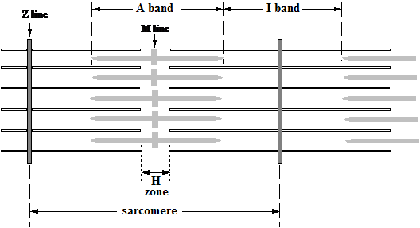
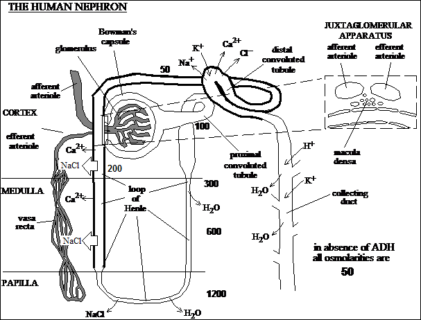
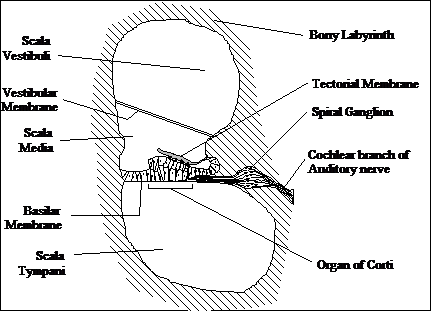
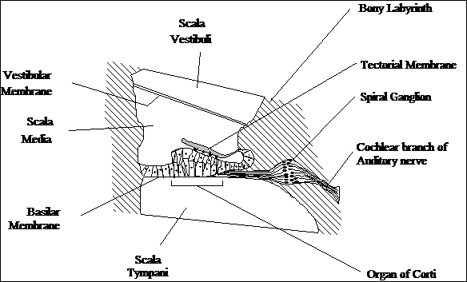
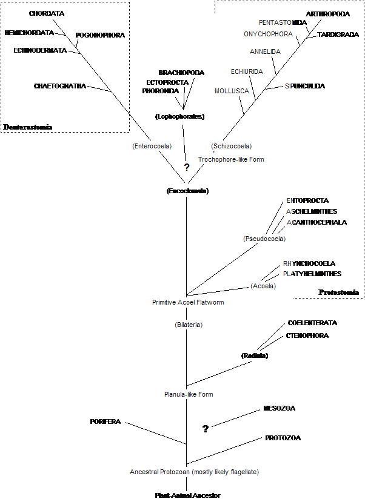
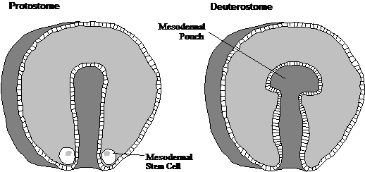
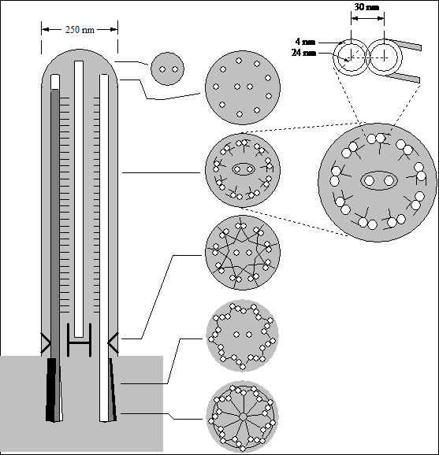

Zoology
with large section on Systematics of the Animal Kingdom
S. Mitchell Halloran
This document was prepared during the 1993-1994 academic year while S. M. Halloran was a lecturer at the Middle East Technical University, as notes for teacher and students forming part of the development of a course established for the purpose of teaching undergraduates in the Faculty of Education the elements of zoology in preparation for these students becoming teachers of biology in the compulsory public school system of the Republic of Turkey.
To be added to this document is a table of contents representing the outline of this document, with anchors (clickable links) to headings.
Note that some sections may be incomplete (e.g., contain headings without text). This document is hardly an exhaustive description on the subject and discipline of zoology or of systematics of the animal kingdom; but then it was never intended to be.
The sources for these notes are listed below.
core of notes from
W. H. Johnson, L. E. Delanney, E. C. Williams, T. A. Cole
Principles of Zoology
(Holt, Rinehart, Winston: New York), 1969.
additional notes from
A. M. Elliot and D. E. Outka
Zoology, 5th Ed.
(Prentice-Hall: Englewood Cliffs, N. J.), 1976.
and from
T. I. Storer, R. L. Usinger
General Zoology, 4th Ed.
(McGraw-Hill: New York), 1965.
detailed notes on the protozoa from
M. A. Sleigh
The Biology of Protozoa
(Edward Arnold: London), 1973.
This document contains seven illustrations. It is hoped that these images accompany the document, as some effort was made to render them and, of course, they do have informative value.
meaning of zoology, science, scientific method. Specialized fields of science: natural history, botany, biology. Living vs. nonliving matter: form & size, chemical composition, metabolism, irritability, reproduction.
Animals vs. plants. Most animals generally capable of motion. Rarely do plants. Some appear intermediate. Euglena moves about and gathers food like an animal, but contains chlorophyll. In form & structure for animals, the body is constant, organs internal, cells within delicate membranes bathed in saline-like medium. The plant body varies constantly, organs added externally, cells lined with rigid walls, and a NaCl-medium is toxic.
Greeks made first contributions. Anaximander (611-547 B.C.) first proposes that living things emerged from mud. Xenophanes (6th C. B.C.) recognizes fossils as animal remains, and indicates that presence of marine forms on mountains indicates the sea was at one time there.
Aristotle wrote Historia animalium of nine books (500 pages in a modern translation) which shows structure and habits of indiginous animals. He indicated some groupings of related animals but without a classification scheme. He followed chick embryo development, knew that drone bees develop by parthenogenesis, and that the young of sharks develop inside the mother. He also speculated on evolution.
Among Romans Pliny the Elder (A.D. 23-79) produced his own Natural History which covered a variety of zoologically related topics.
Works on natural history: Konrad Gesner (Swiss, 1516-1565) Historia animalium, patterned on Aristotle, but including illustrated work and many good figures. Guillaume Rondelet (French, 1507-1566) De piscibus marinus (1554) Mediterranean marine animals and first figure of dissected invertebrate. Georges, Comte de Buffon (French, 1707-1788) Histoire naturelle, a very comprehensive and famous work.
Habits and external relations. Live in water and most land areas (amphibious). Each kind has a particular set of surroundings (habitat) such as marshes, pools, streams. On land it jumps by hind legs when startled. Swimming in water is done by alternate hind leg extension and flexion. Food is live when consumed: insects and worms. Motionless animals and objects ignored; undesirable food rejected. Water is typical shelter against enemies, for moistening skin, and for ingestion of water (by skin). Mud is used to protect against freezing winters. Natural enemies are snakes, turtles, herons, raccoons, and man.
External features. Head, trunk, and limbs are apparent. Soft smooth skin. Head has wide mouth. Behind the large spherical eyes is a flat eardrum (tympanic membrane). Eyes can be covered by large opaque upper eyelid and lesser lower eyelid. From a vent (anus) at the hind end, food wastes, liquid excetory waste and sex cells are discharged. Frogs show bilateral symmetry and can be considered to have medial, lateral, anterior, posterior, dorsal, ventral points of reference.
Mouth cavity. The jaws form a wide mouth cavity which narrows into the pharynx, which connects to a gullet (esophagus). A flat tongue is attached anteriorly, and is notched posteriorly, flipping up from the back to catch its food. Taste buds are on the upper surface. A mucous coating permits a sure catch. Swallowing requires raising the mouth floor and depressing the eyeballs. Upper jaw has fine conical maxillary teeth, and the roof of the mouth also has vomerine teeth. Nostrils (internal nares) are found in the mouth cavity and external nares are also present. A glottis protects the entrance to the respiratory pathway; it closes during swallowing. A Eustachian tube connects the mouth cavity to the middle ear chamber behind the eardrum. Male frogs also have vocal sacs in the throat to obtain the croaking sounds.
Internal structure.
Matter has atomic structure. Elements are indivisible units
Electrons assume positions in atomic orbitals arranged in subshells arranged in shells. Electons have positions in probability density.
Bonds can be ionic (electrovalent) or covalent. Water can form hydrogen bonds with other atoms. The O—H hydrogen bond in 1.77 Å, the H—O bond in water is 0.99 Å, so the O—O bond distance is 2.76 Å.
Inorganic components of cells include water (function in solvent, metabolite, temperature stabilizer), salts, acids, and bases. Organic constituents are carbohydrates, lipids, proteins, nucleic acids. Note the terms primary, secondary, tertiary, and quaternary structure were known in 1969. Miescher studying cell nuclei chemistry discovered nucleic acids in 1868; he found a phosphorus-rich substance he called nuclein.
The cell concept or cell principle is that all living things are made up of cells. Their size ranges from 3 cm (hen's egg) in diameter, 3 feet in length (neurons). Most are microscopic between 10-100 µm. An RBC is 7.5 µm.
First microscope matter of debate. Janssen brothers in Middleburg, Holland in 1590 made primitive microscope; they showed how lenses combine in tube to magnify objects. Leeuwenhoek played with lenses as a hobby; he reported first descriptions of protozoa and bacteria in 1674. Marcello Malpighi was prof. of medicine (U. Bologna) and showed in 1660 capillary circulation in frog lung; studied also plant and silkworm anatomy.
Robert Hooke was curator of instruments; published 'Micrographia' in 1665 showing his microscopic work with cork; referred to word 'cell' in his work, which means hollow space. Although several workers up to that time indicated the cellular nature of life, a botanist Schleiden announced in 1838 that all plant tissue is maded of cells, and a zoologist Schwann one year later said the same about animals.
Cell parts include:
Plasma membrane. Proof of its existence is that a barrier to the diffusion of the dye phenol red is found whether on the outside or injected inside.
Cytoplasm. All material within the plasma membrane and outside the nuclear membrane. Outer portion (ectoplasm) near membrane surface more rigid (viscous) and lacking in granules; inner portion (endoplasm) less viscous and organelles here.
Comparison of plant and animals cells: 1. Plant cells larger than animal cells as a rule. 2. Plant cells have a wall of rigid cells not found in animals. 3. Mature plant cells have large sap vacuole while all animal cell vacuoles are small. 4. Except in some protozoa, no chloroplasts or plastids in animal cells. 5. During cell division, animal cells form an equatorial plate which constricts around the cell midline; in plants, partition is by a nonconstricting cell plate.
Viruses infect cells but are nonliving
Flemming (1882) first outlined the mitotic stage of nuclear division, then the cytokinetic stage of cytoplasmic division. Spindle forms from fibers extending from centrioles.
Since cells defined as having cytoplasm, nucleus, and plasma membrane, what about blue-green algae and bacteria?
Striated muscle fibers are multinucleate in that they do not form divsions using a plasma membrane. They are a syncytium.
Five tissue types in the vertebrate.
Organs and organ systems are the next greater levels of organization.
Invertebrates use an exoskeleton, vertebrates and endoskeleton.
Thin epidermis and thicker dermis. Epidermis is stratified epithelium with basal germinal layer. Melanocytes at the juncture between epidermis and dermis; they extend long processes and incorporate melanin into epidermal cells. Dermis largely fibrous and elastic connective tissue.
Skin derivatives include hair, sebaceous glands (secrete sebum oil into hair follicle), smooth muscle which elevate hair during contraction (arrector pili). Sweat glands are eccrine found all over the body surface, or apocrine associated with hair follicles, these found primarily in armpits and regarded as scent glands. The eccrine produce a very watery sweat in humans all of the body, but in cats, dogs, and rodents, they are only in the foot pads. The skin serves a number of functions in protection, temperature regulation, excretion
Frog skin has also a thin epidermis and thick dermis, but scales, hairs and sweat glands are absent. Numerous mucous glands are present however.
Axial skeleton is composed of skull, vertebral column, ribs (none in frog), and sternum. Appendicular skeleton is made up of the appendages and their girdles.
Primary function of skull is protection of brain; the cranium serves this function. Skull also protects organs of special sense: eyes, ears, nose, mouth. Human skull has 22 bones not counting the 6 ossicles. Bones joined by sutures in adult, with fontanelles present at birth to allow passage through the birth canal.
Vertebral column articulates with skull, support for soft parts of body. Girdles attached to it. 33 or 34 vertebrae in humans (varies at coccyx): subdivided into 7 cervical, 12 thoracic, 5 lumbar, 5 fused sacral bones, and 4 or 5 small, fused coccygeal bones. Coccyx is vestige of tail.
Comparison of cat (quadruped) and human (biped) shows main arch in the vertebral column, which is used for building strength. Lumbar S curve in man is intended to increase strength in the anterior-posterior axis; weight is displaced dorsally and shocks absorbed better.
In frog only 9 vertebrae, followed posteriorly by a long rodlike bone called the urostyle. All vertebrae similar in appearance except 1st (the atlas) and the 9th, which has extensive transverse processes for articulating with pelvic girdle. Tadpole has longer vertebral column with more vertebrae, but some resorbed in metamorphosis. Adult frog skeleton considered highly specialized because of this; frog adult has no ribs, but has sternum.
In human 12 pairs of ribs, each articulating with thoracic vertebrae. 10 superiormost ribs attach to sternum in front, lower two do not (called floating or false ribs). Sternum has manubrium, gladiolus or body, and xiphoid process from top to bottom.
The pectoral girdle forms the shoulder to attach forelimbs. In frog four bones forming the girdle are scapula, suprascapula (cartilage), clavicle, and coracoid. In humans, there is no suprascapula, and the coracoid is not a separate bone but reduced to a process (knob) attached to the scapula. The glenoid fossa on the lateral aspect is the point of articulation of the first limb bone.
The pelvic girdle is made of 3 bones in humands and frog. The frog ilium is long and articulates with sacral vertebrae transverse processes. The pubis is in the anterior and ventral aspect, while the ischium is ventral and posterior to the pubis. In humans they fuse to form the innominate bone attached to the dorsal aspect of the sacrum and fused in front by the symphysis pubis. The three bones together form the cavity, acetabulum, for articulation of first hindlimb bone.
As for the forelimb skeleton, the humerus is present in humans and frog, but in frog the radius and ulna are fused (radioulna) with the line of fusion noticeable. 8 small carpal bones arranged in two-by-four-bone rows in the human wrist, while only 6 carpals are in frog arraned in two rows. In humans the hand has 5 metacarpals and 3 phalanges in each finger, 2 in the thumb. In frog the thumb is vestigial with only a small metacarpal, the two outer digits have 3 phalanges, the inner two only 2 phalanges.
The hindlimb built on the same scheme. In human a femur articulates with the girdle, with tibia and fibula corresponding to radius and ulna, resp. The tibia and fibula are fused (tibiofibula) in frog. Humans have 7 tarsal (ankle) bones, 5 metatarsals, and while the big toe has 2 phalanges, the other four toes have 3 phalanges. Frogs have an elongated ankle with 2 rodlike tarsal, the other tarsals reduced in size, few in number; it also has 5 metatarsals, the 1st and 2nd toe have two phalanges, the 3rd and 5th have three, and the 4th has four. A rudimentary sixth digit (prehallux) has two small bones.
The primitive limb pattern is a five-digit limb.
Living bone is a matrix of CaPO4 and CaCO3. Lower vertebrates show mostly cartilaginous skeleton. Higher vertebrates start out as cartilaginous in embryos, proceed to ossification (this is cartilage bone). The facial, cranial and clavicle bones have no cartilaginous stage and are called membrane bone.
Ossification in long bones begins at centers in the middle and at both ends. Osteoblasts degrade cartilage and lay down bone. Increases in long bone length occur at end of bone in region called epiphysis. Growth here lasts to age 20 in humans. A membranous layer (periosteum) is responsible for growth in bone thickness. Marrow serves vital role in circulatory system tissue production.
Evolved types include immovable (sutures of cranium). Of the movable are ball-and-socket (femur to pelvic girdle, humerus to pectoral girdle) which moves in all planes, hinge which moves in only one (human knee and elbow). At articulations is a special cartilage covering bones to minimize friction. A ligamentous capsule contains synovial fluid, similar to lymph, produced by cell in the synovial membrane in the joint capsule. The bursae are fluid-secreting sacs where tendons pass over a bony surface exerting pressure.
Focus on striated (conscious control) muscle. Points of attachment are origin, which is the fixed portion during contraction, and the insertion, the part which moves a great deal during contraction.
Easy to remove sciatic nerve-gastrocnemius muscle in frog and study contraction. Once thought volume change occurred with muscle contraction when nerve pinched, but muscle place in fluid shows no up-and-down fluid movements.
Nerve-muscle preparation can be attached to device to test contraction effect. Single twitch in frog muscle is 100 msec. Twitch defined in three phases: (1) latent period (10 msec) in which stimulus applied, a wave of changes in electric potential are seen, and the first indications of contraction; (2) contraction period (40 msec) when muscles show shortening; (3) relaxation period (50 msec) when muscles must return to relaxed state.
In intact animal, contraction is not by single twitch but by a volley of impulses with increasing strength of contraction. Sustained contractions are called complete tetanus. This is largely because a muscle is composed of many fibers variously stimulated by nerve axons: while a single fiber will contract completely or not at all (all-or-none) when stimulated, it requires synchronous stimulation of all fibers to make the muscle contract at once, which does not usually happen.
Muscle contraction depends upon ATP, formed from glycogen to lactate breakdown. Muscles also have reserve of phosphocreatine (in vertebrates) and phosphoarginine to provide ATP formation in intense exercise. At molecular level is a required interaction by myosin and actin. A. Szent-Gyorgyi placed a mixture of the proteins, which form an actomyosin complex, in K+ and ATP solutions and observed contraction.
EM work shows striated muscle composed of striated fibrils. The sarcomere is a particular unit of the syncytial muscle tissue shown below. Cross section shows thick and thin filaments; selective salt extraction removing myosin diminshes the A band, showing they are the thick filaments, while removal of actin affect the I band and they are therefore thin filaments.

During muscle contraction, thin filaments overlap with each other according to EM cross sections. Complete contraction involves the thick filaments touching the Z line. This confirm's the sliding filament theory put forth by H. E. Huxley. Sarcoplasmic reticulum extends a network of tubules parallel to the fibrils; transverse connections occur at H zone and Z line. Another system of fine tubules form from invaginations of sarcolemma at Z line (T tubules). Calcium is released and rapidly taken up by the SR and T tubules.
Digestion is process of breaking down large complex molecules to smaller ones. Multicellular animals with only mouth have specialized cavity. Higher animals have tubular cavity or tract and a mouth and anus for effecient introduction and exit. Vertebrate tracts quite alike, and higher invertebrates show this feature.
In humans, tract is differentiated into mouth, pharnyx, esophagus, stomach, small intestine, large intestine. Salivary glands in mouth. Liver and pancreas important glands. Tract enclosed in coelom and held in place by mesenteries.
Tract cells specialized into layers: (1) mucosa is epithelial lining; (2) submucosa connective tissue, blood and lymph vessels; (3) circular muscle layer; (4) longitudinal muscle layer; (5) serosa in the peritoneum. Esophagus not in coelom and has no peritoneum surrounding it. Diagonal muscle fibers found in addition to the circular and longitudinal in the stomach. Chyme is moved by peristalsis (contraction of circular and longitudinal fibers contracting alternately in wave).
In mouth, digestion begins with mechanical breakdown by teeth. Humans have 32 permanent in both jaws. Each side of one jaw: 2 incisors, 1 canine, 2 premolars, 3 molars (3rd molars called wisdom teeth). First teeth (milk teeth) are 20 in number. Tooth constructed of crown (projecting from gum), neck (surrounded by gum), and root (into bone). Lower vertebrates (fish, amphibians, reptiles) have simple teeth, whereas in mammals they show the greatest diversity and development: herbivores have large grinding molars; carnivores large incisors (biting, flesh-tearing teeth). It is thought that tooth decay results from the modern lifestyle, in which a high sugar (sucrose-rich) diet has altered the bacterial flora in the oral cavity, since sucrose in such large amounts is not naturally occurring. Fluorine may fight this decay on two fronts: (1) it contributes to enamel hardness or resistivity to acid by forming CaF2 and (2) fluorine is a natural inhibitor of enzymes necessary for bacterial growth.
Tongue in humans serves to push food back into pharynx in addition to its functions in taste and control of vocal sounds (speech).
In frog, tongue is used to catch food (unlike many mammals) and attached anteriorly for flipping over. Teeth are found only in upper jaw (maxillary teeth) and roof of mouth (vomerine teeth) and used for seizing and holding, not for chewing. Frog only has a primary (hard) palate and no secondary (soft) palate.
Salivary glands located in mouth start chemical digestion processes. Humans have three glands in mouth cavity (submaxillary, sublingual, parotid glands). Saliva coats potentially dry food with moisture in preparation for swallowing.
Swallowing. With water-dwellers (fish), water serves to deliver food an oxygen: it passes through the gill clefts and food travels a more direct course down the esophagus. When vertebrates developed lungs from the floor of the mouth cavity, it became necessary to develop system to prevent food from proceeding and potentially blocking air passageway. Food or water entering the pharynx triggers reflex nervous activity which brings the larynx forward and tips the epiglottis, opening esophagus. A rapid peristaltic pulse forces the bolus to the stomach.
Emerges from mouth behind soft palate. Besides mouth, pharynx connects to internal nares (from nasal cavity), two Eustachian tubes, glottis and esophagus. Tongue forces food into pharynx and reflex mechanisms close all openings but esophageal.
In frog internal nares open directly into mouth since no soft palate. Lack of soft palate allows esophagus, glottis, and pharynx to be seen.
Muscular tube from pharynx to stomach. Peristalsis first seen. Cardiac sphincter maintains closed opening. Normally esophagus is collapsed structure.
In frog esophagus relatively short and no boundary with stomach is evident.
Anatomically distinguished by a fundus, body, and pylorus. Gastric mucosa composed of cells producing digestive enzymes, HCl, and mucus to protect mucosa from degradation.
In frog, stomach is not bent as much as in humans.
6 m in length in humans. Distinguished by 25 cm long duodenum, rest is jejunum (~3 m) and ileum. The jejunum is distinguished from the ileum by more numerous dramatic folds in the lining disappearing in the ileum. Duodenum is connected to the common biliary tract which is formed by the bile duct and pancreatic duct union. Villi are the folds of tissue which are a feature of the intestine. Length of intestine among mammals is shortest in carnivores (dog), longest in herbivores (rabbits), and of intermediate length in omnivores (humans), and compare amphibians below.
Gut is supported by dorsal mesentery: this holds stomach and duodenum well in place, but gives more freedom of movement to the rest of intestine. Believed that a ventral mesentery at one time held the tract from mouth to anus, but gradually lost as gut increased in length. Gut is not adequately supported by dorsal mesentery in bipeds; in youth abdominal muscles hold it in, but with age the gut begins sagging, and a pot-belly ensues.
Small intestine in amphibian relatively short compared to mammals, and has only a duodenum and ileum. The intestine in a tadpole is proportionally longer (it is a vegetable feeder) than in an adult (animal feeder).
Small intestine connected to side wall of large intestine, controlled by ileocaecal sphincter, allowing a caecum (blind sac) to form. Vermiform appendix is attached. In herbivores, this sac is longer and functional, a site for bacterial digestion in the gut. Colon is about 1.5 m long; anatomically divided into ascending, transverse, descending, and sigmoid parts. Rectum is straight tube about 12-13 cm long.
In frog the small intestine empties directly in without use of a caecum. At the end the large int. merges into a cloaca which itself empties via the cloacal opening or anus. Cloaca are not present in humans or placental mammals except in embryonic state.
Function is absorption of water from chyme. Chyme passes through in 12-14 hours here. Large numbers of bacteria present and are part of normal flora.
Endodermally derived tissues. Liver produces bile, stored in gall bladder; function in fat emulsification. Bile composed of bilirubin and biliverdin, which contribute to stool color when mixed with chyme. Hepatic dysfunction related to bile changes marked by change in stool color. Gallstones occur as a result of changes in the solubility of cholesterol (kept dissolved by bile salts); these stones can produce blockage in the biliary duct, leading to jaundice.
Liver also stores glucose, deaminates amino acids (produces urea). Liver stores vitamins A, D, and B12.
Pancreas serves dual function as endocrine and exocrine gland. Produces enzymes listed below.
Carbohydrates are the sugars and starches. Fats are utilized as sources of energy. Proteins give us animals essential amino acids (man and rat: Thr, Met, Val, Ile, Leu, Orn, Arg, His, Phe, Trp). Water: solvent, metabolite, homeothermic regulation. Inorganic salts and elements: Na, Cl, K, Mg, Ca, P, I, Fe, Cu, Mn, Zn, Co (deficiencies in Ca, Fe, and I can occur).
Vitamins essential. Nutritional deficiencies manifested as scurvy, beriberi, night blindness (xerophthalmia). Vitamin K in humans from gut bacteria. Vitamin A from colostrum in breast milk. Vitamin D is sterol derivative which covers wide class: D2 (calciferol) produced by action of UV light on ergosterol and is necessary for Ca2+ absorption in intestine.
In humans it begins with oral cavity: salivary amylases (ptyalin) break the polysaccharides (starch) into maltose (glucose disaccharides). The amylase action continues during swallowing and for a brief period in the stomach.
In the stomach: mechanical digestion continues as involuntary muscular contractions churn the food into liquid chyme. The chemical digestion begins with the enzyme rennin; activated by low pH, it digests milk protein caseinogen, converting it to whey and casein. The presence of Ca during this action cause curdling, permitting longer opportunity for action by pepsin in the stomach. Pepsin requires low pH; acts on short and long polypeptides. In addition to those two enzymes, a gastric lipase appears to hydrolyze fats into fatty acids and glycerol; these fats are typically the colloidal fats in milk and not those in tissues.
Ingested fluids can pass stomach in a few minutes, while solid food can take 3-5 hours to be emptied. Fats are digested more slowly here than other food types. Stomach emptying is by degrees: pyloric sphincter relaxes intermittently as chyme is spurted into small intestine. Parasympathetic fibers from vagus nerve control both stomach peristalsis and gastric secretions; sympathetic system can oppose this effect, prolonging digestion.
Vomiting. Also called regurgitation. A safety feature of the body designed to eliminate ingested materials which are toxic. Considered reverse of swallowing. One moment before vomiting, a deep breath is taken as it hold diaphragm down. The abdominal muscles contract convulsively, pressing the stomach against the taut diaphragm; the cardiac sphincter relaxes; the contents are forced through the esophagus. Like swallowing, this is a reflex once begun fully committed to completion.
In small intestine thorough digestion results since the pancreas secretes amylase, lipase, ribo- and deoxyribonucleases, and proteases (trypsin, chymotrypsin, carboxypeptidases). Trypsinogen is activated by enterokinase, while chymotrypsinogen is activated by trypsin. Intestinal epithelial cells may secrete additional proteases (aminopeptidases, tripeptidases and dipeptidases) and sugar-splitting enzymes (sucrase, lactase, and maltase). Digestion can proceed for 5-10 hours in the intestine.
Churning movements in small intestine are of two types: segmental and pendular. Both are confined to mixing the food within a loop of the gut rather than moving it along.
In the frog digestive system everything else works in the same way except that frogs have no salivary glands, and hence there is no salivary amylase to begin digestion of starch.
Salivary secretion built strictly on nervous reflex in which taste buds and end-organs in oral cavity are sensitive to presence of food and chewing action; these activate motor pathways in the salivary glands. As for gastric juice secretion described below, there is also conscious control affecting salivation.
Gastric juices are controlled by nervous and endocrine systems; 400-800 ml produced with avg. meal. Flow begins with meal inception and ends when stomach emptied. Pavlov's work with dogs in which food is never permitted to reach stomach shows that when dog eats 25% of normal gastric secretion obtained. Shown to be under control of nerves innervating stomach. In another experiment Pavlov adds food directly to excised stomach without dog knowing food is introduced: he discovers 75% of normal level secreted, showing food contact with stomach lining is hormonally controlled since denervated stomach shows same response. 3rd experiment is by intermingling the blood of two dogs: one eats but the other does not, yet both dogs secrete gastric juice. Hormone called gastrin. Another hormone (enterogastrone) is secreted from duodenal mucosal epithelium to signal that gastric juice production and the muscular churning in the stomach are to be inhibited.
Secretion of bile and pancreatic enzymes are also under hormonal control. Acidic chyme apparently stimulates cells in duodenum. These cells secrete prosecretin into chyme; this is converted by HCl present to secretin, which enters blood and stimulates the pancreatic enzymes to secrete. Cholecystokinin also secreted by duodenal cells into blood; hormone activates contractions of smooth muscle in gall bladder to deliver bile.
Epithelial cells arranged in villi to maximize surface area of intestine for absorption. Cells themselves show microvilli on lumenal surface to enhance even greater the absorption surface. Each villus accompanied by blood capillaries and central lymph vessel (lacteal). Much absorption by active transport apparently. Larger molecules absorbed more quickly than smaller. Only one-third of fat digested to glycerol and fatty acids; fat globules pinocytically absorbed and taken into lacteals. Vit. A, D, and K trace same path as fats.
Liver controls blood glucose to 0.15%; fructose and galactose converted in liver. Special cells in liver process fats for storage in adipose tissue. Amino acids used in protein building and maintenance, but excess must be deaminated in liver which forms urea and organic acids.
Basal metabolic rate is amount of energy necessary to maintain vital functions at rest and during postprandial state. 1 Calorie (large calorie) is heat necessary to raise 1 kg water from 15° to 16° C at P=1 atm. Average sedentary individual uses 3000 Calories, of which 1500-1800 maintain vital function. Carbohydrates yield 4 Cal per gram, fats 9 Cal per gram. Avg person gets 2/3 of energy from carbohydrate burning.
Respiration may be defined as the system designed to permit gas exchange in the organism or between cell and its environment. In unicellular, just simple diffusion. In multicellular efficient systems bring specialized tissues to make sure all cells get efficient gas exchange.
External nares (nostrils) near nose tip lead into small nasal cavities, which connect to the mouth cavity by internal nares. Posterior to tongue in the pharynx is a slit which is the glottis which leads to the larynx (a cartilaginous box with membranous floor held in place between bony thyroid processes of the hyoid cartilage). Posterior to openings in the larynx is a short passage to the lungs.
The lungs are covered by a peritoneum (pleura) and are in the body cavity with other organs, unlike in higher vertebrates which possess a diaphragm and separate the lungs from this cavity. Histologically lungs contain numerous small chambers called air sacs.
The frog's skin is also an organ of respiration, and is only method of obtaining oxygen when frog buries itself in mud at a lake or pond bottom in the winter. Frog may also obtain oxygen via skin when out of water.
Vocal sounds really occur in amphibians as first vertebrates to show it (some fish excepted). Vocal cords identifiable as elastic bands stretched across larynx. In addition male frogs have vocal sacs connected to the pharynx sides; these serve as resonators when distended.
Air enters by nostrils but also by mouth. From the nostrils into the proportionally larger nasal cavities (relative to frog), bony turbinates direct air flow so it can be filtered by long hairs and sticky mucus, and also to warm and humidify it. It passes to the pharynx, through the glottis and into the larynx (the Adam's apple, larger in men than women). An epiglottis is present as a tissue flap to cover it during swallowing. Air proceeds through the cartilaginous trachea to the bronchi, which lead into the lungs.
The function unit is the alveolus, which are clusters of cup-shaped cavities functioning like air sacs in frog. Lipoprotein surfactant lines the alveoli to reduce surface tensions that would otherwise collapse the alveoli. Human lung tissue also has extensive elastic connective tissue within it to bind the parts together.
The lungs are enclosed by ribs, which are connected by intercostal muscles serving in the breathing function. A muscular diaphragm is situated inferiorly. Lungs are encased in pleural cavities while a pericardial cavity encloses the heart. Pleural membranes are two layers: a visceral pleura attached to the lung, and a parietal pleura forming the outer layer. Lymph is secreted between them to suspend the lungs in a relatively frictionless system during breathing motions. Lungs filled with air at all times; will collapse when removed because of constant tension in brochioles.
In-breathing is inspiration; out-breathing is expiration.
Frog breathing is by a 'forced-pump' mechanism in which two movements are observed: (1) frequent up-and-down movements of the mouth; (2) less frequent body wall contraction followed by quick expansion of body wall is seen. In the first movement, the glottis is closed and nares open, and air enters and leaves the very vascularized pharyngeal chamber, where gas exchange likely occurs. In the second, air is forced from the lungs, out of the glottis, in which some reaches to the outside; the body wall expands and the tip of the lower jaw pressed against the upper to close the nares; subsequent elevation of the mouth forces air through the glottis into the lungs.
In humans breathing is rather by a 'suction-pump' mechanism. No barriers to the passageways are even formed during breathing as in frog. All passageways are structurally reinforced to prevent collapse as well which is quite important. Any change in volume by expansion results in negative pressure buildup as the tubes leading to the aveoli cannot collapse or expand. When the diaphragm pulls on the elatic tissue of the lung, air rushes in. (This can be approximated by the rubber balloon, or lung, in a glass jar with tubes leading out of the jar connecting the balloon. The bottom of the jar has a rubber membrane, or diaphragm, which can be pulled: the balloon will expand.) The intercostal muscles participate by contracting and causing the ribs to rise and turn outward, which expands the chest cavity. If air is placed with pleural space say by trauma which involves puncture, the lungs will deflate (pneumothorax). Atelectasis is mere collapse of one lung or one of its lobes (can be by disease).
Breathing rate is usu. 18 per min. Severing of either the phrenic nerve leading to diaphragm and cervical nerves leading to the intercostal muscles stops all breathing movements, since both intercostals and diaphragm are essential for breathing. All nervous control involved in breathing movements comes from respiratory center in medulla. Continuously transmitted motor impulses sent down the phrenic nerve to the diaphragm and down the cervical sympathetics to the intercostal muscles stimulate their contraction, causing thoracic avity expansion and concomitant negative pressure in the lung spaces, leading to inspiration as indicated above in the forced pump mechanism. Visceral afferents from the alveoli and lung tissue sense expansion within the tissue, increase their impulse frequency to the medullary respiratory center which in turn is inhibitory to the motor impulse frequency to breathing muscles. The diaphragm and intercostal muscles relax as a consequence of reduced motor stimulation; the relaxation produces expiration as a result of elastic recoil produced by connective tissue in the lung and pleurae. (Some books seem to show that the vagus (IX cranial) innervates the diaphragm. Anatomy books do not appear to show vagus nerve innervation of the diaphragm.).
Changes in blood CO2 are monitored and sent to the medullary center; stimulation of this chemoreceptor will stimulate the inhalation motor impulse system to increase the breathing rate. Proof that CO2 was the regulator of breathing was by experiments with animals breathing varied partial pressures of O2 and CO2. Breathing in newborns only occurs when CO2 begins to build up; if breathing does not start right away, giving the infant air with 10% CO2 helps to start breathing.
It is generally observed that labored breathing can result from below-normal atmospheric O2 tensions unaccompanied by blood CO2 changes. This can be explained by the stimulation of another chemoreceptor which is sensitive to the presence of lactic acid. Autonomic afferents connected to the carotid body chemoreceptors and passing to the medulla through the IX cranial (vagus) nerve sense increases in lactic acid buildup, and one of their effects is stimulation of breathing rate.
Lung tidal volume is about 500 ml. Forced inspiration should draw 2.5 liters (complemental air). Forceful expiration beyond normally expired air produces 1 liter called supplemental air. A residual volume of 1.2 liters remains beyond the forced expiration which can never be exhaled. The sum of the tidal volume, complemental air, and supplemental air (4 liters) is called the vital capacity. Total lung capacity is 5.2 liters.
Atmospheric air (dry) has a 20.96% O2, 0.04% CO2, and 79% N2 (by volume). Exhaled air (dry) shows 16.02% O2, 4.38% CO2, and no change in the N2 component. Hence the oxygen has been reduced by nearly 25%, while the CO2 content has increased over 100 times.
Mammalian lungs are adapted for sea level atmospheres. With a 150 mm Hg tension of O2, blood can be saturated. At 9000 ft, atmospheric pressure is only 550 mm Hg instead of 760; at 14,000 ft only 450 mm Hg; and at 18,000 ft, O2 is half the pressure than at sea level, low enough to induce fainting. Adaptations to high altitudes in humans necessarily require an increase in the number of RBCs and an increase in hemoglobin in each cell.
Hemoglobin is O2 carrier; some myoglobin stores O2 as well. Acidosis is blood pH change. Blood pH can affect O2 binding to Hb.
External respiration may be characterized as the exchange of gases in tissues designed for the purpose of gas exchange so that the whole body benefits. Internal respiration may be defined as the exchange of gases between the gas-carrying tissues and the cells that require this exchange.
At high atmospheric pressures, the dissolved (inert) gases have a higher tension in the blood than is normal. If a person suddenly moves into an environment with a considerably lower total atmospheric pressure, these gases will want to expand quickly. They can do this in the blood, forming pockets of gas instead of remaining dissolved. This apparently causes great pain, forcing the person into a bending position (the 'bends'), and it can kill the person.
Snails and insects demonstrate open system in which blood (hemolymph) bathes cells directly, intermingles. Closed system is one in which blood cells bounded by vessels and capillaries.
Progressive evolution among the vertebrates clearly demonstrated in comparing embryonic and adult stages of circ. system development. The avian and mammalian systems are clearly divergent from the reptilian system, which advances from the amphibian, and traces back to the very primitive chordate amphioxus.
In amphioxus, vessels conducting blood are well formed. The 'heart' is really a ventrally located pulsating artery. The blood proceeds into a ventral aorta which then bifurcates through multiple segmented loops of arteries surrounding the pharynx and into the gills, and this feature clearly is homologous to the pharyngeal arches in the higher vertebrates; these arteries converge into the dorsal aorta which delivers the oxygenated blood to the tissues. A hepatic portal system is in evidence.
In the cartilaginous fishes (shark), the blood vessel pattern continues. Here a true heart is in evidence with two chambers arranged in a series to replace the posterior part of the ventral aorta in amphioxus. Blood passing through a two-chambered heart is unoxygenated. An expanded venous sac (the sinus venosus) empties into a single atrium, which then empties into a single ventricle. From the ventricle, blood is pumped anteriorly into the ventral aorta. The anterior length of the ventral aorta branches into aortic loops in the pharnynx which enter into the gills. The blood then collects from the gills into a dorsal aorta for distribution. A hepatic portal vein collects blood coming from the intestine.
With lung development for land animals, the lung fishes, amphibians, and most reptiles develop a three-chambered heart; the frog heart is a good model (discusssed below). The fishes and primitive chordates show a single circuit of blood transport, but with lung development, a double circuit emerges: a systemic and a pulmonary circuit. The heart becomes a double pump, imperfectly formed in frog, more complete in reptiles, and fully complete in mammals and birds. With frogs, two atria and a single ventricle is evident. The ventricle begins to divide into two in reptiles, not fully separated; a complete septum is in birds and mammals. The major difference between bird and mammals is that the right branch of the 4th aortic arch is retained in birds, the left branch in mammals.
The human heart passes through several stages during embryonic development in which the circulatory system resembles the systems in all the lower vertebrates: it is a simple tubular structure which develops two atria and a ventricle, which later partitions slowly then completely.
Systemic blood returns via caval veins (superior and inferior vena cavae) to enter the right atrium (cf. sinus venosus in lower animals). Similarly blood fills the left atrium from the pulmonary veins returning from the lungs. The atria are induced to contract and fill their respective ventricles, which soon contract after filling to pump blood either into the pulmonary artery leading to the lungs (from the right) or into the aorta leading to the body.
Beating. Heart beats are not generated externally by a remote nervous system center in animals, since hearts can be removed from animals, placed in a salt + glucose solution, and observed to beat for hours, even days. Hearts in human embryos begin to pulsate well before nervous system development leads to their innervation.
The beat of the human heart is controlled by a sino-atrial node (SA node), a specialized excitable tissue which is a remnant of the sinus venosus of the lower forms. It is a major part of the embryonic heart. In the adult it becomes located on the posterio-medial aspect of the right atrium. Another specialized excitable muscle mass is the atrio-ventricular node (AV node), connecting the atria to the ventricles electrically.
The SA node should be considered excitable muscle tissue: its membrane is such that it is slightly permeable to Na+ ion, which leaks slowly into the cells of the node. This causes electrical changes across the plasma membranes, eventually leading to a voltage difference which causes the Na+ to rush in all at once in a depolarization event (an action potential). This movement of ions across membranes (movement of electrical charge is the definition of an electrical current) is transmitted from the cells of the node to excitable neuron-like fibers extending and branching into the muscular walls of the atria. The action potential is used to cause polarization changes in the muscle tissue, associated with the release of Ca2+ to permit myosin-actin interaction (Ca2+ binds troponin), and the ratcheting causes muscle contraction as in skeletal muscle. Special fibers also lead to the AV node: this node of muscle tissue serves to delay action potential transmission to the ventricles. After a brief delay, the impulse is sent down bundles of fibers (the bundle of His) and then branches out to terminal fibers (Purkinje fibers) to stimulate contraction of the ventricle walls. The delay is well-timed to permit ventricular filling by atrial contraction before ventricular contraction occurs.
Comparison of muscle wall thickness shows atrial walls are thinnest, while the ventricles are thicker with the left ventricle wall the thickest. This is quite logical given the varying pumping forces (energies) necessary for each of these parts. The flaps of the valves between the atria (tricuspid between right atrium and its ventricle; bicuspid or mitral between left atrium and ventricle) are supported by chordae tendineae, necessary anchors to prevent flap reversal during ventricular contraction which would force blood back into the atria. The semilunar valves in both the pulmonary artery and aorta are three half-moon shaped pockets which prevent back flow of blood as its cups fill. Heart chamber contraction is called systole, with relaxation called diastole. The heart sounds, S1 and S2, are associated with closure of the atrioventricular and semilunar valves, resp. Valve damage from some diseases (syphilis, rheumatic fever) leads to altered sounds (murmurs).
Human heart beats 72 per min (avg.) pumping 50 ml of blood. Total blood volume is between 4.5 and 6 L (heart pumps this volume twice per minute during exercise). Work done by a single heart in 24 hr can raise 70 kg human 500 m. Heart is size of clenched fist; located in a peritoneal-like cavity which is the pericardium. An external tissue layer covers the heart called the epicardium, and between this epicardium and the pericardial lining is a lymph secreted by the pericardial lining which reduces friction generated by beating action.
Coronary arteries provide blood to the walls of the heart muscle itself; emerge from the aorta in right and left branches just above the semilunar valves. 25% (another source says 7-10%) of blood emerging from heart goes to coronary circulation.
Located in a pericardial sac in the body's anterior. A single, very thick-walled ventricle is immediately apparent with two thin-walled atria anterior to the ventricle. A conus arteriosus is a thick tube leading anteriorly from the ventricle. The sinus venosus is dorsal relative to the heart in the region where two precaval and one postcaval veins meet. The sinus venosus is the SA node for the heart: its contraction pumps blood into the right atrium. A sino-atrial valve is between the right atrium and sinus to prevent blood backflow.
Both atria contract to force blood into the single ventricle, with valves between the atria and ventricle. Some mixing of the blood is inevitable, but the geometry and spongy construction of the ventricle prevent thorough mixing. The relatively less oxygenated blood from the right atrium is nearest to the conus arteriosus; the initial phases of ventricular contraction force this blood into the conus and into a wedge-like spiral valve, which leads to the pulmo-cutaneous arches directing blood to the lungs and skin. Continuation to the next phase of ventricular contraction, the blood in the middle of the ventricle enters another opening in the conus which leads to the systemic arches; this is mixed blood directed to the posterior region of the body. Last to enter the conus is the highly oxygenated blood obtained from the left atrium, which enters the carotid arches leading to the head. Three semilunar valve prevent backflow from the conus, and a similar valve is at the vessel leading to the pulmo-cutaneous arches.
Arteries conduct blood from the heart to the capillaries, veins conduct blood from the capillaries to the heart. Capillaries are sites of exchange of gases and metabolites. William Harvey first to discover function of veins and arteries; Marcello Malpighi identified capillaries 33 years later.
Arteries composed of three well-organized epithelial layers. Tunica adventitia is outermost; composed of connective tissue, elastic tissue, scattered longitudinally arranged smooth muscle. Tunica media composed of more dense, circularly arranged smooth muscle with elastic connective tissue alternating in layers with it; the tunica media accounts for the difference in wall thickness between veins and arteries, as the muscle plays a role in directing blood flow in arteries unnecessary in veins. Tunica intima is a single layer of epithelium called endothelium. An internal elastic membrane is associated with the outside of the endothelium in arteries to give extra strength to this vessel type. Tiny vessels and nerves also can be found in arterial walls which control the smooth muscle in these walls. Because of the forces it must withstand, the aorta is composed of elastic and connective tissue while arterioles are usually covered only by smooth muscle.
Veins have the same three layers, but the middle layer is not as thick. In addition, valves are present at intervals to prevent blood backflow.
Lymph vessels are similar to veins in construction but even thinner, with more numerous valves.
Capillaries are formed by a single layer of flattened cells continuous as endothelium. Capillary diameter can be less than the RBC diameter, causing alterations in the static shape of the RBC. In humans total length of capillaries are about 100,000 km.
Clear differences in pressure observed when artery severed as compared to a vein. Pulse is manifestation of elasticity of arterial wall in which wave force propagated down the arterial wall. It is felt in certain regions since the artery is closest to the skin. Pressure is reduced in the blood as a result of friction generated by branching and bifurcation into narrower channels. Blood velocity is greatest in the aorta (occurring in waves with beating of heart), decreases to a continuous unpulsed flow in capillaries, and gradually increases with venous return but unpulsed. Manometric reading from sphymomanometer involves cutting of arterial flow, listening for pulsing sounds as blood swishes through artery at a pressure between diastole and systole. Typical readings: arterial 120/80; capillary 30/10; venous 10/0. Blood pressure function of blood volume, blood vessel size (vasoconstrictive or distended), and inotropic forces from heart. Increased inotropism in the heart is a result of stretching the cardiac muscle because of greater coronary flow: the forces of contraction become greater.
The chronal beating is generated intrinsically by the SA node in most animal hearts. But the SA node rate can be influenced externally by nerves leading from the medullary cardiac center via the spinal and cranial nerves which lead to the SA node and serve to increase or decrease the rate through these stimulations of the node. The cervical sympathetics emerging from the control of the medulla accelerate the heart; the vagus nerve is the cranial nerve containing the parasympathetic fibers which slow the heart rate. The heart rate is also controlled by baroreceptors in the cartoid arteries, which stimulate the cardiac receptor to slow the heart beat in hypertension that may result after exercise has stopped.
Nerves from the medullary vasomotor center also direct responses in the blood vessel smooth muscle. Hormones like epinephrine induce smooth muscle in arteries to constrict except for those in skeletal muscle, which are induced to dilate; hence skeletal muscle gets the lion's share of blood.
Blood entering the capillary bed from arterial side has 40 mm Hg pressure, and exits from the bed into the venous side with 18 mm Hg pressure. The pressure difference forces fluid (not cells or large complexes of blood protein) into the interstices of the bed (lymph) which tends to accumulate. Some recovery of this fluid on venous side back into the blood is a result of osmotic pressure of the blood proteins, but the net fluid accumulation is directed toward nascent lymph capillaries in the bed, which join to form larger vessels. In humans these vessels ultimately collect into the thoracic duct joining into the blood at the left jugular and subclavian veins; the head and right arm are drained by another separate right lymphatic duct entering the right side juncture of subclavian and jugular veins. Lymph flow is rather passive occurring as a result of voluntary and involuntary muscular contractions. Abnormal accumulation of lymph results in edema (edematous swelling), which can occur because of hypertension, changes in blood protein affecting osmotic pressure, or lymph circulatory occlussion.
Lymph passes through nodes containing immune and phagocytic cells. Most every indication of problems in the body pass into the lymph where they can be detected in the immune cells of the node.
The spleen is an organ in frog and human which apparently serves the purpose of (1) being a reservoir of white and red blood cells: it can contract and deliver corpuscles to the blood; (2) it is lymphoid in nature and filters the blood directly; (3) it is a site for lymphocyte production and regulation.
The frog lymphatics are not so ordered in terms of vessels as in human. Lymph spaces exist in which forms canals or connections with each other and flow freely back and forth. Lymph accumulates into four 'hearts' which pump the lymph into the venous circulation. Two anterior lymph hearts are behind and lateral to the 3rd vertebrate transverse processes, and two posterior lymph hearts are lateral to the tip of the urostyle.
Among the important arteries: the aorta emerges from left ventricle and has 3 branches: (1) the innominate, (2) left common carotid, (3) left subclavian. The innominate divides into the right common carotid and right subclavian. The subclavian provide to the arms, the carotids to the head. The aorta descends (moves posteriorly) to branch into visceral arteries: coeliac, supplying stomach, spleen, and liver; superior mesenteric, supplying small intestine and ascending colon; inferior mesenteric, supplying descending colon and rectum; and renal supplying the kidney. The aorta branches in the pelvic region into common iliac arteries, which supply the pelvic area and lower limbs. Pulmonary arteries lead from the right ventricle to the lung capillaries.
The superior vena cava (precava) collects venous blood from the head and shoulders, formed by union of two innominate veins. The jugulars from the head and subclavians from the arms empty into the innominate. The inferior vena cava (postcava) forms from the common iliac veins which drain the lower part of the body. Prominent renal and hepatic veins empty into this large vessel as well.
Blood emerges from ventricle into conus arteriosus, then divides into two branches which will branch at segments into right and left pairs of aortic arches. The most anterior pair is the carotid arches, which divide into external and internal carotid arteries supplying the head. A posterior branch is the pulmo-cutaneous arch which divides into the pulmonary artery to the lung and cutaneous artery to the skin. A middle branch is the systemic arches which bend dorsally and posteriorly, joining to form the dorsal aorta. Subclavians branch from the systemic arches to supply the forelimbs. The coeliaco-mesenteric artery also branch from the systemic arch just anterior to forming the dorsal aorta and supply the digestive organs. The aorta branches to urogenital arteries which supply the kidney and gonads. And posterior to the branch is a bifurcation to the common iliac arteries, which branch into sciatic and femoral arteries.
Precaval veins bring blood from the anterior end of the animal, formed by jugular, innominate, and subclavian veins. Postcaval veins arise from the union of several renal veins and from hepatic veins. Blood from the frog's hind legs does not return to the heart directly as in humans, but passes either through the kidneys or liver. The sciatic and femoral veins return blood from the hind limbs. The femoral vein branches into a pelvic vein and iliac vein. The iliac vein then unites with the sciactic to form the renal portal vein. The two pelvic veins unite to form a ventral abdominal vein which passes into the liver. Veins from the intestine form a hepatic portal vein.
All vertebrates have an hepatic portal venous system, and all but adult mammals have a renal portal vein system. The ventral abdominal vein has been modified and now only the postcaval vein collects blood from the hind limbs.
In addition to the changes in the heart, the greatest manifestation of evolutionary progression has to be the changes in the uses of the aortic arches.
In the development of all vertebrate embryos is seen six pairs of aortic arches, in which the ventral aorta leading from the heart is connected to the dorsal aorta by these branching arches. The ancestral vertebrate is assumed to have had this simple arrangement. In the shark adult, the posterior-most five arches persist (the most anterior arch becomes something else), while in adult bony fishes, the posterior-most four arches persist. These arches become the vascular beds for the gills in respiration of the fishes.
With terrestrial vertebrates, the 1st, 2nd, and 5th arches (number 1-6 is anterior to posterior) disappear. The 3rd pair forms the carotid arteries, the 6th pair the pulmonary arteries. In the amphibians and reptiles, the 4th pair of arches form the systemic arches leading to the dorsal aorta. In birds, the right branch of the 4th arch forms the dorsal aorta alone, while the left branch of the 4th forms the dorsal aorta in mammals (descending aorta in humans). The other branch of the 4th arch becomes the subclavian in birds and mammals.
Embryonic development of the human heart is such that a connection forms between the pulmonary artery and the aorta called the ductus arteriosus. This acts as a shunt to prevent blood from going to the nonfunctioning lungs. At birth, a flap closes this connection, and the connection constricts in normal cases (abnormal cases result in 'blue baby')
(1) Food transport: sugars, amino acids, fatty acids, glycerol; (2) Oxygen transport; (3) Waste transport (CO2, urea); (4) Hormone conduction.
Also involved in metabolic regulation namely via its ability to conduct hormones. Temperature regulation by its ability to direct blood flow to various parts of the body. Also provides the watery sweat to sweat glands via its extensive capillaries (infused when thermosensory receptors in skin activated by heat) to elicit evaporative cooling. Another function is the regulation of cellular osmolarity and homeostasis in cellular solute balance.
Blood offers protection by a clotting mechanism. Serum is plasma without fibrinogen. Clot forms from fibrin being laid down. Phagocytic cells actively attack foreign material.
Immunological aspects many and beyond the scope of this course.
Composed of plasma and the formed elements (cells). 45% of blood volume is cellular, 55% plasma.
Of the formed elements include the erythrocytes (RBCs). In mammals, biconcave discoid cells, anucleate. 2 million per second are made in marrow of ribs and red marrow area at ends of long bones. Liver and spleen cull the numbers of RBCs at same rate. Life is ~120 d. Men have more 5.4 million per ml, women at 4.8 million per ml; as high as 7.5 to 8 million per ml at high altitudes. Kidney controls rate of cellular production by erythropoietin. Hemoglobin carries O2 in cell.
In many invertebrates, hemoglobin or another carrier such as hemocyanin is prepared soluble in the plasma. Fetal hemoglobin in placental mammals binds O2 better than adult hemoglobin. The iron in hemoglobin freed from destroyed cells is either added to the biliary tract secretions or reutilized.
Leukocytes (WBCs) occur between 5000 and 9000 per ml, very high if the animal is infected. Many cell types divided into two broad classes: granular and agranular.
The agranular cells include lymphocytes and monocytes. The lymphocytes have large rounded nuclei with thin cytoplasm. Monocytes are larger with a greater proportion of cytoplasm.
The granular cells, which have multiply lobed nuclei, are named as to how they stain using a standard staining system. The colorless granules belong to neutrophils. The acidophil or eosinophil binds to the eosin dye, and is normally not very abundant except in parasitic worm infections. The basophil takes up basic stains and has an S-shaped nucleus. The granular cells, particular the neutrophils, can leave the circulation to enter infected tissues. The granules in these cells have been show to be numerous hydrolytic enzyme aggregates.
Platelets are anucleate cells formed from pinching off of the membrane of a large marrow cells called a megakaryocyte. There are 250,000 per ml in blood.
RBCs in the nonmammalian vertebrates are generally much larger, retain their nuclei, and are oval in shape. This is true of frog and chicken. WBCs are the same, but a cell called a heterophil is boat-shaped or spindle-shaped and the equivalent of the neutrophil. Platelets are not found in nonmammalian vertebrates, but rather nucleated, spindle-shaped thrombocytes have that function.
The composition of plasma: sugar (glucose); fats; amino acids; gases (N2, CO2, O2 dissolved but most on Hb); hormones; waste products (urea). Among the proteins (7% of plasma weight) are albumins, globulins, and fibrinogen.
Excretion the process whereby cell eliminates was from within it. Multicellular animals have tissues and organs devoted to handling this process. Sweat gland secretion similar to dilute urine in composition. Liver processes much of body waste and sends it via biliary tract. Colon is site to remove excess Ca and Fe, removed during defecation. Feces largely undigested material and bacteria however, very little cell-generated body waste. Kidneys serve as the primary excretory organ for this reason.
Experimental facts: (1) hepatectomized dogs showed that the amino acids in the blood increased and no urea was formed; (2) injection of amino acids into portal vein shows an increase in the urea coming from the venous side of the liver; (3) (NH4)2CO3 circulated through the liver is transformed into urea; (4) amino acids added to liver pulp (extract) results in liberation of ammonia.
Dark red, elongated, and flattened structures lying dorsal to peritoneum and posterior in the body mark the kidneys. Ventral to the kidneys are long, narrow, yellowish bodies which are the adrenal glands.
On the posterior lateral margin of the kidneys is a duct, the opisthonephric duct, which run back to the cloaca. Urine moves into the cloaca, where it can accumulate and back up into a sac, the urinary bladder, ventral to the cloaca. Sphincter muscles in the anus control the defecatory process, and when relaxed, contractions in the bladder force the urine out.
The testes of the male frog are attached to the kidneys by a mesentery, the mesorchium. The vasa efferentia are ducts in this mesentery which connect the kidney with the testes. The testes contain seminiferous tubules in which the spermatocytes develop before passing into the vasa efferentia. The sperm then must travel the same duct as urine does to get to the outside. For this reason the two systems in male vertebrate are called the urogenital system. Eggs in the female frog are not carried in any part of the urinary tract but by special ducts. Blood to the kidneys comes by urogenital arteries and by a renal portal venous system.
As in frogs, human kidneys are dark-red, but bean-shaped and 8-9 cm long. Located on either side of mid-dorsal line inferior to the stomach position. Only one surface is covered with peritoneum as the kidneys lie outside the coelom. Supplied by renal arteries with blood. A lengthwise cut of the kidney reveals two layers: an outer cortex and an inner medulla. The medulla show cone-shaped renal pyramids projecting into cup-like cavities of the renal pelvis, the calyxes. A ureter leads from the organs to a urinary bladder, and from the bladder is tubular epithelium conveying urine to the outside.
Mammalian kidneys are composed of significant tubular epithelium. In the cortical region: tubules fairly coiled, but straighten as the move toward the medulla. Renal or Malpighian corpuscle, now nephron is the term describing the functional urine-producing unit of the kidney, with 1 million nephrons in each human kidney.
Blood enters via an afferent arteriole into a ball or tuft of capillaries, the glomerulus, surrounded by a double wall of cells called the renal (Bowman's) capsule. Blood leaves the glomerulus via a much narrower bore on the efferent arteriole. Emanating from the capsule at one point is a connecting tubule, the proximal convoluted tubule.
In the frog, the vasa efferentia from the testes connect also to this capsule, and so the sperm enter the capsule. Instead of a proximal convoluted tubule leading from the capsule, a renal tubule is a coiled structure which proceeds directly to the opisthonephric duct.
In mammals however the coiled proximal convoluted tubule straightens to form a long loop of Henle which passes deep into the medulla and then returns back to the cortex, where it begins to coil again as the distal convoluted tubule. The efferent arteriole from the glomeruls extends capillaries which follow the entire length of the tubules through the proximal tubule, down the loop of Henle, and on up to the distal convoluted tubule and into venioles which pass into larger veins leading from the kidney.
Three stages identified in urine formation.
Filtration. The difference in the bore of the afferent and efferent arterioles going to and from the glomerulus produces a large pressure drop in the glomerular capillaries. As a consequence, virtually everything but cellular elements and large protein and some fluid retained by osmotic pressure of those elements passes into the surrounding capsule and this lymph-like material is a glomerular filtrate (its composition analyzed by A. N. Richards, U. Penn.). High heart beat rates causing generally greater blood pressures lead to greater filtrate volumes. The filtration barrier is made of a glomerular basement membrane of a fibrous network of collagen which has a high degree of negatively charged functional groups; the pore size of this net is about 4-4.2 nm. Blood proteins which have a significant net negative charge themselves (e.g., albumin) but are nonetheless smaller than the pore diameter will nonetheless be retained within the glomerular capillary net since the electric field forces are sufficiently great to repel passage through the pore. Kidneys filter 75-150 L per 24 hr period from glomerulus, but only 1-1.5 L urine produced from that.
The glomerulus is physically located near to the distal convoluted tubule (where it joins the loop of Henle), and there are a grouping of special cells called the macula densa which sit adjacent to the tubule and to the glomerulus. These cells are produce and secrete the hormone renin which is an enzyme causing the conversion of angiotensinogen (produced by liver and secreted to the blood) to an exceedingly powerful vasoconstrictor, angiontensin II (the renin is a protease cleaving angiotensinogen to produce the small peptide angiotensin II). Angiotensin II also induces production and release of the aldosterone hormones from the adrenal cortex. The release of renin by the cells of the macula densa is dependent upon (i) glomerular 'stretch' caused by increases in blood pressure; (ii) tubular osmolarity; and (iii) adrenergic stimulation, viz., release of epinephrine into the blood. Unfortunately, the damage sustained by glomerular capillaries because of too high blood pressures is aggravated when renin is released to increase the pressure even more.
(Countering the action of the angiotensins are certain prostaglandins, viz. PGE2 and PGI2, which are vasodilating in their action.)
Resorption and Tubular Secretion. Occurs primarily in proximal convoluted tubules. All of the glucose and most of water resorbed (roughly two-thirds of the glomerular filtrate). There is an active secretion of H+, which has the effect of reclaiming the presence of HCO3�. The secretion of H+ in the PCT will depend is proportional to the PCO2of the blood and is inversely proportional to [K+]. Both Na+ and Ca2+ are actively resorbed, and the absorption of glucose, amino acids, and Pi is coupled to the Na+ absorption mechanism. Urea and uric acid and phosphates also resorbed to small extent, but creatinine is not resorbed at all. In the straightened, distal part of the PCT, organic acids (incl. uric acid) and drugs are secreted.
In the loop of Henle, 15% of the original filtrate volume is resorbed, and about 25% of the NaCl present is also resorbed. This difference in NaCl/filtrate volume means that a hypotonic fluid will be delivered to the DCT. Also resorbed in the loop is Ca2+ to some extent; this resorption is dependent upon the presence of parathyroid hormone (parathormone), in which the hormone affect the ability of the thick cells in the cortical region of the ascending loop to resorb Ca2+, while the medullary portion of the ascending loop is under no such regulation, absorbing Ca2+ based on electrical difference between the tubule and the interstitial osmolarity of the medulla.
The diagram notes that the loop has a thin portion and a thick portion. In the thin portion, both NaCl and H2O are resorbed passively based on the balance of osmolarity between the interstices and the tubular composition. In the thickened portion of the loop however, NaCl is resorbed actively and the cells (and cellular junctions) are impermeable to water. This makes the interstices hypertonic relative to the tubule.
In the DCT, which is impermeable to water as well, NaCl resorption continues by active transport. Here K+ and H+ secretion are still evident. The action of parathormone here is involved with regulating any Ca2+ resorption.
In the frog, the renal arteries supply the glomeruli with their blood, but the tubules are supplied by the renal portal vein. Tying off the renal artery of the frog does not stop urine production, which can only mean that a tubular secretion process is in effect. If the dye phenol red is injected into several frogs' renal circulation and then some animals are killed at intervals, the ones killed shortly after injection show dye near the tubules next to the blood capillaries. Those killed later show dye at the center of the cells. And those killed even later show dye near the parts of cell close to the tubule. Hence molecules are brought from one end of tubule epithelium to the other in an energy-driven process.
The kidney has the vital job of monitoring the balance of fluid and electrolyte in the body through its control of these balances in the blood. It removes harmful molecules from the body, but maintains the proper level of glucose and ions and pH. Naturally alteration of kidney function will lead to death as imbalances occur. This can occur by bacterial infections (nephritis) and by crystallization of relatively insoluble salts (calcium phosphate, uric acid).

Vasopressin (ADH) secreted by the pituitary regulates the water re-uptake in the kidney's tubular cells. Without it, severe amounts of water are lost (20-30 L per day instead of 1-1.5 L) in a condition called diabetes insipidus.
Nephrogenous tissue in the vertebrate embryo forms lateral to the somites as a strip of tissue. In the development of the cyclostomes, fishes, and amphibians, a pronephros begins to elaborate in the anteriormost portion of this tissue, forming segmentally arranged tubules (nephrons) which have ciliated funnels opening into the coelom. Connecting these tubules is the pronephric duct which then grows back to the cloaca. This kidney persists in the hagfish adult.
In the fish and amphibians, however, the strip of tissue posterior to the pronephros develops tubules as well which make connections with the pronephric duct. The tubules are not segmentally arranged and only the more anterior tubules in this section form ciliated funnels. The tubules begins to form a capsule around capillaries forming a glomerus. Eventually all of the embryonic mesoderm is used to form the opisthonephric kidney in the fishes and amphibians. In the adult, the ciliated funnel openings have disappeared, along with degeneration of the pronephros. The opisthonephric duct is not distinguished from the pronephric duct. A urinary bladder forms from the cloaca in amphibians. The cloaca is lost in bony fishes, which have separate ducts for each system.
In amniotes, the metanephric kidney develops from the very posterior portion of the nephrogenic mesoderm. Reptiles and birds show a very short stage in which a pronephric tubules and a pronephric duct forms. Mesonephric tubules develop from the midregion and empty into a mesonephric duct. At about hatching time, the mesonephros degenerates and a metanephric kidney develops with a new and separate duct, the metanephric duct. The mesonephric duct degenerates in females, but becomes the vas deferens in males.
Functional pronephric tubules do not occur in mammalian embryonic development, or they rarely occur. Rather cells migrate from the nephrogenous tissue to form a rod which becomes hollow (the mesonephric duct) and connects with the cloaca. The mesonephric tubules then form and join the duct. A bud develops later from the mesonephric duct near the cloacal connection, then grows anteriorly extending a tube toward the posterior nephrogenous tissue. This nephrogenous tissue expands as the tube approaches; the tube induces a tubule formation in the metanephric kidney. This tube becomes the metanephric duct or ureter, expanding into the region which will become the renal pelvis. Male mammals retain the mesonephric duct as a vas deferens as in birds and reptiles.
There are debates about whether the embryonic development of the kidney reflects evolutionary changes as shown by the three phases in the higher vertebrates. Some researchers consider the kidney as a holonephros instead of 3 different forms; an experimental fact supporting this is that presumptive mesonephros-forming mesoderm transplanted into the anterior of the pronephric tubule primordium will differentiate into pronephric tubules. Presumptive metaphric mesoderm transplanted into the midregion becomes mesonephric tubules.
The first vertebrates were likely freshwater-dwelling animals. Their cells were likely hypertonic to the environment, and they probably absorbed a net volume of water. The glomerulus and capsule is seen to form early in vertebrates, and its presence is considered an adaptation to eliminate excess water. Tubular cells likely acquired the ability to resorb the necessary solutes simultaneously. In the gills of freshwater fish are special cells which actively absorb salt from the environment to restore lost electrolytes.
With movement of fish to marine environments, the external environment became hypertonic, as marine bony fish have an osmolarity one-half the osmolarity of sea water. Marine fish have very few glomeruli in order to maximize water retention. They also have active transport in cells in the gills to remove salt.
Marine cartilaginous fish (sharks, rays) have another novel solution to the high salt seawater. In addition to a blood electrolyte concentration similar to marine teleosts, they also have a higher (2%) urea concentration. One segment of the renal tubule absorbs urea from the glomerular filtrate to maintain this concentration, and total osmolarity is slightly above sea water. They have numerous glomeruli as the freshwater forms and excrete large amounts of dilute urine.
Sea birds which drink sea water can do so because of salt-secreting glands in their bills.
As for nitrogen wastes, water-dwelling forms tend to excrete ammonia, which although toxic when concentrated, never gets concentrated in animals as it excretes in the gills; the kidney serves no role in excretion here but in osmotic regulation. Marine fishes excrete some urea in addition to large amounts of ammonia. Terrestrial forms do not have the luxury of much water and so ammonia buildup is unacceptable, explaining why they convert to the relatively nontoxic urea or uric acid. Birds, snakes, and lizards excrete uric acid as crystals in a pasty urine. Excreting as uric acid does not require a precious amount of water as does urea. 40% of a tadpole's nitrogen waste is excreted as ammonia, while in the frog 80% is as urea.
Asexual reproduction is typically limited to the more primitive, namely unicellular, organsims. The genome is copied in its entirety, the copy separated from the original and a partition (new cell membrane) made to form daughter cells. In many cases, the mother cell is divided equally (fission) or unequally (budding). These processes occur in multicellular forms as they reproduce asexually: fission in the flatworm, and budding in freshwater hydra.
Sexual reproduction is a feature introducing variability in the genome of an individual and hence in the population. Organisms undergo a diploid-to-haploid change in some cells which become specialized (gametes) for the purpose of uniting quickly to form diploid organisms. Sexual reproduction very evident in even lower forms. In Chlamydomonas individual cells can fuse to form a zygote; its cells are equal in size, called isogametes, the process called isogamy. For gametes unequal in size, they are anisogametes. In the plasmodial protozoa, morphologically distinct gametes appear, a motile �sperm� cell, and a large immotile �egg;� these are heterogametes. These are true of the gametes of hydra to humans.
In vertebrates, 3 ways the fertilized cell is usually cared for until full or partial maturity. In the case of most fishes, amphibia, many reptiles, and all birds, it is from eggs, and these are oviparous animals. Some fish and reptiles (snakes) retain the eggs in their bodies until they hatch into an immature state that is relatively advanced in development; these are ovoviviparous animals. Other animals have little yolk in the egg and develop in a special structure of the female (typically) until in an advanced form of development; these are viviparous.
With movement to land, a fluid environment (amnion) and plent of yolk had to be placed in the egg. Water-dwelling embryos might quickly develop to a stage where they could feed on organic matter diffusing through the water. With an increase in size, embryo also had greater oxygen demand (hence allantois in egg).
Mitosis is considered to be equivalent to the process of a single cell to be divided into two daughter cells with each getting an exact copy of the cell's genome. But it is really nuclear division. It is estimated humans have 1014 cells as adults.
Chromosomes are the DNA-composed structures coding for organismal development of structure and function. Multi-cellular organisms undergoing sexual reproduction show homologous pairs in which one set of the pair is obtained from one animal and the other from another (parents). The cells are said to be diploid. With development, most cells become somatic, having no role in combining their nuclei with other cells, as would gametes. Production of haploid cells requires cell division and reorganization called meiosis. Mitosis in animals cells is marked by several phases.
The longest phase: marked by G1, S, G2, technically not part of mitosis. Proteins necessary to form the spindle are synthesized.
Chromosomal condensation begins as DNA coiling and supercoiling begins. Chromosomes are connected by a centromere or kinetochore, making the connection to be chromatids. Centrioles outside the nuclear membrane divide and migrate to opposite poles. They extend radiating fibers which form the aster, each fibril being an aster ray. Fine filaments between the forming asters assemble to form the spindle, their filaments being spindle fibers. It should be noted that there is no centriole and hence no aster in the higher plants or some invertebrates; it appears that the spindle appears in the cytoplasm extending from pole to pole. The nuclear envelope is seen to break down. Chromosomes are seen to fall along an equatorial plate.
Some of the spindle fibers appear attached to centromeres (chromosomal fibers) while other run from pole to pole (continuous fibers). Once chromosomes are arranged on the spindle axis, their centromeres begin to divide (metaphase).
With centromere division, chromatids separate and the daughter chromosomes move to opposite poles. It is known that centromeres and spindle fibers are essential for this process of chromosomal movement.
Furrow to divide cells begins to appear. Chromosomes continue to move to poles, become less dense. Nuclear envelope forms, and centrioles divide once more in preparation for next division. Spindle fibers and astral rays break down. Cytokinesis (dividing the cell) involves elements in the cell cortex contracting in a ring splitting the two daughter nuclei in a process which may likewise involve the spindle.
As plant cells have no centrioles and cannot form asters, the process must be different. At metaphase, only the centromeres of the chromosomes line up on the equatorial plate. Cytokinesis does not occur in synchrony with mitosis as well. With reformation of the nuclear membrane in telophase, material begins to condense at the spindle on the cell equator: this is called a cell plate.
Times involved in mitosis vary. At optimal temperatures and growth conditions, bacteria divide every 15-20 min. In mammalian cells, prophase to telophase can last 1 hr, with cell cycling of 16-20 hr being common.
Processes involved in mitotic control are not known precisely. It may relate to a cell volume relationship or changes in the surface area to volume ratio. Colchicine is a drug affecting spindle formation, used to initiate polyploidy in plants.
Problems remaining to be answered related with mitosis include how it is initiated; how chromosomes move to the spindle at the equator, and then move to the poles; how the spindle is formed; how the cytoplasm constricts in animal cells; why centrioles are necessary in lower plants and animals, but not the higher plants.
In multicellular animals certain cells are designated as germ cells, cells which will mature into gametes. They will reduce their genome content by one-half (become haploid), and this process is meiosis. In the typical multicellular species, meiosis involves two divisions (meiosis I and II).
A series of stages is defined as in mitosis. Prophase I is very long and is itself subdivided into 5 substages. The leptotene stage show long and thin chromosomes beginning to condense. The zygotene stage is a movement of homologous chromosomes to synapsis. The pachytene state shows short and thick chromosomes in synapsis. The diplotene shows a separation of the synapses pairs and tetrads of chiasmata. Diakinesis shows a contraction of the chromosomes and nucleolar breakdown. The synapsis marks recombination of the chromosomal DNA to give variety to the meioitc products.
The centriole divides and moves to opposite poles, with spindle fibers beginning to appear (an aster may also be apparent). Prophase I ends with nuclear envelope breakdown and movement of tetrads to the equatorial plate of the spindle. Metaphase is reached when they align. Anaphase marks movement to opposite poles of each opposite pair, which appear as dyads. Telophase may lead into an interphase (chromosomal unpacking, nuclear envelope formation) followed by cell division, but it is likely to be very short; many species show no interphase or cell division and proceed quickly into the second meiotic division.
The dyads now orient on a second spindle. Division now proceeds like mitosis, with division of centromeres to separate the chromatids (no longer sister chromatids because of recombination). Where an interphase has occurred, second division proceeds with a prophase requiring nuclear membrane breakdown and chromosomal condensation. Cell division commences with telophase to form 4 cells with haploid nuclei.
In spermatogenesis the four cells produced from meiosis in a single cell well go on to mature as spermatozoa, while in the female only one cell of the four produced becomes mature as the ovum (egg), while the other haploid cells degenerate as polar bodies.
In the testis are seminiferous tubules with the presumptive diploid germ line cells, spermatogonia. They proliferate their numbers by mitosis until sexual maturity. The primary spermatocyte is an enlarged cell which undergoes first meiotic division to form two secondary spermatocytes. The second meiotic division now produces four spermatids, which will begin the maturation process. In human sperm, this means changes in the Golgi to form the acrosome (containing enzymes which degrade vitelline membranes and jelly coat), the nucleus becomes the sperm head, the cytoplasm shrinks placing mitochondria in the middle piece surrounding elaboration of the distal centriole to form the flagellum.
Mammalian ovaries have a germinal epithelium which proliferates to form the diploid germ line o�gonia. The push into the ovary to form follicles. An oogonium enlarges a great deal to form a primary oocyte, a prolonged period because of the materials they will store. Once yolk buildup has completed, first meiotic division followed by a cell division leaving one cell comparatively larger (with the yolk). The cell with little cytoplasm is a first polar body. A second meiotic division occurs with unequal cell division as before (a second polar body and ootid are now present). The ootid continues maturation to form the ovum.
Ascaris is a parasitic roundworm. The diploid (2n) number = 4. At time of fertilization (sperm entry), the presumptive egg is actually a diploid primary oocyte. Two tetrads are in the nucleus, and now the nuclear envelope breaks down, the tetrads arrange on a spindle. Now one set of dyads is in the first polar body, pushed from the surface of the larger presumptive egg. Second meiotic reduction occurs immediately, with formation of a second polar body. The male nucleus has become part of the cytoplasm along with a now haploid female nucleus (both are referred to as pronuclei). After a period of interphase in which sister strand synthesis has occurred, their membranes breakdown, they line up alon a common spindle and undergo the first mitotic division of a zygote.
Testes are oval organs ventral to the anterior region of the kidneys. Surrounded by peritoneum and a double layer of tissue called the mesorchium with attaches it to the kidney. Sperm mature in seminiferous tubules, pass into the vasa efferentia in th emesorchium into the kidney tubules, and will be conveyed to the opisthonephric duct and to the cloaca, where they may be stored in seminal vesicle in the duct next to the cloaca (such vesicles are not well-developed in all frog species).
The males of some frog species have a vestigial oviduct (grass frog but not bullfrog), which is smaller than in the female of the species and without a lumen. Treating the frog with female hormones will open the lumen and develop the duct.
Ovaries occupy positions in the frog similar to the testes, connected by a mesentery called the mesovarium. They change their size depending on the season, becoming distended up to the breeding period in the spring. The ovaries of R. pipiens can accumulate 3000 eggs, while the R. catesbiana ovary can produce 20,000 eggs. The eggs are eventually liberated into the body cavity (ovulation), and these pass into funnel-shaped ostia which are openings to the highly coiled oviduct. The ostia are located near the base of the lungs and lined with ciliated cells; the peritoneum is also ciliated. Currents generated by the cilia propel the eggs through oviduct, and the eggs are coated with albumen or jelly as a result of glandular epithelium secretions as they pass through the oviduct. Functions of the jelly: (i) protection against injury and infection; (ii) heat loss prevention. The posterior portion of the oviduct connecting to the cloaca becomes thin-walled and expanded, serving as a 'uterus.' Stored for a day or so there before extramission.
Frogs and toads gather in shallow ponds in the spring and engage in an embrace called amplexus. The male uses his forelimbs to embrace the body of the female ~24 hours prior to deposition of the eggs. As a female discharges the eggs, the male discharges sperm over them. This can last several days.
Sperm penetrate the egg quickly before the jelly takes on water and swell.
Testes are size of pigeon's egg, located in sac (scrotum) suspended from lower anterior wall of abdomen. Scrotal sac is actually an evagination of coelomic cavity and continuity of the sac with the abdomen is via inguinal canal; the canals are sealed off by a growth of connective tissue after testicular descent. The testes are found in embryonic development to have a location near the mesonephric kidney much in the same position as the adult frog, but descend at the time of birth.
In the seminiferous tubules are the interstitial cells (cells of Leydig) which produce testosterone for the entire body. Sertoli cells are present and function in nourishing developing spermatozoa. Vasa efferentia lead sperm from the tubules into an epididymis, a very coiled structure encircling half the testis and emptying into the vas deferens. These tubular structures, encircled by muscle, pass through the inguinal canal into the body then back out the urethra. Three glands emptying into the vas deferens prior to its connection with the urethra are seminal vesicles, the prostate gland, and Cowper's gland.
Naturally the penis's spongy tissues fill with blood (erection), allowing use of it as an effective intromittent organ to deposit semen in the vagina. Powerful peristaltic contractions in the urethra lead to ejection of the semen.
In comparing frog and human, the testes and vasa efferentia are similarly named and derived; the epididymis derives from the mesonephrogenous tissue, and the vas deferens derives from the mesonephric duct.
In cases of cryptorchidism (failure of testes to descend) in the human, sterility is observed. Elephants are mammals with no testes removed from the body, indicating that sperm may not always require a lower temperature.
Ovaries in the lower part of coelom. The ostia, i.e. openings of the oviduct (Fallopian tube), partially surround the ovaries. The oviducts connect at one point to become the uterus (posterior to the bladder), which represents the fusion of paired ducts during embryonic development. This fusion is not as complete in some species, with the result being a fusion at the opening and two distinct uteri present for each tube. Continuation of the paired ducts is seen with the vagina. The vulva shows labia majora and minora, and a sensitive clitoris. The labia majora and clitoris are analogously derived as the scrotum and penis.
The ovary is composed of germinal epithelium, a interweaving network of connective tissue (stroma) in which is found numerous follicles of various sizes. Active proliferation in the germinal epithelium causes the cell masses to press into the stroma; these differentiate into Graafian follicles. In a follicle one cell will enlarge and expand to become the egg while the other will form a wall. About 200,000 follicles are present at birth in each ovary, decreasing to 8000 to 16,000 by puberty (depending on the individual). For the next 30 or more years, one egg every 28 days is released (meaning only 400 or so are used).
FSH controls the maturation process leading to ovulation. Fluid accumulates in the follicle, and the ovulatory process is controlled by both FSH and LH. The follicular cells themselves will produce the estrogens normally made in the body. Following ovulation, the follicle is transformed into the corpus luteum under the influence of LH; it then produces progesterone to maintain the uterus in a mode for potential pregnancy.
After ovulation the egg proceeds into the ostium in a manner like the frog. The ostium is lined with ciliated cells producing currents to move the egg. Sometimes the egg does not enter the oviduct and is fertilized; the embryo usually dies and is resorbed. However if development continues in rare cases, the embryo is surgically removed. Egg transport through the Fallopian tube takes 3-6 days. Unfertilized eggs retain potential for fertilization only 2-3 days, and so eggs are necessarily fertilized in the upper part of the oviduct. 200 to 500 million sperm in each ejaculate guarantee the likelihood that fertilization can occur. Average sperm lifetime is 24-48 hr. Implantation of the embryo into uterine wall is typically 6-12 postovulation, with the embryo now a hollow ball of cells. Enzymes which degrade endometrial lining are used in the implantation.
Difference in egg production between females of various species reflects the �mothering� the embryos or individuals will receive.
In the event egg not fertilized, the uterine endometrium begins to break down its highly vascularized tissues about 14 days after ovulation over a 4 day period, manifesting itself as menstrual flow (the menstrual period). This process recurs every 28 days from puberty to menopause except during pregnancy. This occurs in the females of primates as well as human females.
In the nonprimate mammals, there is an estrous cycle. In these species the female is receptive to the male only at the time of estrous, regulated by estrogens and progesterone as it is in primates and humans. Estrous behavior is at its height when ovulation is about to occur, ensuring fertilization. The length of the cycle varies between diverse groups of mammals: every 5 days in rats and mice; in dogs and cats, twice a year. No estrous is found in primates, possibly a result of having a more complex placenta than in other mammals.
The pituitary secretes FSH which stimulates both the gamete development and follicular cells other than the egg over a period of 14 d. At that time LH has also risen and both FSH and LH are necessary for ovulation. Estrogens from the follicle actually promote endometrial development and begin to inhibit FSH production. Continued LH secretion after ovulation transforms the ruptured follicle into the corpus luteum, and its cells begin progesterone production under the stimulation of both LH and prolactin. Progesterone continues development and maintenance of the endometrial lining, and it begins inhibition of LH. The corpus luteum will persist another 5 or 6 months if pregnancy is obtained, after which other hormones produced by placental tissues support the pregnancy state. The CL will begin degeneration on the 27th day, causing rapid loss of endometrial lining. FSH has already increased due to a fall in estrogen levels, but ovulation cannot occur without LH, now no longer inhbited because of a fall in progesterone.
Observation of missed menstrual flows indicate pregnancy often. The Friedman test for pregnancy involved use of a test urine from the subject injected into the blood of a mature unmated female rabbit. Hormones in the urine would induce ovulation of the rabbit follicles, requiring sacrifice of the animal to identify the presence of ruptured follicles.
Progression from a single fertilized egg (zygote) to a juvenile to adult form is a complex series of stages in the life cycles of many species. In some species, the process is complicated by a stage called metamorphosis where the organism undergoes a very specialized transformation (the amphibians and insects show this). A water-dwelling vegetable-eating tadpole thus becomes a land-dwelling carnivore frog.
Some differences between eggs and sperm are noted.
(1) Eggs are produced in fewer numbers than sperm in all species. While some fish produce 10 million eggs, the contrast shows in mammals. The gametes (particularly the sperm) are not suited for a long survival time, and it is the case that sperm must do more of the work in finding the egg. Mortality of sperm high in a protected environment in the uterus; even higher if discharged into the environment.
(2) Eggs are larger than sperm. This is true of relatively yolk-free human egg. The egg is designed to sustain the embryo until a late or early stage of development until it can acquire its own food. In placental mammals this is until the egg implants in the uterus at which time the tissues of the mother provide the necessary growth substrate. The egg is asymmetric in its packing of the essential nutrients, placing the food reserve at one end of the cytoplasm, the vegetal pole, from which the embryo will take its food as it grows on the other end, the animal pole.
(3) Sperm have usually completed meiosis completely at fertilization time. Depending on species, the egg proceeds to a particular stage of meiosis and then waits for sperm entry to trigger completion of meiosis. In the Nereis sandworm, sperm nuclear entry is necessary to begin both meiotic divisions. The mussel Mytilus stops in metaphase I, then proceeds with fertilization. Vertebrates liberate the first polar body but then halt at metaphase II. And then in starfish, both divisions have been completed with sperm entry, making these eggs truly haploid.
(4) Sperm are the motile cells, while eggs are the passive cells.
The distribution of yolk in oval cytoplasm is reflected in the following terms: isolecithal is typical of starfish and humans, with a small amount of yolk distributed equally; mesolecithal is as in frog with a polar distribution of a moderate amount of yolk; telolecithal is a dense area of yolk in which cell division does not occur in the yolk region, this typical in birds and reptiles; centrolecithal is where the yolk is surrounded by a 'rind' of cytoplam, as in insect.
Fertilization involves egg activation and fusion/union of the egg and sperm pronuclei to create the diploid cell.
How sperm and eggs get together is being studied. In some cases, chemotaxis is a factor. Those eggs with a jelly coat show presence of a glycoprotein which can agglutinate sperm (shows it has two sites for sperm binding, meaning it perhaps binds to receptors on the same sperm cell to cause a change in its membrane). Also the sperm are activated when in jelly coat. Activation is seen in the unbundling of the acrosome, which has a granule which dissolves. A tubule from it extends and penetrates into the egg to the plasma membrane, with fusion of the sperm and egg membranes. Bulging of the egg cytoplasm partially into the canal is followed by the sperm nucleus, middle piece and centrioles entering the egg cytoplasm.
Upon fertilization, a vitelline membrane elevates from the surface of the egg as a result of cortical vesicles in the egg fusing with the plasma membrane to release contents intended as a permanent block to polyspermy. Some sperm produce the enzyme hyaluronidase to dissolve the hyaluronidate cementing follicular cells to the egg in a corona radiata.
In some species, activation development of eggs can proceed without fertilization by sperm. This is natural parthenogenesis, and occurs in bees and ants, producing haploid offspring. In aphids, offspring result from a diploid cell. Artificial parthenogenesis refers to induced activation of the egg which can lead to development of offspring, even in mammals such as rabbits. These offspring are usually not haploid but have become diploid, possibly by recruiting polar body nuclei or by a replication without normal mitosis.
The process involving increases in cell number while maintaining same volume as egg; namely the zygote partitions into many cells without a significant change in total mass.
Three cleavage patterns identified: (1) radial--successive divisions in which cells are symmetrical around an axis running through animal and vegetal pole, with starfish and sea urchin as models; (2) bilateral--cleavage planes arranged bilaterally with reference to the median plane of the animal, seen in tunicates, amphioxus, and some vertebrates; (3) spiral--mitotic spindles are tilted in relationship to animal-vegetal axis with cells of one row lying on the furrows of cells in another row; the angles of the spindles tilt back and forth with the successive cleavages, showing a rotational relationship among the blastomeres, hence spiral; typical of broad class of including flatworms, annelids, mollusks, and some arthropods.
Also the extent of cleavage depends upon the stored yolk. Isolecithal and mesolecithal have generally little yolk and cleavage occurs throughout the egg diameter with equally sized blastomeres (holoblastic cleavage). Frog eggs have greater yolk and show cleavage with unequally sized blastomeres, the larger in the vegetal pole. Cleavage in birds and reptiles is confined strictly to the small animal pole and does not really cut through the yolk portion (meroblastic cleavage).
Characterized by cell movements occurring after the cleavage stage. Some cells move to the interior in an orderly way to form the primitive gut (archenteron). The yolk and cleavage pattern influence the movements of these cells. At the end of the movements, the cells have 3 germ layers: ectoderm on the surface, endoderm forming the gut, and mesoderm distributed in between.
Already described for starfish (sea urchins). Blastomeres are of equal size. With increased proliferation, a single layer of columnar cells begins to form a hollow sphere, the cavity being a blastocoel. More ancient phyla produce solid blastulae.
Cells at the vegetal pole start movement inward. The invagination (indentation) they make is a developing archenteron. The process involves a select group of vegetal pole cells extending pseudopodia to make contact with animal pole cells; the cells then contract to pull other cells to form the pit. Loose cells (mesenchyme) in the blastocoel also extend filopodia.
With completion of gastrulation, the archenteron forms a cul-de-sac tube, its anterior (innermost) end expanding into a bulb of bilaterally arranged pouches, the mesodermal or coelomic pouches. The opening is called the blastopore. The pouches will separate from the archenteron, with one or both (depends on echinoderm) forming the mesoderm. The cavity formed from the pouch is a coelom. After pouch tissue separation, the lining of the archenteron forms the endoderm. Starfish development continues with bands of cilia forming from cells on the surface. The embryo will become a bipinnaria larva.
A cephalochordate also showing formation of a mesoderm by pouchin of the archenteron. Along the anterior-posterior axis is a periodicity or segmentation of the mesoderm into somites, dorsal and lateral in the axis. From the roof of the mesoderm will form a rod of cells called the notochord.
These animals typically show spiral cleavage. The cells in early cleavage which will become presumptive mesoderm can be identified early. In the fertilized cell, a lobe extends from one of the poles (a polar lobe) and remains present and attached to one of the cells in the two-cell stage (the CD blastomere in the scaphopod mollusk Dentalium). This lobe disappears, resorbing into the cell, but later another polar lobe appears in this cell, division to the 4-cell stage occurs, and the lobe remains on one of the four cells (the D blastomere), to be later resorbed by that cell as division proceeds without lobe formation.
If the lobe is removed at any one of these stages, the embryo develops without a mesoderm, with the extent of mesodermal-derived deficiencies dependent upon whether the first or second lobe is removed. One cell in the 32-cell stage embryo of one annelid has been identified as giving the most mesoderm potential, and this is true of mollusks and flatworms as well.
In nontrochophores, sea urchins (but not starfish) at the 16-cell stage show 8 medium-sized cells at the animal hemisphere and 4 very large cells within the vegetal hemisphere, and 4 small micromeres at the vegetal pole. These micromeres at the vegetal pole are presumptive mesoderm.
Cleavage is holoblastic and similar to starfish pattern to the 64 cell stage. At 8-cell stage, an asymmetry is apparent with the 4 animal pole cells being smaller than the 4 vegetal pole cells, due largely to placement of spindles away from the yolk-rich areas.
A hollow blastula is formed, but the blastocoel is not spherical but hemispherical, with the blastocoel displaced to the animal hemisphere. The vegetal hemisphere is a mass of large cells, while the animal pole wall is composed of smaller cells more than one cell thick unlike the echinoderms.
Movement of cells is more complicated in the frog than echinoderm largely because of the yolk-rich cells in the vegetal pole. The position of blastopore development can be ascertained from the presence of a gray crescent in the egg (a slighter lighter area), and there may be a correlation with the point of entry of sperm. The blastopore appears first as a small slit and marks the median plane. It appears to form at the center of the lower edge of the gray crescent, the cells streaming into the interior in a region where the blatocoel is present, and pulling the cells to which they are attached. Cell proliferation at the animal pole 'supplies' more cells to participate in the movement lest drastic cell shape changes be necessary. Cell movement is most prominent at the dorsal lip of the blastopore, with the advancing archenteron pushing its way into the blastocoel. The blastopore dorsal margin expands into a curve and then into a full circle as all cells forming the pore show movement inward. The blastopore perimeter begins to contract and closes into a slit, the future anus.
The middoral line of the archenteron contains presumptive notochordal mesoderm, which separates and forms a rod of cells from the anterior to posterior axis; this chordal mesoderm will also give rise to the somites. Mesoderm lateral to the chordal mesoderm will separate as sheets to form the bulk of organs and tissues in the frog; it will spread to the ventral surface between the archenteron lining (now endoderm) and the surface ectoderm.
The ectoderm of chordates in the mid dorsal line above the notochord will invaginate and fold in ways to produce what is called the neurula. Notochordal formation induces ectodermal cells on the middorsal line to become columnar, these thickened cells forming the neural plate. The plate edges become more prominent and begin to form a rim (the neural fold) which tapers off at the blastopore. These folds now rise further and meet at the middorsal line as cells in the plate fold inward; the plate cells (now neural groove) roll into a hollow tube (the neural tube) after the cells at the fold meet and become continuous, the cells forming the tube now separating. Cells from the epidermal ectoderm lying above the neural tube separate from the ectoderm along the dorsal line, forming a mass above the tube, namely at its crest, and are called neural crest cells. They will become sensory neurons, neuronal sheath cells, the adrenal medullary cells, pigment cells, and cells forming important cartilaginous tissues in the pharyngeal region.
The presence of the notochord is required for formation and determination of location of the neural tube, since presumptive neural ectoderm transplanted to ventral location becomes epidermal ectoderm; and transplantation of ventral ectoderm to the region of the chordal mesoderm induces neuralation in that tissue. Additionally transplanting chordal mesoderm to underlie other ectodermal areas induces neurulation in the overlying ectoderm. It has not been fully decided if differentiation results from cell surface molecules on the inducing tissue or by movement of a diffusible inducer from these cells to the adjacent tissue.
In the anterior region cells of the neural tube thicken and form pouches in three regions to form the primitive brain. The most anterior is the prosencephalon, to form the telencephalon (future cerebrum) and diencephalon which forms in part the thalamus. The midregion pouch is the mesencephalon which is not really differentiated. The hind pouch is the rhombencephalon, which differentiates into the metencephalon (cerebellum) and myelencephalon (medulla).
The anterior end of the archenteron expands to form the pharynx. The lateral wall of the lining form small pouches (evaginations), the pharyngeal pouches, which begin to contact with overlying ectoderm at the same time invaginating toward the endoderm. At the point of union, holes begin to form and the endodermal and ectodermal fuse (the pharyngeal clefts). Between the clefts are pillars of tissue, the pharyngeal arches, lined now by ectoderm on the outside, endoderm on the inside, with a core of mesenchymal cells. In juvenile amphibians they will become gills.
The mesoderm along the notochord and neural tube proliferates and forms into segemented blocks (somites) along the anterio-posterior axis. Mesoderm below the somites spreading to the ventral point is called lateral plate mesoderm. Within the core of lateral plate cells a hollow cavity (the coelom) begins to form: the layer next to the ectoderm is called the somatic mesoderm and will form the parietal peritoneum, while the layer adjacent to the endoderm is splanchnic mesoderm, and will form the visceral peritoneum.
The bird egg consists largely of a yolk surrounded by a thin vitelline membrane. The white (albumen) and shell with its shell membrane are not part of the egg but formed to surround the egg as it passes through the oviduct. Cleavages occur at one pole (animal pole) of the fertilized egg, with divisions into the yolk being stunted and symbolic. The numerous cells form a plaque overlie the subgerminal space which forms between the yolk and the blastodisc (the animal cell plaque). Viewed from the top of the blastodisc, a lighter area of intensity is the area pellucida, while its peripheral margin encompasses it as a darker region called the area opaca.
At the end of cleavage, a blastocoel is now presence within the area pellucida, and its walls are the underlying hypoblast (between the blastocoel and subgerminal space) and a multiple layer of cells forming the epiblast. It is not known whether the hypoblast spread under the epiblast by cell proliferation in the hypoblast or whether epiblast cells serve as the source for more cells. The hypoblast is presumptive endoderm, while the epiblast is presumptive ectoderm and mesoderm.
The posterior end of the epiblast thickens and become narrowed as a result of cell movements toward the middorsal line and up to the anterior. The appearance of these movements have given rise to the name primitive streak. The cells proceed to fan out to wider lateral margins in the blastocoel, between epiblast and hypoblast. The indentation of the primitive streak is equivalent to the frog blastopore, and the cells fanning inward are the true mesoderm, while the epiblast cells remaining outside are the ectoderm.
Formation of the archenteron is delayed while neurulation accompanied by formation of a head fold, somite formation and foregut in the early stages.
Land-dwelling vertebrates developed alternative mechanisms in embryonic development, one being membranes used to store and mobilize the food, to collect waste, and to store a fluid which cushions the embryo against shocks. It should be noted that other groups besides amniotes have made adapations to protect their embryonic and juvenile forms. Some bony and cartilaginous fishes carry their young until they are ready to go it alone.
The yolk sac is formed in reptiles and birds by an extension of the mesoderm and endoderm around the yolk portion; these mesodermal/endodermal layers are called the splanchnopleure. As development proceeds with expansion of the endoderm into the coelom, the mesodermal/endodermal connection of the embryo with the yolk sac is by the yolk stalk. In placental mammals the yolk sac is not well-developed and vestigial.
Around the lateral margins of the embryonic body stalk in birds and reptiles, the ectoderm and underlying mesoderm invaginate and the lateral folds rise above the embryo to meet each other at the middoral line, starting at the anterior end and proceeding backward. These mesodermal/ectodermal layers are the somatopleure. Above the embryo the germ layers connect and form a new cavity, the amnion cavity. The ectodermal/mesodermal layers around the embryo are the amnion, while the germ layers continuous with the amnion by directed toward the shell are the chorion. In addition, an extraembryonic coelom forms between the amion and the chorion.
The allantois is a splanchopleure which starts as diverticulum in the cloaca and then expands into the extraembryonic coelom. It begins to unify with the chorion (often called the chorioallantoic membrane), and is site of gas exchange and place for wastes.
Although cleavage follows patterns similar to those described, mitotic and cell divisions are not synchronous and so odd numbers of cells may be present early. The cluster of small cells early in cleavage is called a morula. A blastula, called a blastocyst, forms in which a ball with a blastocoel surrounded by a single cell layer except at one pole, where there is a solid cell cluster expanding into the blastocoel, called the inner cell mass. At this stage the embryo has reached the uterus for implantation.
The embryo implants into the endometrial lining by breaking it down to become fully embedded within the vascular spaces. The blastocyst surface cells will differentiate into the chorion, forming a multinucleate syncytium. The inner cell mass will form cell layers that give rise to the amniotic cavity and the yolk sac (although there is no yolk). Three of the four extraembryonic membranes appear before any formation of the body stalk. In between the amniotic cavity and yolk sac, the embryo develops. A primitive streak, with a head fold, neurulation and organogenesis proceeds.
At the posterior end of the blastodisc the endoderm evaginates into the chorion, the allantois. It does not expand into an extraembryonic coelom as in birds. Mesodermal cells form around it and both germ layers extend finger like projections from the chorion (chorionic villi) into the uterus. These connection arising from the allantois are the body stalk, which becomes the umbilical cord. The mesoderm differentiates into blood vessels. A portion of the allantois persists as the urinary bladder. It should be noted that bird development involves creation of a highly vascularized allantoic stalk to the chorion similar to umbilical cord blood vessel development to the placenta.
With more complex morphology and tissue/organ/system development, a system for rapid control of body elements was necessary.
Specialized cell type is neuron. Region of neuronal nucleus is cell body. Processes extending from cell are either dendrites (conduct impulses toward the cell body) or axons (conduct away from cell body). Several kinds of neurons, but classified into three types: (i) sensory or afferent, (ii) association, (iii) motor or efferent. Dendrites of sensory neurons connect to sense organs or receptors; their axons to the dendrites of association neurons. The path continues to the effects innervated by motoneuron axons.
Sensory neuron dendrites and motor neuron axons are quite long. Sensory neuron dendrites extend from sense receptor to the dorsal root ganglion. Axons of motor neurons and the dendrites and axons of sensory neurons are surrounded by two sheaths: (i) neurilemma on the outside and (ii) myelin or medullary sheath on the inside formed by the winding of Schwann cell membranes around the axonal process. The myelin sheath affects conduction velocity of the nerve impulse (myelinated nerves conduct impulses about 4 times faster than unmyelinated nerves). The neurilemma is also cellular, and may play a role in nerve fiber metabolism and nerve regeneration (a thriving Schwann cell directs). Myelinated fibers in the brain and cord have no neurilemma, and little or no regeneration occurs when fibers are severed in these regions. Fibers leading to the viscera have neurilemma but no myelination. Nerves are essentially cables (processes) with impulses going in both directions.
Nervous system composed of central, peripheral, and autonomic system.
In neural tube formation, the cavities of in the brain region persist in the adult as ventricles while in the cord they become the canalis centralis.
Ten pairs of cranial nerves and ten pairs of spinal nerves form the PNS. All paired nerves are segmentally arranged in the primitive vertebrates. Spinal nerves are paired in all vertebrates; the segmental distribution of cranial nerves is not evident in the frog or higher animals. Most conspicuous cranial nerves are olfactory (innervation in nasal mucosa) and optic (inneration in retina). Optic chiasma is point of fiber crossover, which is complete in except in the higher mammals; in higher mammals, left-sides of retinal fibers from both eyes go to left side of brain, so there are some contralateral and ipsilateral connections. Posterior to optic chiasma is extension of diencephalic floor called infundibulum which is attached to the pituitary body.
Only ten cranial nerves in amphibians and fishes, while in all other vertebrates twelve. Names of nerves essentially same in this wide grouping of vertebrates. Most conspicuous spinal nerves are the brachial nerves serving the forelimbs and sciatic nerves serving the hindlimbs. The first and third spinal nerves contribute fibers to the second, forming a mesh called the brachial plexus. Fibers in the 7th, 8th, 9th, and sometimes 10th unite to form the sciatic nerve, this net of fibers forming the sciatic or lumbosacral plexus.
Two strands of nervous tissue run parallel to the spinal cord on both sides, starting at level of 7th cranial nerve, terminating posterior to last cranial nerve. These form the sympathetic trunks. The swellings along these strands are sympathetic ganglia.
Three enlargements in the anterior part of the neural tube occur early in development, which form the forebrain (prosencephalon), midbrain (mesencephalon), and hindbrain (rhombencephalon). From the embryonic forebrain, the cerebral hemispheres and diencephalon will develop, and olfactory lobes emanate from the front of it. From the embryonic midbrain will be the adult midbrain; the dorsal side will produce protuberances forming the optic lobes. From the hindbrain will form the cerebellum and medulla. The exterior surface of the CNS appears white because of the presence of myelinated fibers on the outside. Cell bodies usually are internally located. The cavity in the diencephalon will form the third ventricle, which is open as no neural tissue closes on it; the medullary cavity will form the fourth ventricle. There are two very vascular membranes which cover these ventricles, being called the anterior choroid plexus and posterior choroid plexus. Capillary beds here exchange materials between blood and fluid.
Extending from the diencephalon is the epiphysis or pineal body. There is evidence that a vestigial median eye was present here, since such a median eye is found in a New Zealand lizard.
Many homologies with the frog. The brain is larger in proportion to the cord in man than in frog. The size of the cerebral hemispheres alone exceed all other parts. Phylogenetic changes leading to the higher vertebrates shows proportional increases in both cerebrum and cerebellum. The increase in neuronal number has necessitated location of massive numbers of cell bodies on the surface of the brain rather than the interior, accounting for the exteriorly located gray matter. The lateral walls of the diencephalon form the thalamus, and the floor is the hypothalamus upon which the massive hemispheres sit. The brainstem extends posteriorly from the diencephalon and is composed of the midbrain, pons, and medulla oblongata. Dorsal to the pons and attached by peduncles to the pons, medulla, and cerebrum is the cerebellum.
While the brain is linear with the axis of the neural tube in lower animals, the neural tube in man makes 3 bends (called flexures) such that the brain axis forms a letter starting from the cord. Membranes called meninges cover the brain and cord tissue: a tough outer layer of connective tissue called dura mater, the arachnoid tissue, and a thin layer close to the tissue called pia mater. Spaces between these layers are called the subdural and subarachnoid spaces, both filled with cerebrospinal fluid. Man has 31 pairs of spinal nerves composed of a mixture of sensory and motor fibers as in other vertebrates. The nerves going into and out of the cord proceed either by dorsal roots (sensory fiber pathway) or ventral roots (motor fibers). A dorsal root ganglion near the cord on the dorsal root pathway contain sensory neuron cell bodies. Axons of sensory nerves can pass into the dorsal horn of the inner gray matter region of the cord, or pass to another level of the cord via the cord white matter. Motor neuron cell bodies are within the ventral horn of the cord gray matter, the axons leaving by the ventral root.
The spinal nerves which lead to limb motor and sensory function are the largest in all vertebrates, as indicated in the frog, with nerve size well correlated to the body region need for innervation. This has been shown in embryo studies in which leg primordium was grafted to the flank region of a salamander embryo to produce a 5-legged animal. Nerves normally extending to that flank grow to innervate the extra limb, producing a larger nerve diameter on the side containing the extra limb than on the other side.
Brain-independent protection (reflex) systems are part of the primitive level of protection afforded by the nervous system to the animal. A reflex arc is well established in animals, where the body (not the mind, as shown in which the brain is destroyed without loss of cord function) reacts to injurious stimuli.
A simple reflex circuit: sense organ or receptor is affected, stimulates dendrites of sensory neuron, passes over cell body in dorsal root ganglion to axons and nerve terminals in dorsal horn of cord gray matter. An association neuron in the cord gray matter is stimulated in a dendrite-to-cell-body-to-axon-to-synapse manner, then to the motor neuron, which passes to the effector organ (maybe a muscle).
A complex reflex circuit is shown by pinching a foot on a frog so hard that the leg having the foot is flexed and the opposite leg is extended. Harder pinches may initiate movement in all four limbs. In this way, the sensory neuron may be stimulating association neurons in the cord whose axons lead to motor neurons at other levels along the cord. The sensation of pain as well, is not found in any reflex circuit, but is noted in the brain, so associations with the brain are obvious. Other reflexes include the visceral reflexes, automatic systems to make adjustments in the body without requiring conscious control.
Proof of the electrical nature of the nerve impulse is to put electrodes from a galvanometer down the length of a nerve fiber and electrically stimulate a nerve at a remote location. Helmholtz was a physiologist who succeeded in measuring the nerve impulse transmission speed in frogs, consistently shown to be 30 m/s. In humans, the rate is 100-124 m/s. It is not a simple electric current, which travels at near the speed of light.
The nerve impulse has a chemical nature to it, and impulse activity is accompanied by oxygen consumption, CO2 production, and heat liberation. The impulse is self-propagating once it has started. A brief refractory period of 1-5 ms is required before another can pass in human fibers. Most studies of the impulse involve large axons (typically from squid). Voltmeter readings with microelectrodes show a potential difference of 70 mV (more negative intracellularly) in the quiescent neuron, called the resting potential. The chemical gradients with a greater Na+ and Cl� outside and K+ inside account for the electrical gradient (a 10-fold difference for Na outside to inside and 30-fold for K inside to outside). The resting membrane is more permeable to K+ than to Na+, and so there is an excess of positively charge ions outside. Cellular respiraton processes maintain the concentration differences.
Stimulation of the nerve occurs when a threshold is passed in the leakage of Na+ into the neuron. A net voltage change occurs within the membrane, and an electrically-induced change in proteins in the neuron cause a wave-like alteration resulting in further leaking of Na+, propagated down the membrane. Repolarization occurs when a loss of permeability to Na+ occurs and a greater permeability is seen with K+, which leaks out to restore the electrical potential.
If nerve stimulation occurs somewhere in the middle of a fiber, it is known that the impulse travels bidirectionally in the nerve. However, further propagation of the signal to the next neuron only occurs with neurons at the axon terminals of the stimulated fibers, not at the dendrites or cell bodies. The synapse is therefore a sort of 'check valve.'
Nerve impulse transmissions are slowed at the synapse, with variable resistances at the synapse. The nerve impulse is continued from one neuronal element to the next by release of a chemical from synaptic vesicles in the axon terminals of the presynaptic element into a space (the synaptic cleft is the ~2 µm gap between neurons) where they diffuse across to the membrane of the postsynatpic neuron and induce ion fluxes in the membrane leading to depolarization of the postsynaptic neuron. These chemicals (neurotransmitters) are thus excitatory (they excite). Other neurotransmitters released from presynaptic neurons are known to enforce the polarized nonconducting state (i.e., induce hyperpolarization) and are considered inhibitory.
Facilitation is known to occur where the impulses passing over synapses enable more rapid synaptic transmission in subsequent impulses. This is typically seen as the first impulse failing to cross the synapse, but multiple impulses finally leading to a state allowing synaptic transmission. This phenomenon is synaptic summation.
In other cases repeated stimulation can lead to a condition in reflexes particularly in which no reflex movement is observed. This is the result of synaptic fatigue, whether interneuronal or at the myoneural junction. This fatigue usually precedes any muscle fatigue. It is known the certain drugs, such as strychnine, can reduce synaptic resistance to the point that a slight stimulation triggers convulsions in most body muscles.
Otto Loewi (1921) in experiments with frog heart showed chemical substances secreted from the end of a stimulated vagus nerve. Removing the hearts of two frogs, he left the vagus and accelerator nerve attached to one of the hearts, filled both hearts with Ringer's, then stimulated the vagus nerve to one heart. It slowed its beat. Transferring the solution to the other heart, he saw its beat also slowed. Transferring that solution to yet another heart had the same effect. The substance was later identified as acetylcholine. The same experiment was done for the accelerator nerve, its chemical secretion being norepinephrine. These chemicals are called neurohumors or neurotransmitters.
The slowness of transferance across the synapse probably has to do with the fact that secretagogues work slower than bioelectrical currents. The dendrites have no secretagogues and so impulse transmission is unidirectional.
Gray matter functions as reflex center coordination; white matter communication up the cord and into the brain. White matter actually composed of ascending and descending tracts. Crossover of these tracts is the rule: crossover sometimes in the cord, sometimes not until in the brains.
Like the cord, similar in structure and function in all vertebrates. Parts which have evolved the most are cerebral hemispheres and cerebellum. The olfactory lobes also appear more well developed in those animals which depend on that sense.
All of the brain except for the cerebra, cerebellum, and diencephalon is referred to as the brain stem. Generally just extension of the ascending and descending tracts of cord insofar as white matter, but gray matter contains vital reflex centers in the medulla, including the controls for respiration, cardiac function, and vasomotor control. The swallowing, vomiting, coughing, and sneezing reflex centers are here as well.
The diencephalon is composed the thick lateral walls of the third ventricle forming the thalamus, a sensory nerve relay center and for primitive, uncritical sensation. Sensory tracts from the cord and lower part of the brain connect to neurons extending into the cerebrum at this point. The hypothalamus at the floor of the diencephalon plays a critical temperature-regulating role, sleep regulation, hunger and satiety, as well as �external manifestation of emotion.� It is produces the releasing factors into the median eminence leading to the adenohypophysis of the pituitary.
The cerebrum is said to set the higher animals apart from one another. Assuming a cord weight of 1, the brain weight would be frog=1, cat=4, monkey=15, man=55. Indeed the cerebra disguise the �primitive� brain parts from view in man. The outer cortex are neuronal cell bodies in highly convoluted layers or folds with many projection tracts leading to the body or other brain areas outside the cerebra, and with association fibers between the lobes of the one cerebrum and across to the other hemisphere, the latter by commissural tracts, the main one forming the corpus callosum. Cerebral functions include (1) conscious sensations; (2) voluntary movements; (3) learning, memory, thinking. Proof of the various functions of the brain come from (a) experiments with nonhuman animals with intentional limited tissue destruction and observation of changes in animal behavior, (b) study of humans with incidental (accidental) damage to their brain and the extent of structural damage determined clinically and at autopsy, (c) electrical sitmulation of brain areas in man and animals with exposed brain areas. Cerebral lobes assigned not just as a structural feature but defined functionally: the fissure of Rolando is an obvious structural (anatomical) separation between parietal and frontal lobe: the motor region is in front, the sensory complex posterior to the fissure, and the bottom of the body to the top is sensed and controlled motorwise from the superior to the inferior aspects of the fissure. Vision perception and correlation are made in the occipital lobe; auditory perception in the temporal. The lobes are really association areas, generally making extensive connections with other lobes.
Association areas or tracts destroyed by trauma or disease result in aphasia, a condition of several types in which the common problem is a defect in the interpretation or communication of words. Brain activity can be recorded on an EEG, with waves and wave patterns being different depending upon the state of consciousness a person is in. Epileptics show distinct patterns, and epilepsy may have a genetic cause.
The cerebellum is involved in coordinating motor activities in skeletal muscles with the voluntary control centers in the cerebrum (the cerebellum is the 'secretary' to the cerebral motor functions). No sensory information is processed or channeled through here. Cell bodies are located exteriorly to give it a gray appearance, with white tracts leading interiorly. Pigeons with destroyed cerebella can neither walk or fly, yet can flap their wings (showing no paralysis results). Acerebellar humans show jerky, slow movements characteristic of the drunken individual. Muscle tone is also dependent upon a working cerebellum, since skeletal muscle atrophies with loss of cerebellar function. Posture reflexes are said to be under cerebellar control.
Brain function is correlated to development of the particular brain substructure. The cerebellum is proportionally large in animals moving in three dimensions (birds, fish).
Visceral reflexes under autonomic control.
Easy to identify in frog as two nerve tracts running parallel to lateral aspect of vertebral column, with ganglia forming at areas where the tracts connect with spinal nerves via the ramus communicans. The chain of impulse activity is from a single sensory neuron to the gray matter of the cord via the same root as for the reflex arc. The cell body of the efferent neuron in the cord gray matter conducts the impulse out the ventral root, then into the white ramus, as it is myelinated. It makes the preganglionic fiber, which terminates in the sympathetic ganglion. Preganglionic fibers may also terminate after ascending or descending the sympathetic trunk, or they may pass through the sympathetic ganglia to meet the postganglionic element in various collateral ganglia. The next connection is to an unmyelinated postganglionic fiber which directly innervates the viscera, or which may come out the gray ramus to a spinal nerve and out to a blood vessel, hair muscle, or sweat gland. These postganglionic fibers can move up to the mixed-function cervical nerves, or down to the sacral region for distribution. The efferents from the cord controlling sympathetic function arise strictly in the thoracic and lumbar section of the cord (accounting for the thoraco-lumbar system name also given). Connections to the cerebral cortex from afferent fibers controlling visceral reflexes are very indirect, explaining why there is no continuous conscious awareness of visceral functions.
Its efferents associated with 3rd, 7th, 9th, and 10th cranial nerves and the pelvic nerves emerging from cord's sacral section (called the craniosacral system). Preganglionic fiber cell bodies are located in the brainstem or cord and typically extend axons to postganglionic elements very near or embedded in the effector organ. Note the iris, lacrimal glands, and salivary glands are under the control of the 3rd, 7th, and 9th cranial nerve, resp. The 10th (vagus) nerve controls several organs in the torso: heart, lungs, stomach, duodenum, pancreas, adrenal glands. The innervation of the effector organs for both systems is shown as to effect it has.
| Sympathetic | Parasympathetic | |
|---|---|---|
| iris circular and radial muscles | contraction (pupillary dilation) |
relaxation (pupillary constriction) |
| lacrimal gland | inhibits secretion | stimulates secretion |
| salivary gland | inhibits secretion | stimulates secretion |
| heart | increased rate | decreased rate |
| arteriolar smooth muscle | vasoconstriction | vasodilation |
| bronchiolar smooth muscle | relaxation | constriction |
| intestinal motility | >inhibited | stimulated |
| alimentary canal secretion | inhibited | stimulated |
| bladder smooth muscle | relaxation | contraction |
Environmental stimulation obtained via receptors or sense organs. Unicelluar animals may or may not have a simple sensory system. Multicellular animals have evolved complex systems. Receptor may discriminate by having a high threshold, or may pass all information to be processed by discriminatory function in nervous system. Sense systems specially adapted; as little as 2 pg ethyl mercaptan detected by human nose.
In addition to five senses: proprioception is sensory afferents from muscle and tendons furnishing information about muscle tension, body position; sensory afferents from semicircular canals in inner ear; all visceral afferents under unconscious control.
Various sensory tissues depending on what is to be sensed: end bulb of Krause (for cold); Ruffini's end organs (heat); Meissner's corpuscles and Merkel's discs (touch); Pacinian corpuscles (deep pressure). Have definite areas of the skin where they are: rule off back of hand or arm with lines 2 mm apart in checkerboard style, then use a stiff bristle (for touch), sharp needle (for pain), blunt metal stylus or thin metal rod which can be warmed or chilled to look for heat and cold receptors. Some areas will be found insensitive to either cold or heat, some sensitive to either one or the other. These mapping studies indicate 60 pain & 100 touch spots cm-2 in the fingertip palmar surface; the back of the finger shows 100 pain and 9 touch spots. It appears that touch and pressure receptors become stimulated by chemicals present in cells which are released only when damaged. Heat and cold receptors are stimulated by chemical changes occurring within them with temperature changes.
The taste sense is result of chemoreceptors in the taste buds distributed throughout the tongue, laryngeal region, and soft palate. Taste buds are actually composed of sensory and support cells, with hair-like processes extending from sensory cell. Chemicals are conveyed via saliva (dry tongues can not taste) to bud, stimulate sensory cell which stimulates dendrites in a sensory neuron. This taste/chemical detection is generally limited to the mouth in higher vertebrates, but fish have chemoreceptors on their body surface. The interpretation of the taste sensation varies among many human individuals: it is known that the substance phenylisothiocarbamate can taste bitter, sour, salty, and sweet to different people. In general, acidic substances impart a sour taste, basic substances a bitter taste.
Olfactory receptors are found in the uppermost nasal chambers; in man 5 mm2 is the area of this epithelium. Chemicals dissolve in the moist nasal epithelium and stimulated hairlike processes extending from the olfactory sense cells. Sniffing is a �reflex� response attempting to bring large amounts of chemical in the air in contact with the sensory epithelium. Olfaction is more important in some animals than others. In particular, dogs show much more extensive olfactory epithelium than man. The sense of smell is relatively unimportant for tree dwellers such as primates than it is for the ground dwellers. The sense of olfaction is very accomodating, requiring more of the chemical odor for stimulation after a while; this is readily observed when one does not notice the presence of a very strong odor after a time of constant exposure. Analysis of the olfactory receptors indicates they may respond to molecules of a certain �shape,� not to unique molecular structures. Five of seven primary odors correspond to five basic molecular shapes: camphoraceous (moth balls); musky (angelica root oil); pepperminty (mint); floral (rose); and ethereal (dry cleaning fluid). The other two odors are pungent (vinegar) and putrid (rotten eggs) and could not be correlated with the basic molecular shapes; since one kind has an excess of electrons (putrid) and the other a deficiency (pungent), this stimulation may be based on electrical charge/field and not on shape. The odor of synthetic molecules with a known shape (configuration) has been correctly predicted on the basis of these studies.
Light-sensitive organs are found in many animals. Euglena has a red eye-spot or stigma to help its phototactic response. The planaria (flatworm) has a similar photodetection system. The compound eye in arthropods is made up of many light sensitive units that enable the organism to detect motion. The squid and octopus are the only invertebrates with eyes similar to vertebrate eyes which can accomodate near and far object perception; this came about by convergent evolution as a result of these marine invertebrates need for such vision capabilities. The human eye registers color better than the eyes of any other animal.
Three basic tissue layers describe the human eye. An outer sclera or sclerotic coat, continued in the anterior part of the eye as the cornea. A middle choroid layer is darkly pigmented and serves to absorb stray light and supply blood via its many vessels, continued anteriorly as the iris and ciliary body. The inner retina contains the special light receptors and extends anteriorly to the point where it attaches to the lens. The retina is actually composed of layers of cells which light must pass through to reach the light-senstive rod and cone cells near the choroid layer. The distribution of rods (125 million in each human retina) and cones (4 million in each retina) shows the color-sensitive cones are more abundant in the fovea centralis, the rods on the periphery. These include the ganglion cells and their axons leading to the optic nerve, the bipolar cells connecting rods and cones to ganglion cells, and then the rods and cones. Pigmented cells are between the choroid and the rods and cones. Humors in the eye give it shape and perform other functions: nutrition of the tissue. Muscles to the lens are both radial and circular: in strong light the circular muscles contract, whereas in weak light, the radial muscles do.
Visual perception is not done by the eye, but rather the brain. The inverted image form is �righted.� Color perception is also done in the brain. Refraction is largely done by the cornea, with refinements performed by flexible lens (accomodation). Suspensory ligaments connect the choroid to the lens. The ciliary muscles connect to the fibers of the ligaments and, when contracted, reduce tension to stretch the lens, causing it to bulge for focusing on near objects.
The amount of light entering the eye is largely regulated by the radial and circular muscles of the iris, working against each other to control pupillary diameter. Circular muscle contraction is bright light effectively constricts the pupil; radial muscle contraction dilates the pupil.
The human eye can perceive a minimum of 6 quanta of photons, which is the light emitted from a candle 23 km away. Rod cells in the outer part have visual purple, or rhodopsin, which is a conjugated polyene connected to protein. Light striking rhodopsin decomposes the molecule to retinene, separating it from protein; these activate impulses in the rod. Retinene continues to decompose to vitamin A. This protein and vitamin A are resynthesized into visual purple again.
Color vision in the cone is assumed to be due to variation in sensitivity to pigments to different broad ranges of light wavelengths in different cone cells. There is a pigment called iodopsin found in cone cells. Mac Nichol has studied cone cells in fish, monkeys, and man and has found three different pigments sensitive to particular groups of light, one pigment per cone cell type. Some reptiles and birds show the presence of four pigments sensitive to various spectral ranges: red, orange, yellow, and white light. Globules in cones may filter out all but certain wavelengths, cone stimulation therefore arising only from the wavelengths allowed to pass.
Hyperopia and myopia are focusing problems which are correctable with artificial lenses. Astigmatism due to irregularities in either lens or corneal curvature. Lens opacity often occurs which characterizes the cataract condition. Corneal opacity is only corrected by corneal transplant.
In humans, an outer, middle, and inner ear. Outer ear consists of pinna, the cartilaginous projection from the side of the head which projects sound to the auditory canal, which leads to the eardrum, or tympanic membrane. The pinna in dogs and mules can be moved to assess sound origin; in man these muscles to move the pinnas are present but nonfunctional. The middle ear is an air-filled chamber formed from the first pharyngeal pouch and is connected to the oropharynx by the Eustachian tube. The ossicles of the ear are here: the hammer (malleus), anvil (incus), and stirrup (stapes), which transmit sound from the eardrum to the oval window in the cochlea. The inner ear is a series of fluid-filled chambers and canals called the membranous labyrinth, embedded in the bony labyrinth of the otic bone. The utricle and saccule are connected sacs forming the vestibule to the three (anterior, posterior, and horizontal) semicircular canals, all connected to the utricle. The canals are all arranged at right angles to one another in the three planes of space. The cochlea is a coiled tube of 2.5 spiral coils connected to the saccule.
Sound waves in the ear result in eardrum vibration, transmitted through the ossicles to the oval window. The perilymph fluid begins to transmit the vibrations into the scala vestibuli (vestibular canal) or first spirally wound canal leading from the oval window. These vibrations continue around the cochlear apex to the perilymph-filled scala tympani (tympanic canal) which terminate at the round window. The round window is membrane covering between the air-filled middle ear and the tympanic canal without which the perilymph cannot vibrate. Vibrations in the perilymph in the scala tympani cause the basilar membrane to vibrate as well. The basilar membrane has an arrangement of supporting cells and special cells called hair cells, the entire arrangement called the organ of Corti. They are called hair cells because of hair-like projections issuing from them, which come close to the tectorial membrane, an overhanging membrane within the scala media and supported in endolymph. The movement of the hairs along the tectorial membrane induce changes in the hair cells which in turn begin to induce changes (impulses) in the dendrites of nerves lead to cell bodies in the bony labyrinth called the spiral ganglia. The axons of these nerves continue as the cochlear branch of the auditory nerve.
The basilar membrane contains some 24,000 fibers which vary in length, increasing from the base end of the cochlea to the cochlear apex. It is believed that high pitched tones are sensed by the short fibers at the cochlear base, while low-pitched tones are sensed better by the long fibers at the cochlear apex. Experiments with guinea pigs subjected to intense and continuous sounds for several weeks showed in microscopic analysis of killed animals that organs of Corti at the cochlear base were damaged in animals exposed to high pitches, and the converse was true for animals exposed to low pitches.


The human ear is sensitive to a range between 20 to 16,000 Hz, younger children having a better hearing range than older individuals. The ability to perceive the higher pitches diminishes with age.
The utricle, saccule and semicircular canals are important in the senses of static and dynamic equilibrium. The static sense controls via reflex movements changes in head position with respect to gravity, these sense organs in the utricle and saccule. Hair cells are found in these places as well, to which are attached otoliths (stones of CaCO3). Unequal stimulation of the hair cells causes motor neurons responsible for keeping equilibrium to be stimulated. Humans are accustomed to movements in the horizontal plane but not in the vertical, such as caused by elevator motion or ships rocking up-and-down; the utricle is stimulated in an unaccustomed way, which produces nausea or motion sickness. The solution is to lie flat so that it appears to be a horizontal movement.
Dynamic equilibrium is controlled by the semicircular canals, attached to the utricles by swellings at the end of each canal called ampulla. A cluster of sensory hair cells are found in the ampulla but have no otoliths. As endolymph flows as a result of inertia caused by head movements moves the hairs on the hair cells, resulting in nerve fiber stimulation in the nonauditory fibers of the auditory (VIII) nerve. This produces an awareness of movement and reflex actions to respond to them.
The first land animals, amphibians, show an outgrowth from the saccule, the lagena, present as a small diverticulum in fish, a larger one in amphibians, but fully developed as the cochlea in mammals. The first pharyngeal pouch forms the middle ear in amphibians; the hyomandibular cartilage (in lower animals a suspensory apparatus of the jaw), becomes the columella in the middle ear, the stapes in higher forms. An eardrum (tympanic membrane) then separates the middle ear from the outside, and there is no external ear structures in amphibians.
The lagena in reptiles forms a true cochlea, more developed in mammals. The spiral turns in the mammalian cochlea vary from a half-turn in echidna (a primitive mammal) to 3.5 turns in deer. Sensitivity to pitches depends on the kind of cochlear development. The pinna is found only in mammals; birds and reptiles may have eardrums found with a depression, analogous to the formation of an auditory canal.
It is clear that the middle ear and Eustachian tube development evolved from fishes which use it for their respiratory system. The columella and stapes were is part of the suspensory apparatus in the jaws of fishes, as indicated. And the malleus and incus are parts of the upper and lower jaws of all vertebrates but mammals.
Special nerve endings are found in every muscle and tendon which continually send impulses to the brain as if monitoring the state of muscle or tendon activity. This is all part of an elaborate system to give the brain information necessary for skilled and conscious movement of these muscles.
Nervous system provides most acute, short-term changes, but nervous system energy expensive in monitoring processes which don't require immediate responses.
Endocrinology study of ductless glands, hormones secreted by them into the blood. Most learned about hormones in the 20th century. Known for long time that castration in male animals causes sterility and morphological changes, but basis not known. Method of study typically would involve (1) removal of gland with observation of malfunction; (2) restoration of gland or injection of glandular extract or components of extract to restore lost function or alleviate symptoms.
Two kinds of glandular tissue. The exocrine acinar cells produce enzymes for digestion in the gut. Larger cluster of endocrine cells called islets of Langerhans produce hormones for blood. German physicians von Mering and Minkowski removed pancreas from dog to examine effects: among observations, ants had gathered in cages of dogs with removed pancreases, attracted by high glucose content of the dogs' urine. Pancreatectomized dogs always died in 10-30 days, showing symptoms of severe diabetes mellitus in humans. (A control study revealed that pancreatectomy caused the problem, not the operation.) Other experiments involved closure of the pancreatic duct leading to the duodenum: this disintegrates the acinar portion, but not the islets and no diabetes was found.
Other experiments to extract the substances involved were failures largely because the whole of the gland was extracted and this liberated the pancreatic digestive enzymes to destroy the active principle (a reasoning by F. Banting in 1922, with assistance from McLeod, Best, and Collip and U. Toronto). Knowing that the islet cells differentiate in the embryonic pancreas before the digestive enzyme-producing cells, Banting found embryonic pancreas extracts relieved the symptoms in pancreatectomized dogs. The hormone found was insulin.
Without insulin, urine glucose can reach 8%. Diabetics continue to form glucose from amino acid breakdown and ketones and ketonic acids by improper fatty acid metabolism. Insatiable thirst, excessive urination, weight loss, and coma leading to death are among the shock phases of diabetes. Diabetics may sometimes over-inject insulin in which case sugar, candy, or sweet drinks are carried by them to compensate.
Glucagon was first reported in 1957 and is necessary in controlling blood sugar in the opposite way by causing liver glycogen breakdown.
Found in the depression of the sphenoid in the skull, the sella turcica (L. sella, saddle; turcica, Turkish). Attached via the infundibulum to the hypothalamus. Composed of anterior lobe (pars anterior) and intermediate lobe (pars intermedia), which arise as a pouch from the roof of embryonic mouth and extends dorsally toward the brain. The posterior lobe (pars nervosa) extends as a ventral diverticulum from the diencephalic floor, the extension maintained as the infundibulum in the mature animal. In young humans the intermediate lobe is distinct, gradually absorbed into the posterior lobe. In other vertebrates, the intermediate lobe remains distinct.
Hyphosectomized young rats show an inability to grow or reach sexual maturity. Pituitary extracts injected into these rats results in rapidly abnormal growth indicative of gigantism.
The hormones produced by this lobe include the hormone for growth called somatotropin or nowadays growth hormone. In addition are thyrotropin (TSH), adrenocorticotropin (ACTH), the gonadotropins follicle-stimulating hormone (FSH) and luteinizing hormone (LH), and also prolactin (lactogenic hormone), the latter resulting in breast enlargement during pregnancy and milk production following birth.
1860 was the year gigantism was attributed to overactive pituitary. 1944 marked isolation of the pure substance involved in growth promotion (identified as protein). During the growing period of animals, a proper secretion of pituitary growth hormone is necessary: too much is gigantism, too little leads to midget growth. Once maturity is reached, hypersecretion of growth hormone caused acromegaly, a result of excessive bone growth in the feet, hands and face, which continue to retain plates for growth.
FSH and LH were previously described. FSH promotes Graafian follicle development in female and spermatogenesis in semniferous tubules in male testes. LH promotes ovulation and latter stages of cycle in female, and enhances interstitial cells in male and promotes testosterone development in cells producing them.
ACTH promotes adrenal cortex activity. This promotes active secretion and synthesis of many adrenal cortex hormones (corticosteroids) which include cortisone. Corticosteroids have an affect on mitigating the effects of arthritis. Hyphophysectomized rats show adrenal cortical atrophy.
Hyphophysectomized rats also show atrophy of thyroid gland. This is because TSH is missing, and this hormone enhances proliferation of cells in the gland as well as hormonal synthesis by these glands.
Prolactin stimulates milk production in mammary tissue. Male animals artificially induced to grow large breast secrete milk when injected with prolactin. Prolactin also induces the corpus luteum to produce progesterone, and it maintains the functional life of the corpus luteum.
Note that feedback regulation of secretion of these hormones means the pituitary hormones are produced and secreted only when needed.
V. duVigneaud has found two hormones, both peptides which are 9 amino acids and differ in only two amino acids. These proteins are synthesized in the hypothalamus, transported down the infundibulum via axoplasmic transport, and stored for release in the posterior lobe.
One of them is oxytocin, and it has been found to cause strong contraction in uterine muscles and elicit milk from aveolar tissues of the mammary gland. The other is vasopressin (also called antidiuretic hormone), which causes strong vasoconstriction and is a factor in controlling blood tension as a result; moreover this hormone enhances water resorption in kidney tubules.
The hormone melanophore-stimulating hormone (MSH) has no known effect in humans, but in frogs enhances expression of black pigment cells in the skin. It is these cells that result in pigmentation changes when frogs move into differenct surroundings. Hypophysectomized frogs can not change color (they remain light). Chromatophores are changed by this hormone in fishes, amphibians, and reptiles too. The purpose of MSH found in birds and mammals remains unknown.
A bi-lobed structure in humans just below larynx and straddling trachea. The isthmus is a narrow tissue section connecting the lobes. Present in frog as small glands lateral and ventral to larynx. Develops in all vertebrates as outgrowth of embryonic pharynx. Histological examination shows numerous hollow spheres (alveoli) lined by a single layer of cuboidal epithelium. These cells secrete their hormones into the gelatinous fluid (colloid) found in the alveolar cavities.
Simple goiter has been known for centuries. Greeks recommended drinking sea water as a cure. Chinese found eating sea-weed helpful. Disorder was endemic in certain regions (Alps, Pyrenees, Carpathians in Europe; Andes in South America; Great Lakes and along St. Lawrence in U.S. and Canada). The active substance in thyroid colloid is a modified amino acid, thyroxine, which has four atoms of iodine, first isolated in 1916 then synthesized in 1927 (by Harrington and Barger). Removal of two iodine atoms reduces potency, removal of all four atoms makes it ineffective. It is now known that these areas have iodine-poor soil, a result of glaciation causing iodine leaching. Seawater and sea-weed have a high iodine content. Today table salt is fortified with KI.
Thyroxine appears to regulate basal metabolic rates. Insufficient thyroxine secretion from the gland causes a condition called hypothyroidism. In newborn humans, can lead to cretinism in which growth is stunted and mental development lacking. Bowlegs, poor teeth, enlargement of tongue, and a coarse and leathery skin may develop; treatable when corrected early. In the adult, thyroid gland atrophy results in myxedema, resulting in loss of vigor, reduced mental activity, fat accumulation, diminished sex drive.
Thyroid gland is essential for development of the tadpole into the adult frog. Thyroxine injection alone into thyroidectomized tadpoles induces metamorphosis. When thyroxine is injected into normal (nonthyroidectomized) tadpoles, metamorphosis is rapid and produces tiny adults. A striking change was found in the axolotl, a Mexican salamander: it is normally a gill-bearing aquatic organism, but when injected with thyroxine, it loses its gills and become a land animal like other salamanders. It has been determined that a hereditary change in the pituitary prevent thyroxine synthesis.
Hyperthyroidism is characterized by exopthalmic goiter. Thyroxine is actively oversecreted in a gland which may be normal in size or enlarged. Protrusion of the eyeballs, hypertension, general behaviorial irritability, diaphoresis, weight loss, and fatigue are common. Death can occur in severe conditions. Thyroidectomy and/or radioactive iodine (131I) are indicated in therapy.
Humans have four (4) very tiny glands embedded in the tissue of the thyroid. These tiny glands secrete parathormone (PTH). Some confusion resulted when death occurred in some thyroidectomized animals while in others no effect was seen. It is now known that the glands have different locations in the mammals: in rabbits they are exterior to the thyroid; in dogs and humans they are embedded.
Parathyroidectomy results in parathyroid tetany and can lead to death. Injection of either parathormone or calcium restores the normal condition, but for a short while. Hypoparathyroidism causes impairment of the regulation of both calcium and phosphorus in the blood, essential for maintaining calcium balance in the tissues. Hyperparathyroidism results in bone decalcification and hypercalcinuria.
Located superior to kidney in humands, as thin strips of tissue ventral to frog kidney. In mammals a cortex and medulla have separate embryonic origins, former from the coelomic mesoderm, the latter from the neural crest cells from the ectoderm.
Can be removed with traumatic results in animals. Epinephrine and norepinephrine first purified in 1901 from these glands. It is now considered that the medulla is a specialization to augment the effects of the sympathetic nervous system.
Vital to the life of animals, it produces several hormones. Addison's disease is a result of the destruction or atrophy of cortical tissues (often by infection): symptoms include loss of appetite, muscular weakness, NaCl and water loss from the body, and characteristic bronzing of the skin. Extracts were prepared for patients to relieve these symptoms and first termed cortin. More than 20 hormones have now been isolated since 1927. Cortisone (antiarthritic, antileukemic, anti-inflammatory) is most well known. Other hormones are vital to water and electrolyte, as well as glucose metabolism: stimulation of gluconeogenesis by conversion of amino acids to glucose.
Androsterone is also produced by the cortex in male and female humans, and it exhibits male sex hormone activity. Adrenal coritical tumors resulting in hyperandrosteroidism resulting in enhanced characteristics in males, precocious genitalia development in young boys. Women or girls begin to lose the qualities promoting their femininity, with facial hair development, voice deepening, male musculature, atrophy of ovaries, uterus, and vagina, and clitoral enlargement.
The hormones are clearly necessary for eliciting physical effects as well as maintaining reproductivity. Capons (castrated roosters) develop no large combs, which grown with testosterone injections.
Another curiosity was found by F. R. Lillie (U. Chicago) in work with twin calves of opposite sex. The female of the twin pair is typically sterile (called a freemartin), with masculine features. This apparently resulted from the extraembryonic membranes becoming united and resulting in cross-circulation of the hormones. Male development precedes the female development, and its hormones can influence the female by arresting development of the female gonads.
A bi-lobed gland in humans above the heart. Prominent at birth, it atrophies by adulthood. Thymectomy in adults produces no ill effects. R. Auerbach (U. Wisconsin) has shown that spleen rudiments from 2-week-old mouse embryo fail to become lymphoid if cultivated alone, but that embryonic thymic rudiments make them lymphoid. J. F. A. P. Miller (in England) found thymectomized neonatal mice grew normally for a few weeks or months, then died from a wasting disease; autopsy showed very few lymphocytes. These mice also produced no circulating antibodies. Thymus implanted in thymectomized animals produced normal lymphoid tissue and circulating antibodies, but these lymphocytes were of the type of the host and not the grafted thymus.
R. H. Levey and colleagues used a plastic capsule holding a thymus (pores in the capsule were not permeable to cells) and placed them in the abdominal cavities of thymectomized neonatal mice. They survived and grew like the normal animals, producing lymphocytes and circulating antibodies, indicating a hormone is certainly important in the development of these cells.
A problem in looking at the evolution of animals leading to the vertebrates is that it invertebrate evolution of the major phyla occurred very early in geological time. Cambrian rocks of the Paleozoic show many major invertebrate phyla well developed: mollusks, annelids, arthropods such as crustaceans and trilobites. Most of the evolution was over the 2 billion years in the Precambrian, and paleontogical evidence is obscured by earth changes in that time. Comparative morphology at all developmental stages is the only reliable clue to evolutionary changes.
The attending evolutionary changes may not have come from adaptations around a central body plan, a plan in all phyla, but rather by radical changes in body plan or organization. It is possible that one body plan arouse from another, or that multiple body plans arose from a single ancestral form no longer extant.
Comparison of structure in the adult stage makes it difficult to analyze the evolutionary relationships, as variations are so considerable as to make common features unidentifiable. It is the characters in the adult structures which are the basis for separating the phyla however.
It is the comparison of embryological (larval) forms which dramatically provides the basis of drawing evolutionary relationships. In the very early larval stages, the members of the different phyla may be indistinguishable. These similarities can have either of two meanings: (1) parallel evolution of the animal phyla or (2) evolution from a common ancestor. The sheer number of common characters seen in development make the acceptance of a parallel evolution hypothesis difficult, so this supports the ideas of evolutionary biology.
It was Haeckel who made the observation that �ontogeny recapitulates phylogeny,� stating that larval forms of the present phyla were the adult ancestral forms, and that development tells the story of the evolution of the group. Studies which have been done since Haeckel indicate that when two forms have larva which are similar that it does not mean that they evolved from an adult of that form, but rather they had an ancestor whose larval form was also grew through such developmental changes. With fossil evidence weak, the adult structure of the ancestor is a matter of speculation.
The diagram below speculates on only one of several possibilities that have been put forth to show the evolutionary relationships between phyla. The evidence for this particular one is discussed below.

The diagram show that plant-animal ancestor gave rise to the two great groups of living organisms, the plant and animal kingdoms. Wide agreement is there that protozoa are the simplest, the flagellates being the primitive forms and there are flagellates with both plant and animal characteristics.
Choanoflagellates then formed, having strange protoplasmic collars which later gave rise to the multicellular forms, the sponges (Porifera). The absence of these cells in other groups distinguishes the porifera on that basis.
The mesozoans present special problems. The internal cell or cells having only reproductive functions and surrounded by a single layer of cells may be the result of degeneration due to a parasitic existence, a feature seen in the primitive nature of parasitic metazoans. Their exact phylogenetic placement is difficult to ascertain.
The evolution to metazoan life has been treated in the discussion of the protozoa. L. Hyman has proposed that a ciliated planula-like larva, a characteristic of coelenterates, is mostly likely the hypothetical ancestor. This is traceable to the existence of colonial flagellates such as the hollow ball colonies of Volvox or a colony without a hollow cavity.
The radiate phyla of coelenterates and ctenophores, while successful today, gave no rise to higher phyla. Another of the planuloid forms likely adapted a bilateral symmetry and formed an acoelomate worm form, much like the flatworms of today. Mesoderm was present in coelenterates (showing in scyphozoa, more prominent in anthozoa), but there was no organogenesis. In the flatworms organogenesis is evident. The rhynchoceols are very much related to the flatworm but a noticeable advance was the development of an anus in this phyla.
It is likely the pseudocoelomate phyla emerged from the acoel flatworm rather than advancing from the modern flatworms or rhychocoels. Acanthocephala shows highly specialized parasitic modifications but other characters show an affinity to the roundworms. And while related to rotifers, the pseudocoelous entoprocts have their own phylum nonetheless.
A third form of the acoel flatworm likely developed a lined body cavity to become coelomate. From here, coelom formation was either a splitting from ectodermally derived mesoderm or from outpocketing of the endodermal gut.
Among the features relating the schizocoelomates, acoelomates, and pseudocoelomates, which are all grouped under the division Protostomia, are: (i) spiral, determinate cleavage; (ii) mesoderm derived from teloblasts which separate early in development; (iii) coeloms arise from a split in solid mass of mesodermal cells; (iv) embryonic blastopore or surrounding region becomes adult mouth; (v) trochophore larva appears in schizocoels but is nascent in acoels and pseuodcoels. Other features link the separate phyla to each other: segmentation appears in annelids but is perceived in a segmented mollusk, Neopolina. Combinations of annelid and arthropod characters are found in the onychophora.

Among the features with deuterostomes have in common include: (i) radial, indeterminate cleavage; (ii) the mesoderm and coelom arise from outpocketings of the primitive gut; (iii) the embryonic blastopore or surrounding region becomes the anus in the adult; (iv) trochophore larva are not present but larval similarities are observed in some phyla.
Distinct yet together with the deuterostomes and protostomes are the lophophorates, indicating they may have originated from a form giving rise to both protostomes and deuterostomes. They may even be the link. The blastopore in lophophorates becomes the mouth as in protostomes, and trochophore larva are in all three phyla. However, coelomic formation is enterocoelous in some brachiopods, and while the phoronids show spiral cleavage, the other groups are radial in cleavage. The lack of cephalization in lophorphorates also distinguishes them from protostomes, and a suggestion is made that no cephalization appeared in ancestral deuterostomes. The cephalization seen in vertebrates in merely an example of convergent evolution with protostomes.
Among deuterostomes, clearly the chaetognaths show the most interesting development. They are very much like the acoelic roundworms, with loss of coelom and peritoneal linings in the adult, similar nervous systems and musculature to nematodes. The presence of ciliated funnels in the coelom for sperm ducts is the only feature remaining typical of coelomic forms. Their holoblastic, radial, indeterminate cleavage places them among deuterostomes, with coelom and mesoderm formation by a modified enterocoelous method. Since there are no larval forms, other comparisons are difficult. It is likely chaetognaths closely represent the primitive deuterostome ancestor. The rest of the deuterostomes likely evolved from a dipleurula, similar to the echinoderm larva. Echinoderms show bilaterally symmetrical larva in different stages. The bipinnaria larva is similar to the tornaria larva of hemichordates.
The placement of pogonophores and hemichordates between echinoderms and chordates is based on relationships concerning the presence or absence of gill slits and dorsal hollow nerve cords. The hemichordates is the phylum closest to chordates. It is not a given that echinoderms or hemichordates are ancestral to chordates; it is only that a common ancestral type gave rise to all three phyla.
Naming is common of man's attempt to sort and put order in his world. To categorize for the sake of memory. Many common names exist. Systematization of the naming process has been attempted. Aristotle divided into air dwellers, water dwellers, land dwellers. During the Roman age, nothing improved upon this scheme. St. Augustine began a classification scheme as well: useful, harmful, superfluous.
In 17th C. John Ray and later in 18th C with Karl von Linne (taking the Latin as his name, Linnaeus). Ray defined the species as an assemblage of individuals derived from similar parents and able to pass these to the next generation. Linnaeus contributed by using the binomial names for groupings, insisting on the use of Latin as the learned naming scheme. The first name should be the genus or broad grouping, the second is the species name. Felis was used for house cats and smaller members: Felis domestica, house cat; Felis pardalis, ocelot; Felis rufa, bobcat. The large cats were Panthera: Panthera leo, lion; Panthera tigris, tiger. These Latin or Latinized names are followed by a designating letter or letters to indicate the nomenclator or system being used, often the first person to give the name. 'L.' is used for Linnaeus.
Linnaeus found two great kingdoms: animals (are bodies organized, and
have life, sensation, and the power of locomotion
from System
Naturae, 1750) and plants (are bodies organized, and have life and
not sensation
). There are no absolutely satisfactory criteria for deciding
whether an organism is plant or animal; philosophical debates continue.
Linnaeus also used higher groupings than genus: order and class,
with an order being a grouping of genera and class being a grouping of orders.
Linnaeus formed 6 classes: mammals, birds, amphibians, fishes, insects, and
worms. Within mammals were 7 orders, only one of which, the Primates, survives
in the present system.
Modifications to the present hierarchical classification include the use of family formed from grouping genera (instead of the order); orders are now groupings of families. The highest grouping is now the phylum, which becomes a grouping of classes.
Examples include the phylum Chordata, which are animals which are one time or throughout development show three characters:
Three subphyla can be formed from groupings of classes in this phylum, Vertebrata being one. The principal subphylum characteristic is possession of a vertebral column. The 7 (living) classes in Vertebrata are Agnatha (lampreys and hagfishes), Chondrichthyes (cartilaginous fishes; all have gills and fins as appendages), Osteichthyes (bony fishes), Amphibia (salamanders, frogs: smooth skin, gills in larval stage, lungs in adult); Reptilia (turtles, lizards, snakes, crocodiles (scaly skin, all lung breathers), Aves (birds; feathers as skin, winged forelimbs), Mammalia (mammary glands, hair-covered skin).
Kingdom Animalia
subkingdom Protozoa. Unicellular animals; amoeba, paramecium, etc.
phylum Protozoa
subkingdom Metazoa. Multicellular animals, composed of cells, may lose boundaries in the adult state
branch Mesozoa. Cellular animals with stereogastrula structure; surface layer of somatic cells, reproductive cells interior
phylum Mesozoa
branch Parazoa—animals with cellular grade of construction and incipient tissue formation; differentiated inner cell layer; no organ systems, dig. tract, mouth; porous with cavities lined by choanocytes
phylum Porifera
branch Eumetazoa--animals with clear tissue and organ development; mouth and dig. tract (except from loss by parasitic infection); interior cells reproductive only in part; not porous, without choanocytes
phylum Coelenterata
phylum Ctenophora
grade Bilateria. Bilaterally or secondarily radially symmetric metazoans; organ-level body construction; mesoderm well-developed of endodermal origin; anus generally present; additional body cavity to dig. cavity
division Protostomia. Bilateria in which the mouth arises from the blastopore or from region within blastopore; cleavage is spiral and determinate for the most part; mesoderm originates from special (4d) cell in early cleavage; coelom arises as schizocoel, when present; usual larval form is trochophore (many exceptions)
phylum Platyhelminthes
phylum Rhynchocoela
phylum Acanthocephala
phylum Aschelminthes
(classes in this phylum often treated as separate phyla)
phylum Entoprocta
phylum Phoronida
phylum Brachiopoda
phylum Ectoprocta
phylum Mollusca
phylum Sipunculida
phylum Echiurida
phylum Annelida
phylum Onychophora
phylum Tardigrada
phylum Pentastomida
phylum Arthropoda
phylum Echinodermata
phylum Pogonophora
phylum Chaetognatha
phylum Hemichordata
phylum Chordata
With at least 1 million different animals seems difficult. Actually to the level of phylum and class it is easy. Orders, families, genera, and species are more difficult. The criteria for putting an animal into a proper phylum is indicated below.
The phylum protozoa (also considered a subkingdom) are animals which are single celled or existing as colonies of undifferentiated cells. Multicellular animals (the Metazoa) show cell differentiation and division of labor. 25 metazoan phyla are recognized.
Among the metazoan phyla, two or three embryonic layers may form. In one class (Hydrozoa) of the phylum Coelenterata, the organisms are diploblastic, meaning they give rise only to an endo- and ectoderm in the adult. The Porifera give rise to two cell layers but they are not embryologically homologous to and endoderm and ectoderm (so they are not diploblastic). Parasites in the Mesozoa do not qualify as well since bodies develop an external layer with a single multinucleate mass within which are not characteristic of endoderm and ectoderm. In the other two Coelenterata classes and the higher phyla, a triploblastic organism with an endoderm, mesoderm, and ectoderm is the rule.
All metazoans grouped higher than sponges possess a digestive cavity save certain parasitic organisms) wherein substances are secreted into the cavity to break down foreign substances for nutrient absorption by the organism. In sponges, all digestion is intracellular. Of the animals with digestive cavities, some have only one opening (mouth or os), typical of Coelenterata and Platyhelminthes. The other phyla show another opening (anus).
Triploblastic organisms above the flatworms develop a cavity between the body wall (surface) and the gut. In the Acanthocephala, Aschelminthes, and Entoprocta, this cavity does not form from mesoderm and is called a pseudocoelom. In all others, it forms from the mesoderm and is called a coelom. In Mollusca, Arthropoda, and three small phyla related to arthropods, the coelom is greatly reduced.
The three highest animal phyla show a feature called segmentation or metamerism, which is a linear repetition of parts. This is obvious in Annelida or Arthropoda (grasshopper). In Chordata, the segmentation is retained internally (cranial and spinal nerve extension, muscle development, vertebrae) and is apparently embryologically as mesodermal somites.
Serves in protection, support of locomotion in most multicellular animals. Chordates have endoskeletons, while mollusks and arthropods show exoskeletons. Note well that while Vertebrata is a true name in systematic classification, the invertebrates referred collectively has no official significance and is intended to exclude animals which are not invertebrates.
Structures protruding from the body (torso) and used in locomotion and feeding. These can be tentacles (encircling mouths of coelenterates), parapodia (of annelids), muscular foot (of mollusks), legs (in arthropod), fins, legs and wings (of vertebrates). The limbs of all arthropods and vertebrates are jointed.
Most animals are either radially or bilaterally symmetrical, although some are asymmetrical. Among other things, the development of a bilateral symmetry was the result of or the cause of more efficient locomotion in animals. Radially symmetrical organisms include the Porifera, Coelenterata, and ctenophores, which have no bilateral points of reference (anterior, posterior, ventral, dorsal) and are sessile if not slowly moving, have what are called basal and oral ends. The Echinodermata represent a peculiar transition: as embryos they show bilateral symmetry, but as adults the symmetry becomes radial.
Taxonomic studies have changed from being examination of
purely adult forms to studying embryological forms and examining evolution of
the homologous characteristics. Philosophical arguments have emerged about
placing other life forms other than animals. Haeckel proposed a third kingdom
called Protista (first ones
) to include protozoa and the thallophytes
(algae, fungi, bacteria, and slime molds). The kingdom Monera has also
been proposed to separate the bacteria and blue green algae from the eukaryotes
in Protista.
Under Linnaeus, each species was a fixed entity and considered in terms of a type or archetype, in which variations of individuals were ignored. With adoption of an evolutionary point of view, the type is retained, but not as an abstraction, but rather a specimen found in a museum or herbarium. Specimens in question are then compared with the museum archetype for resemblance.
Still what is a species? The following is a definition advanced by E. Mayr: species are groups of actually or potentially interbreeding populations, which are reproductively isolated from other groups. The emphasis here is on a species being a population of organisms, and knowing the range of variation in the different characteristics of a group is essential.
Typically though a specialist must classify a dead specimen far removed from its natural habitat, depending entirely on comparing structural features to the known descriptions, including in his determination the range of variation known for the species.
In many cases, individuals grouped in the same species have been found not to interbreed. Frog members of Rana pipiens (common grass frog) taken from Texas and mated to members from Minnesota do not produce viable offspring, showing that wide geographic separation leads to significant infraspecific variation.
Defining what members belong to a species by reproductive isolation is comparatively easy to grouping animals which cannot be checked for interbreeding ability. Arguments over the classification of barnacles, sea squirts, and the crab parasite, Sacculina, have arisen. Observing these animals at various stages of their development (life cycle) would put them into the same group, then an entirely different group (phylum). Barnacles would appear to be mollusks, but at one point they resemble crustaceans; sea squirts are sessile and look like cellophane bags, but at another stage of the life cycle, they show a notochord and are chordates; Sacculina as an adult has no hard parts, appendages, or gut, but shows characteristic crustacean development.
Other factors differentiating species are cytological and metabolic. Chromosome karyotyping reveals differences in appearance and number of chromosomes between species even in the same genus (Drosophila is an example). Differences in biochemical pathways can be a clue to differentiation. A technique developed by E. T. Bolton is DNA hybridization quantitation, which seeks to measure the genetic relatedness between species using radioactive probes. A graph of percent similarity vs time since predicted divergence correlates very well with our belief in this theory.
Additional characteristics for vertebrates in addition to the three basic chordate characters are (d) a brain case; (e) segmentally arranged vertebrae. The fourth character is why the subphylum Vertebrata is also called Craniata. The notochord is replaced by a cartilaginous or bony segmented protection for the neural tube.
The seven living classes of vertebrates are (1) Agnatha, (2) Chondrichthyes, (3) Osteichthyes; these being fishes are also grouped into a superclass Pisces; (4) Amphibia, (5) Reptilia, (6) Aves, (7) Mammalia; these last four forming a superclass Tetrapoda (four-legged).
Class Agnatha (‘without jaws')
Oldest and most primitive vertebrates are the lampreys and hagfishes, also called cyclostomes as they have rounded mouths. (Although lampreys are called ‘lamprey eels,' they are not true eels.) They are only vertebrates truly without jaws, and they are the only parasitic vertebrates.
The mouth of lampreys is surrounded by a sucking disc on the ventral side of the anterior end. Lampreys use the toothlike projections to clasp to the body of fish, rasp through the host skin and suck blood and body fluids, damaging fish in large numbers. Both freshwater and marine forms are known, although all forms migrate to freshwater for spawning. Hagfish have a similar sucking disc as well, but they eat their way into and through the bodies of fish, doing so usually on injured fish.
The notochord persists in the adult cyclostome, with rudimentary vertebrae consisting of cartilaginous arches surrounding the nerve cord. They have a cartilaginous skeleton, are scaleless, with paired fins or skeletal girdles. Like the extinct ostracoderms (first known vertebrates) they lack jaws and paired fins but are distinct in the ostracoderms had a bony skeleton, had scales, and were not parasites (not possible since they were the first vertebrate; they likely fed on mud & detritus).
Ammocoete larva of the lamprey are studied in vertebrate anatomy because it shows a primitive chordate structure similar to the cephalochordate Amphioxus, and Cephalochordata and Agnatha likely have a common origin.
Class Chondrichthyes (‘cartilaginous fishes')
Also known as elasmobranchs. The cartilaginous skeleton in these fishes is actually thought to be a specialization diverging from ancestral bony fishes. Most are marine, and include the sharks and rays. Their ancestors were freshwater dwellers, showing the successful adaptation to sea life. Elasmobranchs retain large amounts of urea to maintain blood osmolarity. They have no swim bladder present in bony fishes, and they have biting jaws and paired fins. The mouth is ventral and removed from the very anterior end. Five external gill openings are visible on either side of the pharynx. Placoid scales on the skin are similar to the teeth in structure.
Class Osteichthyes (‘bony fishes')
In the Devonian they arose from the ancestral placoderms (scaly skin). Adults have a bony skeleton, the brain encased in many plates forming a skull. Paired fins; well-developed jaws with a mouth fully anterior. Gills are covered by a hinged bony plate (operculum) on each side of the pharynx. Cycloid or ctenoid scales overlap like roof shingles. A swim bladder arising as a diverticulum of the pharynx, which the fish uses to maintain buoyancy and position in the water. In some groups this connection with the pharynx is retained and the bladder serves as a respiratory organ.
The teleosts form one large grouping (16,000 spp.) which include bass, perch, herring, and trout. They developed independently from the early osteichthyans, and are found in every aquatic environment.
The Dipnoi or lungfishes form a smaller group, with functional lungs and gills. There is evidence that the ancestral primitive osteichthyans had both lungs and gills. In teleosts, the lung became the swim bladder, but in this group has persisted as functional respiratory organs. Only five species of lungfish persist today (one in Australia, one in South America, three in Africa). These regions have both wet and dry seasons. In the dry season, the lungfish burrows in the mud, secretes a mucus to mix with the mud and form a cocoon. The cocoon has small holes around it to permit gas exchange. The dormancy period of the animal is called estivation. If the burrow fills with rain water, the cocoon dissolves and the fish swims away.
The Crossopterygii or lobe-finned fishes form the third major group in this class. It was believed that this group had been extinct for millions of years until 1939 when a specimen from Latimeria was caught. This group is thought to represent an important transition to land dwelling: they have functional lungs, nostrils opening into a mouth cavity, and the bones in elongated fins are homologous to legs in primitive amphibians. They may have used their fins to crawl from one body of water over land to another.
Class Amphibia
The age of amphibians was considered to be in the late Paleozoic since the number of kinds existing today is considered small to the number that lived then. Only three orders in this class are present today: (1) Urodela or Caudata, which are the tailed amphibians being newts and salamanders; (2) Salienta or Anura, the tail-less amphibians being frogs and toads; (3) Gymnophonia or Apoda, a few legless, nearly blind kinds living in the tropics burrowing in moist soil.
The first land-dwelling vertebrates which did not completely free itself from the water; some salamanders are aquatic and never live on land. Nearly all amphibians return to water to reproduce. Frogs, toads, and some salamanders are terrestrial as adults while larvae are fish-like with gills. Metamorphosis is not extensive in salamanders as it is in frogs and toads. Despite having lungs for breathing air, respiration is also afforded by a smooth moist skin, being a feature of amphibians which means they are never far from water. Toads have thicker skins than frogs or salamanders and can venture farther from water but do not survive in hot dry places.
Formation of limbs are observed rather than fins, yet the limbs are not designed to carry the body's full weight. The tail-less toads and frogs have highly developed jumping limbs and are the most specialized. The amphibians today are more specialized than their more ancestral primitives. It is likely primitive amphibians possessed dermal plates or scales which have disappeared today.
Class Reptilia
The first completely terrestrial vertebrates, they evolved from primitive amphibian ancestors. They have dry, scaly skin which usually has an underlying armor of dermal plates, which prevents dessication in hot climates. The lungs are more highly developed than in amphibians, with heart and pulmonary circulation more specialized. Essentially a complete four-chambered heart (the ventricles are only completely separated in crocodiles), there is very little mixing of venous or arterial blood nonetheless. The limbs are larger and more powerful than in amphibians, and the internal organs are protected by ribs.
The greatest evolutionary changes may be related to reproduction. Fertilization is completely internal as reptiles were first to develop a penis. The egg is quite similar to the bird's, with a tough moisture-proof shell and a large yolk, with development in dry places afforded. The four extraembryonic membranes appear as in birds and mammals, and because reptilian, avian, and mammalian embryos all develop in amniotes, they are called amniotes.
In the Mesozoic Era was the zenith of the age of reptiles, occupying all habitats on land and in water. 14 different orders emerged over this period, four of which survive today. In the order Chelonia are turtles and tortoises; in the order Crocodilia are the crocodiles and alligators; in the order Squamata are the lizards and snakes; and in the order Rhynchocephalia is the tuatara of New Zealand. The latter in the genus Sphenodon is the lone survivor of a very ancient reptile group. It is of interest because of a well-developed median eye and represents a primitive reptile. Some reptiles returned to the water although they are air breathers. Snakes are limbless, evolving from the limbless lizards; in some snakes such as pythons, vestigial structures of limbs and girdles remain.
Reptiles, as well as fish and amphibians are poikilotherms, meaning their body temperature varies with the surrounding environment. One line of reptiles diverged to produce the mammals, another diverged to form the birds. Both these classes are homeotherms.
Class Aves
Birds share many features with reptiles. Internal fertilization and avian egg structure and development are very similar. The hind limbs of birds are scaled similarly to the limbs of reptiles while forelimbs are modified for flight. Feathers are scale modifications, reducing water and heat loss on the body, and necessary for flight in the wings and tail. Birds can remain active in cold environments unlike reptiles. The avian heart is completely four-chambered. All flying birds show well-developed pectoral muscles and a high ridge on the sternum. Bones are very hollow.
27 living orders are found, and birds are extensively spread around largely because of their ability to fly. More than half of the known species of living birds belong to the order Passeriformes, the perching birds. Four orders have vestigial wings and are flightless: ostriches, rheas, emus, and kiwis.
Class Mammalia
The distinctive features are: mammary glands, hair, sweat glands, and differentiation of teeth into incisors, canines, and molars. A diaphragm exists only in these vertebrates to separate the thoracic and pericardial cavities from the abdominal. They share with birds the four-chambered heart, and they share with birds and reptiles amniotic development. The cerebrum of the brain is much more highly developed. Mammals are subdivided into two subclasses, the Prototheria or egg-laying mammals, and the Theria (viviparous). The subclass Theria is further divided into the infraclass Metatheria (pouched mammals) and the Eutheria (placental mammals).
The monotremes (Prototheria) consist of the duckbilled platypus and the spiny anteater, both found in Australia and Tasmania. Embryos hatch from eggs, then feed upon any of numerous mammary glands on the female's belly. In the marsupials (Metatheria) a marsupium (pouch) carries all of the young on the abdomen of the female. Marsupials were very widespread in ancient times according to the fossil evidence, but today are found only in the U.S. (opossum), South America, and Australia (kangaroo, wombat, koala bears, phalangers). Once the young are born they must claw their way to the pouch to continue development.
95% of mammals today are placental. Development remains in the body of the female.
In the Ordovician Period is evidence of the peculiar scales in the ostracoderms. Evidence demonstrates that they also lived in the Silurian Period too, and more complete remains dates them to the Devonian. They had jawless mouths and no paired fins as in lampreys. The Devonian was essentially the age of fishes. Ostracoderms flourished during the Devonian but disappeared at the end of the period except for the cyclostomes today.
In the late Silurian the primitive ostracoderms give rise to the placoderms (class Placodermi), jawed vertebrates with paired appendages, scale-covered body, and a bony skeleton. They were abundant in the Devonian but most became extinct at the end of the period.
Jaw development is generally viewed as a modification of gill arches, which are skeletal structures supporting the body wall anterior and posterior to each gill slit. How the paired appendages developed is more difficult: some evidence indicates they derived from elongate finfolds present in fossils. Each continuous finfold is supposed to break up into separate fins, in which ultimately two persist, the pectoral and pelvic fins.
The cartilaginous and bony fishes evolve from placoderms in the Devonian, which replace the placoderms. The crossopterygians is a group from the bony fishes which then diverges to produce the amphibians. Fossil evidence shows that Icthyostega from the late Devonian had a blend of crossopterygian and amphibian characters.
In the Mississippian Period are a large number of primitive amphibians, the labyrinthodonts. Heads covered with an armor of bony plates resembling the head cover of the crossopterygians, they did not much resemble the present-day amphibians. From the labyrinthodonts come the reptiles. Fossils from the late Pennsylvanian show characters of both reptiles and amphibians, Seymouria being a good example. A fossil reptilian egg had been found and dated to the end of the Pennsylvanian. True reptiles emerged in the Permian Period and were the cotylosaurs (stem reptiles), from which all higher vertebrates evolved. The therapsids
(The following information abstracted from M. D. Lemonick, How Man Began,
TIME, vol. 143., no. 11, p. 40, Mar. 1994.)
Neanderthal man was first discovered in 1856 in the Germany valley so named. Yet this is sparse evidence of how humans evolved, how he migrated to become modern humans. New evidence seems forthcoming which indicates Homo sapiens is older than at first thought. Chinese scientists claim to have discovered that a skull found about 10 years ago is at least 200,000 years old, more than twice as old as the finds on record. This human-looking skull sets aside the belief that evolved from Africa alone; humans may have emerged in several places. Other anthropologists have also re-dated skull fragments believed to be from Homo erectus found at Java, and these fossils may be about 2 million years old rather than 1 million. Homo erectus was likely to be the first to use fire and create sophisticated stone tools.
A hypothesis is set forth that Homo erectus evolved into an African and Asian environment. A competitive theory emerges in which Asian man or African man evolved into Homo sapiens.
The current understanding is that a primate forerunner was
Australopithecus afarensis who emerged about 4 million years ago.
The famous skeletal find called Lucy
by
its discoverer, Donald Johanson, who found it in Ethiopia in 1974,
is A. afarensis. From A. afarensis, a divergent
population then gave rise to Australopithecus africanus
about 3 million years ago. At this time, A. afarensis
probably died out Another divergent population
of A. afarensis gave rise to two species variants,
Paranthropus boisei, which emerged 2.5 million years
ago and probably continued for 1.5 million years before it
died out, and the related Paranthropus robustus,
which emerged1.9 million years ago and died out 1.5 million years ago,
surviving only a brief period. The Paranthropus group
represented an evolutionary dead-end.
On the other hand A. africanus likely continued for about a million years, yielding to a population split from it which became Homo habilis. Homo habilis emerges about the time A. africanus dies out (2.5 million years ago). Also emerging, likely from a population derived from H. habilis is Homo erectus, about 1.8-2 million years ago. As H. habilis fades out after only a half million years, it is H. erectus which continues for more than 1.5 million years. Populations of H. erectus split off to form the derivatives which are exemplified in Neanderthal man (Homo neanderthalensis). Homo sapiens likely emerges from another population of H. erectus, competing with Neanderthal man (which dies out).
Kingdom ANIMALIA
Subkingdom Protozoa
Phylum Protozoa
For the phylum Protozoa, see the end of the document.
Subkingdom Metazoa
Phylum Mesozoa
Solid, two-layer cellular construction with inner cells having a reproductive and not digestive function. These cell layers show no analogy to germ layers in higher forms. All animals are microscopic, usually ciliated, and they are all internal parasites in marine invertebrates. They have complex life cycles. Only one class in this phylum.
First discovered in 1839, this group of animals is puzzling insofar as understanding of phylogeny. The name implies that there is more complexity than to protozoa, but less than in Metazoa; this was the reasoning of van Beneden who named them in 1877. It appears that some of the complexity these animals may have had has been lost as they adapt to parasitism (a common feature of all parasites). Some class them in Coelenterata because of planula-like larva, others in Platyhelminthes since they appear to be degenerate flatworms. If they truly represent a transition between protozoa and metazoa, this disputes the theory by Haeckel of blastuaea and gastraea.
Class Moruloidea
Order Dicyemida
Parasites in nephridia of octopus and squid, but an intermediate host is likely. A small and constant number of cells (~25) forming round a single reproductive cell is common to the life cycle and is called a nematogen. In the interior a single reproductive cell divides mitotically to produce agametes (called so because divisions are not meiotic reductions). An asexual phase may occur in a host intermediate. Agametes leave the nematogen to become new nematogens, maturing to produce more. Sexually mature hosts induce a change in nematogens or agametes to become rhombogens, which are ciliated free-living larvae-like forms which leave the host via the kidney ducts. It is believed these larvae enter another kind of host and little is known about the subsequent process.
Order Orthonectida
These are rare parasites in various vertebrates (flatworms, nemerteans, brittle stars, annelids, clam). A plasmodial stage is a multinucleate, amoeboid form. Fragmentation produces new plasmodia, but development of agametes can result in formation of one (or in some cases two) kind of form which is either male or female. These multicellular males and females leave the host body and fertilization is marked by insemination by the male into a genital opening in the female. A ciliated larval form develops with the female form, becomes liberated, finds a new host, then will give rise to a new plasmodium.
Phylum Porifera (The Sponges)
Characters of the phylum include:
Although there are three classes of sponges, they are marked more by their similarity rather than by their differences. Most are gray (‘drab') in color, but some have brilliant colors: red, orange, yellow, blue, violet, or black. Sponges are found in arctic and tropical seas, in low tide lines to depths of 5000 m. Originally classified as plants, but thought to be animals in 1765; placed in animal kingdom in 1857. Resemble the choanoflagellate protozoans (Proterospongia). Because they represent a wide divergence from metazoans, they are often classed as Parazoa.
Morphologically there are many body types. Some sponges have a developmental stage called a olynthus, which is a vase-shaped structure in which an outer layer is composed of pinacocytes, which the large inner cavity (spongocoel) is lined with choanocytes. Porocytes occur at intervals and have intracellular pores to connect spongocoel and outside. Water entering via porocytic holes enters the spongocoel and leaves by an osculum at the top of the sponge body. Water currents are produced to move through the sponge body by choanocyte flagella. Water flow through the body is controlled by porocytes, which can close the pore in the event of a hostile environment.
Between the cell layers is a jelly-like mesoglea holding other cell types. Amoebocytes are wandering cells carrying nutrients (like storage cells) from one part of the sponge to the other, also collecting wastes. Scleroblasts form the skeletal elements and spicules. They begin to form monaxon spicule, divide into two cells, a founder which forms the basic shape of the spicule and a thickener moving back and forth over it to lay down more material. The number of axons on a spicule is related to the number of scleroblasts needed to form it: hence a triaxon spicule is formed by three scleroblasts. Spongioblasts are the cells making spongin fibers, which are protein similar to keratin (the protein in hair), silk, and collagen. Spongioblasts line up side-by-side, and when fibers are fused, the cells degenerate. Spongin secreted as an amorphous mass instead of fibers is used to cement the sponge body to a substratum. Archeocytes in the mesoglea serve a reproductive function.
Other body types from the olynthus include the ascon, typified by the Leucoselenia, a common calcareous sponge. Similar to olynthus with respect to its porocytes, epidermal cells, and choanocytes within the spongocoel, but with a thicker body wall, and the body is more elongate.
The sycon body type (in Scypha) in which folding of the cell layers occurs; the folding is really a corrugation of the cell layers. This form incurrent canals where the fold contacts water on the outside, and excurrent or radial canals where the water in the fold opens to spongocoel. Water enters the incurrent canal through an opening in the fold (ostium), then passes through an opening in the sponge wall (prosopyle) and into the radial canal. It leaves the radial canal at its opening (apopyle) and into the spongocoel; later it leaves the sponge body by the osculum. Intracellular pores formed by porocytes are absent; however, pore formation starts via intracellular pores in porocytes, which later degenerate to form holes in the epidermis.
An even more complex body type is the leucon. Choanocytes are embedded in the body wall and into numerous cavities called flagellated chambers. Water passes into ostia into incurrent canals which connect to numerous prosopyles which connect to flagellated chambers, and exits the chamber by a single apopyle to an excurrent canal, many of which connect to a main excurrent canal. The main excurrent canal (note there is no well-defined spongocoel) then is in contact with an osculum, many which penetrate the body wall for water exit.
Nutrition and Metabolism. Choanocytes start the currents of water that move through the body and they capture the food (ingested at the base of their collars). If the food is not digested and used by the choanocyte, it is passed to amoebocytes, these cells completing digestion and moving the processed food to other cells. Some minerals and other substances are taken by all cells themselves from the water. Respiratory gases occurs with the water present. While excretion involves simple diffusion, amoebocytes can pick up some. The ascon to leucon type of body is supposedly an adaptation to increase the efficiency of food gathering and excretion.
Defense. Sponges defend themselves from predators by their spicule skeleton and by chemical substances producing odors or which are toxic. There is no nervous system in the animal and individual cells respond as independent agents. Myocytes are epidermal cells with contractile properties which can close the ostia (in body plans with ostia) as they form a ring around the opening. Still it is a local response and is not transmitted to the entire sponge.
Reproduction. Reproduction of one type is asexual, by budding. If the body become fragmented, sponges show a regenerative capacity. Studies show that small groups of cells will organize and grow into a normal individual. In freshwater and some marine forms, as the autumn season approaches archeocytes form a mass in the mesoglea, storing food reserves; other amoeboid cells secrete a thick membrane around the archeocytic mass, and scleroblasts form special spicules (amphidiscs), all of which are later surrounded by an outer membrane. The final structure is a gemmule, and it has a single opening called a micropyle. When the parent dies, the gemmules withstand harsh winter environments. Archeocytes then move out through the micropyle and regenerate (asexually) a sponge as occurs with fragmentation.
Sexual reproduction occurs as well. Classically sperm and egg gametes develop from archeocytes. Although monoecious (hermaphroditic), self-fertilization is rare since the gametogenesis for both gametes is not at the same time. The sperm float free and enter the sponge to find an egg in the body wall. Cleavage occurs and results in a flagellated blastula which enters the canals and out of the osculum. The free-swimming stage is brief, and the larva differentiate. Two types of larva: (1) amphiblastula--marked by a reduced blastocoel and flagellated cells at the anterior end; after settling to the bottom, proliferation of nonflagellated posteriorly located cells is enhanced, and flagellated cells are pushed inward to develop into choanocytes; this type typical in most calcareous sponges. (2) parenchymula--a larva in the early stages showing a blastocoel bounded by many flagellated cells with a few aflagellate cells at the posterior; before larva escapes, posterior cells have moved into coel and proliferated to make it solid; these will move out and encircle flagellated cells; typical of freshwater Demospongiae.
Ecology. Sponges show mutualistic relationships with many species. Intracellular algal forms (zoochlorellae) can be found within amoebocytes. The decorator crab (Dromia) fastens bits of sponge to its carapace for camouflage. The canals of some large horny sponges are homes for shrimps and other small crustaceans, worms of several phyla, brittle stars, and even small fish.
The poriferans represent probably the simplest metazoans. They are not in the direct line of evolution, representing instead a widely divergent branch (evolutionary ‘dead end'). Choanoflagellates are their ancestors, in all probability, and the choanocytes distinguish porifera from other phyla. In addition, lack of a digestive system and unique embryological development put them in another subkingdom, for no other metazoan shows this form.
Class Calcarea
Have internal skeleton made of CaCO3 spicules; spicules can be monaxon, triaxon, or tetraxon. Small in size, occur as isolated individuals, but if colonial, individuality is evident. Canal types are , sycon, and rhagon
Order Homocoela. Thin body wall, interior not folded (asconoid), lined continuously with choanocytes. Leucosolenia
Order Heterocoela. Thickened body wall, folded internally. Choanocytes in radial canals and not continuous (syconoid, leuconoid). Scypha, Sycon, Grantia.
Class Hexactinellida
The glass sponges
with skeletons of SiO2
spicules and triaxonal, six-rayed (hexactine) structures;
no surface epithelium; choanocytes only in finger-shaped chambers;
cylindrical and funnel-shaped bodies, some curved and flat or
having basal stalk. All marine and mostly solitary in the deeper
regions of the sea (100 to >4000 m).
Order Hexasterophora. Small spicules (6-rayed) and no amphidiscs. Euplectella aspergillum is Venus' flower basket.
Order Amphidiscophora. Small spicules (amphidiscs) with hooks at both ends, no 6-rayed spicules. Hyalonema.
Class Demospongiae
Some members of the group have no skeleton (the soft sponges
).
Still possessed with single-rayed or four-rayed siliceous spicules
or of spongin. The largest class in the phylum (by species number).
Both freshwater and marine. Colony formation often results
in inability to distinguish individuals. The famous bath sponge is
a member of this class. The body type of this class is typically
leucon (rhagon). Spongia, Spongilla.
Subclass Tetractinellida.
4-rayed spicules or none; no spongin; body mostly rounded or flattened; no branches or projections; shallow water habitat. Order Myxospongida. No spicules; simple structure without skeleton. Oscarella, Halisarca.
Order Carnosa. Also called Homosclerophora or Microsclerophora. Spicules present, all about same size. Plakina, Plakortis.
Order Choristida. Spicules present, both large and small. Thenea, Geodia.
Subclass Monaxonida.
Monaxonal spicules, with spongin in some forms; body type varies; mostly in shore waters to depths of 50 m (but some are 5000 m).
Order Hadromerina. Also Astromonaxonellida. Large spicules separated, mostly in the radial bundles; no spongin. Suberites, Cliona (boring sponge).
Order Halichondrina. 1- and 2-rayed large spicules, or both, mixed and not in bundles; spongin is found. Halichondria.
Order Poecilosclerina. Large spicules united by spongin into a regular network. Microciona.
Order Haplosclerina. 2-rayed spicules, no special arrangement, and usually no small spicules. Spongilla (freshwater sponges), Haliclona.
Subclass Keratosa.
These are the ‘horny sponges.' A network of spongin fibers without spicules forms skeleton. Rounded forms of often large size, with a leathery surface, dark (usu. black) coloration. Phyllospongia, Spongia (Euspongia; bath sponge), Hippospongia (horse sponge).
Phylum Coelenterata (The Radiates)
It is the first phylum in the branch Eumetazoa, a branch including the rest of the animal kingdom. Coelenterates (sometimes called Cnidaria because of the law of priority) and ctenophores belong to the grade Radiata as they are the only forms possessing radial symmetry. Linnaeus originally classed them with echinoderms in his group Radiata. Leuckart (1847) placed the sponges, coelenterates, and ctenophores into a single group Coelenterata, and Hatschek (1888) later distinguished them as phyla: Porifera, Cnidaria, and Ctenophora, resp.
The Hydrozoa and Anthozoa show up in the fossil record at about the time of the Cambrian, while some impressions of Scyphozoa also appear in the Cambrian, Permian, and Jurassic rock beds. The Tabulata, an extinct group likely to be a subclass of Anthozoa, were colonial forms with tubular body tubes and many cross partitions pierced with pores; they appear to have thrived between the Lower Ordovician and the Permian. The Stromatoporidea (includes the genus Stromatopora) were likely related to Hydrozoa; they lived between the Cambrian and Cretaceous periods, leaving masses of wavy calcareous plates that persist as ocean reefs.
Another extinct class, the Graptolithina, includes the genus Dictyonema and thrived from the Upper Cambrian to the Carboniferous. They had hollow stem-type bodies connected by stolons at the base. Their similarity to the hemichordate Rhabdopleura suggests that they may have been hemichordates, but evidence of a circle of tentacles and no anal opening may suggest they were a coelenterate form.
Class Hydrozoa
Hydra
A few freshwater spp. with the most common being Hydra and diverse spp. being found in streams all over the world. Usually not more than 1.5 cm in length. Typically anchored to substratum because of cementing substances secreted by glandular cells of the basal disc (on aboral end). Body is simple tubular polyp. Free end (oral) of polyp body has a conical hypostome, having mouth in center. 6-10 slender tentacles around mouth serve food-gathering function; these increase in number with animal age or size or both. Inner body cavity called gastrovascular cavity (enteron) since it is involved in digestion and circulation. Body is composed of outer layer ectoderm (old term epidermis) and inner layer endoderm (old term gastrodermis) and thin layer of jelly-like mesoglea in between. Ectodermal cells are epitheliomuscular cells, and have elongated base and contractile fibers which run lengthwise. Endodermal cells are nutritive-muscular cells, with fibers running at right angles to fibers in the ectoderm (i.e., circular). Fiber contraction in the ectoderm causes shortening or bending in the very flexible and bendable body, while in the endoderm, body constriction or lengthening occurs.
Scattered in ectoderm are cnidoblasts, which hold structures called nematocysts, fluid-filled capsules holding a long, spirally coiled, hollow thread. A cnidocil is present on the cnidoblast as a fine projection, which is a trigger that when stimulated, ejects the nematocyst which in some species can penetrate the food animal stimulating it, and in others wrap the thread to entangle the organism. It has been thought that mechanical stimulation of the cnidocil induces discharge, but experiments show such stimulation is ineffective. It is now believed that the cnidocil is sensitive to diffusible chemical substances from prey animals induce reaction, high concentrations indicating the prey is near to the animal. There are four kinds of nematocysts: (1) penetrants, which contain long, transversely coiled threads which penetrate the enemy's skin and inject a toxin; (2) volvents, which are pear-shaped containing thick threads coiling tightly around the bristles or hair on prey; (3) streptoline glutinants, having long threads with minute thorns; and (4) stereoline glutinants, have a straight unarmed thread. The theories involving nematocyst discharge include (i) an increase in hydrostatic pressure and (ii) contractile fibers surrounding the capsule providing the force. Once discharged, a nematocyst can never be ‘re-charged,' but the cnidoblast is replaced by new cnidoblasts developing from the interstitium. Many cnidoblasts are concentrated in groups near tentacles called batteries.
Receptor cells are elongated sensory cells in both layers which have bases composed of neurofibers in contact with underlying nerve cells located near the ectoderm. Nerve cells form a nerve net in the animal. Rounded cells at the base of differentiated cells in both layers are called interstitial cells and are pluripotential cells able to differentiate into any cell type the organism may need; they also participate in reproduction, playing a role in gonad and bud formation. Interstitial cells are necessary in the regenerative powers of damaged or fragmented animals. Nutritive-muscular cells specialize in their functions: some secrete digestive enzymes, some extend pseudopodia to ingest particles, some have flagella used to circulate water in the gastrovascular cavity. Gland cells in the ectoderm, concentrated in basal disc of the hydra body, secrete substances to give the body a horny covering.
Hydra capture small aquatic animals (minute crustaceans, insect larvae) by paralyzing them with nematocyst discharge, then distending its body wall to get the animal into the mouth. The prey (worm, small crustacean) can be much larger than the hydra. It is interesting to note that the chemical glutathione, release from the chambers of the nematocysts when they are discharged, induces mouth opening activity in the hydra. Digestion is both extracellular and intracellular: enzymes secreted into gastrovascular cavity breakdown the animal, and then particles and other substances are ingested into food vacuoles of cells. Processed food is passed to non-nutritive cells in the mesoglea and ectoderm if not used by the endodermal cells. Undigested material is expelled from the cavity. Gas exchange and excretion of waste is a matter of simple diffusion.
Reproduction. Asexual reproduction is seen as a bud forming on well-fed hydra (it may have two or three in different stages) in which both body layers fold and form in the shape of a miniature hydra. The cavity of the small one is continuous with the large one, but a constriction at the base separates it from the parent eventually.
Hydra can also form testes and ovaries, their formation being induced by a high aqueous CO2 among other possible inductions. Some species show hermaphroditism, while others are dioecious. Interstitial cells proliferate to push the ectoderm out in bulges, with testes forming on the body's upper half, ovaries near the basal disc. Cells in the testes divide many times to form sperm; cells in ovaries fuse with all of the nuclei but one degenerating to form an egg. The egg breaks through the epidermis, but remains attached for a time as a single sperm (there is a polyspermy block) penetrates and fertilizes. Cleavage, followed by formation of a hollow ball blastula, followed by proliferation and migration of some cells into the cavity occurs to form a gastrula. The outer cell layer secretes a protective coat, then drops from the parent to a substratum, where it winters or may begin immediate development. The cell mass in the inner cavity spreads and proliferates to form an endoderm, and the animal matures.
Regeneration. As is true for most animals that are the lowest in the phylogenetic scale�the least specialized�hydra can regenerate its form even when cut into numerous pieces, although the pieces re-form miniature hydras. (For this regenerative capacity it was given the name Hydra because it was like the mythical monster who regenerated two heads in place of the one cut off.) Presence of the pluripotential interstitial cells confers this regenerative ability.
Locomotion. Hydra can glide along the substratum due to amoeboid movements in the basal cells. Another kind of motion, more rapid, is by somersaulting: the animal can bend and attach its tentacles, loosen its basal attachment, swing over, then re-attach. The tentacles attach in the somersaulting action by use of the glutinant nematocysts. In some cases, hydra can accumulate a gas bubble into the mucus of its disc, then rise and float on the surface. For most of its life the hydra remains attached to a surface. The white and brown hydra often remain fixed for long periods, but the green hydra moves often, especially for searching for food.
Behavior. When stimulated with a needle, hydra are seen to contract into a very compact mass. When prey brush along its tentacles, the tentacles are seen to work the prey into the mouth. These sudden reactions are produced by a simple nerve net composed of sensory cells, nerve cells, and the contractile fibers in the ectodermal and endodermal cells. The excitable cells are not true neurons in the sense that they do not show changes in polarity, and the nerve network is not connected by synapses. Although the net is more extensive near the tentacles, it represents no central nervous system. The type of nervous system of hydra has been called a receptor-effector system.
Hydra generally prefer colder waters. The avoid too
strongly and weakly illuminated regions, but this may be related with its food
source; the green hydra prefer a stronger light source, but only because the
symbiotic photosynthetic organisms requiring light prefer it. When richly fed,
in high temperature waters, in foul water, or other conditions, hydra lower
their metabolic state (a depression
), with shortening and gradual loss of
tentacles.
Obelia
Very related to Hydra, these are marine spp. with colonial existence. These grow typically in intertidal zone to depth of 9-10 m. While the colony appears as a number of hydra bodies attached to a common stalk base, some of the polyps (or zoids) have tentacles and are nutritive polyps, while others without tentacles are reproductive polyps. A root-like structure (hydrorhiza) anchors the colony to the substrate, as the polyps are attached to it. Upright branches (hydrocauli) extend from the hydrorhiza at intervals; the polyps are attached to these hydrocauli. The perisarc is a covering of chitin secreted by ectodermal cells, and around the nutritive polyps, it forms a distinctive cup shape called the hydrotheca; around the reproductive polyps, the shape is more like a vase with narrow neck called a gonotheca. At intervals, the perisarc is has rings which give flexibility for movement. The soft parts (the actual animals cells) within the perisarc are called the coenosarc, consisting of ectoderm, endoderm, and mesoglea. The gastrovascular cavity is continuous throughout the colony. A manubrium is a specialized elevation in the nutritive polyp which projects the mouth out from the hydrotheca. Normally tentacles and mouth extend from hydrotheca to capture food, but when disturbed, contract fully within the hard shell of the hydrotheca. Ingested food is distributed throughout the colony because of the common digestive cavity, assisted by flagellated endodermal cells. The nervous system is like that in Hydra.
Reproduction. Obelia starts as a single nutritive polyp. It forms buds which also develop into nutritive polyps, but remaining attached to the parent. After a number have formed, reproductive polyps begin to appear as buds in the angle between the nutritive polyp bud and the hydrocaulus. In the core of the reproductive polyp is the blastostyle, and each blastostyle produces a series of button-shaped buds which mature, break off, and swim from the opening as medusae.
Medusae appear as inverted polyps, umbrella-shaped, with manubrium and mouth extending downward. Tentacles encircle the outer edge of the body. There are anatomical differences, however. The gastrovascular cavity extends from the mouth into four radiating canals which extend toward the body edge. At the end distal from the mouth, the radiating canals join with a circular canal which extends around the body circumference. Gonads are present along the length of radiating canal on the concave side (inner) of the medusa. Statocysts are present at intervals in the body margin; they are spherical cavities with sensory hairs which support a calcareous body, and the system is used to help medusae right themselves if their position changes. A velum is a subumbrellar membrane which partly closes the subumbrellar cavity; locomotion in the medusa is accomplished by contraction of the body wall to force water from the subumbrellar cavity; if a velum narrows the hole by which water escapes, the force of contraction will enable greater movement. (Presence of a velum distinguishes hydrozoan medusae from the scyphozoan medusae, or true jellyfishes.) There are suctorial pads on the tentacles of some spp. of hydrozoan medusae which permit medusae to anchor to seaweed. Along with statocysts on the margin are light-sensitive structures called ocelli.
Besides spreading the animal to new location, medusae are sexually distinct. The gonads will either form testes or ovaries, producing either sperm or eggs. Gametes are released into the water, where they may unite. The zygote undergoes cleavage, blastulation, and gastrulation as in Hydra. The end of gastrulation produces an elongated, ciliated swimming larva called a planula. It will form a central cavity, attach to substratum and start a new colony by asexual budding. The life cycle from polyp to medusa and back is sometimes called metagenesis.
As seen in the social insects, polymorphism (the different forms of appearance occurring in individuals in the species or in the life cycle of an animals) is quite characteristic of coelenterates. Obelia has three (nutritive and reproductive polyps and sexual medusae), but Physalia (Portuguese man-of-war) has polyps involved in protection, sensory perception, and a gas-filled float called a pneumatophore (a modified medusa). The poison in the nematocysts of most hydrozoans is benign to humans, although the toxin produced by larger Physalia and related spp. can be dangerous, even fatal. A small fish (Nomeus) does live within the tentacles of Physalia however. Despite the polymorphism, comparison of medusa and polyp anatomy shows more similarities than differences. The gastrovascular cavity is reduced and the mesoglea more pronounced in medusa. Not all coelenterates show polymorphism (e.g., hydra, anthozoans), and in the debate over which came first, the medusa or the polyp, one expert says the medusa was the primitive coelenterate because the polyp-like larva produced by medusa may have adapted to a sessile existence common in the adult stages of higher forms.
Order Hydroidea. Polyps well-developed and either solitary or colonial. Medusae bud from polyps, having eyespots and statocysts. Some produce sessile, degenerate medusae or none at all. Hydra, Obelia, Gonionemus.
Order Milleporina. Colonial hydroids forming massive, porous calcareous mass. Feeding gastrozoids and protective dactylozoids are the polyp types, forming in cavities in the calcareous mass. Medusae are small, degenerate, lacking digestive system and tentacles. Only one genus. Millepora.
Order Stylasterina. Similar to millepores, with small dactylozoids arranged in systems with gastrozoids. Medusae degenerate and sessile. Stylaster, Allopora.
Order Trachylina. Polyp stage reduced or absent. Tentacles attached above the margin of the umbrella. Liriope, Cunina, Tetraplatia.
Order Siphonophora. Highly polymorphic free-swimming or floating colonies, reduced medusae which are rarely free-swimming. Physalia, Velella.
Class Scyphozoa
This is called Scyphomedusae in other classification schemes. (skyphos, cup)
Aurelia
A common form found on both Atlantic and Pacific coasts of US. Medusae of all scyphozoa (true jellyfish) are larger and without velum when compared to hydrozoan. Aurelia can range between 6-30 cm diameter. In this genus, medusa is the important stage of the life cycle, with polyp stage reduced or absent. Life cycle involves a sexual medusae in which sperm are released from the mouth of one, enter a female medusae by the mouth and into the stomach where fertilization occurs. The zygote leaves to be held by the oral arms of the medusa until the form ciliated larva (planula), which swim to anchor themselves in the formation of a young polyp, which matures to become a trumpet-shaped polyp called a scyphistoma. Peculiar to scyphozoan are a series of transverse divisions which segment the polyp body into saucer-like structures, each developing tentacles (the process is called strobilation). The structures break off from the superior end to form 8-lobed ephyra larva, which invert, swim about, and develop into adult aurelia medusae.
The Aurelia medusa has a manubrium and mouth, but the manubrium is short and the mouth corners flatten and extend into four trailing oral arms. These arms function is capturing food, having numerous nematocysts. From the mouth into the body cavity is a centrally located stomach having four diverticulae known as gastric pouches. Gonads derive from the endoderm and are adjacent to the pouches. Gastric filaments are tentacle-like structures protruding from the gastric pouch lining, and they have nematocysts and secrete digestive enzymes. On the floor of each gastric pouch is an invagination from the subumbrellar surface called the subgenital pit, and the function appears to be respiratory. Numerous, highly branched canals (perradial, aradial, interradial) extend from the pouch to the umbrella edge. Numerous, short tentacles ring the umbrellar margin. Eight equally spaced structures around the umbrella are rhopalia, which contain a statocyst, an ocellus, and two sensory pits (between two small lappets) perhaps serving as chemoreceptors.
In addition, the scyphozoa have a true mesoderm since the region occupied by mesoglea in hydra is cellular in scyphozoa. There is no velum in medusae as there are in the other groups.
The jellyfish may live singly or in schools, being directed by the currents of the water more than moving themselves with feeble contractions of the bell. Many can be found beached during storms. Their food is largely small invertebrates, being paralyzed by nematocysts in the oral arms, carried to the mouth, perhaps the prey being further subdued by nematocysts in the gastric cavities.
Order Stauromedusae. Sessile adults which attach by an aboral stalk and develop from scyphistoma directly. Marginal sense organs are modified tentacles if present at all. Haliclystus.
Order Cubomedusae. Cubical medusae with four trailing tentacles, alternating with four groups of sense organs located in rhophalia. Stomach partitioned by septa. Carybdea and Chiropsalmus.
Order Coronatae. Medusae have scalloped margin. Tentacles extend from flattened leaf-like structures (pedalia). Stomach divided by septa. Nausithoe and Periphylla.
Order Semaeostomeae. Corners of mouth differentiate into long, frilled oral arms. Stomach not partitioned. Aurelia and Cyanea.
Order Rhizostomeae. Oral lobes fused and obliterating the mouth. Numerous small mouths on oral lobes which have many canals. Stomach not divided. Cassiopeia and Rhizostoma.
Class Anthozoa
(anthos, flower). These animals have a tendency toward biradial symmetry in the arrangement of the gullet and the internal septa.
Metridium
This class includes the sea anenomes, sea pens, and corals. Generally well observed at low tides along the coastline. Members of this class exist as polyps, are large and brightly colored (no medusal stage). The body of the adult sea anenome (Metridium) is stout, the upper end expanded into a disc with a central mouth surrounded by several circles of hollow tentacles. Lower end is a pedal disc attaching body to substratum. Anthozoan polyps have many vertical partitions or septa dividing the gastrovascular cavity, a feature distinguishing them from hydrozoan polyps. Some septa are complete and extend from body wall to pharynx, while others are not complete. In the septa are longitudinal retractor muscles, and at the lower free edges of septa are filamentous structures called acontia. These acontia bear nematocysts which probably function to deal with ingested prey not yet killed. They may protrude through the mouth and also through small pores in the column and pedal disc called cinclides; this is likely for defense.
Also unlike hydrozoans, anthozoan polyps form the mouth and pharynx from an invagination of ectoderm (rather than being lined by endoderm): this is called a stomodaeum (an older name is gullet). Two longitudinal grooves in the pharynx (siphonoglyphs) are lined with downward-beating, long cilia, the function apparently to generate currents for effective respiration. The triploblastic animal has a well-developed mesenchyme in which muscle is present in some areas.
Gonads form in the endoderm and are found on the septa of the gastrovascular cavity. Mature gametes are released through the pharynx and mouth (anenomes can be male, female, or both). Zygotes cleave to form the usual planula. Reproduction by budding and fission are also known.
The anenome can creep slowly on its pedal disc. Disturbances to the anenome or exposure to air by a receding tide can cause the widely extended body and tentacles to turn inward and the body wall contracts. The diet of the anenome includes mollusks, crustaceans, other invertebrates, and fish. The enemies of anenomes are fish, crabs and other crustaceans, starfish, and nudibranch mollusks.
Corals
Similar to anenomes, but the polyps are protected by limestone cups which they secrete. These animals are very colonial as well. Each cup has a series of vertical plates extending from the wall inward, and fitting into corrugations in the polyp between septa. Ectodermal cells secrete the material to form these cups (coral). Differences in form among the coral arise from the nature of budding of the animal. Solitary corals grow in temperate and even cold ocean waters, but the more extensive masses of colonial corals grow in the subtropics and tropics. Reefs in the south Pacific, the Great Barrier Reef of Australia, and the Keys in Florida are examples.
Some corals have been found at 300 m deep although it is known that they can live not below 40-45 m (due to temperature). The explanation involves coral formation from long ago. Coral grows in fringing reefs, barrier reefs, and atolls. Fringing reefs are very close to the coastline; barrier reefs follow coast lines also, but are separated by a deep water channel; atolls are ring-shaped formation about a central lagoon. C. Darwin first said that all coral reefs start as the fringing type. Formation of barrier reefs results with sinking (erosion?) of the coastline concomitant with buildup of the coral reef. Atolls occur as fringing reefs around islands which become barrier reefs as the island submerges, becoming atolls as the reef grows and the island is fully submerged. Oceans were very shallow millions of years ago, increasing in depth as a result of glacier melting.
Subclass Alcyonaria.
Polyps with 8 pinnate tentacles and 8 complete septa in the gastrovascular cavity. One siphonoglyph present. All colonial with secreted endoskeleton.
Order Stolonifera. Polyps not fused, connected by a basal sheet of tissue or by stolons. Skeleton of separate spicules or tubes made of fused spicules. Tubipora and Clavularia.
Order Telestacea. Long axial polyps with lateral polyps as side branches. Telesto.
Order Alcyonaceae. Lower portions of polyps fused with only oral ends protruding. Skeleton of separate Calcareous spicules. Alcyonium; soft corals.
Order Coenothecalia. Skeleton massive with erect cylindrical cavities for the polyps. Heliospora, the blue corals.
Order Gorgonaceae. Axial skeleton of calcareous spicules or of a horny substance called gorgonin, or of both. Polyps short and borne on the sides of the skeletal axis. Gorgonia, the horny corals, sea fans, sea whips, sea feathers.
Order Pennatulacea. Colony made of a single, long, axial polyp with many lateral polyps on its side. Lower portion of the axial polyps lack lateral polyps. Pennatula, Renilla, the sea pens and sea pansies.
Subclass Zoantharia.
Tentacles simple and rarely branched and other than eight in number. Septa in pattern other than that found in the alcyonarians. Skeleton, when present, not of loose spicules.
Order Actiniaria. Paired septa often in multiples of six, some of which extend from body wall to pharynx, and some of which do not. One or more siphonoglyphs. Always solitary, lacking skeleton. Metridium, sea anenomes.
Order Madreporaria. Compact calcareous exoskeleton, polyps solitary or colonial and lacking siphonoglyph. Astrangia, Orbicella, the true corals.
Order Zoanthidea. Solitary or colonial, lacking skeleton and pedal disc. Usually growing on sponges or other animals. Epizoanthus.
Order Antipatharia. Deep-water colonials with axial skeleton of black, thorny, horn-like material. Antipathes, the black or thorny corals.
Order Ceriantheria. Long, solitary polyps; no pedal disc, adapted for burrowing in sand. Numerous tentacles in two whorls, one siphonoglyph present. Cerianthus.
Phylum Ctenophora (The Radiates)
Will find this sometimes placed as subphylum of Coelenterata. Less than 100 spp., all marine plankton. The two classes and five orders are distinguished according to body shape, nature of the comb rows, and nature of tentacles.
Class Tentaculata
Two or more tentacles present.
Pleurobrachia
This is the sea gooseberry, considered a model ctenophore. Its body spherical and transparent (2 cm dia.). Body wall made of ciliated ectoderm, and gastrovascular cavity lined with endoderm. The mesodermal cells differentiate into connective and muscular fibers. Eight rows of ciliated meridional comb plates from the aboral sense organ to the mouth (the ctenes). Ctenes composed of fused cilia, forming paddle-like structures and beating from aboral pole to mouth so that the mouth moves anteriorly. Beat coordination and direction are controlled by nervous impulses originating in a statocyst in the aboral sense organ. Retractable tentacles are found emanating from sacs in the aboral end, and the tentacles can trail from the organism for some distance. Feathery lateral branches on the tentacles contain colloblasts, cells which produce an very adhesive substance to catch food organisms. Organisms so entangled cause a straight filament to rupture and a spiral filament holds the prey while the tentacles contract to move the prey to the mouth.
The mouth-pharynx combination is really a stomodaeum leading to the stomach at the aboral pole. From the stomach extend five canals: two toward the mouth and pharynx, two transverse canals, and an aboral canal lead to the aboral pole from the stomach. Each transverse canal branches to form a tentacular canal and four meridional canals which lie beneath the rows of comb plates.
The nervous system is limited to that of the nerve net in coelenterates; although some fibers are bundled together to coordinate ctene movement, they are still protoneurons. No special systems are present for respiration. And while excretion may also be by simple diffusion of wastes, special structures called cell rosettes are ciliated cells surrounding an opening between the mesoglea and gastrovascular cavity and may have excretory function. This would constitute first phylogenetic appearance of special excretory structures.
Gonads develop from endoderm and appear as bands of tissue following along each meridional canal. One is a testes, the other an ovary (ctenophores are hermaphroditic). Eggs and sperm are released via the meridional canals and mouth. In some species fertilization is internal and the zygote is released through the ectoderm. Development is unique in this phylum with respect to cleavage: it is biradial meaning, that at the 8-cell stage, the biradial symmetry is established. The blastula is solid with numerous micromeres at the presumptive aboral end and macromeres at the presumptive oral end. Gastrulation is marked by invagination and epiboly resulting in micromeres surrounding the macromeres to become presumptive ectoderm and the macromeres forming endoderm. Delamination of the ectoderm gives rise to the mesoderm. Since blastomeric fate is determined early, cleavage is therefore determinant: this is shown by experimentally destroying certain blastomeres and finding deficiencies in the developing larva. Indeed separation of the two-cell zygote results in a half-larva; one-quarter larvae result from separation of blastomeres at the four-cell stage. Ctenophores show an ability to conduct bioluminescence, and they also possess a regenerative capacity shared with coelenterates.
Haeckel's concept of gastraea and its modification include the concept of an ancestral coelenterate as a solid mass of ciliated cells very much like the planula larva of modern coelenterates. The planuloid ancestor later developed a gastrovascular cavity and tentacles. A major difference between ctenophores and coelenterates is that the former lack nematocysts and have a distinctive cleavage type.
Order Cydippidea. Spherical or oval body form with two retractile tentacles provided with a special sheath. Branches of the gastrovascular cavity end blindly. Pleurobrachia.
Order Lobata. Body with two large oral lobes and four smaller folds associated with the mouth, called auricles. Tentacles lack sheaths and gastrovascular canals unite in mouth region to form a ring canal. Mnemiopsis.
Order Cestida. Body compressed and ribbon-like, comb rows rudimentary and four in number. Two main tentacles reduced by provided with sheaths. Two rows of small tentacles around the mouth. Velamen.
Order Platyctenea. Strongly flattened creeping forms with two tentacles in sheaths. Comb rows present only in the larval forms of some spp. Ctenoplana.
Class Nuda
Tentacles absent.
Order Beroida. Conical in shape with wide mouth and pharynx. Bero�.
Grade Bilateria and its subgrades; the divisions Protostomia and Deuterostomia
In the Eumetazoa a major portion of the branch is in the grade Bilateria, i.e., organisms with bilateral symmetry. Subgrades derive from the Bilateria depending upon whether a body cavity other than the gut is present. Organisms with only a gut are considered acoelomates, of which two phyla are found, Platyhelminthes and Rhynchocoela. The Acanthocephala, Aschelminthes, and Entoprocta have a definite space between gut and body wall, but the space is a remnant of the blastocoel and not completely enclosed by mesoderm, and so it is a pseudocoel; hence these phyla belong to the subgrade Pseudocoelomata. The balance belong to the Coelomata, those with a true mesodermally lined body cavity.
Another character of the Bilateria used in classification relates to the fate of the blastopore in embryological development. In the acoelomates and pseudocoelomates, the blastopore becomes the mouth. In addition some coelomates show mouths developing from the blastopore. These phyla, taken together across the grades and subgrades belong to the division Protostomia. The coelomates (as well as all the acoelomates and pseudocoelomates) belonging to Protostomia are in the phyla Ectoprocta, Brachiopoda, Phoronida, Mollusca, Sipunculida, Echiduria, Annelida, Onychophora, Tardigrada, Pentastomida, and Arthropoda. A smaller group of coelomate phyla belong to the Deuterostomia since the embryonic blastopore becomes the anus: Echinodermata, Chaetognatha, Pogonophora, Hemichordata, and Chordata.
Subgrade Acoelomata
The acoelomate flatworms are considered the most primitive bilateria. It may be possible to derive the evolution of free-living turbellarians from an acoel ancestor. Trematodes and cestodes have undergone considerable changes in morphology because of parasitism. One expert (L. H. Hyman) believes they descend from an ancestral rhabdocoel turbellarian, since certain of modern-day rhabdocoels are commensals with mollusks and echinoderms. It is logically believed that commensalism is a step toward parasitism.
As for the origin of flatworms, a hypothesis by Hyman is that something like the planula larva of present-day coelenterates is the common ancestor of radiates and acoel flatworms. The relationship of the nemertean worms to flatworms is evident in many ways, despite the advancements. It is likely they had a common ancestor that may have looked very much like the modern flatworm.
Phylum Platyhelminthes
The Platyhelminthes exist as parasitic (tapeworms, flukes) and free-living (planaria) forms in terrestrial, freshwater, and marine habitats. This phylum has a considerable number of species. The most primitive of bilateria, nervous tissue is seen to concentrate in the anterior region and the third germ layer (mesoderm) is now cellular instead of a jelly-like mesoglea. The mesoderm is mostly derived from de-laminations of the endoderm instead of the ectoderm as in the earlier groups. The digestive cavity still has only one opening and is therefore a gastrovascular cavity.
Class Turbellaria
Generally nonparasitic and without hooks and suckers. An intestine is evident in all but the most primitive order of the class (Acoela), which has a mouth and pharynx. The epidermis (outermost surface) is a cellular or syncytial ectoderm ciliated in a few places.
Planaria
The classic flatworm is the planarians, about 1-1.5 cm long and gray or black in color. They are ubiquitous, found in uncontaminated spring-fed streams and feeding on small living or dead organisms; if a piece of fresh liver is placed in the stream, these worms will be found on it in a few hours.
The classic character of planaria is bilateral symmetry, which includes the concept of anterior/posterior, ventral/dorsal frames of reference. Another character emergent in flatworms is the organ level of development, an advancement beyond the tissue grade organization in coelenterates. Structures developing from a parenchymal mesoderm includes those forming a muscular system, complicated reproductive system, and excretory system. Planaria also have a nervous and digestive system. There is no skeletal, circulatory, or respiratory systems, and no coelom.
The freshwater flatworm belong to Dugesia (or Euplanaria) but are just called planaria. The head is triangular and shows conspicuous eyespots. The lateral head projections are called auricles and function in locomotive sensation. The mouth is located on the ventral surface, and the pharynx of the animal protrudes during feeding. A genital pore is a small opening posterior to the mouth. The epidermis is cuboidal epithelium which expresses cilia on the ventral and lateral surfaces. Gland cells in large numbers on the body surface secrete a mucous upon which the worm moves; the cilia beat in this bed of mucous to produce the slow, gliding movements of the animal.
Digestion. The current anatomical features suggest that the planaria evolved from a planarian ancestor which developed a gastrovascular cavity and an inferiorly placed mouth to feed from the bottom. Planarian diet includes worms, crustacea, insect larvae, dead animal matter. Planaria move over the food organism in an attempt to trap it. The pharynx extends and sucking movements produced by the powerful muscles in the pharynx rend the food to bits, after which it is swallowed. From the pharynx ingested food can enter a three-branched (triclad) gastrovascular cavity, which is multiply branched in marine flatworms (polyclad). One anterior branch leads to the anterior, and two branches to the posterior. From each of these main branches are numerous side branches. The branching is evidently a means of distributing food to all tissues.
Digestion in planaria is largely intracellular, in which the cells lining the cavity take the material into food vacuoles. The nutritive substances are then passed from these cells to other tissues in the body. Indigestible material is eliminated from the mouth. Certain endodermal cells can store food reserves and enable long periods without feeding; indeed, planaria starved for several months shrink to 10% of normal size and resorb nonvital tissues, such as reproductive organs.
Respiration and Excretion. The animal is small enough such that all tissues can obtain adequate gas exchange by diffusion, and no special respiratory system is required.
Another system of tubules (excretory canals) formed within the mesenchyme or parenchyma and running along the length of the body serve as an excretory system. At certain points along the body, the tubules make contact with the surface and these are excretory pores. Side branches on the tubules consist of flame cells. These hollow cavity of each flame cell connects to an excretory tubule and the beat of its long cilia cause fluid in the tubes to move to the excretory pores. This entire system is called protonephridial because the ducts originate in closed hollow cells or bulbs and open only at the body surface. The metanephridial system in higher forms is open both internally and externally. The chief function of the excretory canals and flame cells appears to be elimination of water since most nitrogenous wastes diffuse from the endoderm and mouth. It is the forerunner of the systems in higher phyla.
Nervous system. Paired ganglia in the head region constitute a brain for the animal. Ventral nerve cords proceed laterally to the posterior of the animal, forming many cross-connections with each other (giving it the appearance of a ladder with many steps, hence ‘ladder type') and also extending peripheral nerves to lateral surfaces. Extensive innervation of the auricles indicates why they are used in locomotive sensation, sensitive to touch and water currents. The ‘eyes' are indeed light-sensitive; they are bowl-like structures lined with black pigment and extending cells to the brain. The covering epithelium over the eye is not pigmented (transparent for light transmission). Other sensory cells are scattered in the epidermis. Removing the head of the planarian does not stop coordinated movements, indicating its brain may receive sensory information and then transmit it to other parts of the body. Planarians prefer dark places, reacting negatively to light. When contacting an object, they are drawn toward it, keeping their ventral surface (mouth) close to the substrate. Planaria also show chemotaxis and respond rapidly to food sources. They also look for water currents.
Muscular system. Mesoderm differentiates into three muscle types: an outer, circular layer underneath the ectoderm; inner longitudinal layer; and dorsoventral muscles found in strands. The circular muscle produces body axis elongation; longitudinal muscle contraction causes constriction. Other body shape changes produced by dorsoventral muscles.
Reproductive system. The most elaborate system. This system is dispensable in times of starvation, as indicated, but regenerated if the worm is well-fed. Planarians can reproduce asexually by fission, seen as a constriction forming behind the pharynx and some kind of ‘tug of war' between posterior and anterior, eventually leading to the fragmentation of both halves. The tail regenerates a new head, and the head a new tail.
Planarians are monoecious but self-fertilization is rare. Two ovaries form in the head region, connecting with the posteriorly located genital chamber by oviducts running the length of the body. Yolk glands branch off the oviduct throughout their length. Testes are found on both sides of the body, and each connects by a short duct to a long sperm duct just like the oviduct. Each sperm duct leads into a seminal vesicle, and the two seminal vesicles terminate in a pear-shaped penis. The penis then projects into the genital chamber, which is connected to the outside by the genital pore. Connecting as well to the genital chamber is a seminal receptacle.
Copulation occurs when the penis of one animal inserts into the genital chamber of another and sperm are transferred to the seminal receptacle of the other worm. After the worms separate, sperm become ‘activated' and move down the oviduct to fertilize the eggs released from the ovaries. Fertilized eggs passing down the oviducts are covered with yolk from yolk glands, unusual since the yolk is generally stored within the eggs in most animals. Upon reaching the genital chamber, the yolk-covered egg is encapsulated along with other eggs and then passed out of the body. Minute worms emerge in two to three weeks.
Regeneration. Dividing planaria in half will regenerate two new whole worms as indicated above. More selective cutting produces different results. Separating the posterior third of the body elaborates a new head (no re-extension of the body) the cut, formerly anterior end. Cutting the middle third just posterior the auricles regenerates a head at the cut end which had been anterior and a stunted tail at the end which had been posterior. Cutting off the head (including auricles) generates a short tail at the cut end. But most interesting is that a very thin slice just posterior to the auricles generates two heads on the cut surface facing away from each other!
The capacity for regeneration comes from mesenchymal cells which remain pluripotential in the animal. Why the head forms on the formerly anterior end of large slices, the tail on the posterior, is presumably by the presence of an antero-posterior gradient as proposed by C. M. Child. The gradient is apparently due to the different metabolic activities of the cells: cells in the anterior have a greater activity while in the posterior they have a lower activity. One experiment to prove this hypothesis is where O2 consumption rates were measured on the head, middle, and tail regions: it was as expected, with O2 consumption highest in the head and lowest in the tail. This is also observed in the metabolic poisoning of worms: cells in the head region die first and those in the tail last. This also explains the finding that a piece cut so narrow generates the same parts (two heads) on both cut surfaces: it is difficult to assess a gradient in this case. Other interesting findings include cutting the head region down the middle, and keeping the cut surfaces separated, two heads with form.
An interesting feature of planaria is a form of learning or memory. Planaria can be trained to anticipate an electric shock with combinations of the shock and with bright light. With light, it will react after the first few bursts of light. With electric shock it continually reacts. Combining the two, the planaria will react as if electrically stimulated subsequent to being stimulated with light. This clearly does not involve the brain since if the worm is cut in half and then both halves allowed to form two worms, both worms show this reactivity. If an untrained worm is allowed to eat a trained worm, it also begins to show this reactivity.
The marine polyclad turbellarians shows different development. The first two cleavages produce four cells (labeled A-D) of equal size. The third cleavage produces a difference in cell size, smaller micromeres at the animal pole, larger macromeres at the vegetal. The cleavage plane is at 45° angles such that the micromeres lie in the furrow of macromeres rather than directly over the macromeres. The next division is unequal too, with the cleavage furrow forming 45° to the opposite direction, the micromeres of the next quartet lying on the cleavage plane. Two more quartets are produced, with cleavage planes alternating first left then rightward. This pattern of cleavage is called spiral cleavage.
Each of the cells in the dividing zygote can be tracked and has been named. With formation of the fourth quartet, a blastula is evident. One cell in the last quartet, called 4d and also the mesentoblast cell, is the source of all the endoderm and endomesoderm (which is most of the mesoderm) of the adult. Other fates are determined as well: the first quartet provides for the future nervous system, eyes, and dorsal ectoderm; the 2nd and 3rd form the rest of the ectoderm and ectomesoderm, which forms the pharyngeal muscles. The macromeres and other 3 cells of the 4th quartet are used as food reserves.
Spiral-type determinate cleavage is observed in many Protostomia, including Mollusca and Annelida. The fate of the blastomeres is generally the same although the macromeres and other fourth quartet cells usually become the endoderm.
Order Acoela. Small worms with mouth, pharynx but no intestine. All marine. No protonephridia or well-defined gonads. Convoluta, Polychoerus.
Order Rhabdocoela. Small worms with mouth, pharynx, and gut. Gut is straight tube and no diverticulae. Stenostomum, Mesostoma.
Order Alloeocoela. Moderate in size, and intestine have diverticulae. Plagiostomum, Pseudostomum.
Order Tricladida. Intestines have one anterior and two posterior branches. Dugesia (Euplanaria), Bdelloura.
Order Polycladida. Entirely marine, have intestine with many branches. Notoplana, Stylochus.
Class Trematoda
Encompasses the flukes, which are all parasitic forms. Typically equipped with suckers and hooks. Usually require more than one host to complete their life cycle. For flukes requiring more than one host, the host harboring the sexually mature or adult form is the final or definitive host, whereas the intermediate host harbors the larval forms. The final host is typically a vertebrate, infesting some particular tissue often giving the fluke its common name (blood fluke, liver fluke, lung fluke, intestinal fluke). The intermediate host is typically a mollusk.
Clonorchis
Best known is the Chinese liver fluke (Clonorchis sinensis, referred in by others as Opisthorchis sinensis). The adult is 1-1.5 cm long with a flat body. It lives in bile passages, attaches by suckers, and subsists on bile. Its epidermis secretes a cuticle for protection against enzymatic breakdown from the host's hydrolases; this is associated with its loss of cilia and sense organs present in free-living forms. The mouth is at the anterior-most end surrounded by and oral sucker. A ventral sucker is present some distance posterior to the mouth. A muscular pharynx extends from the mouth into a short esophagus, and then into body-long branches which are intestinal caecae. A pouch-like bladder is present which connect to the outside at the posterior end via an excretory pore. Two protonephridial ducts empty into the bladder, and these connect with flame cells in the anterior part of the worm and lateral to the intestinal caeca. A nervous system is as in planaria.
The hermaphroditic reproductive system is even more elaborate than in planaria. In the posterior third of the body are two highly branched testes, one anterior to the other. Vasa efferentia from each testis proceed anteriorly to join to form a vas deferens (the joining is anterior to the ovary). The vas deferens proceeds anteriorly, enlarges to form a seminal vesicle, this terminating at the genital pore just anterior to the ventral sucker. There is no penis as there is in the planaria. The ovary is a trilobed organ in the midline, anterior to the anterior testis and between the seminal receptacle and a very coiled structure called the uterus. A short oviduct connect the seminal receptacle to the ovary, but continues forward to meet to become the uterus. Numerous yolk glands are found at the sides of the body, and their tubes all converge to form two yolk ducts proceeding medially to connect with the oviduct at the level of the ovary. Moreover, a small delicate duct called Laurer's canal connects with the oviduct anterior to the seminal receptacles.
Self-fertilization is common, probably as there is no copulatory structure. Sperm can reach the genital pore and pass back through the uterus. Laurer's canal is considered by some to be a vestigial vagina, since it opens by a pore on the dorsal surface in this genus. It remains possible that sperm might follow through this canal. Egg formation begins in mature worms, and developing eggs (conspicuous in their light brown shells) pass slowly through uterus and eventually out the genital pore. Fecundity is enormous, at 1000 per day. And the egg producing process appears to be continuous. Development in the uterus forms a ciliated embryo called a miracidium which passes out the bile duct and in the feces.
The eggs hatch when ingested by a particular species of freshwater snail. Hatching occurs in the snail's digestive tract, and the miracidium penetrates the snail's tissues to become a sporocyst. Rediae are larval forms produced 3-8 in number within the sporocyst, reproduction being asexual; they have a mouth and short gut. Rupture of the sporocyst wall releases the rediae, and they find the sinuses of the snail (in Fasciola, the liver) to produce another generation or two of rediae. Within each of the second generation redia, 6-8 cercariae are formed (asexually), breaking free from the mother redia into the lymph sinuses. Here the cercariae mature with a tail and disc-shaped body, with oral and ventral suckers and a forked gut, and then leave the snail for the water.
For 24-48 h the cercariae are free-living; it must find a fish belonging to one of several species or it dies. If it finds a fish, it penetrates its scales and into its muscles, losing its tail, and then encysting to form a metacercaria. If a mammal (man, dog, cat) eats the infested fish, the cyst wall is digested in the stomach and duodenum, and the freed larva moves toward the bile duct and into the liver to become an adult.
The seeming impossibility of completing each stage of the life cycle is compensated for by the tremendous reproductive potential and fecundity of the animal. A day's worth of eggs from a single adult might produce 20,000 to 100,000 adults in the next generation assuming all eggs reach maturity. The occurrence of the liver fluke is high in southern China, Japan, and Korea, and it causes liver problems and death in some cases. Control may be achieved by stopping consumption of raw freshwater fish and use of human feces as fertilizer. Thorough cooking of fish as well as mixing (NH4)2SO4 with human feces if used as fertilizer are solutions.
Other Trematodes
Fasciola hepatica is the sheep liver fluke, infecting many vertebrates including man. Infection occurs when plants are eaten which grow near water where encysted cercaria are. More serious flukes belong to Schistosoma, the blood flukes. Their reproduction is unusual in that animals are of only one sex; also there is no cyst. Cercariae enter through the skin directly (while the person is bathing) or when the water is drunk. They live in the blood vessels. Females lay eggs in capillaries next to intestinal walls or the wall of the urinary bladder. Eggs are provided with sharp spines and pass through the capillary wall and intervening tissue to enter the bladder or intestine, and then are passed out with the waste. The intermediate host is a snail, which produces the cercariae. Schistosomiasis results when eggs fail to make their way out of the body, and the body reacts to them.
Order Monogenea. Oral sucker weak or absent, anterior end usually with two adhesive structures. Posterior end with sucker and usually with hooks. Life cycle simple with only a single host. Typically ectoparasites of fishes, amphibians, and reptiles, while some inhabit mouth cavities or urinary bladders. Gyrodactylus, Polystoma.
Order Aspidobothria. Oral sucker and anterior adhesive structures absent. Large ventral sucker or row of suckers on ventral side, hooks absent. Simple life cycle with only a single host. Aspidogaster, Stichocotyle.
Order Digenea. Usually with an anterior sucker which surrounds the mouth, a ventral sucker, hooks absent. Endoparasites with complex life cycles involving two or more hosts (the larvae in a certain snail or other invertebrate, the adult in a vertebrate). Fasciola, Clonorchis, Schistosoma.
Class Cestoda
(cestus, girdle + -oid, like)Tapeworms represent an epitome in parasitic adaptation, having a protective cuticle like flukes and no gastrovascular cavity (unlike them). The host provides both food and digestion. Adult tapeworms live in the intestine and all have hooks or suckers for holding.
There are nine orders, six of which are parasitic in fishes or lower vertebrates. One order is only in swans. Two orders contain species infecting man.
Taenia
The beef tapeworm, Taenia saginata, infects humans and is the classic model. At the anterior is a head or scolex, a short neck, and numerous proglottids. The worm attaches to the intestine by suckers on the scolex (the human-infecting pork tapeworm, Taenia solium, has both suckers and hookers on the scolex). Proglottids bud from the neck. As many as 2000 proglottids can form, making the worm 4-9 m long.
A mature proglottid is virtually a reproductive structure. Two nerve cords extend the length of the body, and two excretory canals parallel the nerve cords, connected to each other by a transverse duct at the posterior of each segment. Each proglottid has male and female gonads. Numerous testes join to a sperm duct which leads to the genital pore. The female system is composed of a pair of ovaries, a short oviduct, a yolk gland, a shell gland, a vagina, and a uterus. Self-fertilization in a proglottid can occur, but cross-fertilization between proglottids of the same worm or between proglottids of different worms is likely. Sperm are stored in the vagina until they meet with released eggs. Fertilized eggs are covered in yolk by the yolk gland, covered with a shell by secretions from the shell gland, then are stored in the uterus. Embryos develop and the uterus distends, causing degeneration of testes and the female system. The ‘ripe' proglottid breaks from the worm and passes out of the body in the feces. A ripe proglottid may contain 124,000 eggs, with annual output of one worm estimated at 600 million eggs. A worm may persist 20 years.
A cow must consume food contaminated with human feces containing the eggs. In the cow's gut, the shell disintegrates and a hexacanth (six-hooked) embryo emerges. It bores its way through the gut and into the blood, where it works its way into muscle tissue. In the muscle it transforms into the cysticercus or bladderworm phase of its cycle. Uncooked beef consumed by humans will result in hatching of bladderworms. Their heads evert to bring the scolices outside, and they attach to the intestinal wall.
Other Tapeworms
The pig tapeworm mentioned has a similar life cycle except the intermediate host is pig. The fish tapeworm (Diphyllobothrium latum) has three hosts: eggs are eaten by a copepod and develop into a procercoid stage; fish must eat the copepod and the infective plerocercoid stage is reached; humans consumed the uncooked fish and are infected.
In rare cases man is the intermediate (as well as definitive) host of T. solium. Eggs not passing from the gut may hatch, penetrate the gut wall, and circulate to tissues to produce cysticerci. These might cause blindness and death if brain tissue becomes involved, or severe pain if muscle tissue is involved.
Echinococcus granulosus is a small tapeworm with dog as the final host. It is a very small tapeworm with only 2 or 3 proglottids, but may number in the thousands in the dog. A secondary host is an herbivore (cow, sheep, pig) but man can sometimes be infected. This species forms hydatid cysts instead of bladderworms, and the cysts have multiple scolices and reach large sizes. If it locates in the brain, the cyst grows like a tumor and kills the patient. It is usually transmitted by contaminated food or water, or even by lick from a pet. It is only a problem in areas where sheep and cattle are raised in large numbers.
Order Pseudophyllidea. Body can be segmented; scolex usually has two slit-like structures called bothria, and used for attachment. Many yolk glands. Diphyllobothrium.
Order Cyclophyllidea. Segmented bodies with four suckers on the scolex and usu. hooks at the apex. Single yolk gland. Taenia, Echinococcus, Hymenolepis.
Phylum Rhynchocoela (The Acoelomates)
This phylum formerly called Nemertina, and its members still
referred to as nemerteans. 750 spp. of band
worms, mostly marine, some
freshwater and terrestrial. Significant here is the ‘tube-within-a-tube' body
form, i.e., complete digestive tract, and the appearance of a circulatory
system. Two classes with two orders each.
The size of worms in this phylum ranges from a few mm to as much as 25 m. Many species colored, often having striped pattern. A proboscis is a character of the phylum, used multifunctionally in tactile sensation, for defense and offense, and for grasping food (its has a prehensile structure). It is often retracted in a cavity at the anterior region next to the mouth, called the rhynchocoel. Circular muscle in the proboscis sheath contract and force the proboscis out (due to hydrostatic pressure from muscular contraction). A retractor muscle running the length of the proboscis pulls it back into the sheath when it contracts. At the tip are stylets in many spp., and poison glands at the stylet base as well as a mucous covering the proboscis which may have poison make the organ an effective weapon. The body wall enclosing the intestine is composed of an epidermis, dermis, circular muscle, longitudinal muscle and parenchyma surrounding the gut (similar to turbellaria). The gut has a mouth, simple esophagus, long intestine which may or may not have diverticulae, and then an anus.
The nervous system are two pairs of ganglia in the anterior on the ventral and dorsal side of the rhynchocoel, and connected by a commissure. From the ventral ganglia, lateral nerve cords extend posteriorly, and a pair of nerves also parallel the proboscis sheath. Sense organs include eye spots, statocysts, and cerebral organs (invaginations of the anterior end which are ciliated and probably chemoreceptors).
The circulatory system is a well-developed closed system with three contractile vessels and numerous interconnections. The blood is a colorless fluid containing corpuscles which may or may not be pigmented. Hemoglobin is the pigment in some spp. A protonephridial excretory system exists with flame bulbs typically multicellular or multinucleate.
Most nemerteans are dioecious, with numerous gonads along the lateral walls of the trunk and each with its own duct. They are generally located between intestinal diverticulae in spp. with such diverticulae. Spiral determinate cleavage is as in the polyclad turbellaria. While development is often to the adult, in some species, a larval form called a pilidium shows an unusual body form with a stomodaeum, midgut, and apical sensory tuft as identifiable structures.
Class Anopla
Mouth posterior to brain. Nervous system lies just below ectoderm or in muscle of the body wall. Proboscis without stylets. Tubulanus, Cerebratulus.
Class Enopla
Mouth anterior to brain. Nervous system internal to muscles of body wall. Proboscis may have stylets. Amphiporus, Prostoma.
Subgrade Pseudocoelomata
Phylum Acanthocephala (the Spiny-headed worms)
This phylum has three orders. Composed of spiny-headed worms which have a vertebrate as definitive host and arthropod as intermediate.
The worms of this phylum attach to the intestinal wall of the host with the spiny retractable proboscis. It has no digestive system, obtaining nutrients simply by absorbing them through the body wall. A delicate cuticle covers the worm, secreted by a syncytial (multinucleate) hypodermis with large nuclei constant in their number. In species where the number or nuclei or cells is always constant in individuals is a condition called eutely. Also in the hypodermis is a lacunar system of fluid-filled interconnecting canals which have no walls and are believed to distribute nutrients to tissues. Infoldings of the hypodermis at the anterior end are called lemnisci; these also have lacunar channels and may supply the fluid for these channels. An outer circular muscle and inner longitudinal muscle layers lie below the hypodermis; and there is no lining internal to the longitudinal muscle, i.e., between pseudocoel and muscle. The nervous system is a brain in the anterior ventral region with two or more longitudinal cords and sense organs are stunted.
In the pseudocoel, the ligament is a tubular membranous sheath extending from the proboscis in the anterior to the gonopore at the posterior. Either a testis or ovary (the animals are dioecious) attach to this ligament. Males also have a penis for internal fertilization of another animal. Fertilized eggs develop within the pseudocoel of the female, and young larvae (acanthors) are encased in a shell and pass out the gut of the host in the feces. The intermediate host (insect or crustacean) becomes infected after ingesting, and the worm begins to look like an adult but without the gonads. The definitive host (fish, bird, mammal) becomes infected with than animal in its juvenile stage by eating the intermediate host, although if the intermediate host is eaten by something other than a definitive host, the encysted worm passes from host to host until so done.
Although many of the structural features make it resemble the flatworms, these worms are nonetheless placed as pseudocoelomates because the central cells in the solid blastula separate from the body wall in the early larval stage.
Order Archiacanthocephala. Concentrically arranged spines on proboscis. Protonephridial excretory system present. Hosts terrestrial. Macranthorhynchus.
Order Palaeacanthocephala. Spines on proboscis in alternating rows. No excretory system. Mostly aquatic hosts. Centrorhynchus.
Order Eoacanthocephala. Spines on proboscis radially arranged. No excretory system. Hosts aquatic. Neoechinorhynchus.
Phylum Aschelminthes
Classification of the members is in dispute by some. Many consider the classes separate phyla, while others group some together and separate others.
Class Rotifera
Among metazoans the smallest (microscopic). Typically freshwater pond dwellers. At their anterior ends is a ciliated disc called a corona, which gives rotifers (‘wheel-bearers') their names as they function in locomotion and bring food to the mouth. The appearance of the ciliary beating looks like rotating wheels.
Although not always apparent, bilateral symmetry is certain: a head bearing a ciliated mouth, a central trunk, and tapering terminal region or foot is the body plan. The foot is observed as having spines or toes, and cement glands open through the spines to secrete an substance for holding the rotifer during feeding. Swimming is done by ciliary action, although movement on a substrate in an inchworm-like manner is seen as well. Rotifer shape depends on type of existence: spherical or sac-like for floaters; worm-like for swimmers; lorica (a thickened cuticle)-secreting vase shapes for sessile forms. The syncytial hypodermis in all rotifers does secrete a cuticle.
A curiosity is the fact that rotifers are eutelic: they have a constant number of cells (or nuclei, since adults are syncytial) which range between 1000 and 2000 usually. The constancy of number is seen in every organ and tissue of a particular species. Under the hypodermis are circular and longitudinal muscle groups but not arranged in any regular array as in flatworms. A noncorpuscular fluid circulates in the pseudocoel, but only when the body moves.
The organism possesses a specialized pharynx (mastax) which has jaws to crush food; food then moves into a stomach which oft. has gastric glands, then short intestine and cloaca, and then out the anus. The excretory system is a pair of protonephridial branching tubules with 2-8 flame bulbs in ea. tubule. A urinary bladder is a reservoir uniting the tubules in the posterior and emptying into the cloaca. Water excretion is tremendous: in 10 min a volume equal to body weight is excreted. A nervous system is composed of dorsal ganglion (brain), with fibers to sense organs in the head and ventral cords running posteriorly to internal organs. Sense organs include eyespot, dorsal antenna thought to be tactile receptor, and chemoreceptors in head region.
Sexes are separate in rotifers, and dimorphism is observed, with males small, and often absent in some groups. In others males are well-developed and of comparable size to the female. Males show single testes with duct, penis, and gonopore; they have no digestive system usually, and therefore no cloaca. Fertilization is internal in the cloaca of female; in some cases, the penis punctures female body wall and sperm are introduced into pseudocoel and move to ovary (hypodermic impregnation). Females have one or two ovaries usu. closely associated with yolk glands. Parthenogenesis can occur in which eggs released singly and the offspring are all female. Species with males show egg development accompanied by first meiotic division (still diploid), and these will become females parthenogenetically; later in the season, a smaller egg type undergoes both meiotic divisions (haploid), develops into a male, then impregnates females with haploid eggs. The fertilized eggs form a heavy shell and remain dormant, typically waiting for a cycling of harsh conditions before developing into females. There is no larval form in the development of rotifers. Zygote cleavage is spiral and determinate. At one point a single cell moves internally in gastrulation of the stereoblastula, and this cell will become the source of gonads. All cells in the outer layer become the germ layers.
Order Seisonacea. Greatly elongated forms; epizoic (living on surface of other animals); poorly developed corona; males and females both well-developed; gonads paired; no specialized yolk glands in female. Seison.
Order Bdelloidea. Swimming or creeping forms with a retractable corona; paired ovaries with specialized yolk glands; males unknown. Philodina.
Order Monogonata. Swimming or sessile forms; one ovary with associated yolk gland; males small and degenerate. Asplanchna.
Class Gastrotricha
Also microscopic and aquatic like rotifers, and often classed with them. Both freshwater and marine form. The largest is only a fraction of a millimeter. The model is Chaetonotus, which has ciliated tufts on its head, two ventral bands of cilia, and a bifurcated posterior. Ciliary beating produces locomotion. Adhesive glands at the posterior is a phylum character. The cuticle covering can appear scaled (not smooth) which may overlap, or it may extend well-developed spines, or there may be both. It is secreted by a syncytial hypodermis (as in the rotifers). A very small pseudocoel is between the body wall and gut. Digestive system consists of mouth, pharynx similar to the kind in nematodes, intestine, and posteriorly located anus; and also in common with nematodes, the tract is not ciliated.
A (water) excretory system is found only in freshwater spp., which have a single pair of protonephridia, each with multinucleate flame bulb. Gastrotrichs are dioecious, and some groups, including Chaetonotus, show absence of males, and reproduction is by parthenogenesis. Spiral, determinate cleavage without larval forms is how development occurs.
Class Kinorhyncha
This class also goes by the name Echinodera. The specialization of the cuticle is observed in the entirely marine animals of this class. The cuticle is segmented: one encloses the head, the second the neck, and the next 11 or 12, depending on species, the remainder. Most cuticular segments have spines, and the mouth at the terminal anterior end is ringed by spines. The segments are telescoping: the head may retract into the neck or trunk such that the entire plates can close over the anterior end.
Longitudinal cords run, two lateral and one dorsal, along the hypodermis and are distinctive features of nematodes too. The pharynx is also like nematodes, and digestive system a nonciliated tract. A pair of nephridia each with single flame bulb and long flagellum make up the excretory system. The sexes are separate but little else is known. They live in shallow marine waters in mud or sand, feeding on algae, diatoms, detritus.
Class Priapulida
Cylindrical marine worms less than 10 cm long. They have no tentacles but the anterior end is bulbous and referred to as a presoma. It is also eversible. Appendages looking like warts are found in the posterior end. At the terminal anterior end is the mouth arrayed with spines curving inward. Eversion of the mouth allows the spines to grasp prey and pull it in. Posterior to the spine-covered region is the proboscis covered with longitudinal rows of papillae. A trunk is demarcated by a constriction between trunk and anterior, and segments appear on the trunk due to apparent annulation of the trunk. The trunk is also spine or wart covered. At the posterior are an anus and two urogenital pores.
The nervous system shows no brain enlargement (a circumesophageal ring with a midventral cord). The hypodermis is cellular and produces a cuticle. Below it are a circular and longitudinal muscle layers in that order.
Internal to the longitudinal muscle is a membrane which some contend is cellular. If so, this would indicate a true coelom and remove the priapulids from Aschelminthes. The alimentary canal is a straight tube with muscular pharynx. Excretion is by protonephridia equipped with solenocytes instead of flame cells, the difference being that solenocytes have long flagella instead of cilia (as in flame cells). Sperm and eggs in these dioecious species are carried to the urogenital pore along with excreted products. Development is not well known. These worms live in the mud, extending their proboscis above it to seize food animals (usually annelids).
Class Nematoda (the Roundworms)
Ascaris
One of the most numerous of classes in the kingdom in terms of species and the largest class in Aschelminthes. Generally small, with parasitic and free-living forms. They have habitats everywhere: soil, fresh and marine water, aquatic vegetation, usu. moist places.
Of the free-living forms, most do not attain a 1 cm length. But among parasites (of human, porcine, and equine intestine, including other animals), representative of the nematodes is Ascaris. The female is usu. larger than the male; males have characteristic incurved tails and a pair of projecting reproductive spicules. The body is very elongated and tapers finely at both ends. The mouth is triangular, surrounded by three lips, the anus not but a short distance from the posterior end. From the mouth is a short and muscular pharynx, and most of the gut is intestine. A rectum appears present before the anus, but it is a cloaca in the male since the genital ducts merge here. Food is taken from the host's intestine and moved by contractions of the pharynx.
A nerve ring around the pharynx and a ventral and dorsal nerve cord make up the nervous system. Body wall is a cuticle, syncytial hypodermis, and muscle cells which are primitive versions of the higher forms. Muscle fibers are longitudinally arranged which limits movement to bending activity. Elasticity in the cuticle whips the body into a straight position. In the hypodermis are two lateral lines, one dorsal line and one ventral line running the length of the body and interrupting the continuity of the muscle cell layer.
Excretory canals parallel the lateral lines and empty through a ventral pore in the anterior. There are no cilia associated with excretion. The reproductive systems fit the female with a genital pore (one-third body length from anterior), single vagina, two long convoluted tubes consisting of uterus, oviduct, and coiled and threadlike ovary. Males have coiled, threadlike testis, vas deferens, seminal vesicle, and short muscular ejaculatory duct opening into a cloaca. They have organs for inseminating females, and fertilization occurs in the uterus. A female produces as many as 200,000 eggs ea. day.
Zygotes are sturdy, and leave out the feces until taken in by another host. Spiral, determinate cleavage, and first molt in the egg shell occurs. Hatching in the intestine is followed by burrowing into intestine, going into blood vessels and going to pulmonary artery. From there, they bore into bronchial tubes, molt a second time, move to the throat and a swallowed. They molt twice more by the time they get to the intestine, then become adults.
The trichina worm (Trichinella spiralis) causes trichinosis in humans, hogs, mice, and rats. Infection is by eating infected flesh, with humans getting it by eating uncooked pork. Pigs get it by eating scraps with uncooked pork or by eating diseased mice or rats. The life cycle ends with humans since it passes no eggs from humans. Encysted worms emerge in the intestine and grow to adults about 1 mm long. Subsequent to mating, viviparous females burrow in the intestinal wall and deposit larvae (several thousand each) into blood and lymph vessels. These larvae leave through capillaries to encyst in striated muscle, particularly diaphragm, chest, and tongue. These induce rheumatic muscular pains, swelling, and other symptoms. Heavy infections can cause death. Eating 10 larvae per g host body weight is typically fatal. 16% of Americans are said to be lightly infected. There is currently no treatment for the larvae encysted in muscle tissue.
The filaria worm (Wuchereria bancrofti) is found in tropical and subtropical areas, and is a parasite in the lymph ducts and glands of humans. Females are threadlike and attain 8-10 cm in length while males are half that size. Females give birth to microfilariae, which enter the bloodstream. Completion of the life cycle requires mosquitoes ingest the microfilariae, develop within their bodies, then be transmitted back to humans. With multiple infections, the worm can block the lymph ducts in regions, causing elephantiasis.
Order Chromadorida. Esophagus in three regions and not elongated. No caudal sensory organs (phasmids). No lateral excretory canals. Monhystera, Chromadora.
Order Enoplida. Esophagus in two regions, often elongated. No caudal sensory organs or lateral excretory canals. Trichinella, Trichiuris.
Order Rhabditida. Esophagus in three regions. Caudal sensory organs usually present. Excretory system with paired lateral canals. Rhabditis, Necator, Ascaris, Enterobius.
Order Spirurida. Esophagus in two regions. Caudal sensory organs present. Excretory system with paired lateral canals. Adults internal parasites of vertebrates, life cycle includes an arthropod intermediate host. Wuchereria, Dracunculus.
Class Nematomorpha
Long slender unsegmented worms. Cloaca in both sexes. No specialized excretory system. Adults have degenerated gut. Juveniles parasitic, adults free-living. Only two orders.
These worms have no excretory systems or longitudinal lines as in nematodes. Genital ducts of both female and male open into gut at posterior (hence cloaca). Males copulate with females by wrapping around posterior of female and releasing sperm.. Eggs laid in strings and held together by secretions from special glands. Larvae enter a host or will die. Within the host (cricket, grasshopper) development proceed from weeks to months. The host might fall into water then, and the larvae leave and lose a retractable proboscis, molting into an adult.
Order Gordioidea. Freshwater forms; parasitic stage of life cycle in terrestrial or aq. arthropods, esp. in Orthoptera; pseudocoel reduced by mesenchymal tissue. Paragordius.
Order Nectonematoidea. Order of marine forms with parasitic stage in crustacea; pseudocoel not reduced. Only one genus, Nectonema.
Phylum Entoprocta
Except for one genus, all are marine. Total species <100. The small, stalked animals are all sessile as adults, with a crown of tentacles, a main body called the calyx, a stalk, and basal attachment disc. Similar to hydroid polyps, the ciliated tentacles and internal structure are very different. The outer surface of the body (calyx, stalk, outer tentacle surface) are covered by a cuticle, while the inside of the tentacle (vestibule) has no covering of cuticle but cilia instead. Has cellular ectoderm and underlying longitudinal muscle. Pseudocoel formed from very gelatinous mesenchyme. Nervous system is single large ganglion extending nerve network, and sense organs are tactile.
Gut is U-shaped and lining fully ciliated from mouth to anus, which open within tentacular enclosure. Food enters by ciliary beating producing currents for ingestion. Posterior to the mouth is a nephridial pore which opens to ducts leading to a single pair of flame bulbs.
Asexual reproduction by budding is common, and so is a regenerative capacity. Sexual reproduction depends upon whether dioecious or monoecious species are considered. In the latter, two testes and two ovaries all have ducts uniting at the gonopore.
Pedicellina is a representative genus.
Subgrade Coelomata
Animals up to this point are small in size and so the distribution of food substances, excretion of accumulated toxic wastes, and the exchange of gases presents little problem. The presence of a pseudocoelom enabled a greater size increase as its fluid space represented a diffusible medium suitable for the distribution of substances on a larger scale. The greater complexity of animals is shown by the development of a coelom. Mesodermal tissue formed the organs and systems necessary for efficient movement of substances throughout the body of the animal. Here the evolution of animals went in two directions as indicated by mesodermal differentiation into development of two coelomic types: in the annelid-arthropod line, a solid mass of mesoderm splits to form a schizocoel (‘split cavity'), while in the echinoderm-chordate line, the coelom develops from outpocketings of the gut and forms the enterocoel (intestine cavity).
The phyla Phoronida, Ectoprocta, and Brachiopoda represent a transitional stage in coelom formation, in which the coelom is neither a schizocoel or enterocoel in phoronids or ectoprocts, and in brachiopods, both enterocoels and schizocoels are observed, depending upon the species. Brachiopods resemble the annelid-arthropod line more however since the mouth arises from the blastopore and the larva are trochophore-like.
The phoronids, ectoprocts, and brachiopods are referred to collectively as lophophorates (animals having a circle of ciliated tentacles), and they may be derived from a line which eventually gave rise to the protostome and deuterostome coelomates.
Phylum Phoronida (The Lophophorates)
<20 spp. in the phylum. These worms live in tubes composed of chitin secreted by ectodermal cells. Tubes are buried in sand or mud or attached to submerged objects. The lophophore is a circle of ciliated tentacles protruding from the open end of the tube (also features of ectoprocts and brachiopods). Strictly defined the lophophore surrounds the mouth (not the anus) and is a body extension continuous with the coelom; this distinguishes it from tentaculated mouths of the other phyla.
A basement membrane supports the cellular epidermis, and there is a layer of circular and longitudinal muscles beneath the surface in that order. A syncytial peritoneum is internal to the longitudinal muscle. A peritoneal septum divides the coelom into an anterior (mesocoel) and a posterior (metacoel) portion. At the base of the lophophore is a nerve ring in the epidermis which has an enlarged portion making up the main neural center. From the ring nerves lead to the tentacles and body wall. Digestive system is U-shaped, and food is brought to the mouth by the currents produced in the ciliated tentacles; a ciliated lining continues to move the food to through the esophagus, stomach, and intestine. The anus is in the anterior of the animal, and just outside the lophophore ring. The gut wall is composed of a mucosal lining, muscles, connective tissue, and an outer peritoneum.
The circulatory system shows two contractile vessels present (dorsal and ventral), and red corpuscles containing hemoglobin are evident. A pair of metanephridia are present as an excretory system, in which the opening to the coelom is called a nephrostome and to the outside are two openings called nephridiopores. Nephridial ducts present also carry the gametes; phoronids are mostly hermaphroditic, with gonads being found lining the coelom. Fertilization is either external or internal. Cleavage patterns show radial, spiral, and irregular patterns depending on species. The mesoderm arises from an ingrowth of cells from the endoderm and the coelom develops from mesenchyme cells migrating to form a hollow sac-like structure. A trochophore-like larva is called an actinotroph.
Division Protostomia
Phylum Ectoprocta (The Lophophorates)
(1) Microscopic, sessile, and colonial. (2) Lophophore present. (3) No circulatory or excretory system. The 5000 spp. are mostly marine, with <100 spp. of freshwater living. Indeed the two classes distinguish largely marine or freshwater existence.
Class Gymnolaemata
Nearly all are marine forms with circular lophophore. Many thousands of fossilized species are present as well. Colonies are of considerable size, appearing as branching upright types or as flattened mats on the rocks, algae or other animals. Many are polymorphic and several zoids make up a colony. One zoid is the feeding zoid. This animals produce an exoskeleton which is box-like with an opening through which the animal can retract or emerge; this exoskeleton is produced by epidermal cells as either a chitin or a calcium-carbonate containing layer under a thin chitinous cuticle. Under the epidermis is a peritoneal lining of cells. There is no musculature in the body wall.
The lophophore tentacles are arranged in a single circular row around the mouth, and they can retract when retractor muscles present contract. Protraction is caused by increases in coelomic hydrostatic pressure. Currents produced by ciliated tentacles move food to the mouth; the pharynx and intestine are ciliated, and the esophagus and stomach are not. Food movement through the gut is by both cilia and muscles in the gut wall. Digestive enzymes are secreted into the gut lumen to assist the intracellular digestive processes (unlike in phoronids). A thin peritoneum is under the intestinal lining of cells. The stomach is held in position by a cord-like funiculus in the peritoneum. The nervous system is simple: nerve ring around base of lophophore, cerebral ganglion dorsal to pharynx, and plexus in the epidermis.
A brown body is a brownish shapeless mass forming during the generation of a new zoid (with new organs formed by tissues in the body wall) when the organs of the old individual degenerate to form this brown body. The brown body is then passed out through the anus. This is considered a form of excretion of toxic wastes for organisms having no excretory or circulatory system.
Polymorphism in the colony is likely an adaptation dividing labor among the animals of the colony. An avicularium has the structure of a bird's beak and appears to have muscular structures which act in defense of the colony. The vibricularium has long, vibratile extensions which extend of the colony surface, also probably acting to defend the colony.
Reproduction in the hermaphroditic animals is marked by gonadal development in the peritoneal lining with gametic release by body wall rupture (there are no ducts). Fertilization is internal; while some release eggs to the sea, some can develop within a brood in the coelom or in an invaginated pocket near the tentacles. Development occurs with radial cleavage and formation of cyphonautes larvae which come in different forms according to species. These larva may swim freely for 2 months, then settle on a suitable surface and undergo metamorphosis to an adult zoid. Indeed metamorphosis is from the ectoderm, all other larval tissues disintegrating. New individuals from the adult can arise directly by asexual budding.
Order Ctenostomata. Exoskeleton membranous; orifice with pleated, collar-like closing device; without brood chambers. Clavopora, Victorella.
Order Cheilostomata. Box-like zoids, usually with a calcareous exoskeleton; orifice with a hinged operculum; usually with avicularia or vibracularia or both. Bugula, Membranipora.
Order Cyclostomata. Tubular zoids; calcareous exoskeleton; no operculum or avicularia. Tubulipora.
Class Phylactolaemata
Differences with the gymnolaemata include a gelatinous exoskeleton, the coelomic cavities of adjacent zoids are interconnected, and the lophophore is horseshoe-shaped rather than circular. Also the body wall has circular and longitudinal muscle. Development occurs in an embryo sac which invaginates into the coelom. A small ciliated colony is released, settles to the bottom, grows by asexual budding.
Asexual reproduction also occurs during unfavorable growing conditions. Epidermal cells migrate to the funiculus, surrounding a mass of peritoneal cells, secreting a chitinous covering, sometimes covered with hooks or air spaces for floating. This entire assembly is called a statoblast, and the different appearance of this structure is used as a character in species classification. After the unfavorable period passes, the statoblast opens and the cells produce a new zoid. Asexual budding causes the colony to form.
There are only 50 species in this class, and they are not broken down into orders. Genera included Pectinatella and Plumatella.
Phylum Brachiopoda (the Lamp Shells)
(1) Lophophore present. (2) Bivalve shells, dorsal and ventral in position, with extensive mantle on inner surface of each valve. (3) Poorly developed, open circulatory system. (4) Sessile as adults and all marine.
There are two classes in a phylum in which only 300 spp. remain from the over 30,000 species which once thrived. This phylum is prominent in the fossil record.
Class Inarticulata
Valves held together by muscles only; lophophore lacks and internal skeleton; anus is present. There are two orders.
Order Atremata. Peduncle attached to the ventral valve, but both valves involved in its passage to the outside. Lingula.
Order Neotramata. Peduncle emerges from an opening confined to the ventral valve. Crania.
Class Articulata
Valves held together by tooth and socket arrangement; lophophore has internal skeleton; anus absent. This class has no orders.
The bodies of articulate brachiopods extend their walls both ventrally and dorsally into a mantle. This mantle secretes a thin external layer of chitin which is surrounded by a thicker layer of CaCO3. (Compare the pelecypod mollusks in which the valves are lateral instead of dorsal and ventral.) In the posterior third of the valve space is the animal's main part of the body. The anterior mantle cavity contains two coiled arms of the lophophore. Supports for the lophophore arm come from extensions of the dorsal valve. Between the bases of the lophophore arms is a slit-like mouth, leading to a ciliated tract to the stomach (sac-like) having a large digestive gland, and then to the intestine ends blindly.
A heart is a contractile organ with a posterior and anterior channel which pumps the fluid through the open circulatory system of the coelom. There is no pigment to the relative acorpuscular blood. An esophageal nerve ring with dorsal and ventral ganglionic thickenings and nerves to the mantle and lophophore in the anterior and to the valve muscles in the posterior comprise the nervous system. A pair of metanephridia with nephrostome funnels and ducts leading to pores near the mouth are the excretory system. The sexes are separate usually, gonads forming in the coelom attached to the peritoneum, and gametes leaving by the nephridial tubules. Fertilization may be within mantle cavity or in the sea. Cleavage is radial, mesoderm and coelom formed by enterocoelic pouches (evaginations from primitive gut). The larva are distinguished from trochophores. A mantle fold in the free-swimming larva reverses the way it folds, extending toward the peduncle but then switching position to fold toward the anterior end.
Differences between articulata and inarticulata are in the valves, the latter having valves of chitin or chitin + CaCO3 and not having a special hinge. The inarticulata also have an anus which opens into the mantle cavity. The lophophore has no skeletal elements as well. Fossils of the genus Lingula have been dated back to the Ordivician period (400 million years ago).
Phylum Mollusca (the Mollusks)
(1) Soft-bodied, mostly unsegmented. (2) Coelom reduced to the pericardial cavity, lumen of gonads and nephridia. (3) A ventrally located, highly muscular structure called foot is present. (4) Mantle is present; it is an extensive evagination of the body wall covering all or part of the body and usu. secreting protective shell. (5) Anterior mouth, usu. provided with rasping organ called radula. (6) Open circulatory system, except in some cephalopods.
Second only Arthropoda in terms of number of species. Has six classes.
Class Monoplacophora
Before 1957, it was believed all members of this class extinct since early Devonian. A ship in 1952 obtained some material off Costa Rican coast at depth of 3570 m, and sorting of this material later (1957) identified an organism Neopilina galathea which clearly belonged to the class. This organism is <4 cm long, with a small head and large circular foot having ciliated surface and encircled by a pallial groove. In the pallial groove are segmentally arranged gills. The foot has 8 pairs of segmentally arranged retractor muscles. The organism subsists on detritus, namely diatoms, radiolarans, and foraminiferans. A flattened velum is on either side of the mouth and there is a series of tentacles to the rear. The radula in the mouth is a rasping organ, a strip of chitin provided with recurved teeth it pulls back and forth via a muscular activity over a protrusible cartilaginous rod located beneath it. Leading from the mouth is the pharynx, with two diverticulae and a salivary gland, then the esophagus, then stomach with two more glands. The intestine coils, straightening to the posterior to form a rectum and anus. Six pairs of metanephridia arranged in segments, two of the pairs serving as ducts for gonads, make up the excretory system.
A nerve ring around the mouth extends cords forming the pedal nerve in the foot, and the lateral nerve in the roof of pallial groove. These cords interconnect with each other at intervals along their length. A dorsally located heart is composed of two tubular auricles and a ventricle on each side of the rectum, pumping through the open system. Ventricles empty into the dorsal aorta, which moves to the anterior sinuses. From the sinuses to the gills (where it is oxygenated) and then back to the auricles.
Sexes are separate. Two pairs of gonads located beneath the intestine. Gametes move to nephridium by a short gonoduct as indicated above. The phylogenetic significance of the class is segmental arrangement of systems, pointing to common ancestry of annelids and mollusks; other evidence includes spiral, determinate cleavage and trochophore larvae.
Order Tryblidioidea. The only living order of this class.
Class Amphineura (the chitons)
Chitons are well known for ability to cling to rocks: muscles in the foot pull the central adhering region of the foot away from the rock surface, effectively producing a suction cup. Gentle prying of the foot at the edge allows easy removal. When removed the many species can roll into a ball.
The ovoid animals elaborate 8 overlapping calcareous valves on their convex dorsal surface. Covered with spines or bristles on the lateral side of the valves is a thickened part of the mantle called the girdle. Some species have the mantle completely covering the dorsal surface without much of or any of a shell. On the ventral surface only a foot is really apparent. A pallial groove between mantle and foot has number finger-like grooves representing external gills, and a head/mouth in the anterior can be found. The digestive system is similar to Neopilina, with a radula. The head is poorly developed.
A heart in the dorsal pericardial cavity in the posterior of the animal has two auricles, a ventricle and a dorsal aorta leading to the anterior sinuses as in monoplacophorans. A pair of metanephridia connect this pericardial cavity with the outside: these metanephridia are highly vascularized structures showing filtration and resorption.
A circumoral nerve ring with pedal nerves and pallial nerves make up the nervous system, with serially arranged connections between the cords. The dioecious animals have a single gonad dorsal in the animal, with paired gonoducts leading to an opening in pallial groove in the posterior. Spiral, determinate cleavage produces trochophore larvae.
Order Aplacophora. Worm-like forms with shell reduced to calcareous spicules; foot also reduced. Chaetoderma.
Order Polyplacophora. Flattened, elliptical forms with shell consisting of eight overlapping valves. Chiton.
Class Gastropoda
Largest of the molluscan classes: snails, slugs, limpets, nudibranchs. A good example of this class is the common garden snail, Helix.
Helix
The foot of gastropods is flattened and ciliated, secreting a bed of mucous through a pedal gland as a characteristic feature. The head is well developed, having two pairs of retractable tentacles. Eyes are located on the tips of the posterior pair, both pairs having tactile sensitivity. The dorsal surface is elongated and coiled and has most of the internal organs (visceral hump). A coiled shell covers this hump: the animal can retract fully into the shell thanks to the columellar muscle connecting the animal with the apex of the coiled shell.
The mouth opens into the pharynx, and the dorsal surface has a chitinous jaw. The radula is on the pharyngeal floor, protruding from the mouth to rasp the plant material upon which snails feed. Salivary glands open into the pharyngeal cavity. An esophagus leads to a thin-walled crop and muscular stomach. The intestine is long and coiled, and returns to the anus in the anterior of the mantle cavity. A large digestive gland (liver) is in the dorsum of the visceral hump, a duct from it going to the stomach. Digestion can occur extracellularly in the stomach or intracellularly in this liver.
A gill system exist in water-living gastropods, but land snails and freshwater spp. have a modified mantle cavity called a lung, the lining which is highly vascular and with a duct leading to a opening on the outside. The heart has a single auricle and ventricle, receiving blood from the mantle, pumping it through arteries to the head and foot sinuses and to visceral hump, then to the lungs. A kidney from the pericardial cavity extends a duct to the mantle cavity. A cerebral ganglion dorsal to the pharynx, and ganglia in the pedal, pleural, and combined visceral and parietal ganglia make up the nervous system.
Helix is hermaphroditic, with the ovotestis in the
apex of the visceral hump. From the ovotestis, sperm pass through the
hermaphroditic duct to the vas deferens, and then to the penis
in the genital atrium of the anterior. A long tubular flagellum
extends posteriorly from the base of the penis, in which sperm are enclosed in
small packets called spermatophores.
When eggs pass through the hermaphroditic duct, they stop at the albumen gland,
proceeding into the oviduct to the vagina and genital atrium, then out through
the genital pore. Two snails then mate by exchanging sperm: each animal
shoots calcareous darts produced by a dart sac, part of the
genital atrium (it is believed involved in stimulating sexual activity). The
penis of each snail is placed into the genital atrium and spermatophores
deposited. Once eggs are fertilized, they are covered with albumen and placed
in holes in the soil. (Some species retain eggs until hatching:
ovoviviparity.)
Other Gastropods
In marine forms, outgrowths of the mantle surface are gills
or ctenidia. Pelagic heteropods have a reduced shell, and terrestrial slugs
have none. Sea slugs (nudibranchs) have no shell as well. Certain nudibranchs
in Eolidae have finger-like evaginations on the dorsal surface called cerata.
These have ducts which are diverticulae from the gut. Hermissenda crassicornis
is one such gastropod feeding on hydrozoan coelenterates (Obelia) and
able to inhibit nematocyst discharge. Indeed, the nematocysts are taken into
the ducts of the cerata during digestion, then stored in muscular sacs at its
tip; these sacs can contract to squeeze out the nematocysts in the service of
their new master.
Coiling of the visceral hump varies among the various groups of gastropods. The three subclasses of gastropods were believed to have evolved from an ancestor with an uncoiled visceral hump. Coiling is a later feature, with loss of one gill and one auricle during development in some opisthobranchs. Another kind of twisting distinct from coiling is called torsion, in which the posterior of the body is twisted to bend around to the anterior. The Prosobranchia show 180° twisting which brings the gills and anus to the anterior; what was the left visceral ganglion is on the right side and vice versa. The Opisthobranchia show torsion (180°) in development but mature forms reverse this partially or completely. Nudibranchs show complete detorsion.
Marine gastropods show different developmental stages. They have a characteristic trochophore larval stage, a free-swimming ciliated form with several tufts of ciliated cells and a structure called a teloblast. This differentiates into a veliger larva, in which the larva has two semicircular ciliated folds called a velum which are used in swimming. In the veliger, the shell rudiment begins to form, the teloblast extends a band of cells, the rudiment of the foot appears, and an anus has formed. With later development the anus twists around in the torsion seen in gastropods.
Subclass Prosobranchia
Visceral hump with 180° torsion, gills anterior to heart; mantle cavity opens anteriorly; sexes separate with single genital opening; one pair tentacles; mostly marine.
Order Archeogastropoda. Siphon, proboscis, and penis are absent; gills with two rows plume-like filaments; nervous system not concentrated. Patella (limpet); Haliotis (abalone).
Order Mesogastropoda. One gill, auricle, and nephridium; gill with single row of filaments; penis and operculum, a portion of shell on the foot which covers the shell aperture when the animal withdraws, are usually present. Littorina (periwinkle), Strombus (conch), and Cypraea (cowry).
Order Stenoglossa. Shell with a siphonal canal. Nervous system highly concentrated. Busycon (whelk), Urosalpinx (oyster drill).
Subclass Opisthobranchia
Shell reduced or absent; hump partially or completely uncoiled; two pairs of tentacles; hermaphroditic; exclusively marine.
Order Tectibranchia. Shell usually present, but reduced; mantle cavity and gills present. Aplysia (sea hare); Cavolinia (sea butterfly).
Order Nudibranchia. No shell, gills, or mantle cavity in adult. Hermissenda, Doris (sea slugs).
Subclass Pulmonata
Mostly small; shell a simple spiral or absent; mantle cavity anterior; gills absent and respiration occurs in pulmonary sac, the modified mantle cavity with a contractile pore on the right side; mostly freshwater and terrestrial.
Order Basommatophora. One pair tentacles with eyes at the base; freshwater snails. Planorbis, Physa, Lymnaea.
Order Stylommatophora. Two pairs tentacles with eyes at tip of posterior pair. Helix (garden snail), Limax (slug).
Class Scaphopoda
A small class with < 300 spp (not divided into orders). These are the tooth shells of all marine animals. They can live partially buried in the substrate of shallow coastal waters or as low as 5000 m. Dentalium is a representative with elongated body, its tubular mantle secreting a shell open at both ends. A pointed foot protrudes from larger opening at bottom, used for digging and pulling the animal into the mud or sand. At the same end as the foot, a mouth with a poorly developed head is surrounded by many delicate and filamentous tentacles (captacula). These have knob-like structures at their ends and are ciliated; they are prehensile, helping to capture food and in sensory perception. Gills are lacking, the very tubular mantle serving a gas exchange function nonetheless.
The alimentary canal has a mouth with radula. A retractor muscle can pull the animal and foot back into the shell. The circulatory system has a few sinuses and no heart. Two nephridia, connected to nephridiopores near the anus in the mantle cavity, do not open internally because there is no pericardial cavity. The standard molluscan ganglia are present in its nervous system, but there are no special sense organs. Sexes are distinct, and a single gonad is in the apex of the body, making up most of that region. The right nephridiopore is where the gametes are released. A trochophore and veliger-type larva are the developmental forms.
Class Pelecypoda
The Freshwater Clams
The clams are typically used as mollusk models because of their large size and easy availability. They are in fact atypical mollusks, having no head or radula. The class name means ‘hatchet foot' to describe the shape of the foot in many species.
The shells are formed from two right and left-side valves, and are hinged on the dorsal edge by an elastic ligament. At the anterior edge of the ligament each valve has an elevated hump called an umbo, the oldest part of the shell and the center of its growth. During growth, the mantle secretes successively layers of the shell, concentric lines represents increments in growth. The shell's outer layer is thin and called the periostracum, composed of a horny organic material called chonchiolin. The middle layer is the prismatic layer, made of CaCO3 crystal oriented perpendicular to the mantle. The innermost layer just beneath the mantle is the nacreous layer in which the CaCO3 crystals are now oriented parallel to the mantle surface. The cells at the edge of the mantle produce the periostracum and prismatic layer, but cells over the entire mantle surface (nacre-secreting cells) produce the nacreous layer. When foreign materials (sand, parasites) get between the shell and mantle, an epithelium of nacre-producing cells surround it and produce successively layers of nacre, thus forming a pearl.
Inside the valves, mantle lobes envelope the animal to form a mantle cavity. At the posterior of the mantle end are modifications called the incurrent and excurrent siphons. Projecting into the mantle cavity on each side are two large plate-like gills. The foot occupies the central part of the cavity, the visceral mass continuous with the foot dorsally. On the inner surface of the valves are the large anterior and posterior adductors, contraction of which brings the valve edges together. Relaxation brings them apart (due to elastic recoil in the ligament), and the muscular foot can protrude. Locomotion is quite slow: extension of the foot into the sand or mud is followed by the foot swelling with blood in its tip to form an anchor. Contraction in the foot draws the body forward. The mantle inner surface and gills are ciliated, the beating of which brings water through the incurrent siphon and pass out the excurrent. Tubes within the sieve-like gills fill with water where gas exchange occurs, water passes into a chamber, the out of the body via the excurrent siphon. Food particles are also trapped in the gills by a mucous secreted from them, passed to the mouth by ciliary beating. Two ciliated flaps (labial palps) are on either side of the mouth. A short esophagus leads to a stomach, from there to a large coiled intestine and then to the anus near the excurrent siphon. A large digestive gland is associated with the stomach, and it is thought digestion occurs here and is largely intracellular. A crystalline style is associated with the digestive gland: it is a transparent gelatinous structure formed in a ciliated diverticulum of the stomach, and ciliary beating brings out its tip into the stomach where it provides an amylase for starch digestion.
The coelom becomes reduced to the pericardial chamber surrounding the heart. The intestine also passes through this area. The circulatory system is open, with a heart of one ventricle and two auricles, pumping blood through arteries leading to sinuses. Returning blood passes into two kidneys on either side of the valves; these are bent tubular structures, with a ventral glandular region in which wastes are filtered, and a dorsal bladder to store wastes. From the bladder, it narrows at one point to a ureter going to the gill chamber, from which leaves the animal by the excurrent siphon.
For the nervous system there are three pairs of ganglia, one in each main region of the body. The cerebral ganglia are on either side of the mouth, joined by a connector passing over the esophagus. Pedal ganglia are located in the foot, connected to cerebral ganglia by two connectives. Visceral ganglia are located below the posterior adductor muscle, also connected to the cerebral ganglia by a connective pair. Statocysts are found in the foot near the pedal ganglia (used in equilibrium). Certain sensory cells near the visceral ganglia are apparently chemoreceptive in nature, sampling the waters entering the incurrent siphon. Also the mantle edge and siphons have light- and touch-sensitive sensory cells.
Sexes are separate in most species. Gonads are near the
intestine where it is close to the foot, and genital ducts empty into the
dorsal gill chamber near to the ureter connection. Freshwater female clams
release eggs through a short oviduct into the mantle cavity, and eggs lodge
into the interior of gills. Sperm from the male are carried by water into the
incurrent siphon into the female's mantle cavity, where fertilization occurs.
Bivalved larvae called glochidia develop within the female, attached to
the gills. Released into the water, they must attach to the gills or fins of
fish within a few days or development arrests. After attaching, the skin of
the fish grows over the clam (appearing as blackheads
), and for some weeks
they live as parasites. Eventually they develop into young clams and drop from
the animal to grow independently. Marine bivalves are different in that eggs
and sperm are both released, and egg to larval (first trochophore, then
veliger) to adult development occurs outside the body and without a parasitic
stage.
Other Pelecypods
Other clam forms include the wood-boring ship worm, Teredo; rock-boring clams such as Pholas; and the mussels attaching by elaboration of a tough fiber-like byssus threads.
Order Protobranchia. Gills with two divergent rows of flat filaments arising from a central axis; foot flattened on the ventral surface. Nucula (nut clam), Solemya (awning clam).
Order Filobranchia. Gill filaments elongate and reflexed, usually with adjacent lamellae attached at intervals by ciliary tufts; often attached to substrate by byssus threads. Mytilus (mussel); Pecten (scallop); Ostrea (oyster).
Order Eulamellibranchia. Gill filaments elongate and reflexed with adjacent lamellae firmly attached at regular intervals by vascularized tissue. Unio (freshwater clam); Mercenaria (edible clam); Venus (hard-shelled clam); Ensis (razor clam); Teredo (the shipworm).
Class Cephalopoda
The Squid
The largest of invertebrates belong to this class, viz. Architeuthis, or the giant squid, perhaps approaching 50 ft in length. Cephalopods represent the most highly specialized mollusks. A typical cephalopod is Loligo, a squid with a large head encircled by 10 sucker-bearing arms. These arms represent the molluscan foot, situated ventrally. The body is conical, covered with a muscular mantle, having a triangular fin at the dorsal end. The edge of the mantle at the ventral open end is called the collar; it articulates with cartilaginous ridges on the neck so that it can effectively close the mantle cavity except for the opening in the muscular siphon. With expansion and contraction of the mantle, water is forced in and out of the mantle cavity between collar and neck. With this, respiratory exchange occurs between the gills in the inner mantle and the water. The collar around the neck can close suddenly, in which case mantle contraction forces water through the siphon and propels the animal by jet propulsion through the water. The siphon can adjust in many directions to alter the course of the animal, including tentacle-first movement.
On the animal's outer surface of the mantle are chromatophores, elastic pigment cells surrounded by muscle cells which can expand and contract to make the animal seem more or less pigmented. This enables the squid to change color rapidly, which it does if excited or in response to a background change. The animal also has a pen, a reduced shell acting as a stiffening rod.
Squids have beak-like jaws within their mouth and can capture fish, crustaceans, and other mollusks. A radula is present in the pharynx, but probably not used. Through the narrow esophagus, food passes to a muscular stomach with a long thin-walled caecum. This has a valve permitting only liquids to pass into it. From there, an intestine and rectum lead to the anus in the mantle cavity near the siphon's inner opening. Two pairs of salivary glands connect to the pharynx and a large liver and a small pancreas open to the stomach. An ink sack opens into the rectum near the anus; its fluid contain melanin granules to produce the dark pigment protecting the animal.
Circulatory system nearly closed, very well developed with heart of two auricles receiving oxygenated blood from gills, then going to ventricles then arteries. Blood goes to the gills by the veins, from the gills back to the heart by a branchial heart pumping blood back. Connected to the pericardial cavity is a pair of kidneys which open as well into the mantle cavity.
The nervous system has most of the ganglia fused around the pharynx. An eye present in the squid represents a model example of convergent evolution, having evolved independently from the vertebrate eye. The anatomical features have been named analogously with the vertebrate eye (pupil, iris, lens, ciliary process, retina, optic nerve) but have no homologous function. Focusing in the eye is not by lens distortion but by moving the lens forward or backward (as in the camera).
Squids are dioecious, the gonad at the apex of the mantle, and a duct opening near the anus in the mantle cavity. Sperm are placed into specialized spermatophore in the spermatophoric gland, being taken up by one of the arms termed the hectocotylus at its tip. These then placed in mantle cavity of female; eggs are heavily yolked, fertilized, then surrounded by capsule prepared by nidamental glands. Coelom is schizocoelic and young hatched as miniature adults (no larval forms).
Other Cephalopods
Besides squid and its cousin the cuttlefish having calcareous internal shell, there are octopi, with no shell, and the chambered nautilus living in the last chamber of a coiled, chambered shell. Nautiloids were at their height in the Paleozoic; ammonites were enormous as were plentiful during the Mesozoic. Only 3 spp. of nautilus survive today.
Subclass Tetrabranchiata.
Two pairs of gills; shell external, coiled in one plane and chambered; open circulatory system; ink sac absent.
Order Nautiloidea. Single genus exists today�Nautilus.
Order Ammonoidea. Ammonites�all extinct.
Subclass Dibranchiata
One pair of gills; shell internal or absent; ink sac present; closed circulatory system.
Order Decapoda. Ten tentacles present; well-developed coelom; shell internal. Loligo (squid); Archeteuthis (giant squid); Sepia (cuttlefish).
Order Octopoda. Eight tentacles present; coelom reduced; shell reduced or absent. Octopus (octopus); Argonauta (paper nautilus).
Phylum Sipunculida (The Annelid Allies)
These are burrowing marine worms of less than 250 spp. in the phylum; this phylum not broken down into orders or classes. They can be in the intertidal zone and as deep as 5000 m. The defining character is an introvert, a long slender anterior end being capable of rolling in and out. The genus Sipunculus is a representative example. About one-third of the anterior end can be withdrawn into the body largely because of retractor muscles extending from the body wall to the esophagus. The opposite action of protrusion occurs with contraction of circular muscles in the body wall forcing coelomic fluid into the introvert, creating the hydrostatic pressure to induce the rolling out. The body wall is covered by a thin cuticle, modified on the introvert with scales or spines. In this genus and some others are coelomic canals in the dermis leading to pores in the coelom; lined with peritoneum and containing coelomic fluid, corpuscles containing hemerythrin are found in the fluid, apparently serving a circulatory function in an animal with no circulatory system. There is an outer circular and inner longitudinal muscle layer beneath the dermis; diagonal muscle layers are found in between these in some groups of the phylum.
The mouth is encircled by tentacles at the tip of the introvert, and the entire gut length shows no real specialization with any connecting digestive glands as in previous phyla. The anus is located anteriorly, on the dorsal side at the base of the introvert, a location consistent with the existence of this animal as a mud burrower. The digestive tract is highly coiled, and the lining cells are ciliated, and a distinctive ciliated groove extends the length of the tract. In the coelomic fluid are found a variety of cells: red corpuscles, amoebocytes, and a floating vase-like (unicellular) structure with ciliated opening unique to sipunculids called an urn. In the early developmental stage, the urn is fixed to the peritoneum. It appears to function in excretion, since it collects bacteria and other cellular debris, and deposits it to the pair of nephridia, these being elongated recurved tubular structures in the anterior ventral portion of the animal equipped with a nephrostome.
The nervous system is a bilobed brain in the dorsal anterior end, circumesophageal connectives meet to form a ventral nerve cord. The latter extends the length of the body in the midventral line, extending lateral nerves. This nervous system resembles the annelid worm system and is the character close relating them to annelids. The nuchal organ is a chemoreceptive sense organ near the mouth and composed of ciliated cells. Pigmented spots embedded in the brain may have light-sensitive functions.
Gonads develop on the body wall of these dioecious animals. Gametes move to the outside through the nephridia, where fertilization occurs outside, followed by spiral determinate cleavage, schizocoelous coelom formation, and trochophore larva. Larva swim freely for a month, settle, and metamorphose to the adult.
Phylum Echiurida (The Annelid Allies)
The phylum has no classes or orders. Ca. 60 species of sausage-shaped marine worms, living in mud or sandy bottoms of shallow coastal waters. There is contractile (but not retractable) prostomial proboscis, short and spoon-shaped, and can be long and bifurcated at tip in some species.
Urechis caupo is a representative of the phylum. Its spoon-like anterior proboscis is contractile and mobile but does not retract as does the introvert of a sipunculid. It has a cuticle-covered epidermis and muscular layers similar to the sipunculids. Recurved movable setae at the anterior arise from a muscular seta sac. A circle of setae are found in the posterior end. The mouth is at the base of the proboscis, has a short pharynx, long esophagus, small stomach, and very long and coiled intestine. As in sipunculids, the tract has a ciliated groove throughout the intestinal length. A siphon is a structure also found in the animal; it extends the length of the intestine, being enclosed in the intestinal peritoneum, opening into the intestine only at the anterior and posterior ends in the ciliated groove. Its function remains unknown.
Diverticulae at the anal end comprise the anal sacs, mucus-secreting tissues which may also have an excretory function in that they have ciliated funnels opening into the coelom. There is no respiratory system; contraction of the gut muscles forces water in and out of the anus and may serve an exchange function. A nephridial pair similar to those in sipunculids open to the outside near the anterior setae. It has a closed circulatory system with dorsal and ventral vessels connecting anteriorly. Its blood is filled with amoeboid colorless corpuscles, but the coelom is not segmented and has hemoglobin-containing cells (role in circulation?).
Nervous system shows same pattern with sipunculids and annelids without ganglia. Circumesophageal loop, midventral cord with lateral branches, no specialized receptors. A single gonad in the posterior developing from the peritoneum. Gametes are released into coelom in the immature state, then leave through nephridia when mature. As their trochophore larvae mature, there is transitory segmentation (15 mesodermal somites) and equal number of ganglionic swellings in the lateral branches of the ventral nerve cord, but this is lost with metamorphosis into the adult.
The genera include Urechis, Echiurus, and Bonellia.
Phylum Annelida (The Annelids)
Segmentation is a completed step in this phylum, seen only in its incipient stages in the previously discussed phyla. Segmentation also is seen in Chordata, but this arose independently from that seen in annelids. Segmentation is supposed to provide for a greater division of labor among the different body segments, and while not well-developed in annelids, it is marked in the phyla to be discussed.
Class Oligochaeta
The Earthworm
This class is not the most primitive annelid (those being the polychaetes), but it is discussed first since the classic annelid is Lumbricus terrestris. It is found worldwide in all moist soil, living in burrows several centimeters to as much as 2 meters deep if the moisture is sufficient and there is humus. Warm weather brings them to the surface, but dry soil at the top forces them to deeper places; in the winter, they are below the frost line. With loose soil they push the soil away to the side, but very compact soil requires them to eat their way through. The soil passes through the gut of the worm and is deposited as castings seen at the mouth of its burrow. While leaves provide the main source of food, elements in the soil (organic matter, seeds, eggs, small animals, decaying plants and animals) are also consumed. The worm's body requires moisture at all times; placed in a dry atmosphere, it dessicates and dies. It is nocturnal, leaving the mouth of its burrow to explore the surrounding area, but leaving its tail anchored in the event rapid retreat is necessary.
The body shows obvious segmentation; bilaterally symmetry is evident when it is seen the ventral side is flattened compared to the round dorsal side. The anterior tapers to a point, the posterior end more blunt. A lobe-like projection in the anterior is the prostomium, the first complete segment in the body is the peristomium. The anus is a vertical slit in the last segment, and no jaws, teeth or special structures are in the mouth.
Segments in full-grown worms vary in number from 110 to 180. The epidermis is cuticle-covered. All but the first and last few segments have four pairs of slender bristles (setae), two nephridiopores, and dorsal pore leading from the coelom to the outside. Two pairs of setae are lateral, two ventral; and the nephridiopore openings vary in position. For 6-7 segments (usu. from 32nd to 37th), mature worms have a distinguishing swollen lateral and dorsal region called the clitellum. The worm is hermaphroditic: oviducts open to the outside on the ventral surface of segment 14, and sperm duct openings are on segment 15. Sperm ducts have swollen lips and a ridge which extends posteriorly to the clitellum. Between segments 9 and 10 and segments 10 and 11 are furrows having openings to two pair of seminal receptacles, where sperm are received during copulation.
The tube-within-a-tube body plan is the phrase used to describe annelids, the outer tube being the body wall, the inner tube being the gut. A coelom is obvious on dissection, and it is divided by septae, positions known by the external groove position. The alimentary canal is supported by the septal membranes. From anterior to posterior excepting the mouth and anus, the gut is the buccal cavity, pharynx, esophagus, crop, gizzard, and intestine. The intestine begins about segment 19. Food enters by suction produced by changes in muscular contraction in the pharynx, passes through the pharynx to the crop, a thin-walled storage organ. Calciferous glands are three swellings on either side of the esophagus secreting CaCO3 into the gut lumen and are used to neutralize organic acids. Food passes into the thick-walled muscular gizzard where it is mechanically digested; sand consumed in the meal is used to assist. Most of the digestion (and all absorption) occurs in the intestine, which is not a simple cylindrical tube but possesses an infolding called a typhlosole, intended to increase absorption. The intestinal mucosa has cells which secrete digestive enzymes into the lumen, and cells which function in absorption of the material. Undigested material and other products (moistly soil) pass out the anus.
A dorsal vessel along the median is readily seen in living
worms, red because of the hemoglobin dissolved in the plasma (acorpuscular).
This vessel is contractile, peristaltic waves moving the blood along from
posterior to anterior. Nutrients from the gut are received largely by this
vessel, and a median ventral vessel below the gut suspended by a mesentery
distributes the blood. In the esophageal region are five pairs of large
transverse vessels connecting the dorsal and ventral vessels, and these are
pulsating hearts
forcing blood into the ventral vessel.
Flow in the ventral vessel is in fact backward posterior to the hearts,
forward anterior to the hearts. There is also a subneural vessel
running the worm's length, with flow being backward; within each
segment a pair of parietal vessels connects the subneural vessel
with the dorsal vessel. The ventral vessel branches in each segment
to distribute blood to body wall, alimentary tract, and nephridia.
Small vessels from the body wall drain into the parietals as does blood
from the nephridia. Blood from the alimentary canal drains
into the dorsal vessel as mentioned above. Valves are present
in the dorsal vessels and heart to control direction of blood flow.
The moist surface of the skin is highly vascularized and serves
chiefly as the gas exchange site. In general the earthworm
requires less oxygen than more active organisms.
In every segment but the first three and the last are pairs of coiled tubules called nephridia. A single ciliated funnel (nephrostome) is found in each segment, and it is connected by a thin tube with a major part of the structure in the segment posterior to the nephrostome. The nephridium is coiled into three loops, expanding into a bladder-like region before emptying to a pore on the surface. Materials in the coelom enter the tubule of the nephrostome, and in the glandular region of the nephridium, wastes in the blood are transported across the epithelium to the tubule lumen. Chloragen cells are found attached to the visceral peritoneum in the coelom, forming a chloragen layer in that lining. Wastes from the blood accumulate within the cells, and after a time, they detach and float throughout the coelomic fluid. They then break up and the detritus passes out the nephridia or is engulfed by amoeboid cells which will migrate to the outer tissues, disintegrate, leave their material as a deposit of protective pigment.
The muscles in the body wall and the setae serve in locomotion of the worm. An outer circular muscle layer and very thick, inner longitudinal layer are below the epidermis. The coelomic fluid is not compressible, so contraction results in shape changes and not size changes. The contraction of longitudinal muscles makes the worm body short but thick; it is these muscles which allow the worm to retreat when disturbed. Movement is largely dependent on whether the setae are arranged forward or backward and the alternate contraction of smooth and circular muscle. The epidermis of the worm is composed of many cell types: columnar epithelium producing the cuticle in addition to other glandular and sensory cells. The parietal peritoneum underneath the muscle is squamous.
The nervous system is a ventral ladder-type with ganglia in each segment. The double cords and ganglia fuse in the adult, being preserved only in the brain. The brain is a bilobed mass in the dorsal part of segment 3, being a partial fusion of cerebral ganglia. Connections to the first ventral (subpharyngeal) ganglion are in segment 4, circumpharyngeal connectives extending around the pharynx. A ventral nerve cord then extends from here along the floor of the animal length. Each segment has an enlargement (ganglion) with three pairs of lateral nerves having both sensory (from sense organs) and motor (to muscles and glands) pathways. A reflex arc similar to vertebrates is found, with sensory-association-motor neurons. Other nerve fibers (giant nerve fibers) extend throughout the length and may function in the retreat behavior of the worm. Special sense organs are not well developed in the anterior of this burrowing animal: light receptors appear at the two ends, while receptors for touch, chemicals, and temperature changes are in the epidermis.
Worms react negatively to light and are sensitive to temperature changes. It responds positively to moisture but cannot immerse itself in water because of the low oxygen availability (this is why worms emerge in heavy rains from their burrows). Worms react negatively to acetic acid. C. Darwin was one of the first to analyze dietary preference in worms: onion, celery, carrot are preferred to cabbage. Red cabbage is preferred to green cabbage.
Although it may seem unusual for a relatively advanced animal as an earthworm to be hermaphroditic, it may be an adaptation for animals occupying a limited territory. However, two individuals meeting does produce cross-fertilization. Gonads are not segmentally arranged as other organs. In the female system are a pair of ovaries, oviducts and associated egg sacs, and two pair of seminal receptacles. Ovaries are in segment 13, and funnel-shaped oviducts penetrate the septum between segments 13 and 14. Mature eggs are stored in egg sacs prior to laying. The male system has two pairs of testes, two large seminal vesicles with lateral pouches, two vasa deferentia opening to the outside in segment 15. These seminal vesicles are the most noticeable of the male system, filling the body from segments 9-12. The anterior vesicles have two pairs of lateral pouches, the posterior only one pair. The tiny testes are housed in these vesicles; they discharge sperm into the vesicles where they are stored. With copulation, sperm enter the vasa efferentia then to the outside by the vas deferens. Copulation shows a ventral-to-ventral joining with anterior ends opposite to one another, held together by clasping actions in the clitellar region and by formation of a slime tube. The clitellum secretes a thick mucus covering forming a tube around the animals. Discharged sperm emerging from segment 15 move along temporary longitudinal furrows in the skin to the seminal receptacles, with worms separating after this is done. A mucus ring is secreted by the clitellum next, passing forward over the worms body as it contracts, picking up eggs and it moves past segment 14, then picking up sperm from the seminal receptacles as the ring continues forward. As it moves over the anterior end of the worm, the ends of the ring close to form a sealed capsule (cocoon). In the damp soil, fertilized eggs begin to cleave (cleavage is unequal) and form a hollow blastula. Invagination of endodermal cells marks gastrulation, and presumptive mesoderm is determined in two special cells in the blastula. The blastopore is the future mouth. There is no larval stage and development proceeds directly to form young worms hatching several weeks later (2-3 weeks under laboratory conditions).
There is limited regenerative ability in worms, but nothing like planaria. Lost tail segments can lead to new ones. Regeneration of the anterior end is limited. Usually no more than 4-5 segments are regenerated. If >15 segments are lost in the anterior, the head does not reform.
There is an Australian earthworm (Megascolides) which is found to be 2-3 cm in diameter and as long as 3-4 meters. On the other end are aquatic oligochaetes (e.g., Aeolosoma) microscopic and <1 mm long.
Order Plesiopora. Male pores open in the segment following that containing the testes. Mostly aquatic. Aeolosoma, Tubifex, and Enchytraeus.
Order Prospora. Male pores in the same segment as the last pair of testes. Branchiobdella, Bdellodrilus.
Order Opisthpora. Male pores located some distance behind the testes. Lumbricus, Allolobophora, Megascolides.
Class Polychaeta
Neanthes
The common sandworm or clamworm (Neanthes virens, Nereis virens) is representative. A multibristled marine worm, it burrows in sand or mud at tide level, becoming active at night. Most of the earthworm features are found in these worms, but three differences are apparent: (i) well-developed head; (ii) parapodia; (iii) trochophore larval stage of development.
The prostomium and peristomium form a definite head with sense organs. Four pairs of dorsally located peristomial tentacles surround the mouth (ventrally located), and on the prostomium are two short prostomial tentacles medially, a pair of stubby conical palps laterally, and two pairs of dorsal eyes. The eyes are more advanced than in planaria, with a layer of light-sensitive cells and gelatinous lens concentrating light on each eye. A pair of strong chitinous jaws are everted from the pharynx are used by Neanthes in capturing its prey (it feeds on crustaceans and small animals).
With exception of the first and last, each segment has parapodia, lateral extensions involved in locomotion (swimming, creeping) and respiration. Capillaries in the parapodia serve in the gas exchange. Stiff bristles (aciculi) emerge from the parapodia and are internal skeletal elements.
The rest of the anatomy is not much different from the earthworm except for reproduction. Sexes are separate, and gonads develop only during breeding. They develop in the coelomic peritoneum in the posterior; this is associated with structural changes in various body regions, with color changes, and with parapodial enlargements. At various times (associated with external stimuli such as moon phase changes) the worms come to the surface, release their gametes through nephridial ducts or by ruptures in the body wall. These events are dramatic in the case of Eunice viridis, a South Pacific worm which emerges in the millions during the last quarter of the moon at lowest tides during October and November. Fertilization in the sea is followed by development seen as spiral determinate cleavage producing a trochophore larva not distinguishable from the mollusk in early stages. The apical portion of the larva undergoes metamorphosis to form a prostomium and body segments form from the rest, extending segments to the rear.
Subclass Errantia
Segments numerous and essentially similar except in the head region; parapodia alike and provided with internal stiffening rods called aciculae; swimming, crawling, burrowing, and tube-dwelling. Neanthes, Eunice, Aphrodite.
Subclass Sedentaria.
Body with two or more regions with unlike parapodia and segments; head appendages reduced or absent; parapodia reduced and lacking aciculae; usually tube-dwellers. Chaetopterus, Arenicola, Serupla.
Class Hirudinea
The Leeches
Most of these organisms are parasitic, but some are carnivorous, living on worms, crustaceans, and other vertebrates. The body is quite flattened in the dorsoventral plane. Most species have two suckers, at the anterior surrounding the mouth, and a posterior one. A constant 34 segments are found in the leech body, although it may seem like more because of superficial annulations in the body wall. With the exception of Acanthobdella, there are no setae.
Sharp jaws in the animal cut the skin of the host in the parasitic forms (the cut is Y-shaped). Hirudin is an anticoagulant secreted from the salivary gland of the animal, and it is also an anesthetic to make the host unaware of the leech's presence. Hirudo medicinalis is the classic example. Blood meal enters the gut through the contractions of the pharynx, passing through it and a short esophagus into a capacious crop or stomach, it having up to 11 pairs of lateral caeca to store the blood. These organs permit the leech to store food for several months between meals. Posterior to these caeca is the intestine, a straight tube perhaps with lateral storage sacs. A short rectum leads to the anus in front of the posterior sucker.
Paired metanephridia are found in the midsegments. The coelom is filled with spongy connective tissue and nephridial tubules are enveloped within it. The circulatory system is made up of sinuses in the connective tissue. There are two lateral sinuses, and one ventral and one dorsal sinus. These sinuses pulsate to circulate the blood. The brain is bilobed and dorsal, with circumpharyngeal connectives to a ventral cord. Eyespots are on the head, chemoreceptors on the mouth, tactile organs on the body. The leeches are hermaphroditic, with a series of paired testes attached to a vas deferens; a median muscular penis joins with the mate anteriorly in cross-fertilization. Posterior to the male pore is an opening to a median vagina connected to two ovaries. A clitellar-derived cocoon is produced as in oligochaetes and development has no larval stages.
Order Acanthobdellida. Setae and a coelom divided by septa are found in a single species, Acanthobdella, a parasite of Russian salmon.
Order Rhynchobdellida. Entirely aquatic; protrusible proboscis present; jaws absent. Placobdella, Glossiphonia.
Order Gnathobdellida. Aquatic or terrestrial; pharynx with three jaws and nonprotrusible. Hiruda, Macrobdella.
Order Pharyngobdellida. Jaws absent, pharynx nonprotrusible; one or two stylets present. Erobdella.
Phylum Onychophora (The Arthropod Allies)
Annelid-like characters: (1) Paired, segmentally arranged nephridia. (2) Gonoducts lined with cilia. (3) Nervous system quite annelid-like, although lacking distinct ganglia.
Arthropod-like characters: (1) Respiration through tracheal tubes with spiracles opening outside. (2) Open circulatory system with dorsal tubular heart provided with ostia. (3) Body cavity not true coelom; reduced to cavities of gonads and to small sacs associated with nephridia. (4) Jaws are modified walking legs.
Distinctive characters: (1) Only one pair mouth parts--arthropods have more than one pair of mouth parts. (2) Only three segments in the head--annelids derive from one, and most arthropods use six. (3) Numerous fleshy unjointed pairs of appendages�similar to annelids�but with a pair of claws at the tip�as in arthropods. (4) A pair of oral papillae which emit adhesive material.
The phyla Onychophora, Tardigrada, and Pentastomida represent transitional stages in the emergence of arthropods from annelids. Zoologists do not always agree about their placement. Onychophores are considered subphyla of Annelida by some. Some unite the three phyla into one called Oncopoda.
The onychophores are made up of <75 spp. and show the greatest transition between arthropods and annelids. They live under logs and leaf mold in tropical and subtropical forests of both hemispheres.
Their body is covered with a velvet-like chitinous cuticle. Tubercles and papillae cover the entire body, and the larger ones have a sensory bristle. In the head segments: eyes and sensory antennae are on the first, oral papillae on the second, and mouth and jaws on the third. The oral papillae can shoot an adhesive up to a half meter away; it effectively entangles prey or enemy. Segmentation is evidenced only by the paired appendages, unjointed but each bearing claws. Nephridial openings are found at the base of the legs on the ventral side.
The body wall is very like an annelid body, with epidermis and circular/longitudinal muscle. Muscles are also not striated (a feature of annelids while arthropods have striated muscle). The mouth is equipped with lateral movable jaws (modified appendages) and a single dorsal median tooth. The gut is a straight tube which ends in a posterior anus. Paired metanephridia are in each segment, opening internally into a coelomic sac. Circulation is a simple dorsally located tubular heart open at both ends, with a pair of ostia in each segment. Blood is colorless with amoeboid cells moving anteriorly and into open blood sinuses. Trachea are thin, unbranched tubules, many of which open into each spiracle. Spiracles are not arranged segmentally (as in arthropods) but are all over the body surface. The nervous system is annelid-like (bilobed brain, ventral nerve cord with lateral connections) but ganglia in the segments are not obvious.
The animals are dioecious, with paired gonads in the dorsal posterior region. A gonopore just anterior to the anus leads its ciliated ducts (modified nephridia) to the gonads. Ducts in females are enlarged to form a uterus where fertilized eggs are retained until development is finished in most species. Eggs have their cytoplasmic arrangements similar to the arthropods, with yolk centrally located and cleavage generally superficial. Subsequent development is arthropod-like.
Phylum Tardigrada (The Arthropod Allies)
(1) Microscopic animals with a body of six segments, four with unjointed, claw-bearing legs. (2) Body covered by a nonchitinous secreted cuticle which is periodically molted. (3) Cell numbers constant in each species. (4) Circulatory, respiratory, and excretory systems absent.
Microscopic animals usually <1 mm long. They have 4 pairs unjointed legs with claws; they were first placed as arachnids, but the unjointed legs and the lack of chitin distinguishes these forms.
Body is a head and 5 trunk segments. Four of them have fleshy appendages with claws at the tip. The cuticle secreted by epidermal cells is nonchitinous and covers body and anterior and posterior of the gut. Spines or other modifications of the cuticle are present. The muscle below the epidermis is more arthropod-like, arranged in thin bands extending from one part of the exoskeleton to the other. The space between body wall and gut is not a coelom but a hemocoel. Coelomic sacs form during development, but degenerate in all but the cavity containing the gonad and its ducts.
The animals are largely vegetable feeders, sucking sap with the help of a stylet and using the muscular pharynx to produce the vacuum. A short esophagus leads to a stomach and short hindgut; the anus is located just anterior to the fourth pair of legs on the ventral surface. At the beginning of the hindgut are Malpighian tubules, which are glandular diverticulae. The brain is dorsal above the pharynx, with circumpharyngeal connectives, a ventral nerve cord with four ganglia.
The tardigrades have separate sexes, with either a single ovary or testis dorsally located in the hind region. Gonoducts open into the hindgut or to a pore on the outside. Development is outside the body, surrounded perhaps by the female cuticle shed at that time. Five pairs of coelomic sacs evaginate from the gut during development, typical of enterocoelic development and not usual for protostomes. All but one disappears as previously indicated.
Less than 300 species; some aquatic, both freshwater and marine. Most live in terrestrial parts which are very moist (among mosses, lichens). They can withstand dessication (like rotifers).
Phylum Pentastomida (The Arthropod Allies)
(1) Adults worm-like, unsegmented parasites of carnivorous vertebrates, usually in the respiratory passages. (2) Two pairs of claws adjacent to the mouth. (3) Circulatory, respiratory, and excretory systems absent. (4) Larvae with two pairs of fleshy, jointed legs armed with claws at the tip.
This phylum sometimes referred to as Linguatulida, has <70 spp. Adults are entirely parasitic in respiratory passages of carnivorous animals, mostly reptiles. Tropical in distribution (not found in the U.S.). Their larvae have two stubby, unjointed, claw-bearing legs (similar to mite larvae) which show their relation to arthropods. The adults are degenerate in accordance with a parasitic existence.
Their body has thin chitinous cuticle. Mouth anterior, two pair retractable claws on either side. The name pentastomida results when the four claws were mistaken for mouths, in addition to the true mouth. These worms attach to the lining of the respiratory passage and use the claws to cause bleeding. Glands in the claws secrete anticoagulant; blood is sucked into the mouth with the muscular pharynx. A midgut extends the body length. The nervous system is a ladder-type, three segmentally arranged ganglia present. A circumpharyngeal nerve ring is found but no brain. The circulatory, respiratory, and excretory systems with ciliated cells are absent.
The sexes are separate, and dimorphism shows a larger female. Fertilization is internal. Zygotes must leave the host to be ingested by an intermediate host, a fish in the case of a species infecting crocodiles or by an herbivorous mammal in terrestrial definitive hosts. Eggs hatch in the gut, enter the blood or lymph, being transported to various parts of the body. The larvae hatch are resemble mite larvae with their unjointed, claw-bearing legs. These encyst in the host tissue and molt several times. The intermediate host is then eaten by the carnivorous vertebrate; larvae excyst, move up the esophagus to the respiratory passages, attach and mature.
Phylum Arthropoda
(1) Segmented body. (2) Jointed legs. (3) Chitinous exoskeleton. (4) Well-developed head, usually with compound eyes. (5) Coelom greatly reduced.
The largest phylum in the kingdom in terms of numbers and species. Indeed combining the numbers of both plant and animals excepting the arthropods, the arthropods still outnumber this total. Arthropods are found in all climes and habitats. Most are free-living, some are parasitic. Some species have organized societies where labor is divided and there is caste differentiation. They have been on this earth for at least half billion years; trilobite fossils from the Cambrian and Silurian date back 550-350 million years ago.
Phylogenetic development shows a clear ancestral relationship to annelids. The progenitor had a segmented body with simple head which maybe had sensory bristles. A ventrally located mouth was between the head and first body segment. Walking legs appear in each segment but the last; these legs are unsegmented in the more primitive forms. Eyes and antennae develop in the head (characters like in Peripatus).
Segmentation of the legs then follows, with the anterior appendages evolving for feeding rather than locomotion. The prostomium fuses with the first body segment. The trilobites show such features although no living species does.
Arthropods then follow two separate paths: some develop enhanced jaws and antennae (the Mandibulata), while the others lack jaws and antennae but have pincer-like chelicerae and a pair of leg-like pedipalps around the mouth (the Chelicerata).
The jointed appendages are a defining character in arthropods (hence the name). The success of the phylum is due to adaptation developed within these structures, in which these appendages are used for swimming, breathing, and reproduction, in addition to having specialized functions in defense, food procurement, chewing, and sensory perception.
The chitinous exoskeleton is another defining character. This is only a thin cuticle in annelids without skeletal significance to them. It is thicker and harder in arthropods, composed of a waxy outer layer, chitin in the intermediate layer made rigid by infusion with mineral salts (lime), and a chitinous horny inner layer more flexible. This hard middle layer is not present at the joints, necessary for the hinged movement about the jointed regions. Muscles are attached to the hard layer on either side of the jointed region, spanning the joint. This muscle is striated as in vertebrates, and provides the same strong and rapid contraction as in vertebrate skeletal muscle. The exoskeleton makes a terrestrial existence possible, since it is suitable to prevent dessication of the tissues.
There are some disadvantages to such an exoskeleton however. It is basically a suit of armor which allows for little growth of the organism. For this reason, arthropods undergo a number of molts during growth. In this process, the organism splits its exoskeleton and emerges from it. At this stage the animal has no protective chitin, expanding its body size first before secreting the hard inflexible layers of chitin; because of its vulnerability during this period, it is most subject to attack by its enemies.
Cephalization is more advanced in arthropods than in annelids. In the previous phyla there is no real distinct head as in arthropods. Other segments of the body may form a thorax and abdomen. In some arthropods fusion of the head and thorax is obvious (cephalothorax). An improved nervous system and more specialized sense organs are evident in the head. A compound eye is one sense organ distinctive in arthropods.
The arthropod digestive system is divided into a fore-, mid-, and hindgut. The fore- and hindgut are lined with chitin and embryologically derive as a stomodaeum and proctodaeum, resp. An esophagus and stomach are present (usually) in the foregut, the intestine making up the midgut. The anus is terminal at the end of the posteriorly located hindgut. Digestive glands and salivary glands connect to the gut appropriately.
Excretion depends upon whether there is aquatic or terrestrial existence. For water-dwellers, a gland similar to a modified nephridium collects wastes and opens to a pore at the base of an appendage (the coxal glands of horseshoe crab; the green glands in crustacea at the base of certain head appendages, usually second antennae). For land-dwellers, Malpighian tubules open into the gut (where mid- and hindgut meet). The open circulatory system is of a dorsal heart with openings called ostia. Arteries deliver blood to large sinuses, and the blood returns from the sinuses to the heart. In aquatic forms, these respire by means of gills or gill books, while terrestrial forms have either lung books or tracheal systems, or both.
Most are dioecious, with internal fertilization in terrestrial forms, and either internal or external in the water-dwellers. Eggs have a centrally located yolk. Cleavage is mitotic to form a syncytial mass. Nuclei then migrate to the surface and then plasma membranes form around them. At that time, a blastula forms. Gastrulation is either by invagination or delamination.
Subphylum Trilobitomorpha
Class Trilobita
No living species survives, the last becoming extinct in the Permian period (200 million years ago). These marine arthropods dominated the Paleozoic era. The body was divided by three anterior-posterior furrows into lobes, a median axial and two lateral pleural lobes. The body had a distinct head, and the thorax was fused to the posterior tail or pygidium. The head were equipped with jointed paired antennae near a ventral mouth, two well-developed eyes, and four pairs of biramous appendages, probably used in feeding. Each remaining segment except the last had similar, two-branched appendages.
There may have been as many as 4000 spp. of trilobites, most of modest size (3-6 cm long), but a few species reached over 60 cm. Most were bottom dwellers, although adults in some species and the larvae were likely pelagic (free-swimmers in the open ocean).
Subphylum Chelicerata
The body is a cephalothorax and an abdomen. On the cephalothorax are one pair of chelicerae which are either claws or pincers. One pair of pedipalps is also found. There are no jaws or antennae. There are four pairs of walking legs.
Class Merostomata
In this class, the cephalothorax is covered dorsally by a single continuous carapace. Present on the dorsal surface is a pair of compound eyes and a pair of simple eyes. The abdomen has flattened appendages used in respiration. A pointed telson is at the posterior end.
Subclass Xiphosura.
Semicircular, horseshoe-shaped carapace covers the cephalothorax. Abdomen is wide and not segmented. Chelicerae in three segments. Pedipalpi and legs in six segments, with pedipalpi serve a walking function.
The representative of this subclass is Limulus polyphemus, the common horseshoe crab seen on Atlantic beaches. As long as 50 cm, it has lateral compound eyes and median simple eyes on its carapace, which covers its cephalothorax. The mouth is ventrally located, encircled by the anteriormost appendages. Two small, 3-jointed, pincer-like chelicerae are anterior to the mouth. The pedipalps and first three walking pairs are 6-segmented and morphologically similar to the chelicerae. Gnathobases are spiny processes at the bases which help in crushing food. A very large posterior leg pair has flattened tips and is used to clean mud off the abdominal appendages. The pair posterior to this large pair are called chilaria, small and very modified. Then following the chilaria are 6 pairs of abdominal appendages, flattened, leaf-like, and very much modified. The first pair (the operculum) forms a cover for the rest and it has reproductive openings. The other five have flat, highly vascularized gill plates on the posterior surface, forming gill books. A telson is a long pointed extension posterior to the anal opening: it is used to help the animal burrow into the mud and to right it when it is overturned. Excretion is through four pairs of coxal glands at the bases of the walking legs, which open to the outside at the excretory pore at the base of the posterior pair of legs.
Other features are consistent with general arthropod anatomy. Sexes are separate. Young larvae look like trilobites. The crabs are nocturnal, living in shallow water where they feed on annelid worms, nudibranchs, other soft-bodied animals. The animal shows great hardiness, dating back 200 million years to the Triassic.
Subclass Eurypterida
A grouping of scorpion-like animals extinct since the Permian. They have a segmented abdomen and more elongated body in how they differ from Xiphosura. They are among the largest arthropods ever known (as long as 3 m). The eurypterids moved to freshwater and land while the xiphosurans remained marine.
Class Pycnogonida
These are very spider-like marine animals being virtually all legs. They are found in intertidal zones to depths of 4000 m, and are abundant in cold polar waters.
Their bodies are not prominent compared to the legs. Four pairs of legs are usual, but species with 12 pairs are known. The body is short, cylindrical, with a minute, peg-like abdomen. Most are under 5 cm long. The head has a long anterior proboscis with the mouth at the tip. The number of head appendages varies, but it can include pairs of pedipalps, specialized legs in the male to carry eggs during their development, and a pair of walking legs. Posterior to the head are three segments with walking leg pairs. Additional segments with walking leg pairs may be present, the posterior segment being a minute abdomen.
Members of the class feed on animals (sponges, coelenterates, ectoprocts). The internal anatomy shows no respiratory or excretory organs. Sexes are separate.
Class Arachnida
Numbering >30,000 spp. are the arachnids. These were the first arthropods to become terrestrial, and most modern day species are terrestrial. Members include spiders, scorpions, mites, and ticks. They have well-developed respiratory systems: lung books, trachea, or both. The cephalothorax has paired chelicerae, pedipalpi, and four pairs of walking legs. There are no compound eyes, and the abdomen lacks external gills and locomotor appendages.
There are 10 orders of arachnids and three are detailed below.
Scorpions feed on small arthropods which they grasp with their pedipalps, stinging them by arching their tails. Fluids from the victim are consumed, the chitinous shell discarded. Excretion is by Malpighian tubules. Respiration is by lung books. During reproduction, mating is preceded by a courting dance; fertilization internal. The young develop within the mother, clinging to her for some days after birth.
In the abdomen just behind the peduncle is the ventral opening to the book lungs, found only in arachnids. These are a series of flat, leaf-like plates highly vascularized. Gas exchange occurs as air passes over these plates, as many as 20 to a book lung. A genital opening is posterior to the book lung opening, covered by a heavy plate called a epigynum in female spiders. In the posterior of the abdomen of many species is a second spiracle opening which leads to a tracheal system seen in insects, giving the spider two types of respiratory systems. And at the abdominal tip just anterior to the anal opening are two to three pairs of spinnerets, opening to the tubules which connect to the silk glands. Spider silk is protein in nature, hardening when it makes contact with air. Particular threads are sticky (for catching prey) and others are not.
The sexes are distinct and dimorphism is typical, with the female usually larger or differently colored, or both. Pedipalps on the male are modified for transferring sperm to the female genital pore. In many species, there is a complicated courting in which the male attempts to mate with the female or be killed and eaten by the female. Eggs are laid to a cocoon which may or may not be carried by the female until the young hatch.
Sexes are separate with a 6-legged larval form feeding and molting into a sexually immature 8-legged form called a nymph. The nymph feeds and molts (usually after a blood meal in parasitic types) a number of times before becoming an adult.
Serious diseases transmitted by tick bites include Rocky Mountain spotted fever (the wood tick, Dermacentor andersoni), tularemia, relapsing fever, and Q fever. The chigger is a larval stage of mite; in the Far East it causes severe itching and is a vector for scrub typhus.
Order Scorpionida. The scorpions. Body elongate with cephalothorax broadly joined to the abdomen; chelicerae small; pedipalpi large and provided with well-developed pincers; abdomen long and tapering to a narrow posterior portion at the end of which is a poison sting; feather-like pectines on ventral surface of second abdominal segment; four pairs of book lungs present. Centuroides.
Order Uropygi. The whip scorpions. Cephalothorax narrowly joined to the abdomen; chelicerae small and chelate; pedipalpi well developed, stout and provided with pincers; tarsus of first pair of legs modified into long feeler; abdomen with long, slender, many-jointed flagellum at its tip. Tropical and subtropical. Mastigoproctus.
Order Amblypygi. Similar to uropygids, but lack long flagellum at abdominal tip and they have much longer whip-like modifications in the first pair of legs. Tropical and subtropical. Acanthophrynus.
Order Palpigradi. Minute in size; stout chelicerae; pedipalpi-like walking legs; first pair of walking legs used for sensory perception instead of locomotion; abdomen oval with slender segmented tail at tip. Tropical and subtropical. Koenenia.
Order Araneae. The spiders. Body having cephalothorax and abdomen, both unsegmented and joined together by narrow peduncle; chelicerae with poison fang; pedipalpi leg-like, basal joint enlarged for crushing prey; abdomen with spinnerets which extrude silk used in spinning webs and cocoons. Latrodectus, Miranda, Eurypelma.
Order Solpugida. The sun spiders. Cephalothorax broadly joined to the segmented abdomen; chelicerae long and stout and joined to carapace which covers the anterior portion of the cephalothorax; leg-like pedipalpi and first leg pair are tactile structures; found in warm, dry regions. Eremobates.
Order Pseudoscorpionida. The false scorpions. Small forms with cephalothorax broadly joined to the segmented abdomen which lacks a tail and sting; chelate chelicerae with comb-like structures (serulae) connecting to ducts leading from silk glands and used to make nests for young; pedipalpi large and have well-developed pincers equipped with poison glands opening at pincer tips. Chthonius.
Order Ricinulei. Small forms with movable hood on the front of cephalothorax and able to cover chelicerae; short pedicel connecting cephalothorax and abdomen; tip of abdomen is small tubercle with anal opening; pedipalps shorter than legs, having small pincers; tropical and subtropical. Ricinoides.
Order Phalangida.
The harvestmen (daddy-long-legs
). Body is cephalothorax broadly joined to
abdomen, latter being highly segmented; chelicerae are small; pedipalps have no
pincers; legs long and slender; has stink glands opening along the edge of
cephalothorax; no silk glands or lung books. Liobunum.
Order Acarina. The mites and ticks. Body compact and rounded; small to microscopic in size; cephalothorax and abdomen fused and unsegmented; chelicerae and pedipalpi quite varied in form and function; legs usually widely separated; free-living and parasitic. Dermacentor, Trombicula.
Subphylum Mandibulata
Body can be fused cephalothorax and abdomen; separate head, thorax, and abdomen; or head and trunk. Usually one or two pairs of antennae; one pair of jaws. Other appendages associated with mouth are called maxillae. Three or more pairs of walking legs present, and abdominal appendages may or may not be present.
The more familiar arthropods are in this grouping�the insects; crabs, lobsters, crayfish; and the millipedes and centipedes.
Class Crustacea
Body is a head with five segments which may or may not fuse with thorax, and then an abdomen with terminal telson. Appendages on the head include two pairs of antennae, one pair of jaws, and two pairs of maxillae. Compound eyes are present usually. The appendages are biramous mostly. Respiration is through gills or through the body surface. Crustacea are mostly aquatic, both freshwater and marine.
A typical crustacean is the crayfish. One only genus is found west of the U.S. Continental Divide (Astacus), while six are found east of it (Cambarus being most common). The marine lobster Homarus americanus which is such a seafood delight is a cousin.
The body has a hard exoskeleton, with a cephalothorax and an abdomen divided into six segments with terminal telson. The anal opening is ventral. The carapace is the solid exoskeletal shield covering the dorsal and lateral surfaces of the cephalothorax; it hides the segmented nature of the head and thorax, evident on the ventral surface in the appendages. A cervical groove on the carapace marks the separation between head and thorax. The rostrum is a point forming in the anterior of the carapace.
The evolution of appendages in crustaceans is very marked. The ancestral trilobite had appendages very much like paired abdominal appendages on crayfish, the swimmerets, biramous in that they have two branches or rami. Each of the biramous appendages has a basal portion (protopodite), outside branch (exopodite), and inside branch (endopodite). It is assumed that these appendages were used in swimming for the trilobite, and there is serial homology for such appendages in crustaceans (seen in development), although many are not biramous in the adult.
The most anterior appendages are the stalked compound eyes and the branched antennules (first antennae) on the head. These are probably not homologous with other appendages on the crayfish, but instead developing form the nonsegmented prostomial region in the embryo. Branching of the antennules is not indicative of an endo- and exopodite elaboration, since it occurs later in development and seems secondary. The other appendages in the head are in fact homologous structures: the antennae (2nd antennae), the mandibles, and the first and second maxillae. The antenna is composed of a long endopodite sensory in function; the exopodite is a small scale-like projection. Each mandible has a small segmented palp which is a modified endopodite and missing exopodite; the heavy jaw-like part of the mandible is derived from the protopodite. The mouth is located above the mandibles. The first and second maxillae pass food to the mouth: the exopodite of the second maxilla is modified to form a thin indented plate called the bailer, and this circulates water through the gill chamber.
The thoracic region is made of 8 segments, each with pairs of appendages. The first three pairs are the 1st, 2nd, and 3rd maxillapeds, which rend food and pass it to the mouth. The next pair is the large pinching legs or chelipeds (also called 1st walking legs) used in defense and food procurement. The last four pairs are walking legs. In these last five pairs of thoracic appendages (the walking legs namely), the exopodite does not appear in the adult.
Crayfish show the capacity for autotomy, a process of self-amputation. At the base of the leg is an autotomy line where special muscles contract and let loose the distal leg portion. A valve and diaphragm then close to minimize blood loss, and appendage can later regenerate. Gills are found at the bases of thoracic appendages. Openings to the reproductive system are at the base of the 3rd pair of walking legs in the female, the 5th pair in the male.
The abdominal appendages are swimmerets, in which the first two pairs are modified in the male for transferring sperm. The next three biraminous appendages move water and also attach to eggs (in the female). The sixth pair are uropods, very enlarged and used (with the action of the telson) in forming a powerful backward swimming tail.
The food for crayfish is caught and crushed in the chelipeds, passed to the mouth with the maxillipeds and maxillae. Food is broken down further by maxillipeds and the mandibles and then consumed. From the mouth and into a short tubular esophagus, it enters a large stomach with a thin-walled anterior cardiac region and a smaller posterior pyloric region. This continues to a short midgut, then to the intestine. Two large multilobed digestive glands connect to the midgut. The cardiac stomach is for storage and it has a gastric mill, three teeth-like (one median, two lateral) structures which pulverize the food and are moved by muscles surrounding this region. Folds with many hair-like setae guard the entrance to the pyloric chamber and these filter out all but the finest particles. The digestive glands secrete all of the enzymes necessary for digesting of protein, carbohydrate, and fat; this perhaps accounts for why the crayfish has such a short, uncoiled intestine. It is interesting that only the midgut and digestive glands are endodermally derived, while the other parts of the alimentary canal are ectodermally derived and secrete a cuticle that is shed with each molt. Gastroliths are two calcareous deposits in the wall of the cardiac region of the stomach, and the calcium salts in these are absorbed during molting, believed to be used in hardening certain parts of the new exoskeleton.
Crayfish respire through feather-like gills under the lateral wall of the carapace, attached to the bases of the thoracic appendages. They are located in a gill chamber. Water enters the chamber under the carapace, helped by the up-and-down action of the bailer (second maxilla) causing water to flow in the direction toward the gills. The gills are highly vascularized.
The circulatory system in all arthropods is open, with the heart in a blood-filled chamber called the pericardial sinus. It has three pairs of openings (ostia) which lets blood enter from the pericardial cavity. Heart contraction carries the blood to seven arteries going into the body; backflow out the ostia is prevented by valves. The arteries bifurcate, eventually opening into sinuses in the tissues. Blood collects into a large ventral sinus (sternal sinus), where it follows afferent vessels into the gills. From the gills, efferent vessels lead to the pericardial sinus where the blood is dumped. Its blood is nearly colorless, but hemocyanin is a pigment dissolved in the blood (very deep blue when fully and artificially oxygenated). Crayfish show a clotting ability seen when autotomy occurs.
Two large green glands are in the head ventral region, anterior to the esophagus. They remove waste from the blood. Each gland has a glandular portion and bladder. The nervous system is similar to the annelid earthworm. The brain receives sensory input from eyes, antennules, and antennae. Circumesophageal connectives pass ventrally to a double ganglion (subesophageal), which is the fusion of six embryonic ganglia present in the embryo. The ventral nerve cord appears as two cords running posteriorly. There are many other nerves to appendages, muscles, and organs. Most of the body is sensitive to touch, there being tactile hairs found on the chelipeds, mouth parts, under side of abdomen, and edge of telson. Chemosensation (like the vertebrate smell and taste) is found in the hairs of antennules, antennae, and mouth parts.
At the base of the antennules are statocysts (undoubtedly for equilibrium). These statocysts are chitin-lined sacs with small openings to the outside. Within each statocyst are numerous sensory hairs to which sand grains are attached by mucus to serve as statoliths. Sensory fibers lead from the hairs to the brain. Changes in position (gravity) cause the statoliths to tug and initiate impulses leading to a righting reflex. Kreidl showed this function in shrimp related to the crayfish: using newly molted shrimp (the statocyst lining and sand grains are shed in the molt), he placed the animal in water with a bed of iron filings instead of sand. When the animal formed its new exoskeleton, it scraped its antennules to pick up the filings instead of sand. Thus substituted, the experimenter placed a magnet over the animal and it responded by turning on its back.
The compound eye is a distinct sense organ in arthropods and unlike the vertebrate eye. In the crayfish they are on movable stalks on either side of the rostrum. The outer rounded surface is the cornea, divided into 2000 tiny facets. The facet represents the outer part of the compound eye unit, the ommatidium. Besides the facet, serving as a lens, the ommatidium has a crystalline cone, sensory cells serving as the retina, and pigment cells at the outer and inner ends. Nerve fibers extend from the retina to brain. In bright light, the pigment is dispersed so that each ommatidium is isolated from the neighboring ones, and light must enter at an angle parallel to the long axis of the ommatidium. Light coming in at an angle is absorbed by pigment. The image detected is a mosaic image. In bright light the eye detects moving objects very well. In dim light, the pigment become concentrated at the two ends of the ommatidia such that light rays spread to adjacent ommatidia. This image is likely to be a continuous or superposition image less distinct than the mosaic.
Muscles are segmentally arranged in the abdomen, with large flexors functioning in the backward locomotion of the animal. These muscles are striated, being rapid and forceful in contraction. Other muscles move the various appendages in the cephalothorax, such as adductors for the chelipeds. Smooth muscle is found in crayfish around blood vessels and digestive tract as it is in vertebrates.
Sexes are distinct in crayfish, with three-lobed gonads located in the dorsal area between pericardial sinus and gut. The gonads are hollow, the cavities here and in the excretory organs being the only remnants of the coelom in the adult crayfish. Oviducts in females connect to an opening in the base of the 3rd walking leg pair. A seminal receptacle is fashioned as a cuticular fold between the bases of the 4th and 5th walking leg pair. Coiled sperm ducts in the male open to the base of the 5th walking leg pair, the walls of the duct secreting a sticky gelatinous mass over the sperm as they pass out. Received by the female during a copulatory act, the sperm are held alive in the gelatinous mix in the seminal receptacle until the female flips on to her back after cleaning the ventral side of the abdomen, then releases the eggs over the sperm. The eggs pass to the swimmerets where they adhere to the appendages as a result of sticky secretions in the limbs. Development proceeds for 5-8 weeks in which the hatched young resemble the adult. Marine crustaceans do however go through larval stages with young looking nothing like the adult.
Little work has been done to understand the endocrine functions in crayfish, insects, and invertebrates. Crayfish have a neurosecretory gland called the X-organ, located at the base of the eyestalk. This X-organ produces a number of hormones passing via axons to a storage-release center, also located in the eyestalk and called the sinus gland. These hormones control the distribution of retinal pigment in the light/dark adaptation; they regulate calcium deposition in gastroliths during molting; they regulate molting; they regulate pigment granule distribution in chromatophores in the epidermis.
Subclass Cephalocarida.
The most primitive of living crustacea; body shrimp-like with horseshoe-shaped head bearing short antennae and antennules; elongated, tapering trunk of 19 or 20 segments of which first nine have triraminous appendages. Only a few species known. Hutchisoniella.
Subclass Brachiopoda.
Antennae adapted for swimming or reduced in size; four or more pairs of thoracic appendages which are flattened, leaf-like, and provided with gills on their margins; usually a carapace is present; mostly freshwater in distribution.
Order Anostraca. Fairy shrimps. Elongate, slender, delicate forms without a carapace; 11-19 pairs of leaf-like trunk appendages; eyes stalked. Eubranchipus, the fairy shrimp, appears in temporary pools formed by melting snow in early spring. Artemia salina, the brine shrimp, is familiar to those who maintain aquaria.
Order Notostraca. Tadpole shrimps. Carapace flattened and oval, covering the head and anterior half of trunk; eyes not stalked; appendages number from 35-70 pairs. Lepidurus, Apus.
Order Chonchostraca. Clam shrimps. Body laterally compressed and enclosed in a bivalve carapace; 10-32 pairs of appendages; eyes sessile; antennae used in swimming. Limnadia.
Order Cladocera. Water fleas. Bivalve carapace covers body but not head; four to six pair of trunk appendages, second antennae enlarged and used in locomotion. Daphnia.
Subclass Ostracoda.
Seed shrimps. Laterally compressed, poorly segmented body enclosed in a bivalved carapace; two pairs of trunk appendages present, often reduced in size; disproportionately large head with well-developed antennae used in locomotion.
Order Myodocopa. Carapace with a notch allowing extension of the second antennae which are used for swimming. Marine. Cypridina.
Order Cladocopa. Carapace without notch; both pairs of antennae used in swimming. Polycope.
Order Podocopa. Carapace without notch; second antennae leglike. Darwinula in freshwater; Cythereis marine.
Order Platycopa. Carapace without notch; the two pairs of well-developed antennae are not used in locomotion; marine. Single genus, Cytherella.
Subclass Mystacocarida.
Microscopic, worm-like forms; cylindrical body; both pairs of antennae well-developed; compound eyes absent, four pairs of simple eyes; each of four thoracic segments with leg pairs; six-segment abdomen no appendages. Only few known species in group. Habitat is damp sand in intertidal zone. Derocheilocaris.
Subclass Copepoda.
Small to microscopic in size; antennae often well developed and used in swimming; compound eyes absent; ocelli often fused to form single, median eye; thorax usually six-segmented, each with biramous appendage pair; four-segment abdomen, no appendages; many highly modified parasitic types.
Order Calanoidea. Body constricted behind 5th leg. Second antennae biramous, freshwater and marine. Calocalanus, Diaptomus.
Order Harpacticcoida. Body elongate and cylindrical; body slightly constricted behind 4th leg; first antennae short, second antennae biramous; marine and freshwater, usually bottom dwellers. Harpacticus.
Order Cyclopoida. Body constricted behind 4th leg; second antennae uniraminous; freshwater and marine. Cyclops, Macrocyclops.
Order Notodelphyoida. Body hinged between the 4th and 5th thoracic segments in the male and between the first and second abdominal somites in female; live as commensals in tunicates. Doropygus.
Order Monstrilloida. Adults lack second antennae and mouth parts; larvae parasitic in polychaetes. Monstrilla.
Order Caligoida. Body hinged between third and fourth thoracic somites; ectoparasites on gills of freshwater and marine fishes to which they attach by means of second antennae. Caligus.
Order Lernaeopodoida. Highly modified ectoparasites on marine and freshwater fishes with segmentation reduced or absent; second maxillae modified as attachment organs; thoracic appendage reduced or completely lacking. Lesteira, Lernanthropus.
Subclass Branchiura.
Only one order (Arguloida), fish lice. Body flattened dorsoventrally; head and thorax covered with large, disc-like carapace; sessile compound eyes present; appendages modified as suckers and claws used in attachment to the marine and freshwater fish they parasitize. Argulus.
Subclass Cirripedia.
Barnacles. Adults sessile and exclusively marine; body enclosed in a mantle formed by the carapace which in many forms secretes calcareous plates; abdomen vestigial; second antennae lacking; thoracic appendages biramous and used in feeding; usually monoecious; many highly modified parasitic species.
Order Thoracica. Six pairs thoracic appendages; mantle usually secretes calcareous plates; some species with fleshy stalk, others without. Lepas, Mitella, Balanus.
Order Acrothoracica. Boring barnacles living in burrows cut in molluscan shells and coral; mantle present but calcareous plates absent; four pairs thoracic appendages. Trypetesa.
Order Ascothoracica. Digestive tract has branches extending into mantle, which does not secrete calcareous plates; 6 pairs thoracic appendages; parasitic in soft corals and echinoderms. Laura.
Order Rhizocephala. Mantle present; shell, appendages, and digestive system lacking; animal sac-like parasites on crabs which send root-like absorptive processes into host tissue. Sacculina.
Subclass Malacostraca.
Body usually 19 segments: 5 in head, 8 in thorax, 6 in abdomen; carapace often present; head usually fused with one of more thoracic segments; appendages present on abdomen.
Order Nebaliacea. Abdomen with 7 segments; carapace bivalved and covering head, thorax, and first abdominal segment; <10 spp., entirely marine. Nebalia.
Order Anaspidacea. Carapace lacking; first thoracic segment fused with head. Anaspides.
Superorder Peracarida.
Carapace when present fused to anterior thoracic segments only, four or more always distinct.
Order Mysidacea. The opossum shrimps. Carapace covers entire thorax, but unfused to last four segments; pairs of biramous appendages on each segment; uropods and telson form tail fan; mostly marine but Mysis important genus in freshwater lakes such as Great Lakes. Gnathophausia.
Order Cumacea. Small, marine forms; mostly burrowers in mud and sand; carapace often extends anteriorly and covers head; abdomen slender and lacking tail fin. Diastylis.
Order Tanaidacea. Entirely marine, usually microscopic; carapace small; second thoracic appendages enlarged and chelate; burrow in mud or live in specially constructed tubes. Apseudes.
Order Isopoda. Wood lice, pill bugs. Carapace absent; body flattened dorsoventrally; abdominal segments may be fused; marine, freshwater, and terrestrial. Asellus, Idotea, Oniscus.
Order Amphipoda. Sand hoppers. Carapace absent; body usually laterally compressed; abdomen flexed ventrally between 3rd and 4th segments; marine and freshwater. Gammarus.
Superorder Hoplocarida
Order Stomatopoda. Mantis shrimps. Body elongate and dorsoventrally flattened; carapace covers first two thoracic appendages and does not extend to anterior end by stops short of eyes and antennules which are on movable segments; second thoracic leg greatly enlarged and modified for seizing prey; marine. Squilla.
Superorder Eucarida.
Carapace large, fused with all thoracic segments; eyes stalked; gills in thoracic region.
Order Euphausida. Biramous thoracic appendages; entirely marine. Euphausia.
Order Decapoda. Crabs, lobsters, crayfish. First three pairs of thoracic appendages modified as maxillipeds and used in feeding; remaining five pairs of thoracic appendages are walking legs (hence decapoda) although first pair modified as pincers; largest group of crustacea; most are marine, but some freshwater and a few terrestrial. Homarus, Cambarus, Uca.
Class Diplopoda
These animals have a long, usually cylindrical body with distinct head and trunk. The head has many small simple eyes; one pair antennae (7-segmented); jaws and maxillae. The latter fuse to form a plate-like gnathochilarium. The thorax has four segments, the first of which is legless, the other three having a single pair of legs. Abdomen is huge, with many segments (up to 100 or more), each with two pairs of legs. Reproductive ducts open in middle of third segment.
This class contains the millipedes and centipedes. It is clear that the segments in the abdomen represent the fusion of two segments, since in each segment there are two pairs of legs, two spiracles, two ganglia along the ventral nerve. The long dorsal tubular heart runs the length of the animal and has two ostia.
The millipedes are herbivorous, feeding on living and decaying vegetation. Some will eat dead animal matter; others prey on earthworms. The digestive tract is mostly uncoiled, little or no modifications. Salivary glands are present to assist digestion; excretion is through Malpighian tubules. On the midventral line is a single gonad, opening to ventral side on 3rd segment. On the 7th segment of males, gonopods help transfer sperm to the female, where fertilization is internal. Eggs in some species can sit in nest often lined with fecal matter. A small version of the adult hatches 2-3 wk later, 3 pairs of legs and 7 segments. Growth and molting involves the addition of a new segment (anamorphosis), added to the posterior just in front of the terminal segment.
Some species have stink glands
(repugnatorial glands)
which can produce hydrogen cyanide (HCN). The glands are on the lateral body
margins, one per segment in some forms, one every other segment in others.
Nontoxic precursors are prepared and mixed to liberate the HCN when it is
necessary.
Millipedes live in the dark and moist areas beneath surface litter, logs, and stones. Most of the >8000 spp. are tropical, with the class having 7 orders.
Order Pselaphognatha. Minute forms with 10-12 body segments; back and sides have tufts of bristles; second maxillae leglike, not fused to form gnathochilarium. Polyxenus.
Order Limacomorpha. Eyeless, tropical forms with 22 body segments; male with gonopods, legs modified for clasping female, on the last segment. Glomeridesmus.
Order Oniscomorpha. 11-13 body segments, flattened on ventral side; repugnatorial glands absent; last two pairs of legs in male modified as gonopods; body capable of rolling up into a ball. Found in Old World tropics. Glomeris.
Order Polydesmoidea. 19-22 flattened body segments; repugnatorial glands on alternate segments; male gonopods on 7th segment; eyes absent. Polydesmus.
Order Nematomorpha. 26-32 body segments; repugnatorial glands absent; males have gonopods on 7th segment; several pairs of silk-spinning glands open at posterior end. Chordeuma.
Order Juliformia. 40 or more body segments, each with pair of repugnatorial glands; male gonopods on 7th segment; no spinning glands. Julus, Spirobolus.
Order Colobognatha. 30-70 body segments; male gonopods are second pair of legs of the 7th segment and the first pair of legs on the 8th segment; repugnatorial glands present; mouth parts often modified for sucking. Siphonophora.
Class Pauropoda
Millipede-like animals with a cylindrical body of 11-12 segments. Head has one pair branched antennae and lacks eyes. 8-9 pairs of legs. Reproductive ducts open on 3rd trunk segment. Pauropods generally unfamiliar since they have small size and restrictive habitat, living in moist soil and surface litter in the temperate and tropical areas. Appear to be primitive, closely related to the millipedes. The branching antennae are a defining character, seen only in crustacea among the other arthropods. Head has mandibles and a lip-like structure homologous to the gnathochilarium of millipedes. A fluid-filled sensory structure is present where eyes would be and may serve as an eye for the animal. Excretion is through Malpighian tubules; there are no specialized respiratory or circulatory systems.
This class has no orders.
Class Chilopoda
These are the centipedes, numbering over 3000 spp. Their bodies are elongated and dorsoventrally flattened. Their heads have a single antenna pair, often very long. They also have jaws, two pair maxillae, the first pair forming a lower lip. Some groups have simple and others compound eyes; others none at all. The first appendage is modified to be a sharp poison claw and used in feeding; the poison can cause pain but it usually not serious. The body has segments numbering between 14 and over 180, and each has a single pair of legs (cf. to millipedes). Gonads can be found as a single dorsally located ovary in the female, and 1-24 testes dorsal to the midgut of the male. Reproductive ducts open on the ventral side of the penultimate segment.
The digestive system is a standard arthropod system. Spiracles leading to trachea are present in each body segment. Malpighian tubules are in a pair for excretion. A tubular heart is found the length of the body, with ostia and lateral arteries in each segment. Animal development is direct; some species care for the eggs until hatching, others just leave them. When hatched the young in some orders have all of their segment, while others add new segments to the posterior.
Order scutigeromorpha. Antennae and legs long with 15 pairs of the latter; spiracles unpaired and middorsal in position. The house centiped, Scutigera forceps, is one representative.
Order Lithobiomorpha. Fifteen pairs of short legs; antennae variable in length; spiracles located laterally. Lithobius.
Order Scolopendromorpha. 21-23 pairs of legs; includes species with reach lengths of >20 cm. Scolopendra.
Order Geophilomorpha. Very slender forms with 31 to >180 pairs of legs. Geophilus.
Class Symphyla
Symphylids are white, eyeless animals <1 cm long. They are secretive, living in soil and moist surface litter. The head has a pair of long antennae, jaws, and two pair maxillae with a second pair fused to form a labium. It is because of this labium that they are mentioned at this point just before the class Insecta is discussed, since they appear to be most related to the insects among other arthropods. Found also in the head are two spiracles opening into a tracheal system limited to the first 3 trunk segments. A small unjointed appendage is found at the base of each leg and is called a stylus; its function is unknown. The penultimate segment is vested with pointed appendages or spinnerettes. The internal anatomy of symphala is similar to centipedes and millipedes.
Eggs of these animals are laid in small clusters attached to short stalks. Segments will be added to the young as they grow. One species, Scutigerella immaculata (the garden centipede), is a problem in both greenhouse and field vegetables and flowers.
Class Insecta
Body has distinct head, thorax, and abdomen. Head has one pair antennae (except in Protura), one pair mandibles, one pair maxillae, and single labium. Thorax has three segments, each with leg pairs, the last two leg pairs typically equipped with wings. Abdomen typically has 11 segments and no locomotor appendages.
Insects represent the culmination of the annelid-arthropod line phylogenetically. The most successful group ever to evolve, with 26 orders and millions of species not yet fully identified and counted.
All three body regions are segmented. In the head the six fused segments are not generally apparent except during embryonic development; only the paired head appendages suggest the segmented nature. Insects have two large compound eyes (see crayfish for anatomy of this eye). Grasshoppers also possess ocelli, three simple eyes, much like a single ommatidium in a compound eye. Two long segmented sensory antennae issue from the medial point between the eyes. The mouth parts have an upper lip or labrum, a pair of toothed mandibles, a pair of maxillae, and the lower lip or labium. Also in the mouth is a hypopharynx, a tongue-like organ beneath the labrum. Their mouth parts are considered to be chewing mouth parts. Their diet is leafy vegetable material
The thorax has three segments which are each called prothorax, mesothorax, and metathorax from anterior to posterior. The thorax is partially covered by a dorsal projection from the first segment. From each segment is three leg pairs (the old name for Insecta was Hexapoda). Each leg is segmented, grouped into 5 regions: the first two are short and called the coxa and the trochanter. Next are two long segments, the femur and tibia. The last region is the tarsus, and has three segments and ends in two claws having a pad between them (the pulvillus). The first two pairs are for walking, but the third pair is modified for jumping. Forewings attach to the dorsal mesothorax and hindwings to the dorsal metathorax. The grasshopper shows some specialization distinct from other insects in that its wings are different, whereas in the primitive species they are alike. The first pair of wings are actually hardened and serve as a cover for the fan-like second pair.
Two cerci are paired appendanges found in the tip of the abdomen of the grasshopper, which otherwise has no abdominal appendages.
Digestive system. The digestive tract has three regions as in crustacea: a foregut, midgut, and hindgut, and as in crustacea, the foregut and hindgut are lined with chitin and are ectodermally derived. The foregut is composed of a pharynx, tubular esophagus, large thin-walled crop, muscular gizzard. Salivary glands contribute to digestion of items taken into the mouth. The crop is a storage organ, and the gizzard has chitinous teeth used in grinding the food before it proceeds to the stomach, having paired cone-shaped gastric pouches or caeca and making up the midgut. The pouches secrete a digestive mix, and absorption is through the stomach wall. The hindgut is composed of a small and large intestine, rectum, and anus. Several long excretory tubules are found at the junction of the stomach with the intestine.
Excretory system. Named after their discoverer, the Malpighian tubules lie in the blood sinuses and take up nitrogenous wastes from the blood, passing them to the hindgut as uric acid crystals; hence the nitrogenous wastes pass out the gut with fecal material as dry excretions. This explains why insects are adapted to arid areas as well.
Respiratory system. The tracheal tubules are a network of finely branching tubules distributed throughout the tissues of the body. These connect with tubes leading to the outside of the body, the openings (spiracles) being evident on the lateral thorax and abdomen. Each spiracle is guarded by a valve which opens or closes to regulate the air flow. Larger tracheal tube walls are reinforced with fine spirally wound chitinous threads to prevent collapse. Also associated with tubes in the grasshopper are several large air sacs serving as air reservoirs. The finer tracheal tubes are fluid-filled, into which oxygen dissolves. Air movement through the tubes results from alternate expansion and contraction of the abdomen. The first four pairs of spiracles open during inspiration, the last six are closed; in expiration, these are reversed.
Circulatory system. The blood in the grasshopper is not as in other complex animals, with blood in others serving a vital respiratory role. The circulatory system is open, a single dorsal tube in the middorsal line below the body wall in which the posterior is contractile (a heart), and the flow of blood is to the anterior by an aorta. The heart is partially constricted into a series of chambers and a pair of ostia open into each of these. The heart is found in a pericardial sinus. Contraction causes closing of the ostia and blood is pumped into communcating sinuses. The blood is a colorless plasma but does have phagocytic white cells.
Nervous system and sense organs. Its nervous system is like the crayfish. A ganglion for each segment is present, but in the adult some of the ganglia are fused. The first three embryonic head ganglia fuse to form an adult brain, the last three fuse to form an subesophageal ganglion, and the brain and the subesophageal join by a pair of circumesophageal connectives. Wentral nerve cords connect at large ganglia in each thoracic segment, and the abdomen has 5 ganglia, the reduced number a result of fusions during development. In more complex insects, fusion of the embryonic ganglia is more extensive, in some cases all of the thoracic and abdominal ganglia fusing into one mass.
The grasshopper appears to have excellent receptors for all 5 senses. The compound eye works as for crayfish, and the ocelli for simple light detection. All of the fine hairs on the body are tactile receptors. Chemoreceptors are found in small pits in the antennae (smell) and around the mouth (taste). On the sides of the first abdominal segment are a pair of tympana, each vested with nerve fibers leading to the central nervous system; these clearly sense vibrations in the air generated by sound.
As for sounds produced by grasshoppers: one is made by drawing of the femurs of the hindlegs aross the hindwings; a sharper noise produced by flying is a result of rubbing of the forewing against the hindwing.
Muscles. The muscles associated with the exoskeleton are very well striated, accounting for the power and rapid response. A honeybee is known to beat its wings 400 times each second. An ant can carry an object heavier than itself: this is equivalent to a man climbing a vertical cliff at a speed of 30 km per hour with a 90 kg load on his back.
Reproductive system. The female grasshopper is larger than the male; has four prongs at the tip of its abdomen (ovipositors); has a pair of ovaries and oviducts which unite to form a vagina. The seminal receptacle (receives sperm during copulation) connects with the vagina. The testes are found in the male at a position similar to the ovaries. Vasa deferentia lead from them to unite to form an ejaculatory duct, the end of which is the penis. Subsequent to copulation, the female digs a hole with her ovipositor and deposits the egg mass.
Development involves a cleavage in which the mitosis with cell division; nuclei then migrate to the periphery and cell membranes form around them to make an outer layer of cells. The three primary germ layers form. Coelomic sacs form in the mesoderm, but have fully disappeared by the time the adult is formed.
Hatching shows a young grasshopper with a very large head relative to the rest of the body and no wings (the nymph). These nymphs are voracious feeders, and take five molts to become adults. The wings develop first as wing buds, expanding with each molt in a process called gradual metamorphosis.
Although seen in the other classes and indeed in other phyla, development from an egg to the adult can proceed in four ways in insects:
1. No metamorphosis. The primitive species (silverfish, springtails) show no metamorphosis, looking like adults upon hatching, only increasing in size.
2. Gradual metamorphosis. Many, including crickets, roaches, and the grasshoppers just mentioned show gradual morphological changes.
3. Incomplete metamorphosis. This is typical of the May flies, stone flies, and dragonflies. The immature form resembles the adult, but these are adapted for an environment very different than the adult. The young dragonfly, or naiad, lives in the water and feeds on aquatic animals, possessing tracheal gills for respiration. As a terrestrial adult, the gills are lost for the proper tubes.
4. Complete metamorphosis. The stages of development are obvious and this kind of metamorphosis describes the life cycle of the moths, butterflies, flies, beetles, and bees. The four stages are: egg, larva, pupa, and adult. Emerging from the hatched egg is a segmented, worm-like larva often referred to as a caterpillar (butterfly and moth), maggot (fly), and grub (beetle). The larva feed and grow. Several molts attend the larva, which eventually becomes a pupa. In moths, the caterpillars spin a cocoon around the pupal case (larval integument); in flies, the fully grown larva stop feeding and motion, with the larval covering becoming the pupal case. The pupal stage is generally called the quiescent stage. Within the pupa is a total reorganization of tissue to produce the adult; the nervous system reorganizes, compound eyes form, the muscles change, reproductive organs mature. When complete, the case splits and the adult emerges. Once the wings dry, the adult flies away.
Study on molting and metamorphosis indicates the insects are under the control of hormones. The cecropia moth has been of use. It has a long dormancy (diapause) in the pupal stage. C. Williams (Harvard U.) has shown that chilling pupae for 6 weeks and then returning them to normal temperature is followed by a month of metamorphosis. Two hormones are involved: one is a brain hormone which stimulates the prothoracic glands to produce a second hormone, ecdysone. This hormone induces epidermal cells to produce a molting fluid so both molting and metamorphosis occur. These hormones are not made during diapause but during the larval period. A third hormone, the juvenile hormone, is produced by the corpora allata, two tiny glands posterior to the brain; this hormone stimulates larval development and inhibits metamorphosis. What happens is that ecdysone promotes larval development in the presence of juvenile hormone, but in its absence promotes metamorphosis. Reduced juvenile hormone produces a pupa, no juvenile hormone the adult. If the corpora allata are removed, pupation occurs at the next molt. If extra corpora allata are implanted in the mature larva, the larva molts to form a larger larva rather than pupates.
The molecular biology of ecdysone (a sterol) has shown that hormone injected into a midge causes chromosomes to puff within 15 min in cells of the salivary gland, indicating it acts to produce certain genes.
Other insects damage agriculturally important plants, cause damage to homes, annoy people, and spread disease. Plant-damaging insects include: grasshopper, army worm, potato beetle, European corn borer, Japanese beetle, Mediterranean fruit fly, Hessian fly, cotton boll weevil, wood-boring beetles, alfalfa weevel, corn-ear worm, flour moth, gypsy moth, brown-tail mouth, plant lice, leaf hopper, stink bug, scale insect, and chinch bug. Domestic animals are bothered by biting lice, sucking lice, horn flies, botfly larva, and ox warble fly larvae. Household pests include termites, cockroaches, clothes moths, ants, flies, bedbugs, mosquitoes.
Malaria is perhaps the most significant disease affecting humans throughout the world, still killing millions. Control usually be stopping the propagation of the mosquito vector. Also carried by another mosquito is the yellow fever virus. Other diseases with insect vectors (vectors and etiologic agents in parentheses in that order): typhoid (can be housefly; bacterium), elephantiasis (mosquito; parasitic roundworm), bubonic plague (lice; bacterium), typhus fever (lice; rickettsia), African sleeping sickness (tse tse fly; trypanosome).
Subclass Apterygota
Primitively wingless insects without true metamorphosis; abdomen with ventral styli and usually with cerci at the tip.
Order Protura. Minute in size; eyes and antennae absent; piercing mouth parts; abdomen with 12 segments, first three having small ventral appendages, and lacking cerci; young hatch with only nine abdominal segments and add one to posterior with each molt until the 12th segment added. Eosentomum.
Order Diplura. Small in size; head has long antennae and no eyes; biting mouth parts deep inside the head capsule; abdomen has 11 segments, with pair of cerci or pair of pincers at tip. Japyx.
Order Thysanura. The bristletails or silverfish. Small in size with long antennae; the biting mouth parts are easily visible; may have compound eyes or ocelli, or both, or may have no eyes at all; abdomen with 11 segments, with three long segmented filaments at the tip; body usually covered with scales. These live under logs and stones, can invade homes and do damage to book bindings. Lepisma, Thermobia.
Order Collembola. Springtails. Mostly small in size; heads have pair of 4- to 6-segmented antennae; eyes absent or there may be a few scattered ommatidia; biting mouth parts; abdomen has six segments; a jointed springing structure called a furcula emerges from 5th segment ventral aspect; there is catching device for furcula on ventral part of 3rd segment; no cerci or Malpighian tubules. Small and primitive insects found in moist, damp places, at times very numerous. Some species are snow fleas found in large numbers on the snow surface in early spring. Achorutes, Sminthurus.
Subclass Pterygota
Insects with wings or secondarily wingless; some type of metamorphosis present; no abdominal appendages except cerci and genitalia.
Superorder Hemimetabola
Young stages all have compound eyes and are nymphs (terrestrial) or naiads (aquatic); wings develop externally; in orders Plecoptera, Ephemeroptera, and Odonata, metamorphosis incomplete (aquatic juveniles, terrestrial adults); in others metamorphosis is gradual.
Order Orthoptera. Grasshoppers, cockroaches, crickets, walking sticks, mantids. Medium to large in size; chewing mouth parts. The forewings are narrow and are a leathery covering for the folded membranous hindwings when not in flight; some species wingless; cerci usually present; herbivorous. Blatta, Gryllus, Mantis, Romalea, Cryptocercus. The well known species in this group are Blatella germanica (the German cockroach), Blatta orientalis (the Oriental cockroach), Periplaneta americana (the American cockroach).
Order Dermaptera. Earwigs. Small to medium-sized and elongated bodies; chewing mouth parts; hindwings large and membranous, they fold under short, leathery forewings when at rest; some forms wingless; cerci at abdominal tip are distinctive, forming a pair of sharply-pointed forceps. Garden and household pests. Forficula.
Order Plecoptera. Stoneflies. Medium- to large-sized soft-bodied forms; chewing mouth parts, but often none in the adult; immature stages aquatic; two pairs membranous wings held flat against the back when at rest, with larger hind pair pleated and folded beneath the front pair; abdomen usually with two long cerci; immature stages may last as long as 3 years but adult life usually short. Perla.
Order Embioptera. Embiids, web spinners. Small, elongate soft-bodied forms; chewing mouth parts; females wingless, males with two pair similar, membranous wings; short cerci present, front tarsi enlarged and contain silk glands used in spinning silken tunnels in which large numbers live together in a colony. Insects largely tropical in distribution. Embia.
Order Isoptera. Termites. Small social insects with biting mouth parts; reproductive forms have two pairs similar membranous wings shed after nuptial flight; abdomen broadly joined to thorax; eyes present only the reproductives, other castes�workers and soldiers�lack them; only reproductives are pigmented; live in large colonies underground or in above-ground nests; largely tropical but several species in temperate regions doing damage to wooden structures. Reticulotermes, Calotermes.
Order Corrodentia. Booklice. Minute to small size; biting mouth parts; two pairs wings, if present, are similar, membranous, and roofed over abdomen when at rest; forewings much larger than hindwings; 10-segmented abdomen without cerci; labial palps spin silken webs into which eggs are laid. These forms may be numerous in soil and surface litter. Can invade homes and museums where they attack book bindings, starches, other organic materials. Psocus, Liposcelus.
Order Zoraptera. Rare, minute insects with chewing mouth parts; blind and wingless forms, but also some with compound eyes, ocelli, and two pairs membranous wings with only few veins (these shed after mating); antennae long and 9-jointed; abdomen with 10 segments and pair of one-segmented cerci; live in small colonies (<100 individuals) and no division of labor. Zorotypus.
Order Odanata. Dragonflies and damselflies. Large in size; chewing mouth parts; head with large compound eyes; antennae reduced to minute hair-like structures; two pairs similar net-veined wings; abdomen distinctively long and slender; adults and naiads are predaceous, former catching insects in flight. Anax, Agrion, Gomphus.
Order Anoplura. Sucking lice. Small bodies, dorsoventrally flattened; wingless ectoparasites of mammals; mouth parts modified for piercing host skin and sucking blood; eyes reduced or absent; short antennae; legs have single claw for clinging to a hair on host; eggs glue to hair (called nits); vectors of typhus fever, trench fever, relapsing fever. Phthirius. Pediculus humanus is the head and body louse.
Order Mallophaga. Biting lice. Small bodies, dorsoventrally flattened; ectoparasites of birds and mammals, but most species have bird hosts; biting mouth parts; eyes reduced or absent; short antennae; legs with claws for clinging to feathers or hair; feed on sloughed skin, hair, feathers, other organic debris. Menopon, Trichodectes.
Order Ephemeroptera. May flies. Moderate in size; chewing mouth parts (vestigial in adult); eyes are large; antennae inconspicuous and hair-like; two pairs membranous, net-veined wings, the posterior pair small; wings held vertically over the back when at rest; abdomen with pair of long cerci and median filament at the tip. Most of its life is spent as aquatic naiad, in some species as long as 3 years; adults live only a short time, from a few hours to a few days. Ephemera, Polymitarcys.
Order Hemiptera. True bugs. Medium to large in size; piercing-sucking mouth parts forming a jointed beak which arises from front portion of head; forewings thick and leathery as base, membranous at apex, and crossed flat on the back when at rest with membranous hindwings folded and hidden beneath; prominent triangular plate called scutellum located between base of forewings. A very large order of insects which has aquatic and terrestrial forms, plant-feeders, predacious species, blood sucking ectoparasitic species. The cinch bug, bedbug, and cone-nosed bug (vector of protozoal disease in Central and South America). Blissus, Cimex, Triatoma, Lygus.
Order Homoptera. The aphids, cicadas, scale insects, leafhoppers. Generally small in size; with piercing-sucking mouth parts forming a beak arising ventrally on posterior portion of head; wings uniformly membranous when present, held roofed over abdomen when at rest. All members of this large order are plant feeders, many destructive. Some species vectors for plant diseases. Cicada, Aphis, Magicicada.
Order Thysanoptera. Thrips. Mostly minute in size; mouth parts form lacerating sucker cone; wings, if present, are long and narrow with at most two veins and fringed with long hairs; front pair of wings often larger and wings laid flat along body when at rest; tarsi are one- or two-jointed and terminate in blunt tip with eversible bladder-like pad; feeding habits include plant feeders and those predaceous on mites and small insects. In some species, males unknown and reproduction is by parthenogenesis. Metamorphosis is gradual, but last stage nymph forms cocoon and enters pupal stage prior to final molt to adult. Many species very destructive to crops, and vectors for some plant diseases. Thrips, Leptothrips.
Superorder Holometabola. Young stages, the larvae, do not resemble the adult and lack compound eyes; wings develop within the larval body; metamorphosis to adult occurs with pupal case and results in abrupt and drastic change in the form from preceding larval stage.
Order Mecoptera. The scorpion flies. Small-to-medium sized insects; chewing mouth parts, often located at tip of beak-like, downward projecting elongation of the head; eyes large; antennae long; two pairs of slender, net-veined, membranous wings which are roofed over the body at rest; wings absent in some; males of some with bulbous recurved genitalia which give an appearance a little like the abdomen of a scorpion, hence the name of the order. Boreus, Panorpa.
Order Neuroptera.
Dobson flies, lacewings. Minute to large size; chewing mouth parts; long,
many-segmented antennae and large eyes; two pairs similiar, membranous wings
with many veins and cross veins which are roofed over the body at rest. Adults
and larvae are predaceous on mites and insects. Familiar ant lion or
doodle-bug
is a neuropteran larva. Myrmeleon Chrysopa, Corydalis.
Order Trichoptera. Caddis flies. Minute to medium-sized, soft-bodied, moth-like insects; mouth parts rudimentary in adults, but of chewing type in aquatic larvae; antennae long and multi-segmented; large, compound eyes; two pairs of large, membranous wings with many longitudinal but few cross veins; wings and body hairy and in some species they have patches of scales; wings roofed over body when at rest. Aquatic larvae are carnivorous with many species living in distinctive cases of stone, twigs, leaves, or other materials. Limnephilus, Helicopsyche.
Order Lepidoptera. Butterflies and moths. Small to large in size; chewing mouth parts in the larvae, sucking mouth parts in form of long, coiled proboscis in adults; large compound eyes and long antennae; membranous wings and body covered with scales; in the moths, wings held horizontal when at rest; in butterflies, wings held vertical. Larvae are the familiar caterpillars with three thoracic legs and five pairs of abdominal prolegs. Very large order includes species with larvae destructive to plants, stored foodstuffs, and cloth. The silkworm (Bombyx mori) is a member of this order. Sphinx, Papilio, Danaus, Hibernia, Anosia, Carpocapsa. Pieris rapae is the cabbage butterfly.
Order Diptera. The true flies. Small to moderate-sized; mouth parts either piercing-sucking or rasping-lapping type; one pair wings normally present (hence Diptera), with hind pair reduced to slender, knobbed balancing organs called halteres. A very large order with many different feeding habits and diet of adult different from the wormlike larva. Species destructive to plant and injurious to domestic animals, and many are vectors for human diseases (malaria, yellow fever, equine encephalitis, African sleeping sickness, etc.). Flies also carry disease-causing filth, transmitting cholera, typhoid fever, several kinds of dysentery. Musca, Anopheles, Drosophila, Glossina, Tabanus, Culex.
Order Siphonaptera. Fleas. Small and wingless; laterally compressed; have piercing-sucking mouth parts used to obtain blood from birds and mammals. Ctenocephalides. The fleas (Pulex irritans) affecting dogs and cats also bother humans, producing much itching. The rat flea, Xenopsylla cheopis, is a vector for bubonic plague.
Order Coleoptera. Beetles and weevils. Sizes range form minute to extremely large; chewing-type mouth parts; head has well-developed antennae and compound eyes; usually has two pairs of wings, anterior pair veinless, with hard wing covers (elytra) under which the membranous second pair is folded when not in use; entire body compact and hardened by a thick chitin in the cuticle. Largest of all insect orders (>40% of all species of insects in this order) and perhaps most successful in diversity of habitat, diet, interactions with other animals. Many pests of agriculture, the house, and food storage facilities in this order. Others predaceous and used in biological control of other pests. Lucanus, Scarabaeus, Cicindela, Tenebrio, Leptinotarsa, Dysticus.
Order Hymenoptera. Ants, bees, and wasps. Size varies from minute to large; mouth parts modified either for chewing, sucking, or lapping; two pairs membranous wings usually present, the smaller hind wings coupled to the front pair by hooks when in flight; in all but sawflies, first abdominal segment is fused with thorax followed by narrow waist-like pedicel between it and rest of abdomen; ovipositor at tip of abdomen in female and may be modified as saw or sting. Very large order of insects which include minute parasitic species, crop-damaging species, and the honey bees. Most species are solitary, but others have highly developed social organizations. Apis, Formica, Bombus, Pheidole, Vespa Drosophila.
Division Deuterostomia
The second major group of coelomates are the deuterostomes, which share properties such as radial and indeterminate cleavage patterns, indeterminate meaning that fate of blastomeres is not determined at an early stage; the mesoderm derives from the cells of archenteron, these cells evaginating to form the coelom (enterocoelic origin); the anus is formed from the blastopore; larval forms are not trochophores. These are all different from the Protostomia.
Phylum Echinodermata (The Echinoderms)
(1) Bilaterally symmetrical as larva, radially symmetrical as adults; typically five-fold radial symmetry or a multiple of this. (2) Calcareous endoskeleton, usually with spines protruding from the skin. (3) Possess very well-developed coelomic cavities, including unique complex of water-filled canals called water-vascular system. (4) Water-vascular system has finger-like extensions called tube feet. (5) Mouth and anus present in all but one class (anus lacking). Two subphyla, one with four nonextinct classes, the other one.
Subphylum Eleutherozoa
The echinoderms. Do not attach by stalk; oral surface is down-facing or lateral, never upward; five classes with one extinct.
Class Asteroidea
The most familiar of the echinoderms, the starfish. The Asterias forbesi is representative of the class. Composed of a central region (disc) with usually five arms (rays). These rays are not clearly delimited from the disc. The oral surface (the one with the mouth) is on the underside; the aboral surface on top. The plates of the calcareous endoskeleton are arranged such that the arms are capable of movement in lateral and up and down fashion. Numerous spines project from the thin epidermis. Moreover, numerous small pincers (pedicellariae) and small fingerlike process (dermal branchiae) project from the surface. The pedicellariae are used in handling food and caring for the body; the dermal branchiae have a respiratory function. An ambulacral groove is a deep groove on the oral surface extending from the mouth to the tip of the ray. Each groove contains two double or single rows of tube feet, these feet being part of the water-vascular system and functioning in locomotion. This system is really part of the coelom: water enters the sieve-like madreporite on the aboral surface, passes orally through the stone canal to a ring canal surrounding the mouth. On the inner margin of the ring canal are five pairs of sacs called Tiedemann's bodies, the source of amoeboid cells in the water-vascular system. Running just above the ambulacral groove in each of the arms is a radial canal, connected to the ring canal. Along this radial canal in the arms at regular intervals are lateral canals leading to muscular bulbs at the base of the tube feet, these bulbs being called ampullae. At the oral surface of the tube feet is a sucker, and when the ampullae contract, water is forced into the tube foot, expanding it and causing it to form a suction cup attaching to the substratum. Contraction of the muscles of the feet forces water back into the ampulla, shortening the feet, and the action of all feet working in unison pulls the animal forward slowly. These tube feet also can force open the bivalves of mollusks which are its food.
The mouth leads to a two-part stomach with a cardiac and pyloric region. The cardiac region can actually evert from the body to surround the soft parts of bivalves. Even the bivalve shell is only opened partially, yet this is sufficient for the stomach to gain entry. In each arm are five pairs of hepatic caeca which release digestive enzymes. Partially digested material passes to the pyloric stomach and into the hepatic caeca where absorption occurs. A short intestine equipped with two rectal caeca then lead to the anus in the middle of the aboral surface.
The blood vascular (hemal system) is very reduced in the animal. There is an oral hemal ring with a radial hemal sinus extending into each of the arms under the radial canal. An extensive coelomic cavity with ciliated epithelium provides circulatory function. Amoeboid cells are replete in the coelom, and these may gather wastes and move to the outside via the dermal branchiae having evaginations into the coelom. The dermal branchiae also serve a role in respiration.
The nervous system is a nerve ring around the mouth, with five radial nerves into each arm. These nerves are in the ambulacral groove epidermis. A light-sensitive eyespot is at the end of each arm. Other nerve fibers are in the arms as well: a nerve pair below the oral epidermis and a single cord in the peritoneum on the aboral side.
The sexes are separate, a pair of gonads at the base of each arm. Each gonad opens to the outside by a pore on the aboral surface of the central disc. Fertilization is extracorporeal. The details related to zygotic cleavage can be found in the chapter on development. Once the gastrula has formed, the body develops characteristic ciliated bands used in locomotion and feeding. The larva is bilaterally symmetrical and is considered to be the hypothetical dipleurula ancestor of echinoderms and hemichordates. On each side of the larva there develops three lobes, and now the larva is a bipinnaria larva. Additional lobes form, and all lobes start to elongated and become ciliated. The ~3 mm long larva is now a brachiolara larva. After several weeks, the free-swimming larva drops to the bottom and attaches on its anterior end by an attachment disc. The posterior enlarges, bends to the left, and the larval arms are resorbed. The posterior then rounds up, with five lobes forming on the right side (the future aboral surface). The left side becomes the oral surface. Internally the water vascular system is forming from the larval coelom.
Starfish show amazing regenerative capacity: a single arm
with part of the central disc can regenerate a whole organism. Before this was
known, oyster fishermen would kill
the starfish by breaking them into pieces,
not knowing they were actually increasing its numbers.
Order Phanerozonia. Arms with two rows of conspicuous marginal plates; tube feet in two rows; when present, pedicellariae lack stalks. Luidia, Dermasterias.
Order Spinulosa. Arms without conspicuous marginal plates; pedicellaria rarely present; tube feet with suckers. Henricia.
Order Forcipulata. No conspicuous marginal plates; pedicellaria stalked; tube feet with suckers and usually arranged in two double rows. Asterias, Pisaster.
Class Ophiuroidea
These are the brittle stars, also called serpent stars. They have a circular disc and five, very slender arms. They are called brittle stars since their arms are easily broken off, serpent stars because there is some flexibility. Calcareous vertebral ossicles are found in series in the arms, articulating with one another and provided with muscles that give the star its characteristic movement; the arms not hollow as in asteroids and there is no ambulacral groove either. A radial canal of the water vascular system is internal, leading to small tube feet and not having suckers or ampullae. These play a function in respiration and sensory perception and not in locomotion. The arms have a reduced extension of the coelom, a radial nerve, and a hemal sinus. Connecting all radial canals is a ring canal, which also connects to a stone canal connected to a madreporite on the oral surface. A saclike stomach comes after the mouth, filling up most of the disc cavity, with no intestine or anus. Undigested material leaves via the mouth. Food is small invertebrates and organic debris.
Gonads are located in the central disc, opening into small sac-like genital bursae on the oral surface seen in five pairs. Each bursa opens to the outside by a narrow slit near the mouth. These bursae also have a respiratory function as well. Sexes are usually separate, though some species are hermaphroditic. Fertilization is in the sea in most cases, while in some fertilization and development can occur within the bursae. In cases where development is within bursae, there is no free-swimming larval stage. Development for other ophiuroids is similar to starfish: the larva becomes conical, flattens on its left side, outgrowths extend from the flattened left side (to become the oral surface), and the long arms will mark the appearance of the pluteus larva. Metamorphosis occurs within the larva, which may have as many as four pairs of larval arms with calcareous endoskeletal support; there is no attachment phase as in asteroids. The regenerative capacity is high, arms breaking off if the animal is handled roughly.
Order Ophiurae. Arms simple and unbranched, moving in a horizontal plane; they are unable to twine around objects; central disc and arms usually covered with well-developed plates. Ophiura.
Order Euryalae. Arms simple or branched, capable of twining about objects and of moving vertically; plates often poorly developed on disc and arms. Gorgonocephalus, the basket star.
Class Echinoidea
The sea urchins and disc-like sand dollars. These still retain the echinoderm pattern. Arabacia is the common sea urchin and is representative. The animal is enclosed in a rigid shell (test), in which ten distinct rows of plates fuse to form the test. Five of them have homology to starfish arms, as they have rows of long, slender tube feet. The rows with tube feet alternate with five wider rows lacking them. The former are ambulacral areas, the latter interambulacral areas. Both types of plates have rounded tubercles from which the long spines (a defining character) emanate. Muscles at the base move the spines. Some spines have a toxic secretion which can cause pain in humans. The tube feet have suckers and the animal use these in locomotion as in the asteroidea. Pedicellaria are found on long stalks and serve to keep the body clean of debris, other organisms. Sphaeridia are modified spines on the oral surface, and they have a sensory function in maintaining equilibrium.
The mouth has five large, pointed teeth with a complex internal structure, the whole assembly referred to as Aristotle's lantern. From the mouth the gut proceeds through a long coiled esophagus to a sac-like stomach which then connects to a coiled intestine. From there to a short rectum and to the anus at the aboral surface in the center. A siphon is tube following along the edge of the stomach, connecting the esophagus and intestine, lined with ciliated epithelium; it may serve to remove excess water from the food, bypassing the stomach. A madreporite on the aboral surface leads to the stone canal, which then descends to the ring canal lying above the lantern complex. Five radial canals pass under the ambulacral plates and connect to tube feet, each of which have a large ampulla.
Both the nervous and hemal systems have a central ring branching into the five ambulacral regions. The echinoids are dioecious (normally), with five gonads located in the aboral region of the coelom. A small duct with aboral pore connect each to the outside. Gametes meet outside, develop into a pluteal larva similar to ophiuroids. Metamorphosis follows after several weeks. In other species, the developing zygotes are held by spines and pedicellariae on the animal, developing directly rather than as larvae.
In other echinoids, e.g., sand dollars and the partially flattened heart urchins, the structural differences relate to Aristotle's lantern, which can be modified, reduced, or absent.
Subclass Regularia.
Globular body, usually circular but may be oval; radially symmetrical with a basic pentamerous body; two rows of interambulacral plates in all living species; lantern well developed; anus in middle of aboral surface.
Order Lepidocentroida. Test flexible; ambulacral plates extend to edge of mouth. Phormosoma.
Order Cidaroidea. Rigid, globular test; ambulacral and interambulacral plates each in two rows and each extending to edge of the mouth; each interambulacral plate bears a large spine surrounded by smaller spines at the base; sphaeridia absent. Cidaris.
Order Diadematoida. Rigid, globular test; ambulacral and interambulacral plates eahc in two rows but do not extend to edge of mouth (they stop at edge of leathery peristome). Diadema, Arbacia, Stronglyocentrotus.
Subclass Irregularia.
Test flattened, oval or circular in outline; tends to assume bilateral orientation with anus located away from the center of the aboral surface and the mouth often eccentrically placed on the oral surface.
Order Holectypoida. Only one living family in which the lantern is absent in the adult; test is oval in shape with simple ambulacral patterns and anus is on the oral surface not far from the mouth. Echinoneus.
Order Cassiduloida. Round or oval test; ambulacral system in petal-shaped pattern on aboral surface; lantern absent in adults. Cassidulus.
Order Clypeastroida. Very flat test which is oval or circular in outline (sand dollars); ambulacral system in petal-shaped pattern on the aboral surface; lantern present. Clypeaster.
Order Spatangoida. Oval or heart-shaped test; four of the aboral ambulacral areas petal-shaped, but the fifth one not; lantern present. Echinocardium.
Class Holothuroidea
The sea cucumbers have an elongated body in the oral-aboral
axis. The calcareous endoskeleton and spines are absent in this class,
appearing instead as ossicles in the leathery body wall. These animals
lie on or burrow into a substratum with one side downward, making an upper
dorsal
and lower ventral
side, and the oral end is anterior, the aboral
posterior. Retractile and branching tentacles numbering 10-30 encircle the
mouth; the tentacles are really modified tube feet. From the mouth to the
anus are five rows of tube feet with well developed suckers (distribution of
tube feet irregular in some species).
Leathery body wall covered by thin cuticle, with thick dermal layer below. A layer of circular muscle is followed by five thick bands of longitudinal muscles. The body wall epithelium is ciliated. A large coelom has septa (but they are not formed completely and do not divide) and is filled with fluid containing amoebocytes, some having hemoglobin. Digestive tract is short esophagus with relatively small stomach. Long coiled intestine suspended by connections to the body wall via mesenteries. This leads to a cloaca at the posterior, the outside opening the anus. From the cloaca are two highly branched tubular structures called respiratory trees, which extend to the anterior into the coelom. Water is drawn in by muscles around the cloaca and forced into the respiratory trees. Respiratory and excretory exchanges occur between the trees and coelom, then the water is forced back out the anus as the cycle continues.
In some species of sea cucumbers are tubules at the base of the respiratory trees called the organs of Cuvier. When adversely stimulated, the tubules evert from the anus and produce a sticky viscous mass which takes cares of the animal's enemies. Another more common occurrence is the passing out through the anus nearly all of the internal organs: cloaca, respiratory tree, intestines, gonads. These are later regenerated.
The hemal system is most developed in this class of animals, with the same distribution pattern but use of larger vessels. Prominent vessels are the dorsal and ventral vessels associated with the intestine. The nervous system is a circumesophageal nerve ring and five radial nerves (typical).
The single gonad of the dioecious animals is made of fine tubules attached to the mid-dorsal body wall. A single duct leads to a genital pore near the base of the tentacles. Fertilization is generally external and a larval form called an auricularia develops (similar to asteroid bipinnaria), next forming a barrel-shaped doliolaria larva with 3-5 bands of cilia around the body, then metamorphosing to a young sea cucumber. In the few species that brood in special body wall pockets, development is direct.
Order Aspidochirota. Branching tentacles from 15-30 (usu. 20); tube feet numerous; respiratory trees present. Stichopus.
Order Elasipoda. Branching tentacles numbering from 10-20; mouth normally ventral; tube feet few in number; respiratory trees absent. Pelagothuria, Benthodytes.
Order Dendrochirota. Greatly branching tentacles, often 10 in number; tube feet numerous; respiratory trees present. Cucumaria, Thyone.
Order Molpadonia. Tentacles small and finger-like, usu. 15 in number; tube feet absent except as anal papillae; respiratory trees present. Molpadia.
Order Apoda. Worm-like forms; tube feet and respiratory trees absent. Leptosynapta.
Subphylum Pelmatozoa
Oral surface faces upward; usually attached by means of stalk growing out from middle of aboral surface. Both mouth and anus located on oral surface. Of six classes in this subphylum, five are extinct.
Class Crinoidea
The sea lilies and the stalked echinoderms were significant groups during the times of the Paleozoic. Only one of the six classes within the Pelmatozoa have survived beyond the Paleozoic. Forms today have a cup-shaped body (calyx) with five flexible arms which bifurcate several times. Very fine appendages (pinnules) fringe the branches. The sessile forms have a long, jointed stalk joining the substratum to the middle of the aboral surface. At the distal end of the stalk are cirri, root-like branches attaching the animal to mud or sand. Some crinoids (e.g., feather stars of Antedon) have no stalks in adult phase; they might have a ring of jointed cirri on the aboral surface and use them to walk or attach to the substratum, or they might use their feathery arms in swimming.
The oral surface is superior, and both mouth and anus are on this surface, the anus usually near the base of one of the arms on a cone-shaped protuberance. On the oral surface of each arm is an open ambulacral groove, its lining ciliated to create currents bringing food (microorganisms, detritus) to the mouth. Small tube feet are in the ambulacral groove; they have no suckers and are used for pushing food particles into the ambulacral groove and for respiratory exchange. With no madreporite in crinoids, water enters the water vascular system by canals connected to the coelom; the coelom takes in water by minute ciliated funnels open to the outside.
Gametes develop in the pinnules of these dioecious animals, and pinnules rupture to release the gametes. Fertilization products can adhere to the pinnules, be released to the sea, or be brooded in special chambers depending upon species. A barrel-shaped doliolaria larva hatches from eggs after 5-6 d, swim freely for a brief time, settles to the substratum attaching by means of an adhesive pit on the anterior of the larva, and then becomes an adult in several stages.
Four orders are found in this class, but only species in order Articulata live today. Antedon, Bathycrinus.
Phylum Chaetognatha
(1) Transparent, unsegmented planktonic marine organisms. (2) Head provided with groups of large sickle-shaped setae. (3) Cylindrical body divided into three regions: head, trunk, tail. (4) Trunk with one or two pairs lateral fins; tail with a fin around the tip; all fins in the horizontal plane. (5) Circulatory, respiratory, excretory systems absent. (6) Hermaphroditic with direct development.
The torpedo-like arrow worms are very common among marine plankton. Transparent animals, they are range from 2-3 cm to as long as 10-12 cm. The animals take their name from the sickle-shaped chitinous bristles on either side of their head. Besides the head, the body has trunk and a tail. The bristles have muscles which the animal uses as jaws to catch crustacea and planktonic forms upon which it feeds. There are also small chitinous teeth about the subterminal, ventral mouth for grasping prey. They are voracious feeders and can drastically alter the plankton population if present in significant numbers. The head has a pair of eyes on the dorsal surface. A hood at the base of the head apparently encloses it for the purpose of rapid swimming, providing a streamlining function to reduce friction. Horizontal fins on each side of the trunk come in one or two pairs; these fins have no muscles and may assist the animal only in flotation; they have ray-like internal supporting elements. There is also a midventral anus to mark the end of the trunk. Posterior to that is a tail which tapers to a point and has a horizontal caudal fin.
During development, a coelom derived from the endodermal gut (enterocoelic) forms but in the adult, the body cavity is not lined with a peritoneum. The body cavity is divided into a head, trunk, and tail by transverse partitions, and the trunk and tail subdivided into lateral portions by median mesenteries.
The body wall resembles what is found in aschelminthes. A thin cuticle is found with an epidermis often only one cell thick. A thin basement membrane separates the epidermis from underlying muscle, which are all longitudinal (as in nematodes) and are arranged in four thick bands, a pair on the dorsal and a pair on the ventral sides. The mechanism of body movement is difficult to analyze, probably done by alternating contractions of dorsal and ventral muscles; the animal moves rapidly. Other muscles are associated with the spines, teeth, and hood in the head.
The digestive system is very simple, with muscular pharynx leading into long straight intestine. A pair of lateral diverticulae are at the trunk anterior end. The anus is at the midventral region. For a nervous system, there is a single cerebral ganglion in the dorsal region of the head; nerves connect to eyes and muscles in the head from this ganglion, a pair encircles the pharynx to meet on the ventral side, and connect with a large ganglion in the trunk anterior. From this ganglion are nerve connections to the rest of the body. Besides eyes, tactile receptors in the head and a U-shaped tract of cilia (ciliary loop) extend from the head to trunk anterior and function in chemoreception.
These forms are hermaphroditic. Ovaries are elongated structures in the posterior trunk coelom; paired testes fill the tail coelom. Sperm cells are released immature into the coelom and mature there. They enter a ciliated funnel, pass into a duct and into one of the laterallly located seminal vesicles. Rupture of the seminal vesicle releases sperm joined in a spermatophore. Female gonopores are in the lateral region of the end of the trunk. The sperm enter here, swimming up the oviduct and fertilizing in the body. In some species self-fertilization occurs, in others it does not. Temporary ducts developing during reproduction convey eggs out, and these are cemented singly or in masses to seaweed or other objects, or to the body. Cleavage is radial and indeterminate, a hollow blastula invaginating during gastrulation as for echinoderms. The blastopore closes despite the anus developing in the same area. Enterocoelic pouches evaginate from the archenteron to produce the coelom and mesoderm. The coelom obliterates, but new body cavities appear in the adult. Young develop directly to adult without passing through larval stages.
The placement of the chaetognaths as deuterostomes comes from the facts of early development. It is later in development that they take on the appearance of more primitive forms. It is likely they had a dipleurula ancestor soon after it evolved from the ancestral protostome.
This phylum has no classes or orders as it is small in terms of species numbers (despite the infinite numbers in the population of each species). Sagitta is a representative genus.
Phylum Pogonophora
(1) Solitary tube-dwelling marine worms. (2) Body divided into three regions: prostome, mesosome, and metasome. (3) One to many fringed tentacles on the protosome. (4) Digestive tract and gill slits are absent.
The beard worms have been studied very much by one scientist, Ivanov, and it was he who was able to prove to the zoological community that they belonged to a separate phylum (very difficult to do in the mid-20th century). These are delicate worms ranging from 10-30 cm long, with a diameter of about <1 mm. They live in secreted tubes of a cellulose-like polysaccharide similar to the tunic of urochordates; these tubes embed in mud or suitable substance. Most are deep sea dwellers, but some are in shallow waters. The body has a protosome, mesosome, and metasome from anterior to posterior in that series. Transverse internal septa mark these divisions, with the coelom appropriately divided: protocoel, mesocoel, metacoel. The protosome has one to many fringed tentacles. No digestive tract is found at any time in the life cycle. No feeding is observable in these multicellular animals; Ivanov says the tentacles form a food-catching web, in which digestive enzymes may be secreted by the tentacles, whose cells absorb the nutrients in the very vascular tentacles. The nervous system is a network of nerves in the epidermis, brain in the head at the base of the tentacles, and middorsal nerve cord. Closed circulatory system is evident, with middorsal and midventral vessels and muscular heart in ventral protosome. Ducts leading from the protocoel to exterior thought to have excretory function (they have no ciliated nephrostome).
Sexes are separate, paired gonads in metacoel. Testes are elongated bodies in posterior half of trunk, sperm ducts open anteriorly near mesosome-metasome junction. Ovaries are in anterior trunk portion, opening to the outside near middle of trunk. The radial cleavage and development is typically deuterostomial. A solid blastula forms a gastrula by delamination, and gastrulation is not marked by a blastopore. The endoderm after gastrulation evaginates to form a mesoderm and eventual coelom. Elongation of the coelomic sacs is marked by constrictions which divide the coelom into the three parts specified. The remaining endoderm appears to be resorbed during development (no digestive tract).
This phylum has two orders.
Order Athecanephria. Protosome clearly marked off from the mesosome; one tentacle or a number of separate tentacles; pericardial sac present. Oligobrachia.
Order Thecanephria. Protosome not clearly marked off from the mesosome; tentacles numerous and either separate or fused at their bases; pericardial sac absent. Heptabrachia.
Phylum Hemichordata
(1) Solitary or colonial worm-like marine animals. (2) Body and coelom divided into three successive regions: protosome, mesosome, and metasome and protocoel, mesocoel, metacoel. (3) Gill slits may or may not be present.
This phylum had once been a subphylum of Chordata, but while the animals have gill slits, the structure once thought to be a notochord or homologous notochord is not one at all.
Class Enteropneusta
The acorn worms are the most familiar of hemichordates. They range in size from 10 to more than 40 cm, live in shallow waters in U-shaped burrows lined with mucus. Deep sea species are known. The body consists of three parts: cone-shaped proboscis, narrow collar, and long trunk. The proboscis is efficient in digging burrows and has tactile and chemoreceptors. The mouth is ventral on the anterior edge of the collar. The diet is small organisms, detritus, caught in the mucus and moved to the mouth by beating of cilia all over the animal's body. The mouth opens into a buccal cavity, then into a pharynx, along the sides of which are a series of U-shaped gill slits opening into the surrounding branchial chamber. The branchial chamber communicates with the outside by means of a series of gill pores.
From the buccal cavity there is an anterior diverticulum extending anteriorly into the proboscis, at one time thought to be a notochord, now just considered an extension of the endodermal gut. It is because of the lack of a notochord that hemichordates are distinguished from chordates. A long straight intestine follows the pharynx leading to a terminal anus.
The circulatory system is open: two main vessels, one in the middorsal line and one in the midventral line conduct blood anteriorly and posteriorly, resp. These two join in the anterior in a large central sinus sometimes referred to as a heart. A pericardial sac enclosing this sinus is contractile, and this serves to move the colorless blood through the noncontractile sinus. Branches of the vessels lead to all tissues, and capillary beds are particularly rich in the tissues around the gill slits.
The glomeruli are a pair of structures located on either side of the central sinus, made of blind tubular evaginations of the coelom. Its internal cavities directly connect to the central sinus, and all blood appears to flow through these glomeruli. Wastes pass into the evaginations, and to the outside by openings in the coelom. The nervous system appears very primitive, with middorsal and midventral nerve cords leading to nerves in the epidermis, and nothing like a centralized brain present.
Sexes are separate, gonads in the pharyngeal region lateral to the branchial chamber and with openings to the chamber. Fertilization occurs externally. Development is deuterostome-like, and direct to the adult form, although a ciliated larval form called a tornaria occurs in some species. This larva is similar to echinoderm larva, has a planktonic existence for some days; this closely links hemichordates to echinoderms. Balanoglossus.
Class Pterobranchia
Small, usually colonial forms living in secreted cases in two of the genera. These organisms are like the enteropneusta, but they are colonial, and their mesosomes develop two or more arms which have tentacles. Gill slits are found as a pair in two of the three genera, with none in the third. U-shaped digestive system with anus located dorsally. Colonies develop from a single individual known appropriately as an ancestrula.
Order Rhabdopleuida. Animals in true colonies with organic connections between the members; each member of the colony in a secreted tube; gill slits absent; two tentacular arms present. A single genus, Rhabdopleura.
Order Cephalodisca. Individual organisms aggregate in a common, secreted case but they are not organically connected with one another; one pair of gill slits present; 4-9 pairs of tentaculated arms. Two genera: Cephalodiscus and Atubaria.
Class Planctosphaeroidea
This class known only from its transparent pelagic larva, which is spherical in shape and has branched ciliated bands on its surface. Digestive tract U-shaped, numerous coelomic sacs in a gelatinous interior.
Phylum Chordata
(1) A notochord present at some time during life cycle. (2) Dorsal, hollow nervous system present during some time of the life cycle. (3) Paired gill slits present at some time during life cycle.
Most of this phylum, i.e., the subphylum Vertebrata is only outlined below, with a detailed explanation and comparison of features of the vertebrates largely discussed in first part of document. What is considered below are the invertebrate subphyla, Urochordata and Cephalochordata.
Subphylum Urochordata
(1) Entirely marine, either sessile or pelagic. (2) Larva free living with notochord and dorsal hollow nerve cord in tail region. (3) Gill slits present in both larvae and adults. (4) Adult rounded, tubular, or irregular in shape, covered with secreted tunic. (5) Adults usually without notochord, coelom, segmentation, and nephridia. (6) Adult with nerve cord significantly reduced.
A diverse group of marine animals, with some living solitarily, others in colonies. Most are sessile, but significant numbers are pelagic. They range in size from microscopic to colonies tens of centimeters in diameter.
Class Ascidiacea
The sea squirts are vase-shaped animals attached by secretions of a cellulose test or tunic to the substratum connected by a flattened base or stalk. Below the tunic is a membranous mantle with an outer epidermis secreting the tunic. Beneath the mantle is vascularized connective tissue, circular and longitudinal muscle, and inner epithelial lining. An incurrent siphon brings water in by ciliary beating (cilia line the internal chambers). Water enters an enlarged pharynx equipped with gill slits in the walls, passing into an atrium, then out an excurrent siphon. Mucus lines the pharyngeal cavity and capture planktonic animals, its diet. The food is carried by ciliary beating into the esophagus, then into the stomach (digestion here). A narrow curved intestine leads to the anus at the bottom of the atrial chamber. Respiratory exchange occurs with water passing over the gill slits.
Nitrogenous wastes are removed in tunicates by no special excretory system and it appears to be by simple diffusion. Nephrocytes are wandering cells which appear to deposit wastes in specialized areas where they accumulate. The circulatory system is open and poorly developed: a heart with blood vessels leads to main tissue regions and deposits blood there. A peculiar feature is that the heart appears to pump in both directions rather than through unidirectional circuit. Corpuscles in the blood have no pigment or either red, blue, and green pigment (in case of one species). A single ganglion in the mantle between the two siphons serves as a nervous system, which nerves to various tissues leading from here.
Most tunicates are hermaphroditic: a single ovary and testis have ducts leading to the atrial chamber. Fertilization and development are outside the body. Cleavage is holoblastic, radial, and determinate (the latter not typical of deuterostomes). The hollow blastula has a gastrulation marked by invagination and epiboly. A tadpole-like larva forms which has a dorsal hollow nerve cord and notochord in tail. Segmentally arranged muscles occur in some pairs. This larva is free-swimming for only a few hours, then attaches to a substratum from secretions from the adhesive papillae at the anterior. Resorption of notochord, neural tube, and tail mark a metamorphosis. As development proceeds, the mouth becomes situated opposite the attachment site. Colonial tunicates appear to be able to reproduce by asexual budding as well.
Most of the 1600 species in the subphylum are sessile ascidians. Some 100 spp. have adapted to the pelagic mode of life and represent the two classes below. Molgula.
Class Larvaceae
The ascidians have a brief pelagic larval existence which is retained somewhat in this class, as the name implies. Adults are small and transparent, living in a secreted gelatinous housing. The digestive system show a mouth leading to an enlarged pharynx which has a single pouch leading to the body wall and functioning as a pair of gill slits. A short esophagus bends around to an enlarged stomach, then to a short intestine with the anus on the lateral wall of the oddly shaped representative of this class.
The animal also has a very long tail which emerges from the lateral body wall, and this tail has a notochord present which remains in the adult. This tail is vital in the feeding of the animal, its movements drawing water into the housing, which has a filtration system for bring food organisms into the animal's body. This filtration system is quite distinctive in these animals.
The animal has a circulatory system with heart near the intestinal region. A ganglion is next to the gut wall near the mouth opening and serves as a brain. It has a nerve cord coursing throughout the body and especially into the animal's long tail. A large part of the body is filled with a testis and ovary in these hermaphroditic animals, and ducts lead an opening in the body wall.
These animals will periodically leave their house
to secrete new ones.
Oikopleura.
Class Thaliacea
These forms are pelagic, existing solitarily or in colonies. The salps are important members of the planktonic community. Adults lose tail, notochord, and neural tube as occurs in ascidians. Incurrent and excurrent siphons develop but are at opposite ends of the body. Water currents passing through the animals are for locomotion by jet propulsion as well as for feeding and respiration. Gill slits are present as a few to numerous in number.
Colonial forms join to one another at their excurrent siphons and form a common cloaca. Pyrosoma (colonial), Doliolum (solitary).
Subphylum Cephalochordata
(1) Small, slender, laterally compressed, fish-like marine animals. (2) The segmented body lacks scales. (3) No head or brain is present. (4) Notochord and dorsal, hollow, nervous system present throughout life. (5) Pharyngeal gill slits present.
Only ~20 spp. of marine animals in this subphylum, of which the lancelet Amphioxus is an example (Branchiostoma). This is a small fish-like chordate (~4-5 cm long) and has classic chordate characters: adults with notochord, neural tube, and pharyngeal gill slits. There is no head in its long slender body, which is laterally compressed and has a continuous dorsal fin expanding into a tail fin, this continuing ventrally to the atriopore as a ventral fin.
The mouth forms from an opening in a thin membrane called the velum, located at the rear of a preoral chamber called the vestibule. Fleshy, finger-like cirri are ventrally located at the anterior. From the mouth is an enlarged pharynx with many gill slits on each side. A straight, narrow intestine follows to a subterminal anus, and the intestine is connected to a small diverticulum (liver) believed to secrete digestive enzymes.
Between the pharyngeal wall and ventral body wall is a space called an atrium, and it has an opening to the outside called the atriopore and the midventrum anterior to the anus. Ciliary action in the mouth and pharynx bring water through them and past the gill slits into the atria, and out the atriopore. Respiratory exchange occurs and food is trapped by mucus secreted within a groove of this gut region called the endostyle. Ciliary action carries the food back to the intestine. The circulatory system is open and heartless. Numerous vessels with contractile properties are arranged as for primitive vertebrates, forcing blood anteriorly in a series of ventral veins and posteriorly through a dorsal aorta. Capillaries are absent; the blood is fluid only.
Support for the body is primarily from the notochord lying above the dorsal nerve cord, which is hollow with a central canal. At the anterior is an enlargement (cerebral vesicles). Myomeres along the sides have a pair of nerve extending from the cord. There is a dorsal nerve cord which is sensory, a ventral cord which is motor, a situation identical with the spinal nerves of vertebrates. Ciliated protonephridia connect the coelom with the atrium; the existence of protonephridia in a group high on the phylogenetic scale is hard to explain.
These species are dioecious, paired ovaries or testes in the lower portion of muscle segments bulging into the atrium. Mature gametes rupture from the gonads and pass out the atriopore. Fertilization is external. Cleavage is radial and indeterminate. A hollow blastula invaginates during gastrulation much like in echinoderms. Continued organogenesis is as in the echinoderms. An asymmetrical larva, with a left-side mouth and right-side gill slits obtains, but the asymmetry is lost later.
Subphylum Vertebrata
Possess dorsal nerve cord surrounded by bony or cartilaginous skeleton, the vertebral column. Brain encased in protective cranium.
Class Agnatha
without jaws
Cylindrical body; dorsal fin only; jaws
absent; mouth suctorial with horny teeth; skin smooth and scaleless, gills
located in pouches. Two order, ~50 spp. Petromyzon (lampreys), Myxine
(slime eels), Polistrema (hagfishes), Bdellostoma.
Class Chondrichthyes
cartilage fish
Cartilaginous skeleton; leathery skin
with placoid scales; jaws present; males with claspers; eggs large and very
yolked. Three orders, ~600 spp. Squalus, Charcharodon
(sharks); Raja, Torpedo (rays), Chimaera (chimaeras or
ghost fish).
Class Osteichthyes
bone fish
Skeleton mostly bony; skin usually with
imbedded dermal scales; paired lateral fins and median fins usually present;
fins supported by fin rays; gills in single chambers on either side of
pharynx.
Subclass Choanichthyes
funnel fish
Nostrils open into mouth cavity; paired fins
with large lobe containing skeletal elements and muscles. Three orders,
<10 spp. Lepidosiren (lungfish), Latimeria (coelacanth)
Subclass Actinopterygii
ray fin
Nostrils do not open into mouth cavity; fins
without lobes and supported by dermal rays. >30 orders and
>17,000 spp. More common orders listed below.
Order Acipenseriformes.
having form of sturgeon
Long snout; no teeth; cartilaginous skeleton. Acipenser
(sturgeon), Polyodon (paddlefish).
Order Clupeiformes.
having form of small river fish
Fins without spiny rays; pelvic fins
posterior in abdominal region; duct of air bladder open to pharynx. Tarpon
(tarpon), Clupea (herring), Salmo and Onchorhynchus
(salmon), Esox (pike).
Order Cypriniformes.
form of carp
Anterior vertebrae fused; chain of bones connects air bladder
with inner ear; body may be covered with scales or with bony plates, or be
naked. >5000 spp. Serrasalmus (piranha), Electrophorus
(electric eel), Cyprinus (carp), Ictalurus (catfish).
Order Anguilliformes.
form of eel
Body long and slender; dorsal, caudal, and anal fins
continuous; scales vestigial or absent. Anguilla (eels), Muraena
(morays).
Order Gadiformes.
form of cod
Fins soft-rayed; air bladder lacks duct; mostly marine and
dwell on bottom. Gadus (codfish), Melanogrammus (haddock).
Order Perciformes.
form of perch
Fins usu. with spines; air bladder without duct; pelvic fins
located far forward. Largest order of vertebrates with >8000 spp. Lepomis
(sunfish), Perca (perch), Scomber (mackerel), Sphyraena
(barracuda).
Class Amphibia
double life
Skin moist, glandular, and lacking external
scales; two pairs of limbs usu. present; paired nostrils which open into
mouth cavity; skull with two occipital condyles. Three orders and >2500
spp.
Order Gymnophiona.
naked snakelike
This order sometimes called Apoda (without feet
).
Legless, worm-like forms; some with dermal scales imbedded in skin. About 50
spp. Ichthyopsis (caecilians).
Order Urodela.
tail visible
This order sometimes called Caudata (tail
). Tail; two pairs
of limbs about equal in size; no scales. >250 spp. Ambystoma
(salamander), Cryptobranchus (hellbender), Necturus (mud puppy), Diemictylus
(newt).
Order Salientia.
leaping
This order sometimes called Anura (without tail
). Tail absent;
few vertebrae; hind legs adapted for leaping; scales absent. >2200 spp. Rana
(frogs), Hyla (tree toads), Bufo (toads).
Class Reptilia
to creep
Skin dry, usually with horny scales; typically
with two pairs of limbs, each bearing five digits with claws (limbs absent or
reduced in some); skeleton bony with well-developed ribs. Four living orders,
>6000 spp.
Order Squamata.
scaly
Skin with horny, epidermal scales; quadrate bone moveable; male with
eversible copulatory organ (hemipenes); anus a transverse slit. >3000 spp
of lizards and 2500 spp. of snakes. Lizards: Coleonyx (gecko), Iguana
(iguana), Anolis (American chameleon
), Phrynosoma (horned toad
or lizard), Eumeces (skink), Heloderma (Gila monster). Snakes: Eunectes
(anaconda), Natrix (water snake), Coluber (black snake), Lampropeltis
(king snake), Agkistrodon (water mocassin), Crotalus
(rattlesnake), Micrurus (coral snake), Naja (cobra).
Order Chelonia.
tortoise
This order is also called Testudinata (Latin for tortoise
). Body
covered with a bony case made up of a dorsal, rounded carapace and ventral,
flat plastron; jaws lack teeth, covered with horny sheaths; quadrate bone
immovable; ribs and some vertebrae fused to carapace; anus a longitudinal
slit. >300 spp. Chelydra (snapping turtle), Chrysemys
(painted turtle), Terrapene (box turtle), Gopherus (land
tortoise), Caretta (loggerhead), Trionyx (soft-shelled turtle).
Order Crocodilia.
crocodile
Body elongate; head large and long with powerful jaws provided
with many conical teeth; two pairs of short limbs; digits with claws and
webbed; skin very thick and leathery; quadrate bone immovable; anus a
longitudinal slit. ~25 spp. Crocodylus (crocodile), Alligator
(alligator).
Order Rhynchocephalia.
snout head
Lizard-like animal with a third eye on top of its head; quadrate
bone immovable; anus a transverse slit. Single living species, the tuatara of
New Zealand (Sphenodon punctatum).
Class Aves
Body covered with feathers; anterior appendages modified as wings; posterior appendages are legs covered with scales; mouth extends as a pointed beak and lacks teeth; body temperature maintained constantly (homeothermy). 27 orders and >8000 spp.
Order Sphenisciformes.
form of wedge
Flightless, forelimbs paddle-like; feet webbed; feathers
small and scale-like. 17 spp. Aptenodytes (penguins).
Order Struthioniformes.
form of ostrich
Flightless; sternum unkeeled; long, strong legs with only
two toes; long neck. One species, Struthio camelus (the
ostrich).
Order Rheiformes.
form of mother of Zeus
Flightless; sternum unkeeled; elongated neck and
legs; three toes. Two species. Rhea (rhea).
Order Casuariiformes.
form of Malay
Flightless; sternum unkeeled; three toes on each foot; neck
well feathered. Four species. Casuarius (sowary), Dromiceius
(emu).
Order Apterygiformes.
form of without wing
Flightless; beak long and slender with nostrils at
tip; four toes. Three species. Apteryx (kiwi).
Order Tinaminformes.
form of Carib
Wings short, rounded; tail short. 42 spp. Cryturellus
(tinamou).
Order Gaviiformes.
form of sea mew
Legs short, located at posterior of body; excellent
divers. Four species. Gavia (loon).
Order Podicipediformes.
form of rump foot
Tail vestigial; legs placed far back on the body; feet
lobed; diving birds. 18 spp. Podiceps (grebes).
Order Procellariiformes.
form of tempest
Tubular nostrils; bill with sheath made of several plates;
wings long; feet webbed and lacking hind toes. 27 spp. Diomedea
(albatross), Procellaria (petrel).
Order Pelicaniformes.
form of pelican
Nostrils reduced or absent; throat pouch present; foot web
includes all four toes. 50 spp. Pelecanus (pelican), Phalacrocorax
(cormorant), Sula (booby).
Order Ciconiiformes.
form of stork
Long-necked; long-legged wading birds. 119 spp. Ciconia
(stork), Casmerodius (egret), Butorides (heron).
Order Anseriformes.
form of goose
Aquatic; bill broad with hardened cap at tip; tail short;
feet webbed. 147 spp. Anas (mallard duck), Branta (goose), Cygnus
(swan).
Order Falconiformes.
form of falcon
Bill hooked, sharp-edged and stout; feet with sharp, long,
curved claws and adapted for seizing prey. 272 spp. Buteo (hawk), Cathartes
(turkey buzzard), Gymnogyps (condor), Pandion (osprey). The
national bird of the U.S., the bald eagle, is Haliaeetus leucocephalus.
Order Galliformes.
form of cock
Feet adapted for running and scratching; poor fliers; game
birds which mostly nest on the ground. 240 spp. Bonasa (grouse), Tympanuchus
(prairie chicken), Colinus (bob-white quail), Gallus (domestic
chicken), Meleagris (turkey), Phasianus (pheasant).
Order Gruiformes.
form of crane
Long-necked, long-legged marsh birds; some flightless
species. 186 spp. Grus (crane), Rallus (rail), Fulica
(coot).
Order Charadriiformes.
form of Charadrius (genus type)
Shore birds with long legs and webbed feet;
dense plumage. 293 spp. Larus (gulls), Sterna (terns), Capella
(snipe), Erolia (sandpiper), Pluvialis (plover), Fratercula
(puffin).
Order Columbiformes.
form of dove
Bill slender and short; large crop which secretes pigeon
milk
to feed young. 302 spp. Columba (pigeon), Zenaidura
(dove).
Order Psittaciformes.
form of parrot
Beak hooked, stout, narrow, and sharp-edged with upper
portion movable on bone of skull; two toes in front and two behind with the
outer hind toe not reversible; plumage highly colored. 316 spp. Psittacus
(parrot), Ara (macaw), Myopsitta (parakeet).
Order Cuculliformes.
form of cuckoo
Two toes in front and two behind with the outer back toe
reversible; long tail; old world cuckoo a parasite with female layer her eggs
in nests of other birds; American species not parasitic. 143 spp. Coccyzus
(cuckoo), Geococcyx (road-runner).
Order Strigiformes.
form of owl
Large head; eyes large and face forward; large ear opening,
often with flap-like covering; beak short, stout, and hooked; claws sharp;
feet adapted for grasping; largely nocturnal. 132 spp. Tyto (barn
owl), Bubo (horned owl), Nyctea (snowy owl).
Order Caprimulgiformes.
form of goat-sucker
Beak small; mouth wide and often fringed with
feathers; legs short; feed on the wing, catching insects at dusk and later. Antrostomus
(whippoorwill), Caprimulgus (nightjar), Chordeiles (nighthawk).
Order Apodiformes.
form of without feet
Small birds; legs very short and feet very small;
hummingbirds with tubular beak and tongue; swift with small beaks. 387 spp. Archilochus
(hummingbird), Chaetura (chimney swift).
Order Coliiformes.
form of woodpecker
Small, long-tailed birds; all four toes can be directed
anteriorly. 6 spp., confined to Africa. Colius (mouse bird).
Order Trogoniformes.
form of gnawing
Plumage very brilliant; often green; bill stout and short;
feet small with first and second toes directed backward. 35 spp. Trogon
(trogon), Pharomacrus (quetzal).
Order Coraciiformers.
form of raven
Strong bill, third and fourth toes fused basally; often
brilliantly plumed. 192 spp. Megaceryle (kingfisher), Upupa
(hoopoe).
Order Piciformes.
form of woodpecker
Beak long, stout, and pointed; tongue protrusible; tail
feathers stiff and pointed. 377 spp. Dendrocopos (woodpecker), Sphyrapicus
(sapsucker), Colaptes (flicker), Ramphastos (toucan).
Order Passeriformes.
form of sparrow
Three toes in front and one behind, adapted for perching.
This order includes >50% of all known species and has 4 suborders, 69
families, and >5000 spp. Tyrannus (flycatcher), Otocoris
(lark), Hirundo (swallow), Corvus (crow), Cyanocitta
(bluejay), Troglodytes (wren), Turdus (robin), Sturnus
(starling), Vermivora (warblers), Sturnella (meadowlark), Richmondena
(cardinal), Ammospiza (sparrow).
Class Mammalia
breast
Body covered with hair, at least in part; skin
with several types of glands; toes as claws, nails or hoofs; females with
mammary glands which furnish nourishment to the young. Two subclasses, 18
orders, >4000 spp.
Subclass Prototheria.
first beast
No external ear; teeth only
in young, adults with horny beak; cloaca present; mammary glands
lack nipples; females lack uterus or vagina and lay eggs with soft,
pliable shells. One order and 5 spp.
Order Monotremata.
single hole
This single order has the characters given in the subclass. Ornithorhynchus
(duck-billed platypus), Tachyglossus (spiny anteater or echidna).
Subclass Theria.
beast
External ears present; teeth in both young and adult;
nipples present; uterus and vagina present in female; cloaca usually
absent; females viviparous (produce living young).
Two infraclasses.
Infraclass Metatheria.
after beast
Young born in immature condition and
complete development in the marsupium, a ventral pouch.
One order and ~250 spp., most restricted to Australian continent.
Order Marsupialia.
pouch
Single order has the characters given above
in the infraclass. Didelphis (opossum),
Macropus (kangaroo), Phascolarctus (koala bear),
Phascolomis (wombat).
Infraclass Eutheria.
true beast
No marsupial pouch; fetus develops
entirely within body of the female and is nourished by way
of the placenta. 16 orders and ~4000 spp.
Order Insectivora.
insect eaters
Small in size; elongated snout;
toes with claws and usu. five in number; sharp-pointed teeth.
~400 spp. Erinaceus (hedgehog), Scalopus (mole),
Sorex (shrew).
Order Dermoptera.
skin wing
Web of skin between body and limbs and
tail allows animal to glide through the air. Two species.
Galeopithecus (flying lemur
).
Order Chiroptera.
hand wing
Four digits of forelimb elongated supporting
elongated for supporting membranous wing which includes the hind limbs
and often the tail; capable of true flight; mostly nocturnal.
~900 spp. Myotis (brown bat), Pteropus (fruit bat),
Desmodus (vampire bat).
Order Primates.
first
Mostly tree-dwelling forms; head freely movable
on the neck; five digits on each limb, usually with nails;
thumbs and big toes usually opposable; cranium highly developed in many.
About 200 spp. Lemur (lemur), Galago (galago),
Tarsius (tarsier), Alouatta (howler monkey),
Callithrix (marmoset), Macaca (rhesus monkey),
Hylobates (gibbon), Anthropopithecus (chimpanzee),
Gorilla (gorilla), and Homo sapiens (humans).
Order Edentata.
toothless
Only molars without enamel, or teeth completely
absent; toes clawed. ~30 spp. Myrmecophaga (anteater),
Bradypus (sloth), Dasypus (armadillo).
Order Pholidota.
horny scale
Large overlapping horny plates covering
the body, with sparse hair between the plates; teeth absent;
tongue long and slender. 8 spp. Manis (scaly anteater).
Order Lagomorpha.
hare form
Incisors grow continually; two pairs
in upper jaw and one pair in lower; tail short and stubby;
no canine teeth; elbow joint unable to rotate. ~60 spp.
Ochotona (pika), Lepus (varying hare),
Sylvilagus (cottontail).
Order Rodentia.
to gnaw
Incisors grow continually, one pair per jaw,
with enamel on front surfaces only; no canines; elbow rotatable.
~1700 spp. Sciurus (squirrel), Citellus (ground squirrel),
Tamias (chipmunk), Marmota (woodchuck),
Geomys (pocket gopher), Perognathus (pocket mouse),
Castor (beaver), Peromyscus (deer mouse),
Mus (house mouse), Rattus (rat), Erethizon (porcupine),
Cavia (guinea pig).
Order Cetacea.
whale
Medium to very large size; head long and without neck; forelimbs
paddle-like, hind limbs absent; nostrils located dorsally; small ear
openings; teeth lacking enamel or absent. About 80 spp.
Physeter (sperm whale), Phocaena (porpoise),
Monodon (narwhal), Orcinus (killer whale),
Balaena (right whale), Balaenoptera (blue whale).
Order Carnivora.
flesh eaters
Clawed toes, usually five and at least four digits; canines
long; teeth pointed. ~280 spp. Canis (dog and wolf),
Vulpes (fox), Ursus (bear), Procyon (racoon),
Mustela (weasel), Mephitis (skunk),
Felis (cat, lion, tiger), Zalophus (sea lion),
Odobenus (walrus).
Order Tubulidentata.
tube tooth
Long tubular snout; protrusible tongue;
teeth lacking enamel; toes with heavy claws. A single species,
Orycteropus afer (the aardvark).
Order Proboscidea.
before to feed
Huge body; broad ears; pillar-like legs;
skin thick; two upper incisors very long (tusks); nose and upper lip
extended as long flexible proboscis. 3 spp.
Loxodonta africana (African elephant),
Elephas maximus (Indian elephant),
Elephas cyclotis (pigmy elephant of West Africa).
Order Hyracoidea.
a shrew
Short ears and tail; four toes on forelimb and three on the rear
limbs. 5 spp. Procavia (coney).
Order Sirenia.
sea nymph
Hind limbs absent, forelimbs paddle-like; tail with lateral
flukes; blunt snout and fleshy lips; no external ears; little hair present.
5 spp. Trichechus (manatee), Halicore (dugong).
Order Perissodactyla.
odd toe
Large, long-legged forms with one or three toes, each provided with
a hoof. ~15 spp. Equus (horses, asses, and zebras), Tapirella
(tapir), Rhinoceros (rhinoceros).
Order Artiodactyla.
even toe
Two or four toes, each provided with a hoof; many
with antlers or horns. ~170 spp. Sus (pig),
Hippopotamus (hippopotamus), Camelus (camel),
Auchenia (llama), Odocoileus (deer),
Cervus (wapiti or American elk), Alces (moose),
Giraffa (giraffe), Antilocarpa (pronghorn),
Ovis (sheep), Capra (goat),
Bison (bison or American buffalo), Ovibos (musk-ox),
Bos (cattle).
Subkingdom Protozoa
Phylum Protozoa
Mostly unicellular forms, free-living or forming colonies. No organized tissues or organs. (>30,000 spp.) Two subphyla and four classes. Habitat moist or aquatic, freshwater and marine. Both sexual and asexual reproduction. Protozoa (‘first animals') first detected by Leeuwenhoek, who likely found both bacteria and protozoa. Most protozoa feed on bacteria, primitive unicellular plants, and other protozoa.
Of the subgroups, the Mastigophora are probably the most primitive, the Ciliata the more specialized, and the Sporozoa simplified as a result of the totally parasitic existence.
Size is between 3 to 16,000 µm, the avg. being less than 100 µm. Among the giants are the ciliate Spirostomum (3 mm) and the sporozoan Porospora gigantea (16 mm). Protozoal species have a wide habitat range, being found on every continent. Fresh water, marine, soil-living, hot springs, mountain snow, and as parasites in the bodies of animals is the range of habitats. Under favorable growth conditions (moisture a must), the animals show life cycle stage which is very metabolically active. Under adverse conditions, the organism encloses itself in a protective membrane and forms cyst, which opens under favorable conditions.
While a multicellular organism assigns functions to large cell masses which participate in the body function, a single cell must arrange itself for all of those things. With Amoeba, there appears to be few cellular structures to give the organism a competitive advantage, whereas with Paramecium, there are many such structures. Many refer to Protozoa as noncellular or acellular, preferring to refer to the individual units of multicellular organisms as cells.
Protozoans which generally consume other organisms have a nutritional requirement termed holozoic. Others consume organic matter from decaying organisms, and are called saprozoic. Some contain chlorophyll and are photosynthetic: holophytic.
Membranous intracellular inclusions are as in any animal or plant cell. Mitochondria are double membraned, with the inner membrane forming lamellar, tubular, or even vesicular cristae. Protozoans living in environments of low oxygen tension will have mitochondria as simple sacs lacking cristae. Golgi bodies (dictyosomes) with the cisternal arrangements typical of cells. Single-membrane peroxisomes and their variations as glyoxysomes are present.
Contractile vacuoles (c.v.). Function is to assist in maintenance of cellular osmolarity. Does this by filling with water (diastole) and then usually contracting fluid to extracellular space (systole). Structural and functional arrangements vary with organism.
EM pictures of Amoeba show unit membrane-bound vacuole is surrounded by mitochondria and numerous small vesicles. Vesicles form in cytoplasm and fuse with larger vacuole during diastole. Vacuole feebly expels fluid at systole, but there is no evidence of fibrous network which acts as a contractile apparatus.
Paramecium shows more complex c.v., which the main vacuole fed by six radiating canals. Systole in the canals contributes to diastole in the c.v.; it is at this time when the ampullae of canals (at proximal end to c.v.) is open to the c.v. A closing between canals and c.v. apparently occurs during c.v. systole. Smaller tubules (20 nm dia.) form a thick layer around the canals, with one end connected to the ER and the other end to the canals, open during diastole of the canal. Fibers surrounding the ampullae of the canals and the main vacuole probably are part of the necessary apparatus involved in systolic contractions of canals and c.v., and their action correlates perhaps with a certain degree of distention of the canals and c.v.
It has been shown that rates of c.v. systole (pulsations) vary between species, with the volume output per unit time being as little as 2 and as much as 200 µm3 s−1. Systolic rate is function of both environmental temperature and osmolarity. In one suctorian (Discophrya) a direct linear relationship was shown in which output rate = 0.1467 × [sucrose] + 8.5, in which the sucrose concentration is given in millimolar and the output rate is expressed in µm3 s−1.
The molecular physiology of c.v. function has not been fully defined, although an active transport mechanism of ions is thought to be involved. The c.v. contents in Amoeba are one-third the osmolarity of cytoplasm, hypertonic with the outside medium by 4 times.
Food vacuoles (f.v.). In protozoans with a complex and organized cell structure including a cytostome, phago- or pinocytosis is through this structure. In amoeba-like cells, phagocytic vesicles arise from any surface it appears. What stimulates formation of pinocytic vesicles in amoebae also depends upon the chemical: numerous vesicles will form if the substance is protein but not carbohydrate. Food cup formation in amoeba leading to phagocytic vacuole is similar also to phagocytic vacuole formation in cytostomal-bearing protozoa. Phagocytic vacuoles may also be found around cell organelles, this autodigestion being a manifestation of the morphogenetic re-organization of the organism's structure.
Digestion of the solid contents in f.v. has been clearly shown to involve fusion of tiny vesicles (lysosomes) which come from the Golgi body and fuse with the f.v. membrane. These have been shown to contain hydrolases and proteins capable of producing an acid pH within the f.v. Ingested algae or protozoans seen to be moving within the f.v. soon cease movements shortly after f.v. formation, indicating rapid lysosomal fusion. After a time, the vacuolar contents assume an alkaline pH as the f.v. swells. Absorption of simple molecules in the f.v. is accompanied by formation of micropinocytic vesicles seen to elaborate from the f.v. The f.v. shrinks to surround the undigested residue, which is removed at an arbitrary location by fusion with plasmalemma or at an anal pore in animals with specialized pellicles.
Cilia and Flagella. There are minor structural differences between cilia and flagella, but both use the same 9+2 arrangement of microtubules which is a feature of these organelles. The longitudinal bundle of microtubules is called the axoneme, and this is surrounded by an extension of the plasmalemma. The basal body giving rise to the axoneme is sometimes called a blepharoplast when it gives rise to flagella, a kinetosome when it gives rise to cilia.
The arrangement of microtubules in the axoneme at different points along the length of the flagellum are shown in the figure, along with some of the dimensions of the flagellum. Note that in the peripheral doublet of microtubules that they share a common wall, i.e., the tubules mesh with each other. The microtubules run the length of the flagellum straight: there is no twisting or spiraling.

In each doublet, there are two rows of lateral projections (arms) which are 8 nm wide and 14 nm or more long extend from one of the tubules (sub fibril A), being directed toward the adjacent doublet on its sub fibril B tubule. Each set of arms occurs at 17 nm intervals along the length of doublet fibril.
The central microtubules are made from 13 rows of molecular subunits, while 23 rows compose the doublet fibrils. Protein subunits of two types compose the tubules (ea. MW ~55,000). There are differences in the solubility of the central tubules and the peripheral doublet tubules. Genetic studies show that nonmotile flagellar mutants have no central tubules, although they have peripheral tubules. The arms of the peripheral doublets are composed of a protein dynein (MW ~500,000), and similar in size to myosin, but is different in shape and is a Mg- and Ca-dependent ATPase. Another lateral projection from the tubule in the peripheral doublet holding the dynein arms extends radially toward the center of the flagellum, appearing to have a knob at its end. Certain thread-like strands also weave around the center fibrils, connecting with radial threads at certain points along the axoneme. In the peripheral doublet near the tip, one of the tubules (subfibril B) terminates prior to the other tubule.
At the root of the cilium/flagellum, the basal body shows fibrous connective network with adjacent basal bodies. At the point where the flagellum emerges and the basal body begins, the arms and radial projections disappear, with links appearing between the doublets themselves and with the plasma membrane. The central tubules end at the level of the cell surface, possibly embedded in a granule or transverse plate. Within the basal body, a third tubule (subfibril C) forms along the peripheral doublets, and the peripheral triplets are twisted so that tubule A is more centrally located and tubule C more peripherally. Connecting strands make contact on fibril C on one set with fibril A on the adjacent (as shown). At another point a strand from fibril A connects to a ring-like central granule within the basal body.
Studies of ciliary and flagellar movement are facilitated by use of a stroboscope in which the flash interval is synchronous with the beating movements, or slightly longer in time than the beating to observe the form of the beat. Beating frequencies can be slowed (if helpful) by altering the viscosity of the medium (methyl cellulose addition), but interpretation should be done with caution.
Flagella move in an undulating manner. In some cases, the flagellar twisting movement is nearly in a single plane. In the rest, the flagellar twisting motion is perfectly helical (corkscrew-like) and the flagella twist appears cylindrical when viewed end-on. Given a smooth flagellar surface, the force on the water is along the long axis of the flagellum in the direction of the flagellar waves. The forces involved in resistance from a viscous medium (like water) and the internal elastic resistance in changing flagellar shape become significant at the slightly supramolecular level. The energy expended by a flagellum 40 µm long with a beat frequency of 30 s-1 and a beat wavelength of 30 µm is ~3 10-7 erg s-1 at 16°. The locomotive force is a function of both flagellar amplitude, wavelength, and beat frequency, while structural dimensions are less significant. Medium viscosity is only important in that it influences wave shape and frequency.
EM photographs have also shown that lateral hairs project from the plasma membrane surface of the flagellum. There are two types of hairs: one is a thinner (5 nm thick) and long hair called a flimmer filament; the other is a thicker (20 nm) hair about 1 µm long and is given the name mastigoneme. The thicker mastigonemes are thought to project rigidly from the flagellum in two rows arranged in the plane of flagellar undulation: they apparently cause a reversal in water flow during flagellar undulation as the wave propagates from base to tip, forcing water back to the base.
Ciliary beating has been shown to have two types of strokes: the effective or power stroke, where the cilium stiffens in the stroke movement, and the recovery stroke, where it bends more easily while returning to its position. The effective stroke forces the movement of more water, which is why it is the effective stroke. In the typical cycle, the recovery stroke take up more than half the cycle time. There are some cases where the effective stroke takes up more than half the cycle time and moves less water, in which case, ciliary beating is probably for some purpose other than propulsion through water. Typically, the effective stroke moves in a single plane, while the recovery stroke is accompanied by a bending of the cilia and a rolling to one side (when viewed end-on); in protozoans this rolling is to the left of the direction of the effective stroke, so that the cilium appears to move in a counterclockwise from the end-on view (in some metazoan ciliary movements, the movement is clockwise). Physical calculations indicate that the viscous work done during the effective stroke with the propulsive effect on the water varies with the cube of cilium length and square of angular velocity of the beat.
The most effective propulsive effect of an undulating extension like a cilium or flagellum is when these organelles are placed in rows next to each other. Coordinated movement of closely spaced cilia or flagella enhance propulsion since the velocity of water is sustained in a laminar flow without the individual cilia having to overcome viscous resistance involved inertial changes in the fluid medium. These coordinated movements of the cilia or flagella make them ‘hydrodynamically linked.' Spermatozoa often hydrodynamically link by synchronous flagella movements between cells, the combined effort creating great flow for the community than would take place for an individual member. Cilia aligned in rows are typically linked by a fibrous network between basal bodies, a network which presumably coordinates the metachronal beating patterns observed. However, it has also been show that widely spaced cilia with no basal connections show metachronal beating, presumably because the beating in one member creates a hydrodynamic linkage with the nearby cilium.
There are many forms of coordinated ciliary beating. One is symplectic, in which the effective stroke and the metachronal wave pattern move in the same direction in the same plane, and the cilia in a row move as one undulating set. In antiplectic beating, the effective stroke is opposite in direction to the metachronal wave, and this has single cilium at wide intervals involved in the same phases of the two-stroke cycle, with the cilia in between at various phases. In laeoplectic and dexioplectic beating, the effective stroke is at right angles to the observed metachronal wave, with this beating type seen as the effective stroke coming toward the viewer while the wave propagates to the left or to the right, resp. Beating in Paramecium is approximately dexioplectic under normal conditions (these can be altered by abnormal changes in medium viscosity).
It is known that ciliary beating and animal direction can be influenced by physical stimuli. Beat direction appears to be influenced by changes in calcium ion distribution in the cytoplasm. Simultaneous change in beating over the entire body suggests an electrical potential change across the membrane, since only changes in electrical polarizations could be that fast to alter such beats; indeed evidence has been shown that membrane depolarization results in reversed beating while hyperpolarization causes forward beating. Galvanotaxic movements in protozoa have been observed in which cilia on the cathodal side of an electric field reverse their direction; this has been explained as a reduction in the concentration of divalent calcium ions relative to monovalent cations at the cathodal side of the organism. Phototaxis in some flagellates is seen where a swelling is at the base of the flagellum (a light-sensitive eyespot): continuous illumination cause photonegative behavior while mildly shaded regions show photopositivity.
Subphylum Plasmodroma (Sarcomastigophora)
One kind of nucleus; any sexual reproduction by syngamy (the union of gametes). If any movement, it is by pseudopodia or flagellar, or both may be present.
Superclass Mastigophora (Flagellatta)
Protozoa with one or more flagella (used in locomotion) at some stage in life cycle (usually trophozoite stage, but can be entire life cycle); free-living or colonial; asexual reproduction by longitudinal division; no sex in many groups. Autotrophic, heterotrophic, or both.
This group has presented some difficulty since it includes organisms with chlorophyll which are plant-like, and others are colorless and animal-like. That there are forms which combine plant and animal characteristics is not surprising if one believes in the evolutionary progression to more complex forms.
Euglena is the archetypal model in this class. It has chloroplasts, namely chlorophyll (like algae and higher plants), but no cellulose-containing cell wall (unlike those groups). The astaxanthin in its eye spot is a carotenoid found only in animals. Most experts maintain that the first organism was a ‘green flagellate,' evolving divergently into a alga which later gave rise to the multicellular plant life, and also into an animal flagellate (a protozoa) which later gave rise to multicellular animal life and more complex unicellular animals. This class is considered to contain the most primitive organisms (the first organisms).
It is maintained that the plant-like organisms arose before the animal forms. The Sarcodina probably derive from flagellated protozoa based on the number of species having flagella in their life cycle. Some members of Sporozoa show flagellated microgametes. As for the ciliates, their cilia have the same microtubular arrangement (‘9+2') as flagella, so it is likely these organisms also derive from the primitive flagellates.
Euglena
This group commands special consideration. A freshwater green flagellate very small in size (35-60 µm), with colonial populations so high they form a green scum on the water surface. Organism is spindle-shaped, its shape maintained by a proteinaceous pellicle (not mainly polysaccharide as cellulose). Parallel thickening in the pellicle twist helically around the body. At one pole (anterior pole) is a cavity (reservoir) from which emerges a single long flagellum. At the bottom of the reservoir the flagellum emerges from the cytoplasm from two blepharoplasts. An eyespot or stigma contains a light-sensitive red pigment and is near to the reservoir. A single contractile vacuole is near to and empties into the reservoir. A large nucleus is organized posterior to the center of the cell. A number of chloroplasts are evident in the cell interior, and a single pyrenoid (starch-forming center) is generally associated with each chloroplast. Paramylum bodies are nonmembranous inclusions of stored carbohydrate.
Euglena are circumspectively phototactic, i.e., they swim toward daylight but avoid direct sunlight. The red eyespot has been shown to be necessary for these phototactic responses. The flagellum is used for locomotion for this purpose; the manner in which it works causes Euglena to move in a spiral path. Under the light microscope, the flagellum is difficult to see unless a drop of iodine is added to the specimen. Euglena also demonstrate worm-like (euglenoid) movements when trapped, which are wormlike contractions and expansions; the pellicle elasticity permits or makes this movement possible.
Normally Euglena is photosynthetic (holophytic). Experiments of culturing Euglena in total darkness but supplemented with growth materials shows that the group can be chemoheterotrophic too. The chloroplasts and pyrenoids disappear or are reduced in size, but reappear when Euglena is once again exposed to light. Older studies indicate Euglena ingests solid food which have not been confirmed in recent studies; another closely related colorless flagellate, Peranema, do ingest bacteria, yeast and small protozoa (being holozoic). As some Euglena seem to have an external requirement for vitamin B12, these are used in bioassays to determine presence of this vitamin. The contractile vacuole is a feature to maintain osmotic balance as in other protozoa.
The Euglena life cycle has an active (trophic) phase and an encysted phase. In the encysted phase a special external membrane surrounds the organism, which rounds up. Asexual reproduction is found in both phases of the life cycle, in which cell division can be observed in the active stage as a longitudinal binary fission (lengthwise cell division after mitosis). No forms of sexual reproduction are known in Euglena. Encystment is thought to result from unfavorable living or growth conditions.
Treatment of Euglena with streptomycin and selected other antibiotics causes a degeneration of the chloroplasts.
Other Mastigophora
As there are many species in this class, two subclasses have been created to group them better. The Phytomastigina include the chlorophyll-containing organisms (Euglena) which the other, Zoomastigina, are colorless and animal-like in their nutritive behavior.
The dinoflagellates are members of Phytomastigina. This order has two flagella, one a longitudinal flagellum originating in the center of the cell and extending posteriorly through a groove (sulcus), the other a transverse flagellum lying in a groove (annulus) which encircles the midregion of the cell. The freshwater and marine dinoflagellate Ceratium is a model of this description.
Certain dinoflagellates, e.g., Gymnodinium and Gonyaulax, produce a red pigment as well as a toxic metabolite. Their growth in water can attain numbers which makes the water appear red (‘red tide'). The toxic substance in them kill millions of fish and other marine animals, and the poison can kill human that eat fish or shellfish which have ingested these organisms.
Volvox is a plant-like flagellate which assumes a colonial form. The colony is an aggregate of minute cells (4-8 µm) forming a hollow sphere (of ~0.5 mm dia.) with thousands (8000-17,000) of cells, each connected by protoplasmic bridges in a gelatinous matrix. The colony shows a polarity or radial symmetry: experiments show that certain cells in the mass are always leading the path in locomotion. Asexual reproduction can occur when small colonies move to the interior, forming a daughter colony, which is released from the interior when the parent colony bursts to release the new colony. Sexual reproduction also occurs when certain cells bud into the interior and differentiate into sperm (microgamete) or enlarged eggs (macrogamete). Zygotes encyst and wait as in asexual reproduction for the parent colony to burst. Volvox shows clear signs of division of labor among an aggregate cell mass: some cells in the colony serve a reproductive function, others are seemingly involved in leading locomotion.
The hypothesis that Volvox represents a transitional stage between protozoa and metazoa is compelling. The hollow sphere colony resembles a metazoal blastula. Haeckel considered that such stages of an organism are blastaea, which later invaginated to produce a two-layered organism or gastraea. Certain simple metazoans (coelenterates) show such invaginations. Once criticism of this hypothesis comes from Metschnikoff, who maintained that gastrulation is not a simple invagination, but a movement toward the interior by cell proliferation, and hence gastraea were solid and not hollow. Some other difficulties of assuming Volvox is a progenitor is that it contains chloroplasts and has a cellulose-containing membrane surrounding it.
The Zoomastigophora are a group of colonial flagellates with thin, transparent, funnel-shaped collars extending from the surface of the cell and surrounding the flagellum. A good representative is Proterospongia, so named because it may have been the progenitor to the sponges. The reason is that it is found to have collar cells, or choanocytes, present only in this group and in the poriferans. It is now believed that present-day sponges and these protozoa had a common ancestor. It is considered that sponges represent an evolutionary ‘dead-end,' and that the higher animals evolved from a different ancestor.
The zoomastiginians are typically parasites, with the best known being trypanosomes (Trypanosoma gambiense causes African sleeping sickness). The flagellum is attached by a thin membrane which emerges from the edge of the cell, becoming free at the pole of the animal. This membrane-flagellum combination is called an undulating membrane; its function is in locomotion. The tsetse fly is the vector for T. gambiense and some related spp.: the blood obtained by the fly (from human or animal) is mixed into the fly's intestine where the parasite is, causing changes in which it invades the fly's salivary glands, where it proliferates and further changes. From there it can go into a vertebrate host, where it proliferates and produces toxic substances; it can later invade the cerebrospinal fluid and cause death unless treated.
The Hypermastigophora are the most complex flagellates, having many of varying lengths. They are parasitic in the gut of termites and cockroaches. The Trichonympha is found in termite intestines is necessary for termite survival: in eating wood, the termite depends upon the protozoa to produce enzymes which degrade the wood so it can be used. These protozoans are sensitive to temperature and oxygen tension and can be killed without killing the termite. When the protozoans are killed, the termite soon dies of starvation since the wood it consumes goes undigested. Such an arrangement between the termite and protozoan is called mutualism.
Class Phytamastigophora
Plant-like flagellates which possess chlorophyll (most with chromatophores); usu. free-living and holophytic; one or two flagella; amoeboid forms in some groups; sexual reproduction in some orders. 10 orders total.
Order Chrysomonadida. Small flagellates with yellow or brown plastids, if any; solitary or colonial; usu. two flagella, but can be uni- and triflagellate. Form silicaceous cysts Marine and freshwater forms. Ochromonas, Chromulina, Synura, Uroglena.
Order Cryptomonadida. Small in size; oval in shape. Flattened and not ameboid. One or two yellow or brown plastids, if any. Two flagella in an anterior invaginated reservoir. Marine and freshwater spp. Chilomonas.
Order Dinoflagellida. Two flagella found in a transverse and longitudinal grooves. Body can be naked or covered with cellulose plates or cellulose membrane. Brown and yellow plastids generally present. Mostly marine. Gymnodinium, Noctiluca, Gonyaulax, Ceratium, Peridinium.
Order Euglenida. Green or colorless flagellates with elongated body (due to pellicle). One or two flagella arising from anterior reservoir, near contractile vacuole. Can be holophytic, holozoic, or saprophytic. Food storage form is paramylum. Eye spot in pigmented species. Mostly freshwater. Euglena, Peranema, Astasia, Copromonas, Phacus.
Order Chloromonadida. Pale-green plastids; no stigma. Two flagella. Food storage is lipid and not carbohydrate. Very little known about this group. Gonyostomum.
Order Volvocida (formerly Phytomonadida). Green plastids and stigma, if any. Food reserve form is starch. Two flagella of equal length; can have 4 or 8 flagella. Colonial species typical, and mostly freshwater. Chlamydomonas, Gonium, Eudorina, Pleodorina, Platydorina, Volvox, Hematococcus.
Class Zoomastigophora
Animal like flagellates with no plastids (i.e., colorless). Single or many flagella. Mostly parasitic (saprozoic nutrition). Free-living forms holozoic.
Order Kinetoplastida (formerly Protomonadida). Small in size with one or two flagella. Possessing kinetoplast with DNA. Mostly parasitic. The free-living include the genera Oikomonas and Bodo, and they include choanoflagellates (Proterospongia, Codosiga). Parastic forms include Trypanosoma and Leishmania.
Order Diplomonadida. Bilaterally symmetrical. Giardia.
Order Polymastigida. 3-8 flagella in this group. Can be uni- or multinucleate. Most are forms in the guts of vertebrates and arthropods. Chilomastix, Pyrsonympha.
Order Trichomonadida. Uni- or multinucleate. 3-6 flagella, one directed posteriorly. Axostyle (central stiffening rod) present. Parasites and commensals in vertebrates and insects. Trichomonas.
Order Hypermastigida. Numerous flagella of variable length. Uninucleate. All are present in mutualistic growth in the gut of termites and roaches. Trichonympha.
Order Rhizomastigida. Uniflagellate. Capable of amoeboid movement as well. Mastigamoeba.
Superclass Opalinata
[In some classifications, it is presented as a class separate from a class of mastigophorans. In others, it is an order within the class of Mastigophora or Sarcomastigophora.]
Opalinids are also zoomastiginians which are parasitic to frogs and toads. Opalina is a flat, leaf-like organism, multinucleate (2-100 nuclei) with all nuclei appearing similar. Its cellular surface are covered with numerous short flagella�short enough to be compared with cilia�and these were considered to be ciliates, but the single type of nucleus made it distinguishable from other known ciliates.
Leaflike (flat in one perspective). Found only in amphibian digestive tract. Multinucleate. This group has no mouth (cytostomial apparatus). Uniform covering of very short and numerous flagella. Opalina.
Superclass Sarcodina
The slime molds (previously in order Mycetozoa, known as Myxomycetes to botanists) have probably been removed from the animal kingdom.
Amoeba
Amoeba proteus is the common freshwater pond and stream dweller, about 250 µm in diameter (reaching a length of 1 mm during locomotion). It moves very sluggishly, about 2-3 µm per second. It feeds on small algae, bacteria, and other protozoans. No definite shape, and the organelles inside it are few. The nucleus is a biconcave disk with no fixed position in the cytoplasm. The cytoplasm has a clear distinction: a translucent, thin, outer agranular ectoplasm and a inner granular endoplasm. Within the endoplasm is an outer viscous region called the plasmagel, the inner region is a more fluid plasmasol. The endoplasm also contains a contractile vacuole, food vacuoles, numerous granules and crystals. Numerous pseudopodia extend from the plasma membrane surface.
Locomotion in the amoeba is called ‘amoeboid movement.' The pseudopodia are extended in the direction of movement, and endoplasm is observed to flow toward that direction. While several pseudopodia may actually extend, all but one will likely withdraw into the body as a single direction is pursued. Currently there are no explanations as to the physical and chemical changes involved in amoeboid movement. One hypothesis is that the outer region where pseudopodia form is liquefied, with the plasmasol entering into the weakened area. As the plasmasol flows into the pseudopodia, it supposedly becomes more viscous (part of the plasmagel), and plasmasol continues flowing into advancing tip. In the retreating side, the plasmagel also turns into plasmasol. Advancement of the plasmasol may occur as a result of contraction in the plasmagel, forcing plasmasol forward. If the membrane is touched, the plasmasol in that area may gel, and the direction of movement is changed. Amoeba stimulated all over round up into a sphere and remain motionless; it apparently forms a heavy layer of plasmagel on all sides.
Pseudopodia are also used in capturing food. They extend on all sides of the food object, forming a food cup. The membranes eventually envelope the object, trapping it in a food vacuole within the body of the cell. With algal cells, the food vacuole does not change its size; with the capture of fast-moving protozoa, a larger food cup forms to take in more water when forming the food vacuole. All digestion takes place in the vacuole. Fast-moving protozoa are observed to move for a short period of time within the food vacuole; eventually they stop movement as the amoeba secretes acid into the vacuole in the initial phase of digestion; in the latter phase, it becomes alkaline. Digestive enzymes are delivered to the food vacuole by fusion of lysosomes with the vacuole. The simple molecules in the vacuole are absorbed into the cytoplasm later. Certain contents in the vacuole may remain undigested; the vacuole then moves to an arbitrary site and egests the material.
Gases in respiration move about simply by diffusion. Nitrogen wastes are eliminated by diffusion as well. Reproduction in Amoeba is asexual and done by binary fission. Amoeba round up, undergo mitosis in which the spindle forms within a nuclear membrane (unlike in metazoans). Amoeba do have some special senses which allow them to distinguish what is food and what is not; to avoid strong chemicals and light, and to move from mechanical prodding. Some species form protective cysts, reducing their metabolism to a low level in the encysted state.
Other Sarcodina
Five other orders very different from Amoeba. These include other kinds of pseudopodia. Amoeba uses what are called lobopodium. A more complex type is the axopodium in Heliozoa and Radiolara, a permanent structure (more or less) with a central axial filament and sometimes a basal granule. A filopodium is a pseudopod with a filamentous shape but no axial filament; it may branch without anastomosing with other branches. The filopodium in which its branches do anastomose with other such branches is a reticulopodium. Some sarcodinans form a shell-like enclosure (test). For example, Arcella is a freshwater dweller which secretes a chitin-like test composed of tectin. Difflugia secretes a similar test, but before hardening, it becomes embedded with sand grains and is a arenaceous test. The foraminifera secrete a shell of CaCO3, and the Radiolara have an outer shell of SiO2, or in some cases, SrSO4, with an inner perforated central capsule made of tectin.
There are parasitic spp. of amoeba, one causing amoebic dysentery in humans, Entamoeba histolytica. It can cause formation of abscesses and bleeding ulcers. It is common in areas where water sanitation is poor, since it is transmitted in food and drink contaminated by excreta of infected persons. It forms cysts in a stage of its life cycle where it will be out of the body in order to infect another body.
Class Actinopoda
Floating or sessile forms. The pseudopodia are always axopodia.
Order Helioflagellata. Small group of marine and freshwater forms, either uni- or multiflagellate. Also have pseudopodia. Tetradimorpha.
Subclass Heliozoa.
[This subclass apparently also goes by the name Acantharida in some other classifications.] Primarily freshwater spp. Bodies are spherical with radiating axopods. Actinophrys, Actinosphaerium, Oxnerella.
Subclass Radiolara.
Completely marine. Bodies have central perforated capsule of tectin with outer cortex of cytoplasm. Outer skeleton is silicate or sometimes strontium sulfate. Collozoum, Sphaerozoum.
Class Rhizopoda
Pseudopodia are lobopodia, filopodia, or reticulopodia. Axopodia not present. Locomotion is amoeboid.
Order Amoebida. No cell coat or wall. Move by lobopodia or by flowing of entire body. Generally free-living in marine, freshwater, and soil. Some parasites. Amoeba, Entamoeba.
Order Testaca. Freshwater spp. produce a single-chambered shell or test; foreign particles may embed in test. Usually an opening in test through which pseudopodia can protrude. Arcella, Difflugia.
Order Foraminifera. [In later schemes, this order has been placed as the only order of a new subclass, Granuloreticulosa.] Largely marine spp. with multichambered shells of CaCO3. Shells perforated by pores. Pseudopodia are reticulopodia. ~18,000 spp. Globigerina, Orbulina, Spirillina.
Subphylum Sporozoa
This previously was a class. Produces spores; single nucleus; cilia and flagella absent except in the microgametes. All are parasitic (saprozoic nutrition).
Plasmodium
This genus is parasitic in man, etiologic agent of malaria. Most common is P. vivax, and most dangerous is P. falciparum. Disease generally restricted to tropical and subtropical areas. In some areas mortality is high as 1 in 4. This disease was said to be a major factor in the fall of the Greek and Roman civilizations. It killed more people in the U.S. Civil War and the Spanish-American War than bullets or swords. Used to be common in the southern U.S.
Vector is female Anopheles mosquito. Infection occurs when organism is in the spindle-shaped sporozoite stage of life cycle. From the blood, sporozoite associates itself with tissues important in circulatory system, the liver being an important site. From inside a hepatocyte, the sporozoite feeds, becomes enlarged, then undergoes schizogony, wherein the nucleus undergoes many divisions, eventually the cytoplasm dividing. The product cells (merozoites) are quite small, and they spread to other hepatocytes and continue schizogony. Since it occurs outside erythrocytes, this stage is called the exoerythrocytic phase of the life cycle. 10 to 18 days after the time of infection, merozoites appear in the blood and infect the red blood cells. Here they increase in size, becoming trophozoites, and under schizogony to produce more merozoites, infecting more RBCs, until billions of cells are infected. It takes 48 h for P. vivax merozoites to undergo schizogony after entering an erythrocyte. Merozoites are released by lysis of the RBC, releasing also certain toxic metabolites. This release of toxic metabolites is what causes the chills and fever every 48 h. (For P. falciparum and P. ovale, the cycle is also 48 h; for P. malariae, it is 72 hours.)
Schizogony is an asexual process. After a time, some trophozoites differentiate in to sexual forms incapable of further division. Some become female gametocytes, others male gametocytes (in later texts, these are called microgametes and macrogametes). These cells should be taken into the blood meal of a mosquito for them to develop further. When taken into the mosquito, the female gametocyte will enlarge to form an egg or female gamete. The male gametocyte will divide to produce 4-8 slender flagellated sperm. With fertilization accomplished in the stomach of the female mosquito, the zygote becomes an elongate, wormlike ookinete which moves through the stomach wall and then forms an oocyst on the outer side of the stomach wall. The oocyst shows a second type of multiple division to produce large numbers of sporozoites in a process called sporogony. Bursting from the oocyst, the sporozoites move through the mosquito hemolymph to the salivary glands. This developmental period in the mosquito both varies with the species of Plasmodium and the temperature. The alternation between generations of a sexual stage and asexual stage is called metagenesis.
It is noted that more than one host is necessary to complete the Plasmodium life cycle. Control of the disease comes from both vector control and from pharmaceuticals (quinine, atabrine, and chloroquine).
Other Sporozoa
All sporozoans are parasites as is Plasmodium. Except in the stage where male gametes form, there are no organelles designed for locomotion. The common feature is the formation of a spore which is generally infective. Hosts become infected generally by ingesting the organism or through an intermediate host (vector).
Monocystis lumbrici is a parasite in earthworms, entering as a sporozoite via its seminal vesicles, and growing at the expense of its sperm cells by infecting sperm balls. They become trophozoites, which then mature further to become sporonts, and two of these unite but do not fuse or otherwise lose identity: this process is called szygy. In this process the secrete substances which let them form a cyst wall (they are gametocytes inside a gametocyst). Each cell undergoes multiple fission which forms gametes (both micro- and macrogametes). Gametes pair and fuse to form a sporoblast (in one text, the zygote is said to encase in a hard shell called the oocyst), and from one sporoblast 8 sporozoites will form within the sporoblast. It can pass from the worm's sperm duct to infect another worm; the infected worm may be eaten by a bird, and it will pass through the bird's digestive tract. In any case, infection in a worm will digest the case away and the sporozoite will move to the seminal vesicles.
Class Teleosporea
[This was previously a subclass.] Naked spores or enclosed in resistant spore membrane. Polar capsules absent. Sexual and asexual reproduction; locomotion by gliding; flagellated microgametes.
Subclass Gregarinida.
[This is indicated as an order in earlier classifications.] Unicellular spores directly from the zygote. Extracellular parasites in invertebrates, mostly arthropods and annelids. Reproduction by sporogony, and some species also have schizogony. Monocystis, Gregarina.
Subclass Eucoccidia.
[This was previously an order in some earlier classification schemes. The genera here have been grouped with hemosporidians under Eucoccidia.]
Order coccidia. Intracellular parasites in vertebrate epithelial cells (particularly intestinal cells) and higher invertebrates. Complex life cycle with alternate schizogony and sporogony, usu. a separate host for each. Eimeria, Isospora.
Order Hemosporidia. [In recent classifications, this has been made a suborder under the order Eucoccidia, which belongs to the class Coccidia.] Intracellular parasites of blood cells and other circulatory system organs and tissues in vertebrates, generally birds and mammals. Schizogony in this phase. Sporogony after gametic fusion in blood-sucking insects and ticks. Plasmodium.
Subphylum Cnidospora
[In recent classifications, this group has been removed from Sarcodina and has been made a subphylum consisting of two classes, Mxyosporea (with 3 orders) and Microsporea (2 orders).] Spores have polar capsules (oval bodies resembling nematocysts and having coiled thread released by the action of digestion and used to attache spore to gut wall of host).
Class Myxosporea
Order Mxyosporidia. [In some classsifications, this order has been placed under the class Mxyosporea in the subphylum Cnidospora. The order Actinomyxidia and a new order Helicosporidia are in this grouping also.] Parasites of fish mostly. Found in various hollow organs, or in liver, spleen, kidney, and other tissues. Myxolobus, Leptotheca.
Order Actinomyxidia. [See same note in order Myxosporidia.] Parasites in coelom or digestive tract of freshwater oligochaetes and marine sipunculids. Spores have three polar capsules. Triactinomyxon.
Class Microsporea
Order Microsporidia. [In some classsifications, this order has been placed under the class Microsporea in the subphylum Cnidospora. Within the class is a new order Haplosporidia as well.] Intracellular parasites in fish and arthropods, having a single spore case. Pasteur in his study of silkworms gave first scientific study of protozoan, Nosema bombycis, which causes a disease in the worm called pebrine.
Subclass Sarcosporidia
[This subclass has apparently been rearranged in later classifications.] Parasites in reptilian, avian, and mammalian muscles (incl. human). Life cycle not fully established. Forms crescent-shaped cyst which contains many spores.
Subphylum Ciliophora
Class Ciliata
Paramecium
Ciliata is the only class of the subphylum Ciliophora. Paramecium is the most well-known, and very common in water with decaying organic matter or bacteria. Several spp. in this genus range from 120-300 µm. Unlike amoeba, it has a definite structure to the cell, with an anterior and posterior axis. Its locomotion is rapid compared to the very slow amoeba.
The cell structure is infinitely more complex than for amoeba as well. The anterior end of the cell is rounded while the posterior is pointed. The outer surface is a stiff but flexible pellicle, which is the skeleton giving shape to the cell. The pellicle is composed of hexagonal plates with are slightly concave; from each concavity a cilium emerges. These cilia provide locomotion for the animal. The cilia are arranged in rows over the entire body. A groove called the oral groove is a diagonally running depression in the anterior portion. At the posterior end of the groove is a mouth pore or cytostome. From the mouth pore, a funnel-like tube (gullet or cytopharynx) extends into the cytoplasm. Food vacuoles form at the base of the gullet. The cytoplasm itself has an ecto- and granular endoplasm as in amoeba. Found in the ectoplasm just beneath the pellicle are rod-like structures called trichocysts. These can be induced to discharge long threads by adding some small amount of acetic acid near the paramecium. If attacked by other protozoans, it may discharge these trichocysts. Besides an apparently defensive function, these trichocysts are also known to anchor the animal during feeding.
A macronucleus and one or more micronuclei are also present. These are characters of ciliates and not found in other protozoa. Paramecium caudatum has one of each. It appears that the macronucleus is used in controlling metabolic activities, while the micronucleus is involved in reproductive functions.
A discussion of the function of contractile vacuoles in Paramecium has been given in the introduction on Protozoa above.
Movement. See the introductory section on Protozoa for a discussion of the nature of cilia and locomation in Paramecium. Swimming movements in Paramecium show a trial-and-error type behavior, in which it strikes and object, pivots, then swims forward and away from the object in what is called an avoiding reaction.
It is estimated that there are >2000 cilia in one individual, and all movements are coordinated. Each cilium ends in a basal granule (kinetosome). The kinetosomes of each cilium in a given row are interconnected by fibers called kinetodesmata beneath the pellicle. Different coordinating fibers are connected with adjacent one at intervals, forming the kinety system. In Paramecium, these fibers converge in the region of the gullet and form a coordinating center; when the center is destroyed, cilial beating is no longer coordinated.
The role of the coordinating center is best studied in Euplotes than in Paramecium, since the latter has too many cilia. In addition to its few number of cilia, it possesses cirri, which are several fused cilia serving in locomotion. The coordinating center is anterior in the animal, and it extends coordinating fibers posteriorly to five cirri there. C. V. Taylor showed that when the coordinating fibers are cut, the cirri do not beat in a coordinated way.
Nutrition. Ciliates such as Paramecium subsist on bacteria and yeast. Where bacteria exist in a mass, the animal anchors itself to the mass and feeds. Ciliary beating in the oral groove sweeps the bacteria into the mouth opening, down the gullet and to the base where food vacuoles form. Once the vacuole is of a certain size, it breaks off and passes through the endoplasm via cyclosis (a streaming). Digestion within the food vacuole occurs as in Amoeba. And although holozoic in free-living environments, one species (Tetrahymena geleii) has been cultured in a sterile, completely chemically defined medium (salts, sugars, vitamins, amino acids, nucleic acid derivatives). Paramecium has also been cultured in nearly-defined chemical media (inorganic salts, carbon source, five B vitamins, 14 amino acids, a purine and pyrimidine, the sterol sigmasterol, either stearic or oleic acid, and an unknown yeast fraction).
Respiration and excretion. Gas exchange is by simple diffusion (through plasma membrane and pellicle). Hydrostatic changes are handled by the sophisticated contractile vacuole. Ammonia produced is excreted by diffusion.
Reproduction. Both sexual and asexual in Paramecium. The organism typically divides asexually (once or twice in 24 h under favorable conditions). (1) Asexual reproduction is by transverse binary fission. The nuclei divide in different ways: macronuclear division is not by mitosis, wherein a spindle forms and chromosomes separate, but by an increase in the size of the macronucleus followed by formation of a constriction in the middle and coordinated to the the midline where cell division is occurring. The micronucleus does divide by mitosis with controlled chromosomal duplication. There is no nuclear envelope breakdown.
(2) In sexual reproduction, two organisms will become involved in a transfer of genetic material in a process called conjugation. The organisms attach in the region of the oral groove. The following processes happen in both animals: (i) the micronucleus undergoes meiotic divisions (to four haploid nuclei); (ii) three of the four haploid nuclei degenerate; (iii) the remaining fourth nucleus undergoes another division, but the nuclear products have an unequal size appearance; (iv) the smaller of the two nuclei migrates across a cytoplasmic interzoic bridge; (v) the transferred smaller nucleus fuses with the larger nucleus of the other animal. Nuclear fusion is quite similar in process and mechanism to the pronuclear fusion of nuclei in the zygotes of higher animals. The macronucleus meanwhile has been breaking down and disappears into the cytoplasm.
Once genetic material is transferred, conjugation ceases with animal separation. The fused nuclei, then divide mitotically into 8 micronuclei (3 divisions). Four will increase in size to become macronuclei, one will remain the micronucleus and three will disintegrate. Two successive binary divisions will produce four animals; during this process, the micronuclei undergo mitosis with each cell division, while the four macronuclei simply redistribute such that there is one per animal.
Another process called autogamy (self-fertilization) occurs after several fission-type divisions when there has been no conjugation. This is marked by several micronuclear divisions to a haploid state without cell fission and by macronuclear disappearance. Two of the haploid micronuclei fuse, and then development of additional micronuclei and the macronuclei from these fusion products produces several animals with one micronucleus and one macronucleus as in normal conjugation. Although there is no exchange of genetic material, the process seems to be for the purpose of generating new macronuclei.
Several protozoologists (Sonneborn, Jennings) have shown that conjugation does not occur randomly between two animals but that animals of specific varieties and mating types. In Paramecium aurelia there are seven varieties: within each variety of six varieties, there are two mating types, in the seventh variety there is only one. The mating types within a variety only conjugate with the other mating type where varieties have two mating types. In the seventh variety, there is no conjugation.
Behavior. The ciliates have the power to discriminate between extremes of temperature and light. They show avoiding reactions to chemical fluxes or predatory forms. Paramecia are negatively geotropic, typically forming near the top of a glass container (dissolved O2 is likely to richer there). They aggregate near dilute acetic acid; a good adaptation since bacteria aggregate near decaying organic matter which tends to release organic acids. Paramecia do not discriminate food and nonfood particles easily, but some studies show a preference for certain bacteria.
Certain strains of P. aurelia have been called killer
strains since they produce a virus-like, self-replicating cytoplasmic inclusion
called a kappa particle. These particles release a toxin into the
medium which kills other sensitive strains. But when cytoplasm containing
particles from a killer strain is injected into the sensitive strain, it
becomes immune and also a killer strain.
Other Ciliates
15 orders are placed into four subclasses, with basis of
classification being nature and distribution of cilia. Among the different
forms of cilia are (1) cirri--already indicated as being a fusion of
cilia at the end; (2) membranelles--a fusion of cilia side-by-side,
i.e., along a line form a paddle-like structure; (3) undulating membrane--a
membranelle which a flexible and wavy.
Ciliates are generally not parasitic; only one infects man (Balantidium coli). Ciliates can be found in the millions in the stomachs of ruminants and colon of herbivores, feeding on the plant material. When the ciliates die, they apparently supply nutrition to the host (although if ciliate numbers are controlled using copper sulfate, there is no decline in the health of the animal).
Other ciliates have special structures for feeding. Didinium feeds on paramecia and possesses rod-like trichites lining the cytopharynx (gullet) from its cytostome. Other ciliates show variation in the feeding apparatus from Paramecium. Some have a simple buccal cavity; some a large involuted buccal cavity in addition to a vestibule; others a very long funnel-like buccal cavity with the cytostomal apparatus within the interior of the animal.
Some animals undergo complex morphological changes in the life cycle. Suctoridians are stalk-like, sessile, and aciliate as adults. The adult bodies show sticky, knobbed tentacles which serve to entangle and paralyze prey. These tentacles virtually suck the food from the body of the prey through the core of the tentacle (hence the name).
Subclass Holotricha
Simple and uniform body cilia. Cilia absent around mouth or inconspicuous.
Order Gymnostomatida. Large animals without oral cilia. No gullet. Coleps, Lacrymaria, Prorodon, Didinium.
Order Trichostomatida. Gullet with vestibule which is ciliated. Colpoda, Balantidium.
Order Chonotrichida. Vased-shaped spp.; adults are aciliate on the body, but a funnel-shaped anterior end is ciliated. Generally marine. Spirochona.
Subclass Suctoria.
[Previously an order, it has been placed in its own subclass in later schemes.] Sessile, stalked forms with sucking tentacles. Adults aciliate. Podophrya, Tokophrya.
Order Apostomatida. Cilia arranged spirally around body. Marines are parasites or commensals with complex life cycles. Foettingeria.
Order Astomatida. Exist as commensals or parasites in gut and body cavity of oligochaete worms. Uniform distribution of cilia on body. Anoplophrya.
Order Hymenostomatida. Uniformly ciliated small forms. Have buccal cavity and undulating membrane and zone of membranelles in anterior. Colpidium, Tetrahymena, Paramecium.
Order Thigmotrichida. Tufts of sensory cilia at the anterior end. Associated with bivalve mollusks. Small group of marine and freshwater forms. Thigmophrya.
Subclass Peritrichia.
[Previously an order, it has been placed in its own subclass in later schemes.] Adults normally aciliate. Cilia around mouth conspicuous. Generally attached forms with distinct stalk. Vorticella, Zoothamnium, Carchesium.
Subclass Spirotricha
Body cilia reduced; cilia around mouth well-developed.
Order Heterotrichida. Body uniformly ciliated or encased in test and lacking cilia. Stentor, Spirostomum, Folliculina.
Order Oligotrichida. Body cilia reduced or absent in a body of small size. Membranelles evident around mouth. Halteria.
Order Tintinnida. Chiefly marine, free-swimming forms with a secreted test. Conspicuous membranelles around mouth. Tintinnus, Favella.
Order Entodiniomorphia. Commensals in the digestive tracts of herbivorous mammals. Body cilia reduced or absent. Entodinium.
Order Odontostomatida. Small group of laterally compressed forms with reduced body and oral cilia. Saprodinium.
Order Hypotrichida. Dorsoventrally flattened forms with body cilia restricted to cirri on the ventral surface. Euplotes, Stylonychia.